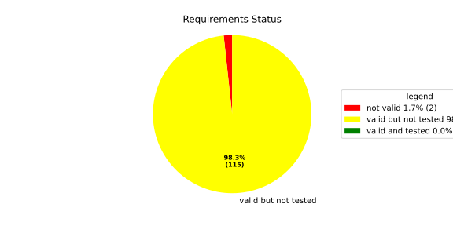
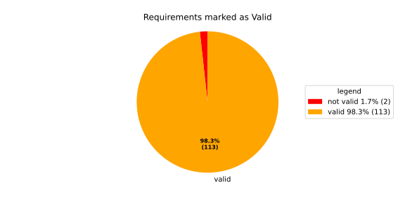
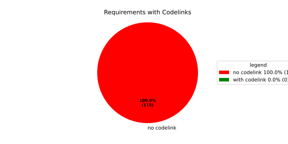

Component Requirements Statistics#
Overview#

In Detail#


No needs passed the filters
Failed Tests
Hint: This table should be empty. Before a PR can be merged all tests have to be successful.
No needs passed the filters
Skipped / Disabled Tests
No needs passed the filters
All passed Tests#
No needs passed the filters
Details About Testcases#
No needs passed the filters
No needs passed the filters
Test Log Files#
tests-report/score/health_monitor/src/rust/tests/test.log
exec ${PAGER:-/usr/bin/less} "$0" || exit 1
Executing tests from //score/health_monitor/src/rust:tests
-----------------------------------------------------------------------------
running 232 tests
test common::tests::duration_to_int_too_large - should panic ... ok
test common::tests::time_offset_diff_too_large - should panic ... ok
test common::tests::time_offset_valid ... ok
test common::tests::time_offset_wrong_order ... ok
test common::tests::time_range_from_interval_lower_too_large - should panic ... ok
test common::tests::time_range_from_interval_valid ... ok
test common::tests::time_range_new_valid ... ok
test common::tests::time_range_new_wrong_order - should panic ... ok
test deadline::common::tests::acquire_and_release_deadline ... ok
test deadline::common::tests::new_and_fields ... ok
test common::tests::duration_to_int_valid ... ok
test deadline::deadline_monitor::tests::deadline_failed_on_first_run_and_then_restarted_is_evaluated_as_error ... ok
test deadline::deadline_monitor::tests::deadline_outside_time_range_is_error_when_dropped_after_evaluate ... ok
test deadline::common::tests::concurrent_acquire ... ok
test deadline::deadline_monitor::tests::get_deadline_unknown_tag ... ok
test deadline::deadline_monitor::tests::start_stop_deadline_outside_ranges_is_evaluated_as_error ... ok
test deadline::deadline_monitor::tests::start_stop_deadline_outside_ranges_is_error_when_dropped_before_evaluate ... ok
test deadline::deadline_state::tests::as_u64_and_new ... ok
test deadline::deadline_state::tests::deadline_state_default_and_snapshot ... ok
test deadline::deadline_state::tests::deadline_state_update_none_returns_err ... ok
test deadline::deadline_state::tests::default_state ... ok
test deadline::deadline_state::tests::set_and_get_timestamp_ms ... ok
test deadline::deadline_state::tests::deadline_state_update_success ... ok
test deadline::deadline_state::tests::set_running ... ok
test deadline::deadline_state::tests::set_underrun ... ok
test deadline::ffi::tests::deadline_destroy_null_deadline ... ok
test deadline::ffi::tests::deadline_monitor_builder_add_deadline_invalid_range ... ok
test deadline::ffi::tests::deadline_monitor_builder_add_deadline_null_builder ... ok
test deadline::ffi::tests::deadline_monitor_builder_add_deadline_null_deadline_tag ... ok
test deadline::ffi::tests::deadline_monitor_builder_add_deadline_succeeds ... ok
test deadline::ffi::tests::deadline_monitor_builder_create_null_builder ... ok
test deadline::ffi::tests::deadline_monitor_builder_create_succeeds ... ok
test deadline::ffi::tests::deadline_monitor_builder_destroy_null_builder ... ok
test deadline::ffi::tests::deadline_monitor_destroy_null_monitor ... ok
test deadline::ffi::tests::deadline_monitor_get_deadline_null_deadline_handle ... ok
test deadline::ffi::tests::deadline_monitor_get_deadline_null_deadline_tag ... ok
test deadline::ffi::tests::deadline_monitor_get_deadline_null_monitor ... ok
test deadline::ffi::tests::deadline_monitor_get_deadline_unknown_deadline ... ok
test deadline::ffi::tests::deadline_monitor_get_deadline_succeeds ... ok
test deadline::ffi::tests::deadline_start_already_started ... ok
test deadline::ffi::tests::deadline_start_null_deadline ... ok
test deadline::ffi::tests::deadline_stop_null_deadline ... ok
test deadline::ffi::tests::deadline_start_succeeds ... ok
test deadline::ffi::tests::deadline_stop_succeeds ... ok
test ffi::tests::health_monitor_builder_add_deadline_monitor_null_deadline_monitor_builder ... ok
test ffi::tests::health_monitor_builder_add_deadline_monitor_null_hmon_builder ... ok
test ffi::tests::health_monitor_builder_add_deadline_monitor_null_monitor_tag ... ok
test ffi::tests::health_monitor_builder_add_deadline_monitor_succeeds ... ok
test ffi::tests::health_monitor_builder_add_heartbeat_monitor_null_hmon_builder ... ok
test ffi::tests::health_monitor_builder_add_heartbeat_monitor_null_heartbeat_monitor_builder ... ok
test ffi::tests::health_monitor_builder_add_heartbeat_monitor_null_monitor_tag ... ok
test ffi::tests::health_monitor_builder_add_heartbeat_monitor_succeeds ... ok
test ffi::tests::health_monitor_builder_add_logic_monitor_null_hmon_builder ... ok
test ffi::tests::health_monitor_builder_add_logic_monitor_null_logic_monitor_builder ... ok
test ffi::tests::health_monitor_builder_add_logic_monitor_null_monitor_tag ... ok
test ffi::tests::health_monitor_builder_add_logic_monitor_succeeds ... ok
test ffi::tests::health_monitor_builder_build_invalid_cycle_intervals ... ok
test ffi::tests::health_monitor_builder_build_no_monitors ... ok
test ffi::tests::health_monitor_builder_build_null_builder_handle ... ok
test ffi::tests::health_monitor_builder_build_null_monitor_handle ... ok
test ffi::tests::health_monitor_builder_build_succeeds ... ok
test ffi::tests::health_monitor_builder_build_thread_parameters ... ok
test ffi::tests::health_monitor_builder_build_valid_cycle_intervals_succeeds ... ok
test ffi::tests::health_monitor_builder_create_null_handle ... ok
test ffi::tests::health_monitor_builder_create_succeeds ... ok
test ffi::tests::health_monitor_builder_destroy_null_handle ... ok
test ffi::tests::health_monitor_destroy_null_hmon ... ok
test ffi::tests::health_monitor_get_deadline_monitor_already_taken ... ok
test ffi::tests::health_monitor_get_deadline_monitor_null_deadline_monitor ... ok
test ffi::tests::health_monitor_get_deadline_monitor_null_hmon ... ok
test ffi::tests::health_monitor_get_deadline_monitor_null_monitor_tag ... ok
test ffi::tests::health_monitor_get_deadline_monitor_succeeds ... ok
test ffi::tests::health_monitor_get_heartbeat_monitor_already_taken ... ok
test ffi::tests::health_monitor_get_heartbeat_monitor_null_heartbeat_monitor ... ok
test ffi::tests::health_monitor_get_heartbeat_monitor_null_monitor_tag ... ok
test ffi::tests::health_monitor_get_heartbeat_monitor_null_hmon ... ok
test ffi::tests::health_monitor_get_heartbeat_monitor_succeeds ... ok
test ffi::tests::health_monitor_get_logic_monitor_already_taken ... ok
test ffi::tests::health_monitor_get_logic_monitor_null_hmon ... ok
test ffi::tests::health_monitor_get_logic_monitor_null_logic_monitor ... ok
test ffi::tests::health_monitor_get_logic_monitor_null_monitor_tag ... ok
test ffi::tests::health_monitor_get_logic_monitor_succeeds ... ok
test ffi::tests::health_monitor_start_null_hmon ... ok
test ffi::tests::health_monitor_start_monitor_not_taken ... ok
test health_monitor::tests::health_monitor_builder_build_invalid_cycles ... ok
test health_monitor::tests::health_monitor_builder_build_no_monitors ... ok
test health_monitor::tests::health_monitor_builder_build_succeeds ... ok
test health_monitor::tests::health_monitor_builder_new_succeeds ... ok
test health_monitor::tests::health_monitor_get_deadline_monitor_available ... ok
test health_monitor::tests::health_monitor_get_deadline_monitor_invalid_state ... ok
test health_monitor::tests::health_monitor_get_deadline_monitor_taken ... ok
test health_monitor::tests::health_monitor_get_deadline_monitor_unknown ... ok
test health_monitor::tests::health_monitor_get_heartbeat_monitor_available ... ok
test health_monitor::tests::health_monitor_get_heartbeat_monitor_invalid_state ... ok
test health_monitor::tests::health_monitor_get_heartbeat_monitor_taken ... ok
test health_monitor::tests::health_monitor_get_heartbeat_monitor_unknown ... ok
test health_monitor::tests::health_monitor_get_logic_monitor_available ... ok
test health_monitor::tests::health_monitor_get_logic_monitor_invalid_state ... ok
[2026/06/01 13:07:08.7969051][7815][HMON][INFO] Monitoring thread started.
[2026/06/01 13:07:08.7969244][7815][HMON][INFO] Monitoring thread exiting.
test ffi::tests::health_monitor_start_succeeds ... ok
test health_monitor::tests::health_monitor_get_logic_monitor_taken ... ok
test health_monitor::tests::health_monitor_get_logic_monitor_unknown ... ok
[2026/06/01 13:07:08.7984349][7815][HMON][INFO] Monitoring thread started.
[2026/06/01 13:07:08.7984505][7815][HMON][INFO] Monitoring thread exiting.
test health_monitor::tests::health_monitor_start_monitors_not_taken - should panic ... ok
test health_monitor::tests::health_monitor_start_succeeds ... ok
test heartbeat::ffi::tests::heartbeat_monitor_builder_create_invalid_range ... ok
test heartbeat::ffi::tests::heartbeat_monitor_builder_create_null_builder ... ok
test heartbeat::ffi::tests::heartbeat_monitor_builder_create_succeeds ... ok
test heartbeat::ffi::tests::heartbeat_monitor_builder_destroy_null_builder ... ok
test heartbeat::ffi::tests::heartbeat_monitor_heartbeat_null_monitor ... ok
test heartbeat::ffi::tests::heartbeat_monitor_heartbeat_succeeds ... ok
test heartbeat::ffi::tests::heartbeat_monitor_destroy_null_monitor ... ok
test deadline::deadline_monitor::tests::monitor_with_multiple_running_deadlines ... ok
test heartbeat::heartbeat_monitor::tests::heartbeat_monitor_beat_early_evaluate_early ... ok
test heartbeat::heartbeat_monitor::tests::heartbeat_monitor_beat_early_evaluate_in_range ... ok
test heartbeat::heartbeat_monitor::tests::heartbeat_monitor_beat_in_range_evaluate_in_range ... ok
test heartbeat::heartbeat_monitor::tests::heartbeat_monitor_beat_early_evaluate_late ... ok
test heartbeat::heartbeat_monitor::tests::heartbeat_monitor_builder_build_invalid_internal_processing_cycle ... ok
test heartbeat::heartbeat_monitor::tests::heartbeat_monitor_builder_build_ok ... ok
test heartbeat::heartbeat_monitor::tests::heartbeat_monitor_beat_in_range_evaluate_late ... ok
test heartbeat::heartbeat_monitor::tests::heartbeat_monitor_beat_late_evaluate_late ... ok
test heartbeat::heartbeat_monitor::tests::heartbeat_monitor_cycle_early ... ok
test heartbeat::heartbeat_monitor::tests::heartbeat_monitor_multiple_beats_early_evaluate_early ... ok
test heartbeat::heartbeat_monitor::tests::heartbeat_monitor_cycle_in_range ... ok
test heartbeat::heartbeat_monitor::tests::heartbeat_monitor_multiple_beats_early_evaluate_in_range ... ok
test heartbeat::heartbeat_monitor::tests::heartbeat_monitor_multiple_beats_in_range_evaluate_in_range ... ok
test heartbeat::heartbeat_monitor::tests::heartbeat_monitor_cycle_late ... ok
test heartbeat::heartbeat_monitor::tests::heartbeat_monitor_multiple_beats_early_evaluate_late ... ok
test heartbeat::heartbeat_monitor::tests::heartbeat_monitor_no_beat_evaluate_early ... ok
test heartbeat::heartbeat_monitor::tests::heartbeat_monitor_no_beat_evaluate_in_range ... ok
test heartbeat::heartbeat_monitor::tests::heartbeat_monitor_multiple_beats_in_range_evaluate_late ... ok
test heartbeat::heartbeat_monitor::tests::heartbeat_monitor_multiple_beats_late_evaluate_late ... ok
test heartbeat::heartbeat_state::tests::snapshot_counter_increment ... ok
test heartbeat::heartbeat_state::tests::snapshot_default ... ok
test heartbeat::heartbeat_state::tests::snapshot_from_u64_max ... ok
test heartbeat::heartbeat_state::tests::snapshot_from_u64_valid ... ok
test heartbeat::heartbeat_state::tests::snapshot_from_u64_zero ... ok
test heartbeat::heartbeat_state::tests::snapshot_new_succeeds ... ok
test heartbeat::heartbeat_state::tests::snapshot_set_heartbeat_timestamp_out_of_range - should panic ... ok
test heartbeat::heartbeat_state::tests::snapshot_set_heartbeat_timestamp_valid ... ok
test heartbeat::heartbeat_state::tests::state_default ... ok
test heartbeat::heartbeat_state::tests::state_new ... ok
test heartbeat::heartbeat_state::tests::state_reset ... ok
test heartbeat::heartbeat_state::tests::state_snapshot ... ok
test heartbeat::heartbeat_state::tests::state_update_none ... ok
test heartbeat::heartbeat_state::tests::state_update_some ... ok
test logic::ffi::tests::logic_monitor_builder_add_state_null_allowed_states_many_elements ... ok
test logic::ffi::tests::logic_monitor_builder_add_state_null_allowed_states_zero_elements ... ok
test logic::ffi::tests::logic_monitor_builder_add_state_null_builder ... ok
test logic::ffi::tests::logic_monitor_builder_add_state_null_tag ... ok
test logic::ffi::tests::logic_monitor_builder_add_state_succeeds ... ok
test logic::ffi::tests::logic_monitor_builder_create_null_builder ... ok
test logic::ffi::tests::logic_monitor_builder_create_null_initial_state ... ok
test logic::ffi::tests::logic_monitor_builder_create_succeeds ... ok
test logic::ffi::tests::logic_monitor_builder_destroy_null_builder ... ok
test logic::ffi::tests::logic_monitor_destroy_null_monitor ... ok
test logic::ffi::tests::logic_monitor_state_fails ... ok
test logic::ffi::tests::logic_monitor_state_null_monitor ... ok
test logic::ffi::tests::logic_monitor_state_null_state ... ok
test logic::ffi::tests::logic_monitor_state_succeeds ... ok
test logic::ffi::tests::logic_monitor_transition_fails ... ok
test logic::ffi::tests::logic_monitor_transition_null_monitor ... ok
test logic::ffi::tests::logic_monitor_transition_null_target_state ... ok
test logic::ffi::tests::logic_monitor_transition_succeeds ... ok
test logic::logic_monitor::tests::logic_monitor_builder_build_no_states ... ok
test logic::logic_monitor::tests::logic_monitor_builder_build_succeeds ... ok
test logic::logic_monitor::tests::logic_monitor_builder_build_undefined_initial_state ... ok
test logic::logic_monitor::tests::logic_monitor_builder_build_undefined_target ... ok
test logic::logic_monitor::tests::logic_monitor_builder_new_succeeds ... ok
test logic::logic_monitor::tests::logic_monitor_evaluate_invalid_state ... ok
test logic::logic_monitor::tests::logic_monitor_evaluate_invalid_transition ... ok
test logic::logic_monitor::tests::logic_monitor_evaluate_succeeds ... ok
test logic::logic_monitor::tests::logic_monitor_state_indeterminate_current_state ... ok
test logic::logic_monitor::tests::logic_monitor_state_succeeds ... ok
test logic::logic_monitor::tests::logic_monitor_transition_indeterminate_current_state ... ok
test logic::logic_monitor::tests::logic_monitor_transition_invalid_transition ... ok
test logic::logic_monitor::tests::logic_monitor_transition_succeeds ... ok
test logic::logic_monitor::tests::logic_monitor_transition_unknown_node ... ok
test logic::logic_state::tests::snapshot_from_u64_max ... ok
test logic::logic_state::tests::snapshot_from_u64_valid ... ok
test logic::logic_state::tests::snapshot_from_u64_zero ... ok
test logic::logic_state::tests::snapshot_new_succeeds ... ok
test logic::logic_state::tests::snapshot_set_current_state_index_valid ... ok
test logic::logic_state::tests::snapshot_set_heartbeat_timestamp_out_of_range - should panic ... ok
test logic::logic_state::tests::snapshot_set_monitor_status_valid ... ok
test logic::logic_state::tests::state_new ... ok
test logic::logic_state::tests::state_snapshot ... ok
test logic::logic_state::tests::state_swap ... ok
test tag::tests::deadline_tag_debug ... ok
test tag::tests::deadline_tag_from_str ... ok
test tag::tests::deadline_tag_from_string ... ok
test tag::tests::deadline_tag_new ... ok
test tag::tests::deadline_tag_score_debug ... ok
test tag::tests::monitor_tag_debug ... ok
test tag::tests::monitor_tag_from_str ... ok
test tag::tests::monitor_tag_from_string ... ok
test tag::tests::monitor_tag_new ... ok
test tag::tests::monitor_tag_score_debug ... ok
test tag::tests::state_tag_debug ... ok
test tag::tests::state_tag_from_str ... ok
test tag::tests::state_tag_from_string ... ok
test tag::tests::state_tag_new ... ok
test tag::tests::state_tag_score_debug ... ok
test tag::tests::tag_debug ... ok
test tag::tests::tag_hash_is_eq ... ok
test tag::tests::tag_hash_is_ne ... ok
test tag::tests::tag_new ... ok
test tag::tests::tag_partial_eq_is_eq ... ok
test tag::tests::tag_partial_eq_is_ne ... ok
test tag::tests::tag_score_debug ... ok
test tag::tests::test_from_str ... ok
test tag::tests::test_from_string ... ok
test thread_ffi::tests::scheduler_policy_priority_max_null_priority ... ok
test thread_ffi::tests::scheduler_policy_priority_max_succeeds ... ok
test thread_ffi::tests::scheduler_policy_priority_min_null_priority ... ok
test thread_ffi::tests::scheduler_policy_priority_min_succeeds ... ok
test thread_ffi::tests::thread_parameters_affinity_null_affinity_many_elements ... ok
test thread_ffi::tests::thread_parameters_affinity_null_affinity_zero_elements ... ok
test thread_ffi::tests::thread_parameters_affinity_null_handle ... ok
test thread_ffi::tests::thread_parameters_affinity_succeeds ... ok
test thread_ffi::tests::thread_parameters_create_succeeds ... ok
test thread_ffi::tests::thread_parameters_destroy_null_handle ... ok
test thread_ffi::tests::thread_parameters_scheduler_parameters_invalid_priority ... ok
test thread_ffi::tests::thread_parameters_scheduler_parameters_null_handle ... ok
test thread_ffi::tests::thread_parameters_scheduler_parameters_succeeds ... ok
test thread_ffi::tests::thread_parameters_stack_size_null_handle ... ok
test thread_ffi::tests::thread_parameters_stack_size_succeeds ... ok
test worker::tests::monitoring_logic_report_alive_on_each_call_when_no_error ... ok
test heartbeat::heartbeat_monitor::tests::heartbeat_monitor_no_beat_evaluate_late ... ok
test worker::tests::monitoring_logic_report_error_when_deadline_failed ... ok
[2026/06/01 13:07:09.7562980][7815][HMON][INFO] Monitoring thread started.
test deadline::deadline_monitor::tests::start_stop_deadline_within_range_works ... ok
[2026/06/01 13:07:09.8167115][7815][HMON][WARN] Deadline (DeadlineTag(deadline_fast)) missed! Expected: 50, now: 60
[2026/06/01 13:07:09.8167394][7815][HMON][WARN] Deadline monitor with tag MonitorTag(deadline_monitor) reported error: TooLate.
[2026/06/01 13:07:09.8167466][7815][HMON][WARN] One or more monitors reported errors, skipping AliveAPI notification.
[2026/06/01 13:07:09.8167535][7815][HMON][INFO] Monitoring logic failed, stopping thread.
[2026/06/01 13:07:09.8167586][7815][HMON][INFO] Monitoring thread exiting.
test worker::tests::monitoring_logic_report_alive_respect_cycle ... ok
test worker::tests::unique_thread_runner_monitoring_works ... ok
test heartbeat::heartbeat_monitor::tests::heartbeat_monitor_timestamp_offset ... ok
test result: ok. 232 passed; 0 failed; 0 ignored; 0 measured; 0 filtered out; finished in 1.27s
tests-report/score/health_monitor/src/rust/loom_tests/test.log
exec ${PAGER:-/usr/bin/less} "$0" || exit 1
Executing tests from //score/health_monitor/src/rust:loom_tests
-----------------------------------------------------------------------------
running 3 tests
test heartbeat::heartbeat_monitor::loom_tests::heartbeat_monitor_heartbeat_evaluate_too_early ... ok
test heartbeat::heartbeat_monitor::loom_tests::heartbeat_monitor_heartbeat_evaluate_in_range ... ok
test heartbeat::heartbeat_monitor::loom_tests::heartbeat_monitor_heartbeat_evaluate_too_late ... ok
test result: ok. 3 passed; 0 failed; 0 ignored; 0 measured; 0 filtered out; finished in 0.71s
tests-report/score/health_monitor/src/cpp/cpp_tests/test.log
exec ${PAGER:-/usr/bin/less} "$0" || exit 1
Executing tests from //score/health_monitor/src/cpp:cpp_tests
-----------------------------------------------------------------------------
Running main() from gmock_main.cc
[==========] Running 1 test from 1 test suite.
[----------] Global test environment set-up.
[----------] 1 test from HealthMonitorTest
[ RUN ] HealthMonitorTest.TestName
[2026/06/01 13:07:10.0989262][score/health_monitor/src/rust/worker.rs:121][8244][HMON][INFO] Monitoring thread started.
[2026/06/01 13:07:10.0990149][score/health_monitor/src/rust/deadline/deadline_monitor.rs:217][8244][HMON][ERROR] Deadline DeadlineTag(deadline_1) stopped too early by 100 ms
[2026/06/01 13:07:10.1497675][score/health_monitor/src/rust/deadline/deadline_monitor.rs:267][8244][HMON][WARN] Deadline (DeadlineTag(deadline_1)) finished too early!
[2026/06/01 13:07:10.1497986][score/health_monitor/src/rust/worker.rs:58][8244][HMON][WARN] Deadline monitor with tag MonitorTag(deadline_monitor) reported error: TooEarly.
[2026/06/01 13:07:10.1498095][score/health_monitor/src/rust/heartbeat/heartbeat_monitor.rs:253][8244][HMON][WARN] Heartbeat occurred too early, offset to range: 100
[2026/06/01 13:07:10.1498145][score/health_monitor/src/rust/worker.rs:64][8244][HMON][WARN] Heartbeat monitor with tag MonitorTag(heartbeat_monitor) reported error: TooEarly.
[2026/06/01 13:07:10.1498203][score/health_monitor/src/rust/worker.rs:85][8244][HMON][WARN] One or more monitors reported errors, skipping AliveAPI notification.
[2026/06/01 13:07:10.1498247][score/health_monitor/src/rust/worker.rs:132][8244][HMON][INFO] Monitoring logic failed, stopping thread.
[2026/06/01 13:07:10.1498288][score/health_monitor/src/rust/worker.rs:139][8244][HMON][INFO] Monitoring thread exiting.
[ OK ] HealthMonitorTest.TestName (51 ms)
[----------] 1 test from HealthMonitorTest (51 ms total)
[----------] Global test environment tear-down
[==========] 1 test from 1 test suite ran. (51 ms total)
[ PASSED ] 1 test.
tests-report/score/launch_manager/daemon/src/process_state_client/process_state_client_ut/test.log
exec ${PAGER:-/usr/bin/less} "$0" || exit 1
Executing tests from //score/launch_manager/daemon/src/process_state_client:process_state_client_ut
-----------------------------------------------------------------------------
Running main() from gmock_main.cc
[==========] Running 4 tests from 1 test suite.
[----------] Global test environment set-up.
[----------] 4 tests from ProcessStateClient_UT
[ RUN ] ProcessStateClient_UT.ProcessStateClient_ConstructReceiver_Succeeds
[ OK ] ProcessStateClient_UT.ProcessStateClient_ConstructReceiver_Succeeds (0 ms)
[ RUN ] ProcessStateClient_UT.ProcessStateClient_QueueOneProcess_Succeeds
[ OK ] ProcessStateClient_UT.ProcessStateClient_QueueOneProcess_Succeeds (0 ms)
[ RUN ] ProcessStateClient_UT.ProcessStateClient_QueueMaxNumberOfProcesses_Succeeds
[ OK ] ProcessStateClient_UT.ProcessStateClient_QueueMaxNumberOfProcesses_Succeeds (8 ms)
[ RUN ] ProcessStateClient_UT.ProcessStateClient_QueueOneProcessTooMany_Fails
mw::log initialization error: Error No logging configuration files could be found. occurred with context information: Failed to load configuration files. Fallback to console logging.
2026/06/01 13:07:07.9227519 1538361 000 ECU1 NONE LM log error verbose 1 Failed to queue posix process
2026/06/01 13:07:07.9227520 1538363 000 ECU1 NONE LM log error verbose 1 ProcessStateReceiver::getNextChangedPosixProcess: Overflow occurred, will be reported as kCommunicationError
[ OK ] ProcessStateClient_UT.ProcessStateClient_QueueOneProcessTooMany_Fails (5 ms)
[----------] 4 tests from ProcessStateClient_UT (15 ms total)
[----------] Global test environment tear-down
[==========] 4 tests from 1 test suite ran. (15 ms total)
[ PASSED ] 4 tests.
tests-report/score/launch_manager/daemon/src/recovery_client/recovery_client_UT/test.log
exec ${PAGER:-/usr/bin/less} "$0" || exit 1
Executing tests from //score/launch_manager/daemon/src/recovery_client:recovery_client_UT
-----------------------------------------------------------------------------
Running main() from gmock_main.cc
[==========] Running 5 tests from 1 test suite.
[----------] Global test environment set-up.
[----------] 5 tests from RecoveryClientTest
[ RUN ] RecoveryClientTest.SendSingleRequest
[ OK ] RecoveryClientTest.SendSingleRequest (0 ms)
[ RUN ] RecoveryClientTest.GetNextRequest
[ OK ] RecoveryClientTest.GetNextRequest (0 ms)
[ RUN ] RecoveryClientTest.GetNextRequestEmpty
[ OK ] RecoveryClientTest.GetNextRequestEmpty (0 ms)
[ RUN ] RecoveryClientTest.RingBufferFull
[ OK ] RecoveryClientTest.RingBufferFull (0 ms)
[ RUN ] RecoveryClientTest.FIFOOrdering
[ OK ] RecoveryClientTest.FIFOOrdering (0 ms)
[----------] 5 tests from RecoveryClientTest (0 ms total)
[----------] Global test environment tear-down
[==========] 5 tests from 1 test suite ran. (0 ms total)
[ PASSED ] 5 tests.
tests-report/score/launch_manager/daemon/src/alive_monitor/details/recovery/Notification_UT/test.log
exec ${PAGER:-/usr/bin/less} "$0" || exit 1
Executing tests from //score/launch_manager/daemon/src/alive_monitor/details/recovery:Notification_UT
-----------------------------------------------------------------------------
Running main() from gmock_main.cc
[==========] Running 5 tests from 2 test suites.
[----------] Global test environment set-up.
[----------] 4 tests from NotificationWithConfigTest
[ RUN ] NotificationWithConfigTest.CanGetNotificationName
mw::log initialization error: Error No logging configuration files could be found. occurred with context information: Failed to load configuration files. Fallback to console logging.
[ OK ] NotificationWithConfigTest.CanGetNotificationName (3 ms)
[ RUN ] NotificationWithConfigTest.SendsRequestAndNeverTimesOut
[ OK ] NotificationWithConfigTest.SendsRequestAndNeverTimesOut (0 ms)
[ RUN ] NotificationWithConfigTest.TimesOutWhenSendingRequestFails
2026/06/01 13:07:07.9227947 1542634 000 ECU1 NONE Rcvy log error verbose 2 Notification (TestNotification) Failed to enqueue recovery request (ring buffer full)
[ OK ] NotificationWithConfigTest.TimesOutWhenSendingRequestFails (1 ms)
[ RUN ] NotificationWithConfigTest.ProxyInitializationFails
2026/06/01 13:07:07.9227947 1542641 000 ECU1 NONE Rcvy log error verbose 3 Notification (TestNotification) Invalid ProcessGroupState identifier: InvalidIdentifier
[ OK ] NotificationWithConfigTest.ProxyInitializationFails (0 ms)
[----------] 4 tests from NotificationWithConfigTest (6 ms total)
[----------] 1 test from NotificationWithoutConfigTest
[ RUN ] NotificationWithoutConfigTest.WatchdogNotificationGoesDirectlyToTimeout
[ OK ] NotificationWithoutConfigTest.WatchdogNotificationGoesDirectlyToTimeout (1 ms)
[----------] 1 test from NotificationWithoutConfigTest (2 ms total)
[----------] Global test environment tear-down
[==========] 5 tests from 2 test suites ran. (10 ms total)
[ PASSED ] 5 tests.
tests-report/score/launch_manager/daemon/src/common/identifier_hash_UT/test.log
exec ${PAGER:-/usr/bin/less} "$0" || exit 1
Executing tests from //score/launch_manager/daemon/src/common:identifier_hash_UT
-----------------------------------------------------------------------------
Running main() from gmock_main.cc
[==========] Running 7 tests from 1 test suite.
[----------] Global test environment set-up.
[----------] 7 tests from IdentifierHashTest
[ RUN ] IdentifierHashTest.IdentifierHash_with_string_view_created
[ OK ] IdentifierHashTest.IdentifierHash_with_string_view_created (0 ms)
[ RUN ] IdentifierHashTest.IdentifierHash_with_string_created
[ OK ] IdentifierHashTest.IdentifierHash_with_string_created (0 ms)
[ RUN ] IdentifierHashTest.IdentifierHash_default_created
[ OK ] IdentifierHashTest.IdentifierHash_default_created (0 ms)
[ RUN ] IdentifierHashTest.IdentifierHash_invalid_hash_no_string_representation
[ OK ] IdentifierHashTest.IdentifierHash_invalid_hash_no_string_representation (0 ms)
[ RUN ] IdentifierHashTest.IdentifierHash_no_dangling_pointer_after_source_string_dies
[ OK ] IdentifierHashTest.IdentifierHash_no_dangling_pointer_after_source_string_dies (0 ms)
[ RUN ] IdentifierHashTest.IdentifierHash_EqualityOperators
[ OK ] IdentifierHashTest.IdentifierHash_EqualityOperators (0 ms)
[ RUN ] IdentifierHashTest.IdentifierHash_LessThanOperator
[ OK ] IdentifierHashTest.IdentifierHash_LessThanOperator (0 ms)
[----------] 7 tests from IdentifierHashTest (0 ms total)
[----------] Global test environment tear-down
[==========] 7 tests from 1 test suite ran. (0 ms total)
[ PASSED ] 7 tests.
tests-report/score/launch_manager/daemon/src/common/concurrency/mpmc_concurrent_queue_tsan_test/test.log
exec ${PAGER:-/usr/bin/less} "$0" || exit 1
Executing tests from //score/launch_manager/daemon/src/common/concurrency:mpmc_concurrent_queue_tsan_test
-----------------------------------------------------------------------------
Running main() from gmock_main.cc
[==========] Running 15 tests from 5 test suites.
[----------] Global test environment set-up.
[----------] 5 tests from MPMCConcurrentQueueTest_Basic
[ RUN ] MPMCConcurrentQueueTest_Basic.PushAndPopSingleItem
[ OK ] MPMCConcurrentQueueTest_Basic.PushAndPopSingleItem (0 ms)
[ RUN ] MPMCConcurrentQueueTest_Basic.PushAndPopPreservesOrder
[ OK ] MPMCConcurrentQueueTest_Basic.PushAndPopPreservesOrder (0 ms)
[ RUN ] MPMCConcurrentQueueTest_Basic.LvaluePushCopiesItem
[ OK ] MPMCConcurrentQueueTest_Basic.LvaluePushCopiesItem (0 ms)
[ RUN ] MPMCConcurrentQueueTest_Basic.RvaluePushWorksWithMoveOnlyType
[ OK ] MPMCConcurrentQueueTest_Basic.RvaluePushWorksWithMoveOnlyType (0 ms)
[ RUN ] MPMCConcurrentQueueTest_Basic.PopReturnsNulloptOnSemaphoreWaitFailure
[ OK ] MPMCConcurrentQueueTest_Basic.PopReturnsNulloptOnSemaphoreWaitFailure (20 ms)
[----------] 5 tests from MPMCConcurrentQueueTest_Basic (21 ms total)
[----------] 2 tests from MPMCConcurrentQueueTest_Timeout
[ RUN ] MPMCConcurrentQueueTest_Timeout.PushWithTimeoutSucceedsWhenSlotAvailable
[ OK ] MPMCConcurrentQueueTest_Timeout.PushWithTimeoutSucceedsWhenSlotAvailable (0 ms)
[ RUN ] MPMCConcurrentQueueTest_Timeout.PushWithTimeoutReturnsFalseWhenFull
[ OK ] MPMCConcurrentQueueTest_Timeout.PushWithTimeoutReturnsFalseWhenFull (20 ms)
[----------] 2 tests from MPMCConcurrentQueueTest_Timeout (20 ms total)
[----------] 3 tests from MPMCConcurrentQueueTest_Stop
[ RUN ] MPMCConcurrentQueueTest_Stop.PushReturnsFalseAfterStop
[ OK ] MPMCConcurrentQueueTest_Stop.PushReturnsFalseAfterStop (0 ms)
[ RUN ] MPMCConcurrentQueueTest_Stop.PopReturnsNulloptWhenStoppedAndEmpty
[ OK ] MPMCConcurrentQueueTest_Stop.PopReturnsNulloptWhenStoppedAndEmpty (0 ms)
[ RUN ] MPMCConcurrentQueueTest_Stop.ItemsAreDroppedAfterStop
[ OK ] MPMCConcurrentQueueTest_Stop.ItemsAreDroppedAfterStop (0 ms)
[----------] 3 tests from MPMCConcurrentQueueTest_Stop (0 ms total)
[----------] 4 tests from MPMCConcurrentQueueTest_Blocking
[ RUN ] MPMCConcurrentQueueTest_Blocking.PopBlocksUntilItemAvailable
[ OK ] MPMCConcurrentQueueTest_Blocking.PopBlocksUntilItemAvailable (0 ms)
[ RUN ] MPMCConcurrentQueueTest_Blocking.PushBlocksWhenFull
[ OK ] MPMCConcurrentQueueTest_Blocking.PushBlocksWhenFull (0 ms)
[ RUN ] MPMCConcurrentQueueTest_Blocking.StopUnblocksBlockedConsumer
[ OK ] MPMCConcurrentQueueTest_Blocking.StopUnblocksBlockedConsumer (0 ms)
[ RUN ] MPMCConcurrentQueueTest_Blocking.StopUnblocksBlockedProducer
[ OK ] MPMCConcurrentQueueTest_Blocking.StopUnblocksBlockedProducer (0 ms)
[----------] 4 tests from MPMCConcurrentQueueTest_Blocking (0 ms total)
[----------] 1 test from MPMCConcurrentQueueTest_MPMC
[ RUN ] MPMCConcurrentQueueTest_MPMC.AllItemsDelivered
[ OK ] MPMCConcurrentQueueTest_MPMC.AllItemsDelivered (1 ms)
[----------] 1 test from MPMCConcurrentQueueTest_MPMC (1 ms total)
[----------] Global test environment tear-down
[==========] 15 tests from 5 test suites ran. (45 ms total)
[ PASSED ] 15 tests.
tests-report/score/launch_manager/daemon/src/common/concurrency/mpmc_concurrent_queue_test/test.log
exec ${PAGER:-/usr/bin/less} "$0" || exit 1
Executing tests from //score/launch_manager/daemon/src/common/concurrency:mpmc_concurrent_queue_test
-----------------------------------------------------------------------------
Running main() from gmock_main.cc
[==========] Running 15 tests from 5 test suites.
[----------] Global test environment set-up.
[----------] 5 tests from MPMCConcurrentQueueTest_Basic
[ RUN ] MPMCConcurrentQueueTest_Basic.PushAndPopSingleItem
[ OK ] MPMCConcurrentQueueTest_Basic.PushAndPopSingleItem (0 ms)
[ RUN ] MPMCConcurrentQueueTest_Basic.PushAndPopPreservesOrder
[ OK ] MPMCConcurrentQueueTest_Basic.PushAndPopPreservesOrder (0 ms)
[ RUN ] MPMCConcurrentQueueTest_Basic.LvaluePushCopiesItem
[ OK ] MPMCConcurrentQueueTest_Basic.LvaluePushCopiesItem (0 ms)
[ RUN ] MPMCConcurrentQueueTest_Basic.RvaluePushWorksWithMoveOnlyType
[ OK ] MPMCConcurrentQueueTest_Basic.RvaluePushWorksWithMoveOnlyType (0 ms)
[ RUN ] MPMCConcurrentQueueTest_Basic.PopReturnsNulloptOnSemaphoreWaitFailure
[ OK ] MPMCConcurrentQueueTest_Basic.PopReturnsNulloptOnSemaphoreWaitFailure (20 ms)
[----------] 5 tests from MPMCConcurrentQueueTest_Basic (20 ms total)
[----------] 2 tests from MPMCConcurrentQueueTest_Timeout
[ RUN ] MPMCConcurrentQueueTest_Timeout.PushWithTimeoutSucceedsWhenSlotAvailable
[ OK ] MPMCConcurrentQueueTest_Timeout.PushWithTimeoutSucceedsWhenSlotAvailable (0 ms)
[ RUN ] MPMCConcurrentQueueTest_Timeout.PushWithTimeoutReturnsFalseWhenFull
[ OK ] MPMCConcurrentQueueTest_Timeout.PushWithTimeoutReturnsFalseWhenFull (20 ms)
[----------] 2 tests from MPMCConcurrentQueueTest_Timeout (20 ms total)
[----------] 3 tests from MPMCConcurrentQueueTest_Stop
[ RUN ] MPMCConcurrentQueueTest_Stop.PushReturnsFalseAfterStop
[ OK ] MPMCConcurrentQueueTest_Stop.PushReturnsFalseAfterStop (0 ms)
[ RUN ] MPMCConcurrentQueueTest_Stop.PopReturnsNulloptWhenStoppedAndEmpty
[ OK ] MPMCConcurrentQueueTest_Stop.PopReturnsNulloptWhenStoppedAndEmpty (0 ms)
[ RUN ] MPMCConcurrentQueueTest_Stop.ItemsAreDroppedAfterStop
[ OK ] MPMCConcurrentQueueTest_Stop.ItemsAreDroppedAfterStop (0 ms)
[----------] 3 tests from MPMCConcurrentQueueTest_Stop (0 ms total)
[----------] 4 tests from MPMCConcurrentQueueTest_Blocking
[ RUN ] MPMCConcurrentQueueTest_Blocking.PopBlocksUntilItemAvailable
[ OK ] MPMCConcurrentQueueTest_Blocking.PopBlocksUntilItemAvailable (0 ms)
[ RUN ] MPMCConcurrentQueueTest_Blocking.PushBlocksWhenFull
[ OK ] MPMCConcurrentQueueTest_Blocking.PushBlocksWhenFull (0 ms)
[ RUN ] MPMCConcurrentQueueTest_Blocking.StopUnblocksBlockedConsumer
[ OK ] MPMCConcurrentQueueTest_Blocking.StopUnblocksBlockedConsumer (0 ms)
[ RUN ] MPMCConcurrentQueueTest_Blocking.StopUnblocksBlockedProducer
[ OK ] MPMCConcurrentQueueTest_Blocking.StopUnblocksBlockedProducer (0 ms)
[----------] 4 tests from MPMCConcurrentQueueTest_Blocking (0 ms total)
[----------] 1 test from MPMCConcurrentQueueTest_MPMC
[ RUN ] MPMCConcurrentQueueTest_MPMC.AllItemsDelivered
[ OK ] MPMCConcurrentQueueTest_MPMC.AllItemsDelivered (0 ms)
[----------] 1 test from MPMCConcurrentQueueTest_MPMC (0 ms total)
[----------] Global test environment tear-down
[==========] 15 tests from 5 test suites ran. (42 ms total)
[ PASSED ] 15 tests.
tests-report/tests/integration/smoke/smoke/test.log
exec ${PAGER:-/usr/bin/less} "$0" || exit 1
Executing tests from //tests/integration/smoke:smoke
-----------------------------------------------------------------------------
============================= test session starts ==============================
platform linux -- Python 3.12.12, pytest-9.0.3, pluggy-1.5.0
rootdir: /home/runner/.bazel/sandbox/processwrapper-sandbox/878/execroot/_main/bazel-out/k8-fastbuild/bin/tests/integration/smoke/smoke.runfiles/score_itf+
configfile: pytest.ini
collected 1 item
../score_itf+::test_smoke
-------------------------------- live log setup --------------------------------
[2026-06-02 14:43:21.419] [INFO] [score.itf.plugins.docker] Executing custom image bootstrap command: tests/utils/environments/x86_64-linux/x86_64-linux.sh
[2026-06-02 14:43:21.682] [DEBUG] [docker.utils.config] Trying paths: ['/home/runner/.docker/config.json', '/home/runner/.dockercfg']
[2026-06-02 14:43:21.682] [DEBUG] [docker.utils.config] Found file at path: /home/runner/.docker/config.json
[2026-06-02 14:43:21.683] [DEBUG] [docker.auth] Found 'auths' section
[2026-06-02 14:43:21.683] [DEBUG] [docker.auth] Found entry (registry='https://index.docker.io/v1/', username='githubactions')
[2026-06-02 14:43:21.695] [DEBUG] [urllib3.connectionpool] http://localhost:None "GET /version HTTP/1.1" 200 823
[2026-06-02 14:43:21.708] [DEBUG] [urllib3.connectionpool] http://localhost:None "POST /v1.48/containers/create HTTP/1.1" 201 88
[2026-06-02 14:43:21.710] [DEBUG] [urllib3.connectionpool] http://localhost:None "GET /v1.48/containers/efe4c68512b7ef980bea92dad4fe41fceced6772e89888c2bc4553e4b1d86d4c/json HTTP/1.1" 200 None
[2026-06-02 14:43:21.890] [DEBUG] [urllib3.connectionpool] http://localhost:None "POST /v1.48/containers/efe4c68512b7ef980bea92dad4fe41fceced6772e89888c2bc4553e4b1d86d4c/start HTTP/1.1" 204 0
[2026-06-02 14:43:21.891] [DEBUG] [docker.utils.config] Trying paths: ['/home/runner/.docker/config.json', '/home/runner/.dockercfg']
[2026-06-02 14:43:21.891] [DEBUG] [docker.utils.config] Found file at path: /home/runner/.docker/config.json
[2026-06-02 14:43:21.891] [DEBUG] [docker.auth] Found 'auths' section
[2026-06-02 14:43:21.891] [DEBUG] [docker.auth] Found entry (registry='https://index.docker.io/v1/', username='githubactions')
[2026-06-02 14:43:21.925] [DEBUG] [urllib3.connectionpool] http://localhost:None "GET /version HTTP/1.1" 200 823
[2026-06-02 14:43:22.192] [INFO] [tests.utils.testing_utils.setup_test] Test case setup finished
-------------------------------- live log call ---------------------------------
[2026-06-02 14:43:22.339] [INFO] [launch_manager] 2026/06/02 14:43:22.1402326 1196719 000 ECU1 LM LM log debug verbose 1
[2026-06-02 14:43:22.340] [INFO] [launch_manager] Launch Manager Started !!!!
[2026-06-02 14:43:22.340] [INFO] [launch_manager] 2026/06/02 14:43:22.1402326 1196723 000 ECU1 LM LM log debug verbose 1
[2026-06-02 14:43:22.340] [INFO] [launch_manager] Loading LCM Configurations...
[2026-06-02 14:43:22.340] [INFO] [launch_manager] 2026/06/02 14:43:22.1402326 1196724 000 ECU1 LM LM log debug verbose 1
[2026-06-02 14:43:22.340] [INFO] [launch_manager] ECUCFG_ENV_VAR_ROOTFOLDER set successfully
[2026-06-02 14:43:22.340] [INFO] [launch_manager] 2026/06/02 14:43:22.1402327 1196727 000 ECU1 LM LM log debug verbose 5
[2026-06-02 14:43:22.340] [INFO] [launch_manager] FlatBufferParser::getModeGroupPgName: MainPG ( IdentifierHash: 18079021346025578134 )
[2026-06-02 14:43:22.340] [INFO] [launch_manager] 2026/06/02 14:43:22.1402327 1196728 000 ECU1 LM LM log debug verbose 5
[2026-06-02 14:43:22.340] [INFO] [launch_manager] FlatBufferParser::getModeGroupPgStateName: MainPG/Startup ( IdentifierHash: 10504605499600661529 )
[2026-06-02 14:43:22.341] [INFO] [launch_manager] 2026/06/02 14:43:22.1402327 1196729 000 ECU1 LM LM log debug verbose 5
[2026-06-02 14:43:22.341] [INFO] [launch_manager] FlatBufferParser::getModeGroupPgStateName: MainPG/Running ( IdentifierHash: 15039935902284124227 )
[2026-06-02 14:43:22.341] [INFO] [launch_manager] 2026/06/02 14:43:22.1402327 1196730 000 ECU1 LM LM log debug verbose 5
[2026-06-02 14:43:22.341] [INFO] [launch_manager] FlatBufferParser::getModeGroupPgStateName: MainPG/Off ( IdentifierHash: 15281793077830264047 )
[2026-06-02 14:43:22.342] [INFO] [launch_manager] 2026/06/02 14:43:22.1402327 1196731 000 ECU1 LM LM log debug verbose 5
[2026-06-02 14:43:22.343] [INFO] [launch_manager] FlatBufferParser::getModeGroupPgStateName: MainPG/fallback_run_target ( IdentifierHash: 4059409696722237352 )
[2026-06-02 14:43:22.343] [INFO] [launch_manager] 2026/06/02 14:43:22.1402327 1196733 000 ECU1 LM LM log debug verbose 4
[2026-06-02 14:43:22.343] [INFO] [launch_manager] parseProcessConfigurations: Process index: 0 executable_path_: /tmp/tests/smoke/control_daemon_mock
[2026-06-02 14:43:22.343] [INFO] [launch_manager] 2026/06/02 14:43:22.1402327 1196734 000 ECU1 LM LM log debug verbose 3
[2026-06-02 14:43:22.343] [INFO] [launch_manager] Process control_daemon is Reporting execution state
[2026-06-02 14:43:22.343] [INFO] [launch_manager] 2026/06/02 14:43:22.1402327 1196735 000 ECU1 LM LM log debug verbose 1
[2026-06-02 14:43:22.343] [INFO] [launch_manager] Process is STATE_MANAGEMENT function Cluster Affiliation
[2026-06-02 14:43:22.343] [INFO] [launch_manager] 2026/06/02 14:43:22.1402327 1196736 000 ECU1 LM LM log debug verbose 3
[2026-06-02 14:43:22.343] [INFO] [launch_manager] Process control_daemon is NOT Self terminating
[2026-06-02 14:43:22.343] [INFO] [launch_manager] 2026/06/02 14:43:22.1402328 1196737 000 ECU1 LM LM log debug verbose 4
[2026-06-02 14:43:22.343] [INFO] [launch_manager] ParseProcessProcessGroup: id:::pg_name_: MainPG , pg_state_name_: MainPG/Startup
[2026-06-02 14:43:22.343] [INFO] [launch_manager] 2026/06/02 14:43:22.1402328 1196738 000 ECU1 LM LM log debug verbose 4 ParseProcessProcessGroup: id:::pg_name_: MainPG , pg_state_name_: MainPG/Running
[2026-06-02 14:43:22.343] [INFO] [launch_manager] 2026/06/02 14:43:22.1402328 1196739 000 ECU1 LM LM log debug verbose 4
[2026-06-02 14:43:22.344] [INFO] [launch_manager] parseProcessConfigurations: Process index: 1 executable_path_: /tmp/tests/smoke/gtest_process
[2026-06-02 14:43:22.344] [INFO] [launch_manager] 2026/06/02 14:43:22.1402328 1196740 000 ECU1 LM LM log debug verbose 3
[2026-06-02 14:43:22.344] [INFO] [launch_manager] Process gtest_process is Reporting execution state
[2026-06-02 14:43:22.344] [INFO] [launch_manager] 2026/06/02 14:43:22.1402328 1196741 000 ECU1 LM LM log debug verbose 1
[2026-06-02 14:43:22.344] [INFO] [launch_manager] Process is NOT associated with any function Cluster Affiliation
[2026-06-02 14:43:22.345] [INFO] [launch_manager] 2026/06/02 14:43:22.1402328 1196741 000 ECU1 LM LM log debug verbose 3
[2026-06-02 14:43:22.345] [INFO] [launch_manager] Process gtest_process is NOT Self terminating
[2026-06-02 14:43:22.345] [INFO] [launch_manager] 2026/06/02 14:43:22.1402328 1196743 000 ECU1 LM LM log debug verbose 4
[2026-06-02 14:43:22.345] [INFO] [launch_manager] ParseProcessProcessGroup: id:::pg_name_: MainPG , pg_state_name_: MainPG/Running
[2026-06-02 14:43:22.345] [INFO] [launch_manager] 2026/06/02 14:43:22.1402328 1196744 000 ECU1 LM LM log debug verbose 3
[2026-06-02 14:43:22.345] [INFO] [launch_manager] Loading SWCL Nr. 0 Succeeded
[2026-06-02 14:43:22.346] [INFO] [launch_manager] 2026/06/02 14:43:22.1402328 1196745 000 ECU1 LM LM log debug verbose 2
[2026-06-02 14:43:22.346] [INFO] [launch_manager] 1 process group(s)
[2026-06-02 14:43:22.346] [INFO] [launch_manager] 2026/06/02 14:43:22.1402328 1196746 000 ECU1 LM LM log debug verbose 3
[2026-06-02 14:43:22.346] [INFO] [launch_manager] Creating graph with 2 nodes
[2026-06-02 14:43:22.346] [INFO] [launch_manager] 2026/06/02 14:43:22.1402329 1196746 000 ECU1 LM LM log debug verbose 1 Process groups initialized successfully
[2026-06-02 14:43:22.346] [INFO] [launch_manager] 2026/06/02 14:43:22.1402329 1196747 000 ECU1 LM LM log debug verbose 1
[2026-06-02 14:43:22.346] [INFO] [launch_manager] Process Group initialization done
[2026-06-02 14:43:22.346] [INFO] [launch_manager] 2026/06/02 14:43:22.1402329 1196749 000 ECU1 LM LM log debug verbose 3
[2026-06-02 14:43:22.347] [INFO] [launch_manager] Creating Safe Process Map with 2 entries
[2026-06-02 14:43:22.347] [INFO] [launch_manager] 2026/06/02 14:43:22.1402329 1196751 000 ECU1 LM LM log debug verbose 2
[2026-06-02 14:43:22.347] [INFO] [launch_manager] Creating job queue with capacity 1024
[2026-06-02 14:43:22.347] [INFO] [launch_manager] 2026/06/02 14:43:22.1402329 1196752 000 ECU1 LM LM log debug verbose 1
[2026-06-02 14:43:22.347] [INFO] [launch_manager] Creating worker threads...
[2026-06-02 14:43:22.347] [INFO] [launch_manager] 2026/06/02 14:43:22.1402331 1196766 000 ECU1 LM LM log debug verbose 7
[2026-06-02 14:43:22.347] [INFO] [launch_manager] Process group index 0 (with name MainPG ) has 2 processes
[2026-06-02 14:43:22.347] [INFO] [launch_manager] 2026/06/02 14:43:22.1402331 1196768 000 ECU1 LM LM log debug verbose 2
[2026-06-02 14:43:22.347] [INFO] [launch_manager] Creating process node with id: 0
[2026-06-02 14:43:22.347] [INFO] [launch_manager] 2026/06/02 14:43:22.1402331 1196770 000 ECU1 LM LM log debug verbose 5
[2026-06-02 14:43:22.347] [INFO] [launch_manager] Process 0 has 0 start dependencies
[2026-06-02 14:43:22.347] [INFO] [launch_manager] 2026/06/02 14:43:22.1402331 1196772 000 ECU1 LM LM log debug verbose 2
[2026-06-02 14:43:22.347] [INFO] [launch_manager] Creating process node with id: 1
[2026-06-02 14:43:22.347] [INFO] [launch_manager] 2026/06/02 14:43:22.1402331 1196773 000 ECU1 LM LM log debug verbose 5
[2026-06-02 14:43:22.348] [INFO] [launch_manager] Process 1 has 0 start dependencies
[2026-06-02 14:43:22.348] [INFO] [launch_manager] 2026/06/02 14:43:22.1402331 1196774 000 ECU1 LM LM log debug verbose 3
[2026-06-02 14:43:22.348] [INFO] [launch_manager] Created 2 process nodes
[2026-06-02 14:43:22.348] [INFO] [launch_manager] 2026/06/02 14:43:22.1402331 1196776 000 ECU1 LM LM log debug verbose 2
[2026-06-02 14:43:22.348] [INFO] [launch_manager] Creating successor lists for process group MainPG
[2026-06-02 14:43:22.348] [INFO] [launch_manager] 2026/06/02 14:43:22.1402332 1196777 000 ECU1 LM LM log debug verbose 1
[2026-06-02 14:43:22.348] [INFO] [launch_manager] Graphs initialized
[2026-06-02 14:43:22.348] [INFO] [launch_manager] 2026/06/02 14:43:22.1402332 1196780 000 ECU1 LM Fcty log info verbose 2
[2026-06-02 14:43:22.348] [INFO] [launch_manager] Factory for FlatCfg MachineConfig: Loading of HM Machine Configuration succeeded.
[2026-06-02 14:43:22.348] [INFO] [launch_manager] 2026/06/02 14:43:22.1402332 1196782 000 ECU1 LM Fcty log debug verbose 3
[2026-06-02 14:43:22.348] [INFO] [launch_manager] Factory for FlatCfg MachineConfig: Alive Supervision buffer size: 100
[2026-06-02 14:43:22.348] [INFO] [launch_manager] 2026/06/02 14:43:22.1402332 1196784 000 ECU1 LM Fcty log debug verbose 3
[2026-06-02 14:43:22.348] [INFO] [launch_manager] Factory for FlatCfg MachineConfig: Local Supervision buffer size: 100
[2026-06-02 14:43:22.348] [INFO] [launch_manager] 2026/06/02 14:43:22.1402332 1196785 000 ECU1 LM Fcty log debug verbose 3
[2026-06-02 14:43:22.348] [INFO] [launch_manager] Factory for FlatCfg MachineConfig: Global Supervision buffer size: 100
[2026-06-02 14:43:22.349] [INFO] [launch_manager] 2026/06/02 14:43:22.1402332 1196786 000 ECU1 LM Fcty log debug verbose 3
[2026-06-02 14:43:22.349] [INFO] [launch_manager] Factory for FlatCfg MachineConfig: Monitor buffer size: 512
[2026-06-02 14:43:22.349] [INFO] [launch_manager] 2026/06/02 14:43:22.1402333 1196787 000 ECU1 LM Fcty log debug verbose 4
[2026-06-02 14:43:22.349] [INFO] [launch_manager] Factory for FlatCfg MachineConfig: Periodicity: 50000000 ns
[2026-06-02 14:43:22.349] [INFO] [launch_manager] 2026/06/02 14:43:22.1402333 1196789 000 ECU1 LM Fcty log debug verbose 3
[2026-06-02 14:43:22.349] [INFO] [launch_manager] Factory for FlatCfg MachineConfig: Configured watchdogs: 0
[2026-06-02 14:43:22.349] [INFO] [launch_manager] 2026/06/02 14:43:22.1402333 1196790 000 ECU1 LM Fcty log warn verbose 2
[2026-06-02 14:43:22.349] [INFO] [launch_manager] Factory for FlatCfg MachineConfig: No watchdog configured
[2026-06-02 14:43:22.349] [INFO] [launch_manager] 2026/06/02 14:43:22.1402333 1196792 000 ECU1 LM Fcty log debug verbose 2
[2026-06-02 14:43:22.349] [INFO] [launch_manager] Software Cluster Handler starts constructing workers: MainCluster
[2026-06-02 14:43:22.349] [INFO] [launch_manager] 2026/06/02 14:43:22.1402333 1196794 000 ECU1 LM Fcty log debug verbose 3 Factory for FlatCfg AR24-11: Successfully created Process States: control_daemon
[2026-06-02 14:43:22.349] [INFO] [launch_manager] 2026/06/02 14:43:22.1402333 1196795 000 ECU1 LM Fcty log debug verbose 3 Factory for FlatCfg AR24-11: Number of constructed Process States: 1
[2026-06-02 14:43:22.349] [INFO] [launch_manager] 2026/06/02 14:43:22.1402334 1196797 000 ECU1 LM Fcty log debug verbose 3
[2026-06-02 14:43:22.349] [INFO] [launch_manager] Factory for FlatCfg AR24-11: Successfully created Monitor interface IPC with path: lifecycle_health_control_daemon
[2026-06-02 14:43:22.350] [INFO] [launch_manager] 2026/06/02 14:43:22.1402334 1196798 000 ECU1 LM Fcty log debug verbose 3
[2026-06-02 14:43:22.350] [INFO] [launch_manager] Factory for FlatCfg AR24-11: Number of constructed Monitor interface IPCs: 1
[2026-06-02 14:43:22.350] [INFO] [launch_manager] 2026/06/02 14:43:22.1402334 1196799 000 ECU1 LM Fcty log debug verbose 3
[2026-06-02 14:43:22.350] [INFO] [launch_manager] Factory for FlatCfg AR24-11: Successfully created MonitorInterface: /lifecycle_health_control_daemon
[2026-06-02 14:43:22.350] [INFO] [launch_manager] 2026/06/02 14:43:22.1402334 1196800 000 ECU1 LM Fcty log debug verbose 3
[2026-06-02 14:43:22.350] [INFO] [launch_manager] Factory for FlatCfg AR24-11: Number of constructed Monitor interfaces: 1
[2026-06-02 14:43:22.350] [INFO] [launch_manager] 2026/06/02 14:43:22.1402334 1196801 000 ECU1 LM Fcty log debug verbose 3
[2026-06-02 14:43:22.350] [INFO] [launch_manager] Factory for FlatCfg AR24-11: Successfully created supervision checkpoint: control_daemon_checkpoint
[2026-06-02 14:43:22.350] [INFO] [launch_manager] 2026/06/02 14:43:22.1402334 1196801 000 ECU1 LM Fcty log debug verbose 3
[2026-06-02 14:43:22.350] [INFO] [launch_manager] Factory for FlatCfg AR24-11: Number of constructed supervision checkpoints: 1
[2026-06-02 14:43:22.350] [INFO] [launch_manager] 2026/06/02 14:43:22.1402334 1196802 000 ECU1 LM Fcty log debug verbose 3
[2026-06-02 14:43:22.350] [INFO] [launch_manager] Factory for FlatCfg AR24-11: Successfully created alive supervision worker object: control_daemon_alive_supervision
[2026-06-02 14:43:22.350] [INFO] [launch_manager] 2026/06/02 14:43:22.1402334 1196803 000 ECU1 LM Fcty log debug verbose 3
[2026-06-02 14:43:22.350] [INFO] [launch_manager] Factory for FlatCfg AR24-11: Number of constructed alive supervisions: 1
[2026-06-02 14:43:22.351] [INFO] [launch_manager] 2026/06/02 14:43:22.1402334 1196805 000 ECU1 LM Fcty log debug verbose 3
[2026-06-02 14:43:22.351] [INFO] [launch_manager] Factory for FlatCfg AR24-11: Successfully created local supervision: control_daemon_local_supervision
[2026-06-02 14:43:22.351] [INFO] [launch_manager] 2026/06/02 14:43:22.1402334 1196805 000 ECU1 LM Fcty log debug verbose 3
[2026-06-02 14:43:22.351] [INFO] [launch_manager] Factory for FlatCfg AR24-11: Number of constructed local supervisions: 1
[2026-06-02 14:43:22.351] [INFO] [launch_manager] 2026/06/02 14:43:22.1402334 1196806 000 ECU1 LM Fcty log debug verbose 3
[2026-06-02 14:43:22.351] [INFO] [launch_manager] Factory for FlatCfg AR24-11: Successfully created global supervision: global_supervision
[2026-06-02 14:43:22.351] [INFO] [launch_manager] 2026/06/02 14:43:22.1402335 1196807 000 ECU1 LM Fcty log debug verbose 3
[2026-06-02 14:43:22.351] [INFO] [launch_manager] Factory for FlatCfg AR24-11: Number of constructed global supervisions: 1
[2026-06-02 14:43:22.351] [INFO] [launch_manager] 2026/06/02 14:43:22.1402335 1196808 000 ECU1 LM Fcty log debug verbose 3
[2026-06-02 14:43:22.351] [INFO] [launch_manager] Factory for FlatCfg AR24-11: Successfully created recovery notification: recovery_notification
[2026-06-02 14:43:22.351] [INFO] [launch_manager] 2026/06/02 14:43:22.1402335 1196809 000 ECU1 LM Fcty log debug verbose 3
[2026-06-02 14:43:22.351] [INFO] [launch_manager] Factory for FlatCfg AR24-11: Number of constructed recovery notifications: 1
[2026-06-02 14:43:22.351] [INFO] [launch_manager] 2026/06/02 14:43:22.1402335 1196810 000 ECU1 LM Fcty log info verbose 2 Phm Daemon: The (configured) periodicity in [ns] is set to: 50000000
[2026-06-02 14:43:22.351] [INFO] [launch_manager] 2026/06/02 14:43:22.1402335 1196811 000 ECU1 LM Fcty log debug verbose 2 Phm Daemon: The accuracy of the monotonic system clock in [ns] is: 1
[2026-06-02 14:43:22.351] [INFO] [launch_manager] 2026/06/02 14:43:22.1402335 1196812 000 ECU1 LM Fcty log debug verbose 3 HealthMonitor: Initialization took 3 ms
[2026-06-02 14:43:22.352] [INFO] [launch_manager] 2026/06/02 14:43:22.1402335 1196813 000 ECU1 LM LM log info verbose 1
[2026-06-02 14:43:22.352] [INFO] [launch_manager] LCM started successfully
[2026-06-02 14:43:22.352] [INFO] [launch_manager] 2026/06/02 14:43:22.1402335 1196814 000 ECU1 LM LM log debug verbose 3 clock() at run(): 42.055000 ms
[2026-06-02 14:43:22.352] [INFO] [launch_manager] 2026/06/02 14:43:22.1402335 1196815 000 ECU1 LM LM log debug verbose 1
[2026-06-02 14:43:22.352] [INFO] [launch_manager] =============STARTING MAINPG STARTUP STATE============
[2026-06-02 14:43:22.352] [INFO] [launch_manager] 2026/06/02 14:43:22.1402335 1196817 000 ECU1 LM LM log debug verbose 2
[2026-06-02 14:43:22.352] [INFO] [launch_manager] wait failed: Unable to wait for any child process to terminate. Error: No child processes
[2026-06-02 14:43:22.352] [INFO] [launch_manager] 2026/06/02 14:43:22.1402336 1196818 000 ECU1 LM LM log debug verbose 9
[2026-06-02 14:43:22.352] [INFO] [launch_manager] Graph::setState changes from kSuccess to kInTransition for PG 0 ( MainPG )
[2026-06-02 14:43:22.352] [INFO] [launch_manager] 2026/06/02 14:43:22.1402336 1196819 000 ECU1 LM LM log debug verbose 2
[2026-06-02 14:43:22.352] [INFO] [launch_manager] Stop Dependencies: 0
[2026-06-02 14:43:22.352] [INFO] [launch_manager] 2026/06/02 14:43:22.1402336 1196820 000 ECU1 LM LM log debug verbose 2
[2026-06-02 14:43:22.352] [INFO] [launch_manager] Stop Dependencies: 0
[2026-06-02 14:43:22.352] [INFO] [launch_manager] 2026/06/02 14:43:22.1402336 1196821 000 ECU1 LM LM log debug verbose 2
[2026-06-02 14:43:22.353] [INFO] [launch_manager] Start Dependencies: 0
[2026-06-02 14:43:22.353] [INFO] [launch_manager] 2026/06/02 14:43:22.1402336 1196822 000 ECU1 LM LM log debug verbose 2
[2026-06-02 14:43:22.353] [INFO] [launch_manager] Start Dependencies: 0
[2026-06-02 14:43:22.353] [INFO] [launch_manager] 2026/06/02 14:43:22.1402336 1196824 000 ECU1 LM LM log debug verbose 6 Starting process 0 ( control_daemon ) from executable /tmp/tests/smoke/control_daemon_mock
[2026-06-02 14:43:22.353] [INFO] [launch_manager] 2026/06/02 14:43:22.1402336 1196824 000 ECU1 LM LM log debug verbose 3 Initialize the control client for control_daemon process
[2026-06-02 14:43:22.353] [INFO] [launch_manager] 2026/06/02 14:43:22.1402336 1196825 000 ECU1 LM LM log debug verbose 1 ControlClientChannel initialized
[2026-06-02 14:43:22.353] [INFO] [launch_manager] 2026/06/02 14:43:22.1402337 1196829 000 ECU1 LM LM log debug verbose 4 startProcess pid 66 received for process: control_daemon
[2026-06-02 14:43:22.378] [INFO] [launch_manager] 2026/06/02 14:43:22.1402377 1197231 000 ECU1 LM LM log debug verbose 1 ControlClientChannel obtained from sync.
[2026-06-02 14:43:22.378] [INFO] [launch_manager] [==========] Running 1 test from 1 test suite.
[2026-06-02 14:43:22.378] [INFO] [launch_manager] [----------] Global test environment set-up.
[2026-06-02 14:43:22.379] [INFO] [launch_manager] [----------] 1 test from Smoke
[2026-06-02 14:43:22.379] [INFO] [launch_manager] [ RUN ] Smoke.Daemon
[2026-06-02 14:43:22.379] [INFO] [launch_manager] [ STEP ] Control daemon report kRunning
[2026-06-02 14:43:22.383] [INFO] [launch_manager] [ END STEP ] Control daemon report kRunning
[2026-06-02 14:43:22.383] [INFO] [launch_manager] [ STEP ] Activate RunTarget Running
[2026-06-02 14:43:22.383] [INFO] [launch_manager] 2026/06/02 14:43:22.1402383 1197289 000 ECU1 LM LM log debug verbose 1 Request sent. Waiting for acknowledgment...
[2026-06-02 14:43:22.384] [INFO] [launch_manager] 2026/06/02 14:43:22.1402383 1197290 000 ECU1 LM LM log debug verbose 8 Got kRunning for pid 66 ( control_daemon ) process 0 of group MainPG
[2026-06-02 14:43:22.384] [INFO] [launch_manager] 2026/06/02 14:43:22.1402383 1197290 000 ECU1 LM LM log debug verbose 7 startProcess for MainPG process 0 ( control_daemon ) done
[2026-06-02 14:43:22.384] [INFO] [launch_manager] 2026/06/02 14:43:22.1402383 1197291 000 ECU1 LM LM log debug verbose 1 Control Client handler nudged
[2026-06-02 14:43:22.384] [INFO] [launch_manager] 2026/06/02 14:43:22.1402383 1197291 000 ECU1 LM LM log debug verbose 3 clock() at successful initial state transition: 43.814000 ms
[2026-06-02 14:43:22.384] [INFO] [launch_manager] 2026/06/02 14:43:22.1402383 1197291 000 ECU1 LM LM log debug verbose 9 Graph::setState changes from kInTransition to kSuccess for PG 0 ( MainPG )
[2026-06-02 14:43:22.384] [INFO] [launch_manager] 2026/06/02 14:43:22.1402383 1197292 000 ECU1 LM LM log info verbose 7 Completed the request for PG MainPG to State MainPG/Startup in 47 ms
[2026-06-02 14:43:22.384] [INFO] [launch_manager] 2026/06/02 14:43:22.1402383 1197292 000 ECU1 LM LM log debug verbose 1 Control Client handler nudged
[2026-06-02 14:43:22.384] [INFO] [launch_manager] 2026/06/02 14:43:22.1402384 1197298 000 ECU1 LM LM log debug verbose 8 ProcessGroupManager::ControlClientHandler: got request kSetStateRequest ( 16 ) re state MainPG/Running of PG MainPG
[2026-06-02 14:43:22.384] [INFO] [launch_manager] 2026/06/02 14:43:22.1402384 1197299 000 ECU1 LM LM log debug verbose 6 Pending state for process group MainPG changed from to MainPG/Running
[2026-06-02 14:43:22.384] [INFO] [launch_manager] 2026/06/02 14:43:22.1402384 1197299 000 ECU1 LM LM log debug verbose 1 Request acknowledged.
[2026-06-02 14:43:22.384] [INFO] [launch_manager] 2026/06/02 14:43:22.1402384 1197299 000 ECU1 LM LM log debug verbose 6 Pending state for process group MainPG changed from MainPG/Running to
[2026-06-02 14:43:22.384] [INFO] [launch_manager] 2026/06/02 14:43:22.1402384 1197299 000 ECU1 LM LM log debug verbose 4 Start transition to MainPG/Running for PG MainPG
[2026-06-02 14:43:22.384] [INFO] [launch_manager] 2026/06/02 14:43:22.1402384 1197300 000 ECU1 LM LM log debug verbose 9 Graph::setState changes from kSuccess to kInTransition for PG 0 ( MainPG )
[2026-06-02 14:43:22.384] [INFO] [launch_manager] 2026/06/02 14:43:22.1402384 1197300 000 ECU1 LM LM log debug verbose 2 Stop Dependencies: 0
[2026-06-02 14:43:22.385] [INFO] [launch_manager] 2026/06/02 14:43:22.1402384 1197300 000 ECU1 LM LM log debug verbose 2 Stop Dependencies: 0
[2026-06-02 14:43:22.385] [INFO] [launch_manager] 2026/06/02 14:43:22.1402384 1197300 000 ECU1 LM LM log debug verbose 2 Start Dependencies: 0
[2026-06-02 14:43:22.385] [INFO] [launch_manager] 2026/06/02 14:43:22.1402384 1197301 000 ECU1 LM LM log debug verbose 2 Start Dependencies: 0
[2026-06-02 14:43:22.385] [INFO] [launch_manager] 2026/06/02 14:43:22.1402385 1197309 000 ECU1 LM LM log debug verbose 6
[2026-06-02 14:43:22.386] [INFO] [launch_manager] Starting process 1 ( gtest_process ) from executable /tmp/tests/smoke/gtest_process
[2026-06-02 14:43:22.386] [INFO] [launch_manager] 2026/06/02 14:43:22.1402386 1197317 000 ECU1 LM Sprv log debug verbose 6 Process with Id control_daemon changed state PG MainPG/Startup PS 1
[2026-06-02 14:43:22.386] [INFO] [launch_manager] 2026/06/02 14:43:22.1402386 1197317 000 ECU1 LM Sprv log debug verbose 6 Process with Id control_daemon changed state PG MainPG/Startup PS 2
[2026-06-02 14:43:22.386] [INFO] [launch_manager] 2026/06/02 14:43:22.1402386 1197317 000 ECU1 LM Sprv log debug verbose 6 Process with Id gtest_process changed state PG MainPG/Running PS 1
[2026-06-02 14:43:22.386] [INFO] [launch_manager] 2026/06/02 14:43:22.1402386 1197318 000 ECU1 LM Sprv log info verbose 3 Alive Supervision ( control_daemon_alive_supervision ) switched to OK.
[2026-06-02 14:43:22.387] [INFO] [launch_manager] 2026/06/02 14:43:22.1402386 1197323 000 ECU1 LM Sprv log info verbose 3
[2026-06-02 14:43:22.387] [INFO] [launch_manager] Local Supervision ( control_daemon_local_supervision ) switched to OK.
[2026-06-02 14:43:22.387] [INFO] [launch_manager] 2026/06/02 14:43:22.1402387 1197326 000 ECU1 LM Sprv log info verbose 3 Global Supervision ( global_supervision ) switched to OK.
[2026-06-02 14:43:22.389] [INFO] [launch_manager] 2026/06/02 14:43:22.1402389 1197354 000 ECU1 LM LM log debug verbose 4 startProcess pid 68 received for process: gtest_process
[2026-06-02 14:43:22.413] [INFO] [launch_manager] 2026/06/02 14:43:22.1402413 1197591 000 ECU1 LM LM log debug verbose 1 Request acknowledged.
[2026-06-02 14:43:22.415] [INFO] [launch_manager] [==========] Running 1 test from 1 test suite.
[2026-06-02 14:43:22.415] [INFO] [launch_manager] [----------] Global test environment set-up.
[2026-06-02 14:43:22.415] [INFO] [launch_manager] [----------] 1 test from Smoke
[2026-06-02 14:43:22.415] [INFO] [launch_manager] [ RUN ] Smoke.Process
[2026-06-02 14:43:22.417] [INFO] [launch_manager] [ OK ] Smoke.Process (2 ms)
[2026-06-02 14:43:22.417] [INFO] [launch_manager] [----------] 1 test from Smoke (2 ms total)
[2026-06-02 14:43:22.417] [INFO] [launch_manager] [----------] Global test environment tear-down
[2026-06-02 14:43:22.417] [INFO] [launch_manager] [==========] 1 test from 1 test suite ran. (2 ms total)
[2026-06-02 14:43:22.417] [INFO] [launch_manager] [ PASSED ] 1 test.
[2026-06-02 14:43:22.419] [INFO] [launch_manager] 2026/06/02 14:43:22.1402418 1197645 000 ECU1 LM LM log debug verbose 8 Got kRunning for pid 68 ( gtest_process ) process 1 of group MainPG
[2026-06-02 14:43:22.419] [INFO] [launch_manager] 2026/06/02 14:43:22.1402418 1197646 000 ECU1 LM LM log debug verbose 7 startProcess for MainPG process 1 ( gtest_process ) done
[2026-06-02 14:43:22.419] [INFO] [launch_manager] 2026/06/02 14:43:22.1402419 1197646 000 ECU1 LM LM log debug verbose 9 Graph::setState changes from kInTransition to kSuccess for PG 0 ( MainPG )
[2026-06-02 14:43:22.419] [INFO] [launch_manager] 2026/06/02 14:43:22.1402419 1197647 000 ECU1 LM LM log info verbose 7 Completed the request for PG MainPG to State MainPG/Running in 34 ms
[2026-06-02 14:43:22.419] [INFO] [launch_manager] 2026/06/02 14:43:22.1402419 1197647 000 ECU1 LM LM log debug verbose 1 Control Client handler nudged
[2026-06-02 14:43:22.420] [INFO] [launch_manager] 2026/06/02 14:43:22.1402420 1197663 000 ECU1 LM LM log debug verbose 8 ProcessGroupManager::ControlClientHandler: Sending kSetStateSuccess ( 20 ) re state MainPG/Running of PG MainPG
[2026-06-02 14:43:22.420] [INFO] [launch_manager] 2026/06/02 14:43:22.1402420 1197663 000 ECU1 LM LM log debug verbose 1 Response sent.
[2026-06-02 14:43:22.436] [INFO] [launch_manager] 2026/06/02 14:43:22.1402435 1197814 000 ECU1 LM Sprv log debug verbose 6 Process with Id gtest_process changed state PG MainPG/Running PS 2
[2026-06-02 14:43:22.463] [DEBUG] [tests.utils.testing_utils.run_until_file_deployed] Waiting for /tmp/tests/test_end
[2026-06-02 14:43:22.478] [INFO] [launch_manager] 2026/06/02 14:43:22.1402478 1198242 000 ECU1 LM LM log debug verbose 1
[2026-06-02 14:43:22.479] [INFO] [launch_manager] Response retrieved.
[2026-06-02 14:43:22.479] [INFO] [launch_manager] [ END STEP ] Activate RunTarget Running
[2026-06-02 14:43:22.479] [INFO] [launch_manager] [ STEP ] Activate RunTarget Startup
[2026-06-02 14:43:22.479] [INFO] [launch_manager] 2026/06/02 14:43:22.1402479 1198250 000 ECU1 LM LM log debug verbose 1
[2026-06-02 14:43:22.479] [INFO] [launch_manager] Request sent. Waiting for acknowledgment...
[2026-06-02 14:43:22.481] [INFO] [launch_manager] 2026/06/02 14:43:22.1402480 1198266 000 ECU1 LM LM log debug verbose 8 ProcessGroupManager::ControlClientHandler: got request kSetStateRequest ( 16 ) re state MainPG/Startup of PG MainPG
[2026-06-02 14:43:22.481] [INFO] [launch_manager] 2026/06/02 14:43:22.1402481 1198267 000 ECU1 LM LM log debug verbose 6 Pending state for process group MainPG changed from to MainPG/Startup
[2026-06-02 14:43:22.481] [INFO] [launch_manager] 2026/06/02 14:43:22.1402481 1198267 000 ECU1 LM LM log debug verbose 1 Request acknowledged.
[2026-06-02 14:43:22.481] [INFO] [launch_manager] 2026/06/02 14:43:22.1402481 1198267 000 ECU1 LM LM log debug verbose 6 Pending state for process group MainPG changed from MainPG/Startup to
[2026-06-02 14:43:22.481] [INFO] [launch_manager] 2026/06/02 14:43:22.1402481 1198267 000 ECU1 LM LM log debug verbose 4
[2026-06-02 14:43:22.481] [INFO] [launch_manager] Start transition to MainPG/Startup for PG MainPG
[2026-06-02 14:43:22.481] [INFO] [launch_manager] 2026/06/02 14:43:22.1402481 1198268 000 ECU1 LM LM log debug verbose 9 Graph::setState changes from kSuccess to kInTransition for PG 0 ( MainPG )
[2026-06-02 14:43:22.481] [INFO] [launch_manager] 2026/06/02 14:43:22.1402481 1198268 000 ECU1 LM LM log debug verbose 2 Stop Dependencies: 0
[2026-06-02 14:43:22.481] [INFO] [launch_manager] 2026/06/02 14:43:22.1402481 1198268 000 ECU1 LM LM log debug verbose 2 Stop Dependencies: 0
[2026-06-02 14:43:22.481] [INFO] [launch_manager] 2026/06/02 14:43:22.1402481 1198269 000 ECU1 LM LM log debug verbose 5 2026/06/02 14:43:22.1402481 1198269 000 ECU1 LM LM log debug verbose 1
[2026-06-02 14:43:22.481] [INFO] [launch_manager] terminating process 1 ( gtest_process )
[2026-06-02 14:43:22.481] [INFO] [launch_manager] Request acknowledged.
[2026-06-02 14:43:22.481] [INFO] [launch_manager] 2026/06/02 14:43:22.1402481 1198271 000 ECU1 LM LM log debug verbose 9 Requesting termination of process 1 of MainPG pid 68 ( gtest_process )
[2026-06-02 14:43:22.482] [INFO] [launch_manager] 2026/06/02 14:43:22.1402481 1198271 000 ECU1 LM LM log debug verbose 2 Request termination received for 68
[2026-06-02 14:43:22.482] [INFO] [launch_manager] 2026/06/02 14:43:22.1402482 1198277 000 ECU1 LM LM log debug verbose 12
[2026-06-02 14:43:22.482] [INFO] [launch_manager] Child process 1 of MainPG pid 68 ( gtest_process ) for node True terminated with status 0
[2026-06-02 14:43:22.483] [INFO] [launch_manager] 2026/06/02 14:43:22.1402483 1198293 000 ECU1 LM LM log debug verbose 5
[2026-06-02 14:43:22.483] [INFO] [launch_manager] Queuing jobs after regular termination of process wait 1 ( gtest_process )
[2026-06-02 14:43:22.483] [INFO] [launch_manager] 2026/06/02 14:43:22.1402483 1198295 000 ECU1 LM LM log debug verbose 7
[2026-06-02 14:43:22.484] [INFO] [launch_manager] terminateProcess for MainPG process 1 ( gtest_process ) done
[2026-06-02 14:43:22.484] [INFO] [launch_manager] 2026/06/02 14:43:22.1402483 1198296 000 ECU1 LM LM log debug verbose 2 Start Dependencies: 0
[2026-06-02 14:43:22.484] [INFO] [launch_manager] 2026/06/02 14:43:22.1402483 1198296 000 ECU1 LM LM log debug verbose 2 Start Dependencies: 0
[2026-06-02 14:43:22.484] [INFO] [launch_manager] 2026/06/02 14:43:22.1402484 1198298 000 ECU1 LM LM log debug verbose 9
[2026-06-02 14:43:22.484] [INFO] [launch_manager] Graph::setState changes from kInTransition to kSuccess for PG 0 ( MainPG )
[2026-06-02 14:43:22.484] [INFO] [launch_manager] 2026/06/02 14:43:22.1402484 1198299 000 ECU1 LM LM log info verbose 7
[2026-06-02 14:43:22.485] [INFO] [launch_manager] Completed the request for PG MainPG to State MainPG/Startup in 3 ms
[2026-06-02 14:43:22.486] [INFO] [launch_manager] 2026/06/02 14:43:22.1402485 1198314 000 ECU1 LM LM log debug verbose 1 Control Client handler nudged
[2026-06-02 14:43:22.486] [INFO] [launch_manager] 2026/06/02 14:43:22.1402485 1198314 000 ECU1 LM LM log debug verbose 8 ProcessGroupManager::ControlClientHandler: Sending kSetStateSuccess ( 20 ) re state MainPG/Startup of PG MainPG
[2026-06-02 14:43:22.486] [INFO] [launch_manager] 2026/06/02 14:43:22.1402485 1198314 000 ECU1 LM Sprv log debug verbose 6 Process with Id gtest_process changed state PG MainPG/Startup PS 3
[2026-06-02 14:43:22.486] [INFO] [launch_manager] 2026/06/02 14:43:22.1402485 1198315 000 ECU1 LM Sprv log debug verbose 6 Process with Id gtest_process changed state PG MainPG/Startup PS 4
[2026-06-02 14:43:22.486] [INFO] [launch_manager] 2026/06/02 14:43:22.1402485 1198315 000 ECU1 LM LM log debug verbose 1 Response sent.
[2026-06-02 14:43:22.579] [INFO] [launch_manager] 2026/06/02 14:43:22.1402579 1199250 000 ECU1 LM LM log debug verbose 1 Response retrieved.
[2026-06-02 14:43:22.580] [INFO] [launch_manager] [ END STEP ] Activate RunTarget Startup
[2026-06-02 14:43:22.580] [INFO] [launch_manager] [ STEP ] Activate RunTarget Off
[2026-06-02 14:43:22.580] [INFO] [launch_manager] 2026/06/02 14:43:22.1402579 1199252 000 ECU1 LM LM log debug verbose 1 Request sent. Waiting for acknowledgment...
[2026-06-02 14:43:22.581] [INFO] [launch_manager] 2026/06/02 14:43:22.1402581 1199268 000 ECU1 LM LM log debug verbose 8 ProcessGroupManager::ControlClientHandler: got request kSetStateRequest ( 16 ) re state MainPG/Off of PG MainPG
[2026-06-02 14:43:22.581] [INFO] [launch_manager] 2026/06/02 14:43:22.1402581 1199269 000 ECU1 LM LM log debug verbose 6 Pending state for process group MainPG changed from to MainPG/Off
[2026-06-02 14:43:22.581] [INFO] [launch_manager] 2026/06/02 14:43:22.1402581 1199269 000 ECU1 LM LM log debug verbose 1 Request acknowledged.
[2026-06-02 14:43:22.581] [INFO] [launch_manager] 2026/06/02 14:43:22.1402581 1199269 000 ECU1 LM LM log debug verbose 6 Pending state for process group MainPG changed from MainPG/Off to
[2026-06-02 14:43:22.582] [INFO] [launch_manager] 2026/06/02 14:43:22.1402581 1199269 000 ECU1 LM LM log debug verbose 4 Start transition to MainPG/Off for PG MainPG
[2026-06-02 14:43:22.582] [INFO] [launch_manager] 2026/06/02 14:43:22.1402581 1199270 000 ECU1 LM LM log debug verbose 9 Graph::setState changes from kSuccess to kInTransition for PG 0 ( MainPG )
[2026-06-02 14:43:22.582] [INFO] [launch_manager] 2026/06/02 14:43:22.1402581 1199270 000 ECU1 LM LM log debug verbose 2 Stop Dependencies: 0
[2026-06-02 14:43:22.582] [INFO] [launch_manager] 2026/06/02 14:43:22.1402581 1199270 000 ECU1 LM LM log debug verbose 2 Stop Dependencies: 0
[2026-06-02 14:43:22.582] [INFO] [launch_manager] 2026/06/02 14:43:22.1402581 1199271 000 ECU1 LM LM log debug verbose 5 terminating process 0 ( control_daemon )
[2026-06-02 14:43:22.582] [INFO] [launch_manager] 2026/06/02 14:43:22.1402581 1199271 000 ECU1 LM LM log debug verbose 9 Requesting termination of process 0 of MainPG pid 66 ( control_daemon )
[2026-06-02 14:43:22.582] [INFO] [launch_manager] 2026/06/02 14:43:22.1402581 1199271 000 ECU1 LM LM log debug verbose 2 Request termination received for 66
[2026-06-02 14:43:22.582] [INFO] [launch_manager] 2026/06/02 14:43:22.1402581 1199275 000 ECU1 LM LM log debug verbose 1
[2026-06-02 14:43:22.583] [INFO] [launch_manager] Request acknowledged.
[2026-06-02 14:43:22.583] [INFO] [launch_manager] [ END STEP ] Activate RunTarget Off
[2026-06-02 14:43:22.586] [INFO] [launch_manager] 2026/06/02 14:43:22.1402585 1199314 000 ECU1 LM Sprv log debug verbose 6 Process with Id control_daemon changed state PG MainPG/Off PS 3
[2026-06-02 14:43:22.586] [INFO] [launch_manager] 2026/06/02 14:43:22.1402585 1199314 000 ECU1 LM Sprv log debug verbose 3 Alive Supervision ( control_daemon_alive_supervision ) switched to DEACTIVATED.
[2026-06-02 14:43:22.586] [INFO] [launch_manager] 2026/06/02 14:43:22.1402585 1199315 000 ECU1 LM Sprv log debug verbose 3 Local Supervision ( control_daemon_local_supervision ) switched to DEACTIVATED.
[2026-06-02 14:43:22.586] [INFO] [launch_manager] 2026/06/02 14:43:22.1402585 1199315 000 ECU1 LM Sprv log debug verbose 3 Global Supervision ( global_supervision ) switched to DEACTIVATED.
[2026-06-02 14:43:22.681] [INFO] [launch_manager] [ OK ] Smoke.Daemon (302 ms)
[2026-06-02 14:43:22.681] [INFO] [launch_manager] [----------] 1 test from Smoke (302 ms total)
[2026-06-02 14:43:22.681] [INFO] [launch_manager] [----------] Global test environment tear-down
[2026-06-02 14:43:22.681] [INFO] [launch_manager] [==========] 1 test from 1 test suite ran. (302 ms total)
[2026-06-02 14:43:22.681] [INFO] [launch_manager] [ PASSED ] 1 test.
[2026-06-02 14:43:22.681] [INFO] [launch_manager] 2026/06/02 14:43:22.1402681 1200268 000 ECU1 LM LM log debug verbose 12 Child process 0 of MainPG pid 66 ( control_daemon ) for node True terminated with status 0
[2026-06-02 14:43:22.682] [INFO] [launch_manager] 2026/06/02 14:43:22.1402681 1200269 000 ECU1 LM LM log debug verbose 2 wait failed: Unable to wait for any child process to terminate. Error: No child processes
[2026-06-02 14:43:22.684] [INFO] [launch_manager] 2026/06/02 14:43:22.1402683 1200289 000 ECU1 LM LM log debug verbose 5 Queuing jobs after regular termination of process wait 0 ( control_daemon )
[2026-06-02 14:43:22.684] [INFO] [launch_manager] 2026/06/02 14:43:22.1402683 1200289 000 ECU1 LM LM log debug verbose 7 terminateProcess for MainPG process 0 ( control_daemon ) done
[2026-06-02 14:43:22.684] [INFO] [launch_manager] 2026/06/02 14:43:22.1402683 1200289 000 ECU1 LM LM log debug verbose 2 Start Dependencies: 0
[2026-06-02 14:43:22.684] [INFO] [launch_manager] 2026/06/02 14:43:22.1402683 1200289 000 ECU1 LM LM log debug verbose 2 Start Dependencies: 0
[2026-06-02 14:43:22.684] [INFO] [launch_manager] 2026/06/02 14:43:22.1402683 1200290 000 ECU1 LM LM log debug verbose 9 Graph::setState changes from kInTransition to kSuccess for PG 0 ( MainPG )
[2026-06-02 14:43:22.684] [INFO] [launch_manager] 2026/06/02 14:43:22.1402683 1200290 000 ECU1 LM LM log info verbose 7 Completed the request for PG MainPG to State MainPG/Off in 102 ms
[2026-06-02 14:43:22.684] [INFO] [launch_manager] 2026/06/02 14:43:22.1402683 1200290 000 ECU1 LM LM log debug verbose 1 Control Client handler nudged
[2026-06-02 14:43:22.686] [INFO] [launch_manager] 2026/06/02 14:43:22.1402685 1200313 000 ECU1 LM Sprv log debug verbose 6 Process with Id control_daemon changed state PG MainPG/Off PS 4
[2026-06-02 14:43:22.781] [INFO] [launch_manager] 2026/06/02 14:43:22.1402781 1201271 000 ECU1 LM LM log debug verbose 2 wait failed: Unable to wait for any child process to terminate. Error: No child processes
[2026-06-02 14:43:22.881] [INFO] [launch_manager] 2026/06/02 14:43:22.1402881 1202272 000 ECU1 LM LM log debug verbose 2 wait failed: Unable to wait for any child process to terminate. Error: No child processes
[2026-06-02 14:43:22.982] [INFO] [launch_manager] 2026/06/02 14:43:22.1402981 1203274 000 ECU1 LM LM log debug verbose 2 wait failed: Unable to wait for any child process to terminate. Error: No child processes
[2026-06-02 14:43:23.084] [INFO] [launch_manager] 2026/06/02 14:43:23.1403081 1204276 000 ECU1 LM LM log debug verbose 2 wait failed: Unable to wait for any child process to terminate. Error: No child processes
[2026-06-02 14:43:23.125] [INFO] [launch_manager] 2026/06/02 14:43:23.1403117 1204631 000 ECU1 LM LM log debug verbose 1
[2026-06-02 14:43:23.126] [INFO] [launch_manager] Cancel all process group transitions
[2026-06-02 14:43:23.126] [INFO] [launch_manager] 2026/06/02 14:43:23.1403119 1204651 000 ECU1 LM LM log debug verbose 9
[2026-06-02 14:43:23.126] [INFO] [launch_manager] Graph::setState changes from kSuccess to kUndefinedState for PG 0 ( MainPG )
[2026-06-02 14:43:23.126] [INFO] [launch_manager] 2026/06/02 14:43:23.1403119 1204653 000 ECU1 LM LM log debug verbose 1
[2026-06-02 14:43:23.126] [INFO] [launch_manager] Wait for process group cancellations
[2026-06-02 14:43:23.126] [INFO] [launch_manager] 2026/06/02 14:43:23.1403119 1204655 000 ECU1 LM LM log debug verbose 1
[2026-06-02 14:43:23.126] [INFO] [launch_manager] Start transitioning process groups to Off state
[2026-06-02 14:43:23.126] [INFO] [launch_manager] 2026/06/02 14:43:23.1403120 1204656 000 ECU1 LM LM log debug verbose 9
[2026-06-02 14:43:23.126] [INFO] [launch_manager] Graph::setState changes from kUndefinedState to kInTransition for PG 0 ( MainPG )
[2026-06-02 14:43:23.126] [INFO] [launch_manager] 2026/06/02 14:43:23.1403120 1204658 000 ECU1 LM LM log debug verbose 2
[2026-06-02 14:43:23.127] [INFO] [launch_manager] Stop Dependencies: 0
[2026-06-02 14:43:23.127] [INFO] [launch_manager] 2026/06/02 14:43:23.1403120 1204660 000 ECU1 LM LM log debug verbose 2
[2026-06-02 14:43:23.127] [INFO] [launch_manager] Stop Dependencies: 0
[2026-06-02 14:43:23.127] [INFO] [launch_manager] 2026/06/02 14:43:23.1403120 1204662 000 ECU1 LM LM log debug verbose 2
[2026-06-02 14:43:23.127] [INFO] [launch_manager] Start Dependencies: 0
[2026-06-02 14:43:23.127] [INFO] [launch_manager] 2026/06/02 14:43:23.1403120 1204664 000 ECU1 LM LM log debug verbose 2
[2026-06-02 14:43:23.127] [INFO] [launch_manager] Start Dependencies: 0
[2026-06-02 14:43:23.127] [INFO] [launch_manager] 2026/06/02 14:43:23.1403120 1204665 000 ECU1 LM LM log debug verbose 9
[2026-06-02 14:43:23.128] [INFO] [launch_manager] Graph::setState changes from kInTransition to kSuccess for PG 0 ( MainPG )
[2026-06-02 14:43:23.128] [INFO] [launch_manager] 2026/06/02 14:43:23.1403121 1204667 000 ECU1 LM LM log info verbose 7
[2026-06-02 14:43:23.128] [INFO] [launch_manager] Completed the request for PG MainPG to State MainPG/Off in 1 ms
[2026-06-02 14:43:23.128] [INFO] [launch_manager] 2026/06/02 14:43:23.1403121 1204669 000 ECU1 LM LM log debug verbose 1
[2026-06-02 14:43:23.128] [INFO] [launch_manager] Control Client handler nudged
[2026-06-02 14:43:23.128] [INFO] [launch_manager] 2026/06/02 14:43:23.1403121 1204671 000 ECU1 LM LM log debug verbose 1
[2026-06-02 14:43:23.128] [INFO] [launch_manager] Wait for all process groups to complete the transition
[2026-06-02 14:43:23.182] [INFO] [launch_manager] 2026/06/02 14:43:23.1403182 1205278 000 ECU1 LM LM log debug verbose 1
[2026-06-02 14:43:23.182] [INFO] [launch_manager] LCM run successfully
[2026-06-02 14:43:23.185] [INFO] [launch_manager] 2026/06/02 14:43:23.1403185 1205313 000 ECU1 LM Fcty log info verbose 1
[2026-06-02 14:43:23.186] [INFO] [launch_manager] Phm Daemon: Received termination request - shutting down
[2026-06-02 14:43:23.188] [INFO] [launch_manager] 2026/06/02 14:43:23.1403187 1205336 000 ECU1 LM LM log debug verbose 1
[2026-06-02 14:43:23.188] [INFO] [launch_manager] Graph destroyed
[2026-06-02 14:43:23.188] [INFO] [launch_manager] 2026/06/02 14:43:23.1403188 1205342 000 ECU1 LM LM log info verbose 2
[2026-06-02 14:43:23.189] [INFO] [launch_manager] Launch Manager completed with exit code value: 0
PASSED [100%]
- generated xml file: /home/runner/.bazel/sandbox/processwrapper-sandbox/878/execroot/_main/bazel-out/k8-fastbuild/testlogs/tests/integration/smoke/smoke/test.xml -
============================== 1 passed in 2.50s ===============================
tests-report/tests/integration/process_launch_args/process_launch_args/test.log
exec ${PAGER:-/usr/bin/less} "$0" || exit 1
Executing tests from //tests/integration/process_launch_args:process_launch_args
-----------------------------------------------------------------------------
============================= test session starts ==============================
platform linux -- Python 3.12.12, pytest-9.0.3, pluggy-1.5.0
rootdir: /home/runner/.bazel/sandbox/processwrapper-sandbox/872/execroot/_main/bazel-out/k8-fastbuild/bin/tests/integration/process_launch_args/process_launch_args.runfiles/score_itf+
configfile: pytest.ini
collected 1 item
../score_itf+::test_process_launch_args
-------------------------------- live log setup --------------------------------
[2026-06-02 14:43:10.097] [INFO] [score.itf.plugins.docker] Executing custom image bootstrap command: tests/utils/environments/x86_64-linux/x86_64-linux.sh
[2026-06-02 14:43:14.703] [DEBUG] [docker.utils.config] Trying paths: ['/home/runner/.docker/config.json', '/home/runner/.dockercfg']
[2026-06-02 14:43:14.703] [DEBUG] [docker.utils.config] Found file at path: /home/runner/.docker/config.json
[2026-06-02 14:43:14.703] [DEBUG] [docker.auth] Found 'auths' section
[2026-06-02 14:43:14.703] [DEBUG] [docker.auth] Found entry (registry='https://index.docker.io/v1/', username='githubactions')
[2026-06-02 14:43:14.715] [DEBUG] [urllib3.connectionpool] http://localhost:None "GET /version HTTP/1.1" 200 823
[2026-06-02 14:43:14.727] [DEBUG] [urllib3.connectionpool] http://localhost:None "POST /v1.48/containers/create HTTP/1.1" 201 88
[2026-06-02 14:43:14.730] [DEBUG] [urllib3.connectionpool] http://localhost:None "GET /v1.48/containers/1df02226698a2e3d38a094ae172b301d3acc8b8b535701460f5079a897d03140/json HTTP/1.1" 200 None
[2026-06-02 14:43:14.936] [DEBUG] [urllib3.connectionpool] http://localhost:None "POST /v1.48/containers/1df02226698a2e3d38a094ae172b301d3acc8b8b535701460f5079a897d03140/start HTTP/1.1" 204 0
[2026-06-02 14:43:14.936] [DEBUG] [docker.utils.config] Trying paths: ['/home/runner/.docker/config.json', '/home/runner/.dockercfg']
[2026-06-02 14:43:14.937] [DEBUG] [docker.utils.config] Found file at path: /home/runner/.docker/config.json
[2026-06-02 14:43:14.937] [DEBUG] [docker.auth] Found 'auths' section
[2026-06-02 14:43:14.937] [DEBUG] [docker.auth] Found entry (registry='https://index.docker.io/v1/', username='githubactions')
[2026-06-02 14:43:14.958] [DEBUG] [urllib3.connectionpool] http://localhost:None "GET /version HTTP/1.1" 200 823
[2026-06-02 14:43:15.148] [INFO] [tests.utils.testing_utils.setup_test] Test case setup finished
-------------------------------- live log call ---------------------------------
[2026-06-02 14:43:15.287] [INFO] [launch_manager] 2026/06/02 14:43:15.1395284 1126306 000 ECU1 LM LM log debug verbose 1 Launch Manager Started !!!!
[2026-06-02 14:43:15.287] [INFO] [launch_manager] 2026/06/02 14:43:15.1395285 1126309 000 ECU1 LM LM log debug verbose 1 Loading LCM Configurations...
[2026-06-02 14:43:15.287] [INFO] [launch_manager] 2026/06/02 14:43:15.1395285 1126309 000 ECU1 LM LM log debug verbose 1 ECUCFG_ENV_VAR_ROOTFOLDER set successfully
[2026-06-02 14:43:15.287] [INFO] [launch_manager] 2026/06/02 14:43:15.1395285 1126311 000 ECU1 LM LM log debug verbose 5 FlatBufferParser::getModeGroupPgName: MainPG ( IdentifierHash: 18079021346025578134 )
[2026-06-02 14:43:15.288] [INFO] [launch_manager] 2026/06/02 14:43:15.1395285 1126311 000 ECU1 LM LM log debug verbose 5 FlatBufferParser::getModeGroupPgStateName: MainPG/Startup ( IdentifierHash: 10504605499600661529 )
[2026-06-02 14:43:15.288] [INFO] [launch_manager] 2026/06/02 14:43:15.1395285 1126311 000 ECU1 LM LM log debug verbose 5 FlatBufferParser::getModeGroupPgStateName: MainPG/fallback_run_target ( IdentifierHash: 4059409696722237352 )
[2026-06-02 14:43:15.288] [INFO] [launch_manager] 2026/06/02 14:43:15.1395285 1126312 000 ECU1 LM LM log debug verbose 4 parseProcessConfigurations: Process index: 0 executable_path_: /tmp/tests/process_launch_args/process_initial
[2026-06-02 14:43:15.288] [INFO] [launch_manager] 2026/06/02 14:43:15.1395285 1126312 000 ECU1 LM LM log debug verbose 3 Process component_initial is Reporting execution state
[2026-06-02 14:43:15.288] [INFO] [launch_manager] 2026/06/02 14:43:15.1395285 1126312 000 ECU1 LM LM log debug verbose 1 Process is NOT associated with any function Cluster Affiliation
[2026-06-02 14:43:15.288] [INFO] [launch_manager] 2026/06/02 14:43:15.1395285 1126312 000 ECU1 LM LM log debug verbose 3 Process component_initial is Self terminating
[2026-06-02 14:43:15.288] [INFO] [launch_manager] 2026/06/02 14:43:15.1395285 1126313 000 ECU1 LM LM log debug verbose 4 ParseProcessProcessGroup: id:::pg_name_: MainPG , pg_state_name_: MainPG/Startup
[2026-06-02 14:43:15.288] [INFO] [launch_manager] 2026/06/02 14:43:15.1395285 1126313 000 ECU1 LM LM log debug verbose 3 Loading SWCL Nr. 0 Succeeded
[2026-06-02 14:43:15.288] [INFO] [launch_manager] 2026/06/02 14:43:15.1395285 1126313 000 ECU1 LM LM log debug verbose 2 1 process group(s)
[2026-06-02 14:43:15.288] [INFO] [launch_manager] 2026/06/02 14:43:15.1395285 1126313 000 ECU1 LM LM log debug verbose 3 Creating graph with 1 nodes
[2026-06-02 14:43:15.288] [INFO] [launch_manager] 2026/06/02 14:43:15.1395285 1126314 000 ECU1 LM LM log debug verbose 1 Process groups initialized successfully
[2026-06-02 14:43:15.288] [INFO] [launch_manager] 2026/06/02 14:43:15.1395285 1126314 000 ECU1 LM LM log debug verbose 1 Process Group initialization done
[2026-06-02 14:43:15.288] [INFO] [launch_manager] 2026/06/02 14:43:15.1395285 1126314 000 ECU1 LM LM log debug verbose 3 Creating Safe Process Map with 1 entries
[2026-06-02 14:43:15.288] [INFO] [launch_manager] 2026/06/02 14:43:15.1395285 1126314 000 ECU1 LM LM log debug verbose 2 Creating job queue with capacity 1024
[2026-06-02 14:43:15.288] [INFO] [launch_manager] 2026/06/02 14:43:15.1395285 1126315 000 ECU1 LM LM log debug verbose 1 Creating worker threads...
[2026-06-02 14:43:15.289] [INFO] [launch_manager] 2026/06/02 14:43:15.1395287 1126328 000 ECU1 LM LM log debug verbose 7 Process group index 0 (with name MainPG ) has 1 processes
[2026-06-02 14:43:15.289] [INFO] [launch_manager] 2026/06/02 14:43:15.1395287 1126328 000 ECU1 LM LM log debug verbose 2 Creating process node with id: 0
[2026-06-02 14:43:15.289] [INFO] [launch_manager] 2026/06/02 14:43:15.1395287 1126328 000 ECU1 LM LM log debug verbose 5 Process 0 has 0 start dependencies
[2026-06-02 14:43:15.289] [INFO] [launch_manager] 2026/06/02 14:43:15.1395287 1126328 000 ECU1 LM LM log debug verbose 3 Created 1 process nodes
[2026-06-02 14:43:15.289] [INFO] [launch_manager] 2026/06/02 14:43:15.1395287 1126329 000 ECU1 LM LM log debug verbose 2 Creating successor lists for process group MainPG
[2026-06-02 14:43:15.289] [INFO] [launch_manager] 2026/06/02 14:43:15.1395287 1126329 000 ECU1 LM LM log debug verbose 1 Graphs initialized
[2026-06-02 14:43:15.291] [INFO] [launch_manager] 2026/06/02 14:43:15.1395287 1126331 000 ECU1 LM Fcty log info verbose 2 Factory for FlatCfg MachineConfig: Loading of HM Machine Configuration succeeded.
[2026-06-02 14:43:15.291] [INFO] [launch_manager] 2026/06/02 14:43:15.1395287 1126331 000 ECU1 LM Fcty log debug verbose 3 Factory for FlatCfg MachineConfig: Alive Supervision buffer size: 100
[2026-06-02 14:43:15.291] [INFO] [launch_manager] 2026/06/02 14:43:15.1395287 1126331 000 ECU1 LM Fcty log debug verbose 3 Factory for FlatCfg MachineConfig: Local Supervision buffer size: 100
[2026-06-02 14:43:15.291] [INFO] [launch_manager] 2026/06/02 14:43:15.1395287 1126331 000 ECU1 LM Fcty log debug verbose 3 Factory for FlatCfg MachineConfig: Global Supervision buffer size: 100
[2026-06-02 14:43:15.291] [INFO] [launch_manager] 2026/06/02 14:43:15.1395287 1126331 000 ECU1 LM Fcty log debug verbose 3 Factory for FlatCfg MachineConfig: Monitor buffer size: 512
[2026-06-02 14:43:15.291] [INFO] [launch_manager] 2026/06/02 14:43:15.1395287 1126332 000 ECU1 LM Fcty log debug verbose 4 Factory for FlatCfg MachineConfig: Periodicity: 50000000 ns
[2026-06-02 14:43:15.292] [INFO] [launch_manager] 2026/06/02 14:43:15.1395287 1126332 000 ECU1 LM Fcty log debug verbose 3 Factory for FlatCfg MachineConfig: Configured watchdogs: 0
[2026-06-02 14:43:15.293] [INFO] [launch_manager] 2026/06/02 14:43:15.1395287 1126332 000 ECU1 LM Fcty log warn verbose 2 Factory for FlatCfg MachineConfig: No watchdog configured
[2026-06-02 14:43:15.293] [INFO] [launch_manager] 2026/06/02 14:43:15.1395287 1126333 000 ECU1 LM Fcty log debug verbose 2 Software Cluster Handler starts constructing workers: MainCluster
[2026-06-02 14:43:15.294] [INFO] [launch_manager] 2026/06/02 14:43:15.1395287 1126333 000 ECU1 LM Fcty log debug verbose 3 Factory for FlatCfg AR24-11: Number of constructed Process States: 0
[2026-06-02 14:43:15.294] [INFO] [launch_manager] 2026/06/02 14:43:15.1395287 1126333 000 ECU1 LM Fcty log debug verbose 3 Factory for FlatCfg AR24-11: Number of constructed Monitor interface IPCs: 0
[2026-06-02 14:43:15.294] [INFO] [launch_manager] 2026/06/02 14:43:15.1395287 1126333 000 ECU1 LM Fcty log debug verbose 3 Factory for FlatCfg AR24-11: Number of constructed Monitor interfaces: 0
[2026-06-02 14:43:15.294] [INFO] [launch_manager] 2026/06/02 14:43:15.1395287 1126333 000 ECU1 LM Fcty log debug verbose 3 Factory for FlatCfg AR24-11: Number of constructed supervision checkpoints: 0
[2026-06-02 14:43:15.294] [INFO] [launch_manager] 2026/06/02 14:43:15.1395287 1126334 000 ECU1 LM Fcty log debug verbose 3 Factory for FlatCfg AR24-11: Number of constructed alive supervisions: 0
[2026-06-02 14:43:15.295] [INFO] [launch_manager] 2026/06/02 14:43:15.1395287 1126334 000 ECU1 LM Fcty log debug verbose 3 Factory for FlatCfg AR24-11: Number of constructed local supervisions: 0
[2026-06-02 14:43:15.295] [INFO] [launch_manager] 2026/06/02 14:43:15.1395287 1126334 000 ECU1 LM Fcty log debug verbose 3 Factory for FlatCfg AR24-11: Number of constructed global supervisions: 0
[2026-06-02 14:43:15.295] [INFO] [launch_manager] 2026/06/02 14:43:15.1395287 1126334 000 ECU1 LM Fcty log debug verbose 3 Factory for FlatCfg AR24-11: Number of constructed recovery notifications: 0
[2026-06-02 14:43:15.295] [INFO] [launch_manager] 2026/06/02 14:43:15.1395287 1126334 000 ECU1 LM Fcty log info verbose 2 Phm Daemon: The (configured) periodicity in [ns] is set to: 50000000
[2026-06-02 14:43:15.295] [INFO] [launch_manager] 2026/06/02 14:43:15.1395287 1126335 000 ECU1 LM Fcty log debug verbose 2 Phm Daemon: The accuracy of the monotonic system clock in [ns] is: 1
[2026-06-02 14:43:15.295] [INFO] [launch_manager] 2026/06/02 14:43:15.1395287 1126335 000 ECU1 LM Fcty log debug verbose 3 HealthMonitor: Initialization took 0 ms
[2026-06-02 14:43:15.295] [INFO] [launch_manager] 2026/06/02 14:43:15.1395287 1126335 000 ECU1 LM LM log info verbose 1 LCM started successfully
[2026-06-02 14:43:15.295] [INFO] [launch_manager] 2026/06/02 14:43:15.1395287 1126336 000 ECU1 LM LM log debug verbose 3 clock() at run(): 33.384000 ms
[2026-06-02 14:43:15.295] [INFO] [launch_manager] 2026/06/02 14:43:15.1395288 1126336 000 ECU1 LM LM log debug verbose 1 =============STARTING MAINPG STARTUP STATE============
[2026-06-02 14:43:15.295] [INFO] [launch_manager] 2026/06/02 14:43:15.1395288 1126337 000 ECU1 LM LM log debug verbose 9 Graph::setState changes from kSuccess to kInTransition for PG 0 ( MainPG )
[2026-06-02 14:43:15.295] [INFO] [launch_manager] 2026/06/02 14:43:15.1395288 1126337 000 ECU1 LM LM log debug verbose 2 Stop Dependencies: 0
[2026-06-02 14:43:15.295] [INFO] [launch_manager] 2026/06/02 14:43:15.1395288 1126337 000 ECU1 LM LM log debug verbose 2 Start Dependencies: 0
[2026-06-02 14:43:15.295] [INFO] [launch_manager] 2026/06/02 14:43:15.1395288 1126338 000 ECU1 LM LM log debug verbose 2 wait failed: Unable to wait for any child process to terminate. Error: No child processes
[2026-06-02 14:43:15.295] [INFO] [launch_manager] 2026/06/02 14:43:15.1395288 1126339 000 ECU1 LM LM log debug verbose 6 Starting process 0 ( component_initial ) from executable /tmp/tests/process_launch_args/process_initial
[2026-06-02 14:43:15.296] [INFO] [launch_manager] 2026/06/02 14:43:15.1395288 1126343 000 ECU1 LM LM log debug verbose 4 startProcess pid 66 received for process: component_initial
[2026-06-02 14:43:15.297] [INFO] [launch_manager] [==========] Running 1 test from 1 test suite.
[2026-06-02 14:43:15.297] [INFO] [launch_manager] [----------] Global test environment set-up.
[2026-06-02 14:43:15.297] [INFO] [launch_manager] [----------] 1 test from ProcessLaunchArgs
[2026-06-02 14:43:15.297] [INFO] [launch_manager] [ RUN ] ProcessLaunchArgs.ProcessInitial
[2026-06-02 14:43:15.297] [INFO] [launch_manager] [ STEP ] Report kRunning
[2026-06-02 14:43:15.297] [INFO] [launch_manager] [ END STEP ] Report kRunning
[2026-06-02 14:43:15.297] [INFO] [launch_manager] [ STEP ] Check args
[2026-06-02 14:43:15.298] [INFO] [launch_manager] [ END STEP ] Check args
[2026-06-02 14:43:15.298] [INFO] [launch_manager] [ OK ] ProcessLaunchArgs.ProcessInitial (2 ms)
[2026-06-02 14:43:15.299] [INFO] [launch_manager] [----------] 1 test from ProcessLaunchArgs (2 ms total)
[2026-06-02 14:43:15.301] [INFO] [launch_manager] [----------] Global test environment tear-down
[2026-06-02 14:43:15.301] [INFO] [launch_manager] [==========] 1 test from 1 test suite ran. (2 ms total)
[2026-06-02 14:43:15.301] [INFO] [launch_manager] [ PASSED ] 1 test.
[2026-06-02 14:43:15.301] [INFO] [launch_manager] 2026/06/02 14:43:15.1395298 1126442 000 ECU1 LM LM log debug verbose 8 Got kRunning for pid 66 ( component_initial ) process 0 of group MainPG
[2026-06-02 14:43:15.303] [INFO] [launch_manager] 2026/06/02 14:43:15.1395298 1126443 000 ECU1 LM LM log debug verbose 7 startProcess for MainPG process 0 ( component_initial ) done
[2026-06-02 14:43:15.303] [INFO] [launch_manager] 2026/06/02 14:43:15.1395298 1126444 000 ECU1 LM LM log debug verbose 1 Control Client handler nudged
[2026-06-02 14:43:15.303] [INFO] [launch_manager] 2026/06/02 14:43:15.1395298 1126444 000 ECU1 LM LM log debug verbose 3 clock() at successful initial state transition: 34.481000 ms
[2026-06-02 14:43:15.303] [INFO] [launch_manager] 2026/06/02 14:43:15.1395298 1126444 000 ECU1 LM LM log debug verbose 9 Graph::setState changes from kInTransition to kSuccess for PG 0 ( MainPG )
[2026-06-02 14:43:15.304] [INFO] [launch_manager] 2026/06/02 14:43:15.1395298 1126444 000 ECU1 LM LM log info verbose 7 Completed the request for PG MainPG to State MainPG/Startup in 10 ms
[2026-06-02 14:43:15.304] [INFO] [launch_manager] 2026/06/02 14:43:15.1395298 1126445 000 ECU1 LM LM log debug verbose 1 Control Client handler nudged
[2026-06-02 14:43:15.342] [INFO] [launch_manager] 2026/06/02 14:43:15.1395338 1126837 000 ECU1 LM Sprv log debug verbose 6 Process with Id component_initial changed state PG MainPG/Startup PS 1
[2026-06-02 14:43:15.343] [INFO] [launch_manager] 2026/06/02 14:43:15.1395338 1126837 000 ECU1 LM Sprv log debug verbose 6 Process with Id component_initial changed state PG MainPG/Startup PS 2
[2026-06-02 14:43:15.388] [INFO] [launch_manager] 2026/06/02 14:43:15.1395388 1127340 000 ECU1 LM LM log debug verbose 12
[2026-06-02 14:43:15.389] [INFO] [launch_manager] Child process 0 of MainPG pid 66 ( component_initial ) for node True terminated with status 0
[2026-06-02 14:43:15.389] [INFO] [launch_manager] 2026/06/02 14:43:15.1395389 1127350 000 ECU1 LM LM log debug verbose 2 wait failed: Unable to wait for any child process to terminate. Error: No child processes
[2026-06-02 14:43:15.438] [INFO] [launch_manager] 2026/06/02 14:43:15.1395437 1127836 000 ECU1 LM Sprv log debug verbose 6 Process with Id component_initial changed state PG MainPG/Startup PS 4
[2026-06-02 14:43:15.489] [INFO] [launch_manager] 2026/06/02 14:43:15.1395489 1128352 000 ECU1 LM LM log debug verbose 2 wait failed: Unable to wait for any child process to terminate. Error: No child processes
[2026-06-02 14:43:15.509] [INFO] [launch_manager] 2026/06/02 14:43:15.1395509 1128552 000 ECU1 LM LM log debug verbose 1 Cancel all process group transitions
[2026-06-02 14:43:15.509] [INFO] [launch_manager] 2026/06/02 14:43:15.1395509 1128552 000 ECU1 LM LM log debug verbose 9 Graph::setState changes from kSuccess to kUndefinedState for PG 0 ( MainPG )
[2026-06-02 14:43:15.509] [INFO] [launch_manager] 2026/06/02 14:43:15.1395509 1128552 000 ECU1 LM LM log debug verbose 1 Wait for process group cancellations
[2026-06-02 14:43:15.510] [INFO] [launch_manager] 2026/06/02 14:43:15.1395509 1128553 000 ECU1 LM LM log debug verbose 1 Start transitioning process groups to Off state
[2026-06-02 14:43:15.510] [INFO] [launch_manager] 2026/06/02 14:43:15.1395509 1128553 000 ECU1 LM LM log debug verbose 9 Graph::setState changes from kUndefinedState to kInTransition for PG 0 ( MainPG )
[2026-06-02 14:43:15.510] [INFO] [launch_manager] 2026/06/02 14:43:15.1395509 1128553 000 ECU1 LM LM log debug verbose 2 Stop Dependencies: 0
[2026-06-02 14:43:15.510] [INFO] [launch_manager] 2026/06/02 14:43:15.1395509 1128553 000 ECU1 LM LM log debug verbose 2 Start Dependencies: 0
[2026-06-02 14:43:15.510] [INFO] [launch_manager] 2026/06/02 14:43:15.1395509 1128554 000 ECU1 LM LM log debug verbose 9 Graph::setState changes from kInTransition to kSuccess for PG 0 ( MainPG )
[2026-06-02 14:43:15.510] [INFO] [launch_manager] 2026/06/02 14:43:15.1395509 1128554 000 ECU1 LM LM log info verbose 7 Completed the request for PG MainPG to State Off in 0 ms
[2026-06-02 14:43:15.510] [INFO] [launch_manager] 2026/06/02 14:43:15.1395509 1128554 000 ECU1 LM LM log debug verbose 1 Control Client handler nudged
[2026-06-02 14:43:15.510] [INFO] [launch_manager] 2026/06/02 14:43:15.1395509 1128554 000 ECU1 LM LM log debug verbose 1 Wait for all process groups to complete the transition
[2026-06-02 14:43:15.589] [INFO] [launch_manager] 2026/06/02 14:43:15.1395589 1129354 000 ECU1 LM LM log debug verbose 1 LCM run successfully
[2026-06-02 14:43:15.638] [INFO] [launch_manager] 2026/06/02 14:43:15.1395637 1129836 000 ECU1 LM Fcty log info verbose 1 Phm Daemon: Received termination request - shutting down
[2026-06-02 14:43:15.639] [INFO] [launch_manager] 2026/06/02 14:43:15.1395639 1129847 000 ECU1 LM LM log debug verbose 1 Graph destroyed
[2026-06-02 14:43:15.639] [INFO] [launch_manager] 2026/06/02 14:43:15.1395639 1129847 000 ECU1 LM LM log info verbose 2 Launch Manager completed with exit code value: 0
PASSED [100%]
- generated xml file: /home/runner/.bazel/sandbox/processwrapper-sandbox/872/execroot/_main/bazel-out/k8-fastbuild/testlogs/tests/integration/process_launch_args/process_launch_args/test.xml -
============================== 1 passed in 6.10s ===============================
tests-report/tests/integration/crash_on_startup/crash_on_startup/test.log
exec ${PAGER:-/usr/bin/less} "$0" || exit 1
Executing tests from //tests/integration/crash_on_startup:crash_on_startup
-----------------------------------------------------------------------------
============================= test session starts ==============================
platform linux -- Python 3.12.12, pytest-9.0.3, pluggy-1.5.0
rootdir: /home/runner/.bazel/sandbox/processwrapper-sandbox/877/execroot/_main/bazel-out/k8-fastbuild/bin/tests/integration/crash_on_startup/crash_on_startup.runfiles/score_itf+
configfile: pytest.ini
collected 1 item
../score_itf+::test_crash_on_startup
-------------------------------- live log setup --------------------------------
[2026-06-02 14:43:17.848] [INFO] [score.itf.plugins.docker] Executing custom image bootstrap command: tests/utils/environments/x86_64-linux/x86_64-linux.sh
[2026-06-02 14:43:18.038] [DEBUG] [docker.utils.config] Trying paths: ['/home/runner/.docker/config.json', '/home/runner/.dockercfg']
[2026-06-02 14:43:18.038] [DEBUG] [docker.utils.config] Found file at path: /home/runner/.docker/config.json
[2026-06-02 14:43:18.038] [DEBUG] [docker.auth] Found 'auths' section
[2026-06-02 14:43:18.038] [DEBUG] [docker.auth] Found entry (registry='https://index.docker.io/v1/', username='githubactions')
[2026-06-02 14:43:18.053] [DEBUG] [urllib3.connectionpool] http://localhost:None "GET /version HTTP/1.1" 200 823
[2026-06-02 14:43:18.103] [DEBUG] [urllib3.connectionpool] http://localhost:None "POST /v1.48/containers/create HTTP/1.1" 201 88
[2026-06-02 14:43:18.105] [DEBUG] [urllib3.connectionpool] http://localhost:None "GET /v1.48/containers/550f8c2f467b65e2f6cbcb6283d5e38c65d242877d768b1c484bb36f7c65d30d/json HTTP/1.1" 200 None
[2026-06-02 14:43:18.274] [DEBUG] [urllib3.connectionpool] http://localhost:None "POST /v1.48/containers/550f8c2f467b65e2f6cbcb6283d5e38c65d242877d768b1c484bb36f7c65d30d/start HTTP/1.1" 204 0
[2026-06-02 14:43:18.275] [DEBUG] [docker.utils.config] Trying paths: ['/home/runner/.docker/config.json', '/home/runner/.dockercfg']
[2026-06-02 14:43:18.275] [DEBUG] [docker.utils.config] Found file at path: /home/runner/.docker/config.json
[2026-06-02 14:43:18.275] [DEBUG] [docker.auth] Found 'auths' section
[2026-06-02 14:43:18.275] [DEBUG] [docker.auth] Found entry (registry='https://index.docker.io/v1/', username='githubactions')
[2026-06-02 14:43:18.287] [DEBUG] [urllib3.connectionpool] http://localhost:None "GET /version HTTP/1.1" 200 823
[2026-06-02 14:43:18.571] [INFO] [tests.utils.testing_utils.setup_test] Test case setup finished
-------------------------------- live log call ---------------------------------
[2026-06-02 14:43:18.760] [INFO] [launch_manager] 2026/06/02 14:43:18.1398753 1160989 000 ECU1 LM LM log debug verbose 1 Launch Manager Started !!!!
[2026-06-02 14:43:18.760] [INFO] [launch_manager] 2026/06/02 14:43:18.1398753 1160994 000 ECU1 LM LM log debug verbose 1
[2026-06-02 14:43:18.761] [INFO] [launch_manager] Loading LCM Configurations...
[2026-06-02 14:43:18.761] [INFO] [launch_manager] 2026/06/02 14:43:18.1398753 1160996 000 ECU1 LM LM log debug verbose 1
[2026-06-02 14:43:18.761] [INFO] [launch_manager] ECUCFG_ENV_VAR_ROOTFOLDER set successfully
[2026-06-02 14:43:18.761] [INFO] [launch_manager] 2026/06/02 14:43:18.1398754 1160998 000 ECU1 LM LM log debug verbose 5
[2026-06-02 14:43:18.761] [INFO] [launch_manager] FlatBufferParser::getModeGroupPgName: MainPG ( IdentifierHash: 18079021346025578134 )
[2026-06-02 14:43:18.761] [INFO] [launch_manager] 2026/06/02 14:43:18.1398754 1161000 000 ECU1 LM LM log debug verbose 5
[2026-06-02 14:43:18.761] [INFO] [launch_manager] FlatBufferParser::getModeGroupPgStateName: MainPG/Startup ( IdentifierHash: 10504605499600661529 )
[2026-06-02 14:43:18.761] [INFO] [launch_manager] 2026/06/02 14:43:18.1398754 1161003 000 ECU1 LM LM log debug verbose 5
[2026-06-02 14:43:18.762] [INFO] [launch_manager] FlatBufferParser::getModeGroupPgStateName: MainPG/run_target_crash_on_startup_twice ( IdentifierHash: 16083544560338850016 )
[2026-06-02 14:43:18.769] [INFO] [launch_manager] 2026/06/02 14:43:18.1398763 1161090 000 ECU1 LM LM log debug verbose 5 FlatBufferParser::getModeGroupPgStateName: MainPG/run_target_crash_on_startup_always ( IdentifierHash: 12093248490838190123 )
[2026-06-02 14:43:18.770] [INFO] [launch_manager] 2026/06/02 14:43:18.1398763 1161091 000 ECU1 LM LM log debug verbose 5 FlatBufferParser::getModeGroupPgStateName: MainPG/Off ( IdentifierHash: 15281793077830264047 )
[2026-06-02 14:43:18.770] [INFO] [launch_manager] 2026/06/02 14:43:18.1398763 1161091 000 ECU1 LM LM log debug verbose 5 FlatBufferParser::getModeGroupPgStateName: MainPG/fallback_run_target ( IdentifierHash: 4059409696722237352 )
[2026-06-02 14:43:18.770] [INFO] [launch_manager] 2026/06/02 14:43:18.1398763 1161092 000 ECU1 LM LM log debug verbose 4 parseProcessConfigurations: Process index: 0 executable_path_: /tmp/tests/crash_on_startup/control_client_mock
[2026-06-02 14:43:18.770] [INFO] [launch_manager] 2026/06/02 14:43:18.1398763 1161092 000 ECU1 LM LM log debug verbose 3 Process control_client_mock is Reporting execution state
[2026-06-02 14:43:18.770] [INFO] [launch_manager] 2026/06/02 14:43:18.1398763 1161092 000 ECU1 LM LM log debug verbose 1 Process is STATE_MANAGEMENT function Cluster Affiliation
[2026-06-02 14:43:18.770] [INFO] [launch_manager] 2026/06/02 14:43:18.1398763 1161092 000 ECU1 LM LM log debug verbose 3 Process control_client_mock is NOT Self terminating
[2026-06-02 14:43:18.770] [INFO] [launch_manager] 2026/06/02 14:43:18.1398763 1161092 000 ECU1 LM LM log debug verbose 4 ParseProcessProcessGroup: id:::pg_name_: MainPG , pg_state_name_: MainPG/Startup
[2026-06-02 14:43:18.770] [INFO] [launch_manager] 2026/06/02 14:43:18.1398763 1161093 000 ECU1 LM LM log debug verbose 4 ParseProcessProcessGroup: id:::pg_name_: MainPG , pg_state_name_: MainPG/run_target_crash_on_startup_twice
[2026-06-02 14:43:18.770] [INFO] [launch_manager] 2026/06/02 14:43:18.1398763 1161093 000 ECU1 LM LM log debug verbose 4 ParseProcessProcessGroup: id:::pg_name_: MainPG , pg_state_name_: MainPG/run_target_crash_on_startup_always
[2026-06-02 14:43:18.770] [INFO] [launch_manager] 2026/06/02 14:43:18.1398763 1161093 000 ECU1 LM LM log debug verbose 4 ParseProcessProcessGroup: id:::pg_name_: MainPG , pg_state_name_: MainPG/fallback_run_target
[2026-06-02 14:43:18.770] [INFO] [launch_manager] 2026/06/02 14:43:18.1398763 1161093 000 ECU1 LM LM log debug verbose 4 parseProcessConfigurations: Process index: 1 executable_path_: /tmp/tests/crash_on_startup/process_crashing_on_startup_twice
[2026-06-02 14:43:18.770] [INFO] [launch_manager] 2026/06/02 14:43:18.1398763 1161094 000 ECU1 LM LM log debug verbose 3 Process process_crashing_on_startup_twice is Reporting execution state
[2026-06-02 14:43:18.770] [INFO] [launch_manager] 2026/06/02 14:43:18.1398763 1161094 000 ECU1 LM LM log debug verbose 1 Process is NOT associated with any function Cluster Affiliation
[2026-06-02 14:43:18.770] [INFO] [launch_manager] 2026/06/02 14:43:18.1398763 1161094 000 ECU1 LM LM log debug verbose 3 Process process_crashing_on_startup_twice is NOT Self terminating
[2026-06-02 14:43:18.770] [INFO] [launch_manager] 2026/06/02 14:43:18.1398763 1161094 000 ECU1 LM LM log debug verbose 4 ParseProcessProcessGroup: id:::pg_name_: MainPG , pg_state_name_: MainPG/run_target_crash_on_startup_twice
[2026-06-02 14:43:18.770] [INFO] [launch_manager] 2026/06/02 14:43:18.1398763 1161095 000 ECU1 LM LM log debug verbose 4 parseProcessConfigurations: Process index: 2 executable_path_: /tmp/tests/crash_on_startup/process_crashing_on_startup_always
[2026-06-02 14:43:18.770] [INFO] [launch_manager] 2026/06/02 14:43:18.1398763 1161095 000 ECU1 LM LM log debug verbose 3 Process process_crashing_on_startup_always is Reporting execution state
[2026-06-02 14:43:18.771] [INFO] [launch_manager] 2026/06/02 14:43:18.1398763 1161095 000 ECU1 LM LM log debug verbose 1 Process is NOT associated with any function Cluster Affiliation
[2026-06-02 14:43:18.771] [INFO] [launch_manager] 2026/06/02 14:43:18.1398763 1161095 000 ECU1 LM LM log debug verbose 3 Process process_crashing_on_startup_always is NOT Self terminating
[2026-06-02 14:43:18.771] [INFO] [launch_manager] 2026/06/02 14:43:18.1398763 1161095 000 ECU1 LM LM log debug verbose 4 ParseProcessProcessGroup: id:::pg_name_: MainPG , pg_state_name_: MainPG/run_target_crash_on_startup_always
[2026-06-02 14:43:18.771] [INFO] [launch_manager] 2026/06/02 14:43:18.1398763 1161096 000 ECU1 LM LM log debug verbose 4 parseProcessConfigurations: Process index: 3 executable_path_: /tmp/tests/crash_on_startup/verification_process
[2026-06-02 14:43:18.771] [INFO] [launch_manager] 2026/06/02 14:43:18.1398763 1161096 000 ECU1 LM LM log debug verbose 3 Process verification_component is NOT Reporting execution state
[2026-06-02 14:43:18.771] [INFO] [launch_manager] 2026/06/02 14:43:18.1398763 1161096 000 ECU1 LM LM log debug verbose 1 Process is NOT associated with any function Cluster Affiliation
[2026-06-02 14:43:18.771] [INFO] [launch_manager] 2026/06/02 14:43:18.1398763 1161096 000 ECU1 LM LM log debug verbose 3 Process verification_component is Self terminating
[2026-06-02 14:43:18.771] [INFO] [launch_manager] 2026/06/02 14:43:18.1398764 1161096 000 ECU1 LM LM log debug verbose 4 ParseProcessProcessGroup: id:::pg_name_: MainPG , pg_state_name_: MainPG/fallback_run_target
[2026-06-02 14:43:18.771] [INFO] [launch_manager] 2026/06/02 14:43:18.1398764 1161097 000 ECU1 LM LM log debug verbose 3 Loading SWCL Nr. 0 Succeeded
[2026-06-02 14:43:18.771] [INFO] [launch_manager] 2026/06/02 14:43:18.1398764 1161097 000 ECU1 LM LM log debug verbose 2 1 process group(s)
[2026-06-02 14:43:18.771] [INFO] [launch_manager] 2026/06/02 14:43:18.1398764 1161097 000 ECU1 LM LM log debug verbose 3 Creating graph with 4 nodes
[2026-06-02 14:43:18.771] [INFO] [launch_manager] 2026/06/02 14:43:18.1398764 1161097 000 ECU1 LM LM log debug verbose 1 Process groups initialized successfully
[2026-06-02 14:43:18.771] [INFO] [launch_manager] 2026/06/02 14:43:18.1398764 1161097 000 ECU1 LM LM log debug verbose 1 Process Group initialization done
[2026-06-02 14:43:18.771] [INFO] [launch_manager] 2026/06/02 14:43:18.1398764 1161098 000 ECU1 LM LM log debug verbose 3 Creating Safe Process Map with 4 entries
[2026-06-02 14:43:18.771] [INFO] [launch_manager] 2026/06/02 14:43:18.1398764 1161098 000 ECU1 LM LM log debug verbose 2 Creating job queue with capacity 1024
[2026-06-02 14:43:18.771] [INFO] [launch_manager] 2026/06/02 14:43:18.1398764 1161098 000 ECU1 LM LM log debug verbose 1 Creating worker threads...
[2026-06-02 14:43:18.771] [INFO] [launch_manager] 2026/06/02 14:43:18.1398766 1161121 000 ECU1 LM LM log debug verbose 7 Process group index 0 (with name MainPG ) has 4 processes
[2026-06-02 14:43:18.771] [INFO] [launch_manager] 2026/06/02 14:43:18.1398766 1161121 000 ECU1 LM LM log debug verbose 2 Creating process node with id: 0
[2026-06-02 14:43:18.772] [INFO] [launch_manager] 2026/06/02 14:43:18.1398766 1161121 000 ECU1 LM LM log debug verbose 5 Process 0 has 0 start dependencies
[2026-06-02 14:43:18.772] [INFO] [launch_manager] 2026/06/02 14:43:18.1398766 1161121 000 ECU1 LM LM log debug verbose 2 Creating process node with id: 1
[2026-06-02 14:43:18.772] [INFO] [launch_manager] 2026/06/02 14:43:18.1398766 1161121 000 ECU1 LM LM log debug verbose 5 Process 1 has 0 start dependencies
[2026-06-02 14:43:18.772] [INFO] [launch_manager] 2026/06/02 14:43:18.1398766 1161122 000 ECU1 LM LM log debug verbose 2 Creating process node with id: 2
[2026-06-02 14:43:18.772] [INFO] [launch_manager] 2026/06/02 14:43:18.1398766 1161122 000 ECU1 LM LM log debug verbose 5 Process 2 has 0 start dependencies
[2026-06-02 14:43:18.772] [INFO] [launch_manager] 2026/06/02 14:43:18.1398766 1161122 000 ECU1 LM LM log debug verbose 2 Creating process node with id: 3
[2026-06-02 14:43:18.773] [INFO] [launch_manager] 2026/06/02 14:43:18.1398766 1161122 000 ECU1 LM LM log debug verbose 5 Process 3 has 0 start dependencies
[2026-06-02 14:43:18.773] [INFO] [launch_manager] 2026/06/02 14:43:18.1398766 1161122 000 ECU1 LM LM log debug verbose 3 Created 4 process nodes
[2026-06-02 14:43:18.773] [INFO] [launch_manager] 2026/06/02 14:43:18.1398766 1161122 000 ECU1 LM LM log debug verbose 2 Creating successor lists for process group MainPG
[2026-06-02 14:43:18.773] [INFO] [launch_manager] 2026/06/02 14:43:18.1398766 1161123 000 ECU1 LM LM log debug verbose 1 Graphs initialized
[2026-06-02 14:43:18.774] [INFO] [launch_manager] 2026/06/02 14:43:18.1398766 1161127 000 ECU1 LM Fcty log info verbose 2 Factory for FlatCfg MachineConfig: Loading of HM Machine Configuration succeeded.
[2026-06-02 14:43:18.774] [INFO] [launch_manager] 2026/06/02 14:43:18.1398767 1161127 000 ECU1 LM Fcty log debug verbose 3 Factory for FlatCfg MachineConfig: Alive Supervision buffer size: 100
[2026-06-02 14:43:18.774] [INFO] [launch_manager] 2026/06/02 14:43:18.1398767 1161127 000 ECU1 LM Fcty log debug verbose 3 Factory for FlatCfg MachineConfig: Local Supervision buffer size: 100
[2026-06-02 14:43:18.774] [INFO] [launch_manager] 2026/06/02 14:43:18.1398767 1161129 000 ECU1 LM Fcty log debug verbose 3 Factory for FlatCfg MachineConfig: Global Supervision buffer size: 100
[2026-06-02 14:43:18.774] [INFO] [launch_manager] 2026/06/02 14:43:18.1398767 1161129 000 ECU1 LM Fcty log debug verbose 3 Factory for FlatCfg MachineConfig: Monitor buffer size: 512
[2026-06-02 14:43:18.774] [INFO] [launch_manager] 2026/06/02 14:43:18.1398767 1161129 000 ECU1 LM Fcty log debug verbose 4
[2026-06-02 14:43:18.774] [INFO] [launch_manager] Factory for FlatCfg MachineConfig: Periodicity: 50000000 ns
[2026-06-02 14:43:18.774] [INFO] [launch_manager] 2026/06/02 14:43:18.1398767 1161134 000 ECU1 LM Fcty log debug verbose 3 Factory for FlatCfg MachineConfig: Configured watchdogs: 0
[2026-06-02 14:43:18.774] [INFO] [launch_manager] 2026/06/02 14:43:18.1398770 1161161 000 ECU1 LM Fcty log warn verbose 2 Factory for FlatCfg MachineConfig: No watchdog configured
[2026-06-02 14:43:18.774] [INFO] [launch_manager] 2026/06/02 14:43:18.1398770 1161164 000 ECU1 LM Fcty log debug verbose 2
[2026-06-02 14:43:18.780] [INFO] [launch_manager] Software Cluster Handler starts constructing workers: MainCluster
[2026-06-02 14:43:18.780] [INFO] [launch_manager] 2026/06/02 14:43:18.1398771 1161174 000 ECU1 LM Fcty log debug verbose 3
[2026-06-02 14:43:18.780] [INFO] [launch_manager] Factory for FlatCfg AR24-11: Successfully created Process States: control_client_mock
[2026-06-02 14:43:18.780] [INFO] [launch_manager] 2026/06/02 14:43:18.1398772 1161177 000 ECU1 LM Fcty log debug verbose 3
[2026-06-02 14:43:18.780] [INFO] [launch_manager] Factory for FlatCfg AR24-11: Number of constructed Process States: 1
[2026-06-02 14:43:18.780] [INFO] [launch_manager] 2026/06/02 14:43:18.1398772 1161186 000 ECU1 LM Fcty log debug verbose 3
[2026-06-02 14:43:18.780] [INFO] [launch_manager] Factory for FlatCfg AR24-11: Successfully created Monitor interface IPC with path: lifecycle_health_control_client_mock
[2026-06-02 14:43:18.780] [INFO] [launch_manager] 2026/06/02 14:43:18.1398773 1161189 000 ECU1 LM Fcty log debug verbose 3
[2026-06-02 14:43:18.780] [INFO] [launch_manager] Factory for FlatCfg AR24-11: Number of constructed Monitor interface IPCs: 1
[2026-06-02 14:43:18.781] [INFO] [launch_manager] 2026/06/02 14:43:18.1398773 1161193 000 ECU1 LM Fcty log debug verbose 3
[2026-06-02 14:43:18.781] [INFO] [launch_manager] Factory for FlatCfg AR24-11: Successfully created MonitorInterface: /lifecycle_health_control_client_mock
[2026-06-02 14:43:18.781] [INFO] [launch_manager] 2026/06/02 14:43:18.1398773 1161195 000 ECU1 LM Fcty log debug verbose 3
[2026-06-02 14:43:18.781] [INFO] [launch_manager] Factory for FlatCfg AR24-11: Number of constructed Monitor interfaces: 1
[2026-06-02 14:43:18.787] [INFO] [launch_manager] 2026/06/02 14:43:18.1398774 1161198 000 ECU1 LM Fcty log debug verbose 3
[2026-06-02 14:43:18.787] [INFO] [launch_manager] Factory for FlatCfg AR24-11: Successfully created supervision checkpoint: control_client_mock_checkpoint
[2026-06-02 14:43:18.787] [INFO] [launch_manager] 2026/06/02 14:43:18.1398774 1161219 000 ECU1 LM Fcty log debug verbose 3 Factory for FlatCfg AR24-11: Number of constructed supervision checkpoints: 1
[2026-06-02 14:43:18.787] [INFO] [launch_manager] 2026/06/02 14:43:18.1398776 1161220 000 ECU1 LM Fcty log debug verbose 3
[2026-06-02 14:43:18.787] [INFO] [launch_manager] Factory for FlatCfg AR24-11: Successfully created alive supervision worker object: control_client_mock_alive_supervision
[2026-06-02 14:43:18.787] [INFO] [launch_manager] 2026/06/02 14:43:18.1398778 1161237 000 ECU1 LM Fcty log debug verbose 3
[2026-06-02 14:43:18.787] [INFO] [launch_manager] Factory for FlatCfg AR24-11: Number of constructed alive supervisions: 1
[2026-06-02 14:43:18.787] [INFO] [launch_manager] 2026/06/02 14:43:18.1398779 1161252 000 ECU1 LM Fcty log debug verbose 3
[2026-06-02 14:43:18.787] [INFO] [launch_manager] Factory for FlatCfg AR24-11: Successfully created local supervision: control_client_mock_local_supervision
[2026-06-02 14:43:18.787] [INFO] [launch_manager] 2026/06/02 14:43:18.1398780 1161258 000 ECU1 LM Fcty log debug verbose 3
[2026-06-02 14:43:18.787] [INFO] [launch_manager] Factory for FlatCfg AR24-11: Number of constructed local supervisions: 1
[2026-06-02 14:43:18.788] [INFO] [launch_manager] 2026/06/02 14:43:18.1398783 1161292 000 ECU1 LM Fcty log debug verbose 3
[2026-06-02 14:43:18.788] [INFO] [launch_manager] Factory for FlatCfg AR24-11: Successfully created global supervision: global_supervision
[2026-06-02 14:43:18.788] [INFO] [launch_manager] 2026/06/02 14:43:18.1398783 1161295 000 ECU1 LM Fcty log debug verbose 3
[2026-06-02 14:43:18.788] [INFO] [launch_manager] Factory for FlatCfg AR24-11: Number of constructed global supervisions: 1
[2026-06-02 14:43:18.788] [INFO] [launch_manager] 2026/06/02 14:43:18.1398785 1161309 000 ECU1 LM Fcty log debug verbose 3
[2026-06-02 14:43:18.788] [INFO] [launch_manager] Factory for FlatCfg AR24-11: Successfully created recovery notification: recovery_notification
[2026-06-02 14:43:18.788] [INFO] [launch_manager] 2026/06/02 14:43:18.1398785 1161313 000 ECU1 LM Fcty log debug verbose 3
[2026-06-02 14:43:18.788] [INFO] [launch_manager] Factory for FlatCfg AR24-11: Number of constructed recovery notifications: 1
[2026-06-02 14:43:18.788] [INFO] [launch_manager] 2026/06/02 14:43:18.1398786 1161318 000 ECU1 LM Fcty log info verbose 2
[2026-06-02 14:43:18.788] [INFO] [launch_manager] Phm Daemon: The (configured) periodicity in [ns] is set to: 50000000
[2026-06-02 14:43:18.788] [INFO] [launch_manager] 2026/06/02 14:43:18.1398786 1161321 000 ECU1 LM Fcty log debug verbose 2
[2026-06-02 14:43:18.788] [INFO] [launch_manager] Phm Daemon: The accuracy of the monotonic system clock in [ns] is: 1
[2026-06-02 14:43:18.788] [INFO] [launch_manager] 2026/06/02 14:43:18.1398786 1161323 000 ECU1 LM Fcty log debug verbose 3
[2026-06-02 14:43:18.789] [INFO] [launch_manager] HealthMonitor: Initialization took 19 ms
[2026-06-02 14:43:18.793] [INFO] [launch_manager] 2026/06/02 14:43:18.1398788 1161344 000 ECU1 LM LM log info verbose 1 LCM started successfully
[2026-06-02 14:43:18.793] [INFO] [launch_manager] 2026/06/02 14:43:18.1398788 1161345 000 ECU1 LM LM log debug verbose 3 clock() at run(): 37.489000 ms
[2026-06-02 14:43:18.793] [INFO] [launch_manager] 2026/06/02 14:43:18.1398789 1161347 000 ECU1 LM LM log debug verbose 2 wait failed: Unable to wait for any child process to terminate. Error: No child processes
[2026-06-02 14:43:18.793] [INFO] [launch_manager] 2026/06/02 14:43:18.1398789 1161348 000 ECU1 LM LM log debug verbose 1 =============STARTING MAINPG STARTUP STATE============
[2026-06-02 14:43:18.793] [INFO] [launch_manager] 2026/06/02 14:43:18.1398789 1161349 000 ECU1 LM LM log debug verbose 9 Graph::setState changes from kSuccess to kInTransition for PG 0 ( MainPG )
[2026-06-02 14:43:18.807] [INFO] [launch_manager] 2026/06/02 14:43:18.1398789 1161416 000 ECU1 LM LM log debug verbose 2 Stop Dependencies: 0
[2026-06-02 14:43:18.807] [INFO] [launch_manager] 2026/06/02 14:43:18.1398796 1161417 000 ECU1 LM LM log debug verbose 2 Stop Dependencies: 0
[2026-06-02 14:43:18.807] [INFO] [launch_manager] 2026/06/02 14:43:18.1398796 1161417 000 ECU1 LM LM log debug verbose 2 Stop Dependencies: 0
[2026-06-02 14:43:18.808] [INFO] [launch_manager] 2026/06/02 14:43:18.1398796 1161417 000 ECU1 LM LM log debug verbose 2 Stop Dependencies: 0
[2026-06-02 14:43:18.808] [INFO] [launch_manager] 2026/06/02 14:43:18.1398796 1161418 000 ECU1 LM LM log debug verbose 2 Start Dependencies: 0
[2026-06-02 14:43:18.808] [INFO] [launch_manager] 2026/06/02 14:43:18.1398796 1161418 000 ECU1 LM LM log debug verbose 2 Start Dependencies: 0
[2026-06-02 14:43:18.808] [INFO] [launch_manager] 2026/06/02 14:43:18.1398796 1161418 000 ECU1 LM LM log debug verbose 2 Start Dependencies: 0
[2026-06-02 14:43:18.808] [INFO] [launch_manager] 2026/06/02 14:43:18.1398796 1161418 000 ECU1 LM LM log debug verbose 2 Start Dependencies: 0
[2026-06-02 14:43:18.808] [INFO] [launch_manager] 2026/06/02 14:43:18.1398796 1161421 000 ECU1 LM LM log debug verbose 6 Starting process 0 ( control_client_mock ) from executable /tmp/tests/crash_on_startup/control_client_mock
[2026-06-02 14:43:18.808] [INFO] [launch_manager] 2026/06/02 14:43:18.1398796 1161422 000 ECU1 LM LM log debug verbose 3 Initialize the control client for control_client_mock process
[2026-06-02 14:43:18.808] [INFO] [launch_manager] 2026/06/02 14:43:18.1398796 1161423 000 ECU1 LM LM log debug verbose 1 ControlClientChannel initialized
[2026-06-02 14:43:18.808] [INFO] [launch_manager] 2026/06/02 14:43:18.1398797 1161428 000 ECU1 LM LM log debug verbose 4 startProcess pid 73 received for process: control_client_mock
[2026-06-02 14:43:18.808] [INFO] [launch_manager] 2026/06/02 14:43:18.1398797 1161428 000 ECU1 LM LM log debug verbose 1 ControlClientChannel obtained from sync.
[2026-06-02 14:43:18.808] [INFO] [launch_manager] [==========] Running 1 test from 1 test suite.
[2026-06-02 14:43:18.808] [INFO] [launch_manager] [----------] Global test environment set-up.
[2026-06-02 14:43:18.808] [INFO] [launch_manager] [----------] 1 test from CrashOnStartup
[2026-06-02 14:43:18.808] [INFO] [launch_manager] [ RUN ] CrashOnStartup.ControlClientMock
[2026-06-02 14:43:18.809] [INFO] [launch_manager] [ STEP ] Report kRunning
[2026-06-02 14:43:18.811] [INFO] [launch_manager] [ END STEP ] Report kRunning
[2026-06-02 14:43:18.814] [INFO] [launch_manager] 2026/06/02 14:43:18.1398810 1161562 000 ECU1 LM LM log debug verbose 8 Got kRunning for pid 73 ( control_client_mock ) process 0 of group MainPG
[2026-06-02 14:43:18.814] [INFO] [launch_manager] 2026/06/02 14:43:18.1398810 1161562 000 ECU1 LM LM log debug verbose 7 startProcess for MainPG process 0 ( control_client_mock ) done
[2026-06-02 14:43:18.814] [INFO] [launch_manager] 2026/06/02 14:43:18.1398810 1161562 000 ECU1 LM LM log debug verbose 1 Control Client handler nudged
[2026-06-02 14:43:18.814] [INFO] [launch_manager] 2026/06/02 14:43:18.1398810 1161563 000 ECU1 LM LM log debug verbose 3 clock() at successful initial state transition: 39.116000 ms
[2026-06-02 14:43:18.815] [INFO] [launch_manager] 2026/06/02 14:43:18.1398810 1161563 000 ECU1 LM LM log debug verbose 9 Graph::setState changes from kInTransition to kSuccess for PG 0 ( MainPG )
[2026-06-02 14:43:18.815] [INFO] [launch_manager] 2026/06/02 14:43:18.1398810 1161563 000 ECU1 LM LM log info verbose 7 Completed the request for PG MainPG to State MainPG/Startup in 21 ms
[2026-06-02 14:43:18.815] [INFO] [launch_manager] 2026/06/02 14:43:18.1398810 1161563 000 ECU1 LM LM log debug verbose 1 Control Client handler nudged
[2026-06-02 14:43:18.815] [INFO] [launch_manager] [ STEP ] Launch process crashing on startup twice
[2026-06-02 14:43:18.815] [INFO] [launch_manager] 2026/06/02 14:43:18.1398812 1161586 000 ECU1 LM LM log debug verbose 1 Request sent. Waiting for acknowledgment...
[2026-06-02 14:43:18.815] [INFO] [launch_manager] 2026/06/02 14:43:18.1398813 1161592 000 ECU1 LM LM log debug verbose 8 ProcessGroupManager::ControlClientHandler: got request kSetStateRequest ( 16 ) re state MainPG/run_target_crash_on_startup_twice of PG MainPG
[2026-06-02 14:43:18.815] [INFO] [launch_manager] 2026/06/02 14:43:18.1398813 1161594 000 ECU1 LM LM log debug verbose 6 Pending state for process group MainPG changed from to MainPG/run_target_crash_on_startup_twice
[2026-06-02 14:43:18.815] [INFO] [launch_manager] 2026/06/02 14:43:18.1398813 1161595 000 ECU1 LM LM log debug verbose 1 Request acknowledged.
[2026-06-02 14:43:18.815] [INFO] [launch_manager] 2026/06/02 14:43:18.1398813 1161595 000 ECU1 LM LM log debug verbose 6 Pending state for process group MainPG changed from MainPG/run_target_crash_on_startup_twice to
[2026-06-02 14:43:18.816] [INFO] [launch_manager] 2026/06/02 14:43:18.1398813 1161595 000 ECU1 LM LM log debug verbose 4 Start transition to MainPG/run_target_crash_on_startup_twice for PG MainPG
[2026-06-02 14:43:18.816] [INFO] [launch_manager] 2026/06/02 14:43:18.1398813 1161595 000 ECU1 LM LM log debug verbose 9 Graph::setState changes from kSuccess to kInTransition for PG 0 ( MainPG )
[2026-06-02 14:43:18.816] [INFO] [launch_manager] 2026/06/02 14:43:18.1398813 1161596 000 ECU1 LM LM log debug verbose 2 Stop Dependencies: 0
[2026-06-02 14:43:18.816] [INFO] [launch_manager] 2026/06/02 14:43:18.1398813 1161596 000 ECU1 LM LM log debug verbose 2 Stop Dependencies: 0
[2026-06-02 14:43:18.816] [INFO] [launch_manager] 2026/06/02 14:43:18.1398813 1161596 000 ECU1 LM LM log debug verbose 2 Stop Dependencies: 0
[2026-06-02 14:43:18.816] [INFO] [launch_manager] 2026/06/02 14:43:18.1398813 1161596 000 ECU1 LM LM log debug verbose 2 Stop Dependencies: 0
[2026-06-02 14:43:18.816] [INFO] [launch_manager] 2026/06/02 14:43:18.1398813 1161596 000 ECU1 LM LM log debug verbose 2 Start Dependencies: 0
[2026-06-02 14:43:18.816] [INFO] [launch_manager] 2026/06/02 14:43:18.1398814 1161597 000 ECU1 LM LM log debug verbose 2 Start Dependencies: 0
[2026-06-02 14:43:18.816] [INFO] [launch_manager] 2026/06/02 14:43:18.1398814 1161597 000 ECU1 LM LM log debug verbose 2 Start Dependencies: 0
[2026-06-02 14:43:18.816] [INFO] [launch_manager] 2026/06/02 14:43:18.1398814 1161597 000 ECU1 LM LM log debug verbose 2 Start Dependencies: 0
[2026-06-02 14:43:18.816] [INFO] [launch_manager] 2026/06/02 14:43:18.1398814 1161599 000 ECU1 LM LM log debug verbose 1
[2026-06-02 14:43:18.817] [INFO] [launch_manager] Request acknowledged.
[2026-06-02 14:43:18.817] [INFO] [launch_manager] 2026/06/02 14:43:18.1398815 1161607 000 ECU1 LM LM log debug verbose 6
[2026-06-02 14:43:18.831] [INFO] [launch_manager] Starting process 1 ( process_crashing_on_startup_twice ) from executable /tmp/tests/crash_on_startup/process_crashing_on_startup_twice
[2026-06-02 14:43:18.840] [INFO] [launch_manager] 2026/06/02 14:43:18.1398833 1161790 000 ECU1 LM LM log debug verbose 4 startProcess pid 75 received for process: process_crashing_on_startup_twice
[2026-06-02 14:43:18.855] [INFO] [launch_manager] 2026/06/02 14:43:18.1398837 1161831 000 ECU1 LM Sprv log debug verbose 6 Process with Id control_client_mock changed state PG MainPG/Startup PS 1
[2026-06-02 14:43:18.855] [INFO] [launch_manager] 2026/06/02 14:43:18.1398837 1161832 000 ECU1 LM Sprv log debug verbose 6 Process with Id control_client_mock changed state PG MainPG/Startup PS 2
[2026-06-02 14:43:18.855] [INFO] [launch_manager] 2026/06/02 14:43:18.1398837 1161832 000 ECU1 LM Sprv log debug verbose 6 Process with Id process_crashing_on_startup_twice changed state PG MainPG/run_target_crash_on_startup_twice PS 1
[2026-06-02 14:43:18.855] [INFO] [launch_manager] 2026/06/02 14:43:18.1398837 1161832 000 ECU1 LM Sprv log info verbose 3 Alive Supervision ( control_client_mock_alive_supervision ) switched to OK.
[2026-06-02 14:43:18.856] [INFO] [launch_manager] 2026/06/02 14:43:18.1398837 1161833 000 ECU1 LM Sprv log info verbose 3 Local Supervision ( control_client_mock_local_supervision ) switched to OK.
[2026-06-02 14:43:18.856] [INFO] [launch_manager] 2026/06/02 14:43:18.1398837 1161833 000 ECU1 LM Sprv log info verbose 3 Global Supervision ( global_supervision ) switched to OK.
[2026-06-02 14:43:18.856] [INFO] [launch_manager] Process crashing on startup...
[2026-06-02 14:43:18.890] [DEBUG] [tests.utils.testing_utils.run_until_file_deployed] Waiting for /tmp/tests/test_end
[2026-06-02 14:43:18.974] [INFO] [launch_manager] 2026/06/02 14:43:18.1398974 1163203 000 ECU1 LM LM log debug verbose 12
[2026-06-02 14:43:18.975] [INFO] [launch_manager] Child process 1 of MainPG pid 75 ( process_crashing_on_startup_twice ) for node True terminated with status 134
[2026-06-02 14:43:18.975] [INFO] [launch_manager] 2026/06/02 14:43:18.1398974 1163204 000 ECU1 LM LM log warn verbose 7 unexpected termination of process 1 pid 75 ( process_crashing_on_startup_twice )
[2026-06-02 14:43:18.987] [INFO] [launch_manager] 2026/06/02 14:43:18.1398986 1163326 000 ECU1 LM Sprv log debug verbose 6 Process with Id process_crashing_on_startup_twice changed state PG MainPG/run_target_crash_on_startup_twice PS 4
[2026-06-02 14:43:19.087] [INFO] [launch_manager] 2026/06/02 14:43:19.1399086 1164325 000 ECU1 LM LM log warn verbose 5 Got kRunning timeout for process 1 ( process_crashing_on_startup_twice )
[2026-06-02 14:43:19.088] [INFO] [launch_manager] 2026/06/02 14:43:19.1399087 1164327 000 ECU1 LM LM log debug verbose 5
[2026-06-02 14:43:19.090] [INFO] [launch_manager] terminating process 1 ( process_crashing_on_startup_twice )
[2026-06-02 14:43:19.090] [INFO] [launch_manager] 2026/06/02 14:43:19.1399087 1164328 000 ECU1 LM LM log debug verbose 7
[2026-06-02 14:43:19.090] [INFO] [launch_manager] terminateProcess for MainPG process 1 ( process_crashing_on_startup_twice ) done
[2026-06-02 14:43:19.090] [INFO] [launch_manager] 2026/06/02 14:43:19.1399087 1164335 000 ECU1 LM LM log debug verbose 4
[2026-06-02 14:43:19.090] [INFO] [launch_manager] startProcess pid 76 received for process: process_crashing_on_startup_twice
[2026-06-02 14:43:19.099] [INFO] [launch_manager] Process crashing on startup...
[2026-06-02 14:43:19.137] [INFO] [launch_manager] 2026/06/02 14:43:19.1399137 1164827 000 ECU1 LM Sprv log debug verbose 6 Process with Id process_crashing_on_startup_twice changed state PG MainPG/run_target_crash_on_startup_twice PS 1
[2026-06-02 14:43:19.242] [INFO] [launch_manager] 2026/06/02 14:43:19.1399242 1165878 000 ECU1 LM LM log debug verbose 12 Child process 1 of MainPG pid 76 ( process_crashing_on_startup_twice ) for node True terminated with status 134
[2026-06-02 14:43:19.243] [INFO] [launch_manager] 2026/06/02 14:43:19.1399242 1165878 000 ECU1 LM LM log warn verbose 7 unexpected termination of process 1 pid 76 ( process_crashing_on_startup_twice )
[2026-06-02 14:43:19.287] [INFO] [launch_manager] 2026/06/02 14:43:19.1399287 1166327 000 ECU1 LM Sprv log debug verbose 6 Process with Id process_crashing_on_startup_twice changed state PG MainPG/run_target_crash_on_startup_twice PS 4
[2026-06-02 14:43:19.354] [INFO] [launch_manager] 2026/06/02 14:43:19.1399353 1166989 000 ECU1 LM LM log warn verbose 5 Got kRunning timeout for process 1 ( process_crashing_on_startup_twice )
[2026-06-02 14:43:19.354] [INFO] [launch_manager] 2026/06/02 14:43:19.1399353 1166990 000 ECU1 LM LM log debug verbose 5 terminating process 1 ( process_crashing_on_startup_twice )
[2026-06-02 14:43:19.354] [INFO] [launch_manager] 2026/06/02 14:43:19.1399353 1166990 000 ECU1 LM LM log debug verbose 7 terminateProcess for MainPG process 1 ( process_crashing_on_startup_twice ) done
[2026-06-02 14:43:19.354] [INFO] [launch_manager] 2026/06/02 14:43:19.1399353 1166996 000 ECU1 LM LM log debug verbose 4 startProcess pid 77 received for process: process_crashing_on_startup_twice
[2026-06-02 14:43:19.356] [INFO] [launch_manager] Process starting successfully...
[2026-06-02 14:43:19.356] [INFO] [launch_manager] [==========] Running 1 test from 1 test suite.
[2026-06-02 14:43:19.356] [INFO] [launch_manager] [----------] Global test environment set-up.
[2026-06-02 14:43:19.356] [INFO] [launch_manager] [----------] 1 test from CrashOnStartup
[2026-06-02 14:43:19.356] [INFO] [launch_manager] [ RUN ] CrashOnStartup.ProcessCrashingOnStartupTwice
[2026-06-02 14:43:19.356] [INFO] [launch_manager] [ STEP ] Report kRunning
[2026-06-02 14:43:19.358] [INFO] [launch_manager] [ END STEP ] Report kRunning
[2026-06-02 14:43:19.358] [INFO] [launch_manager] [ OK ] CrashOnStartup.ProcessCrashingOnStartupTwice (2 ms)
[2026-06-02 14:43:19.359] [INFO] [launch_manager] [----------] 1 test from CrashOnStartup (2 ms total)
[2026-06-02 14:43:19.359] [INFO] [launch_manager] [----------] Global test environment tear-down
[2026-06-02 14:43:19.359] [INFO] [launch_manager] [==========] 1 test from 1 test suite ran. (2 ms total)
[2026-06-02 14:43:19.359] [INFO] [launch_manager] [ PASSED ] 1 test.
[2026-06-02 14:43:19.359] [INFO] [launch_manager] 2026/06/02 14:43:19.1399358 1167042 000 ECU1 LM LM log debug verbose 8 Got kRunning for pid 77 ( process_crashing_on_startup_twice ) process 1 of group MainPG
[2026-06-02 14:43:19.359] [INFO] [launch_manager] 2026/06/02 14:43:19.1399358 1167043 000 ECU1 LM LM log debug verbose 7 startProcess for MainPG process 1 ( process_crashing_on_startup_twice ) done
[2026-06-02 14:43:19.359] [INFO] [launch_manager] 2026/06/02 14:43:19.1399358 1167043 000 ECU1 LM LM log debug verbose 9 Graph::setState changes from kInTransition to kSuccess for PG 0 ( MainPG )
[2026-06-02 14:43:19.359] [INFO] [launch_manager] 2026/06/02 14:43:19.1399358 1167043 000 ECU1 LM LM log info verbose 7 Completed the request for PG MainPG to State MainPG/run_target_crash_on_startup_twice in 544 ms
[2026-06-02 14:43:19.359] [INFO] [launch_manager] 2026/06/02 14:43:19.1399358 1167043 000 ECU1 LM LM log debug verbose 1 Control Client handler nudged
[2026-06-02 14:43:19.360] [INFO] [launch_manager] 2026/06/02 14:43:19.1399359 1167056 000 ECU1 LM LM log debug verbose 8 ProcessGroupManager::ControlClientHandler: Sending kSetStateSuccess ( 20 ) re state MainPG/run_target_crash_on_startup_twice of PG MainPG
[2026-06-02 14:43:19.360] [INFO] [launch_manager] 2026/06/02 14:43:19.1399360 1167057 000 ECU1 LM LM log debug verbose 1 Response sent.
[2026-06-02 14:43:19.389] [INFO] [launch_manager] 2026/06/02 14:43:19.1399387 1167327 000 ECU1 LM Sprv log debug verbose 6 Process with Id process_crashing_on_startup_twice changed state PG MainPG/run_target_crash_on_startup_twice PS 1
[2026-06-02 14:43:19.390] [INFO] [launch_manager] 2026/06/02 14:43:19.1399387 1167328 000 ECU1 LM Sprv log debug verbose 6 Process with Id process_crashing_on_startup_twice changed state PG MainPG/run_target_crash_on_startup_twice PS 2
[2026-06-02 14:43:19.411] [INFO] [launch_manager] 2026/06/02 14:43:19.1399410 1167566 000 ECU1 LM LM log debug verbose 1 Response retrieved.
[2026-06-02 14:43:19.411] [INFO] [launch_manager] [ END STEP ] Launch process crashing on startup twice
[2026-06-02 14:43:19.411] [INFO] [launch_manager] [ STEP ] Verify fallback run target was not activated, i.e. process eventually started successfully
[2026-06-02 14:43:19.411] [INFO] [launch_manager] [ END STEP ] Verify fallback run target was not activated, i.e. process eventually started successfully
[2026-06-02 14:43:19.411] [INFO] [launch_manager] [ STEP ] Attempt to launch process crashing on startup always
[2026-06-02 14:43:19.411] [INFO] [launch_manager] 2026/06/02 14:43:19.1399411 1167568 000 ECU1 LM LM log debug verbose 1 Request sent. Waiting for acknowledgment...
[2026-06-02 14:43:19.414] [INFO] [launch_manager] 2026/06/02 14:43:19.1399413 1167589 000 ECU1 LM LM log debug verbose 8 ProcessGroupManager::ControlClientHandler: got request kSetStateRequest ( 16 ) re state MainPG/run_target_crash_on_startup_always of PG MainPG
[2026-06-02 14:43:19.414] [INFO] [launch_manager] 2026/06/02 14:43:19.1399413 1167590 000 ECU1 LM LM log debug verbose 6 Pending state for process group MainPG changed from to MainPG/run_target_crash_on_startup_always
[2026-06-02 14:43:19.414] [INFO] [launch_manager] 2026/06/02 14:43:19.1399413 1167590 000 ECU1 LM LM log debug verbose 1 Request acknowledged.
[2026-06-02 14:43:19.414] [INFO] [launch_manager] 2026/06/02 14:43:19.1399413 1167591 000 ECU1 LM LM log debug verbose 6 Pending state for process group MainPG changed from MainPG/run_target_crash_on_startup_always to
[2026-06-02 14:43:19.414] [INFO] [launch_manager] 2026/06/02 14:43:19.1399413 1167591 000 ECU1 LM LM log debug verbose 4 Start transition to MainPG/run_target_crash_on_startup_always for PG MainPG
[2026-06-02 14:43:19.414] [INFO] [launch_manager] 2026/06/02 14:43:19.1399413 1167591 000 ECU1 LM LM log debug verbose 9 Graph::setState changes from kSuccess to kInTransition for PG 0 ( MainPG )
[2026-06-02 14:43:19.415] [INFO] [launch_manager] 2026/06/02 14:43:19.1399413 1167591 000 ECU1 LM LM log debug verbose 2 Stop Dependencies: 0
[2026-06-02 14:43:19.415] [INFO] [launch_manager] 2026/06/02 14:43:19.1399413 1167592 000 ECU1 LM LM log debug verbose 2 Stop Dependencies: 0
[2026-06-02 14:43:19.415] [INFO] [launch_manager] 2026/06/02 14:43:19.1399413 1167592 000 ECU1 LM LM log debug verbose 2 Stop Dependencies: 0
[2026-06-02 14:43:19.415] [INFO] [launch_manager] 2026/06/02 14:43:19.1399413 1167592 000 ECU1 LM LM log debug verbose 2 Stop Dependencies: 0
[2026-06-02 14:43:19.415] [INFO] [launch_manager] 2026/06/02 14:43:19.1399414 1167601 000 ECU1 LM LM log debug verbose 1 Request acknowledged.
[2026-06-02 14:43:19.417] [INFO] [launch_manager] 2026/06/02 14:43:19.1399415 1167612 000 ECU1 LM LM log debug verbose 5 terminating process 1 ( process_crashing_on_startup_twice )
[2026-06-02 14:43:19.418] [INFO] [launch_manager] 2026/06/02 14:43:19.1399415 1167613 000 ECU1 LM LM log debug verbose 9 Requesting termination of process 1 of MainPG pid 77 ( process_crashing_on_startup_twice )
[2026-06-02 14:43:19.419] [INFO] [launch_manager] 2026/06/02 14:43:19.1399415 1167613 000 ECU1 LM LM log debug verbose 2 Request termination received for 77
[2026-06-02 14:43:19.419] [INFO] [launch_manager] 2026/06/02 14:43:19.1399417 1167631 000 ECU1 LM LM log debug verbose 12 Child process 1 of MainPG pid 77 ( process_crashing_on_startup_twice ) for node True terminated with status 0
[2026-06-02 14:43:19.421] [INFO] [launch_manager] 2026/06/02 14:43:19.1399417 1167634 000 ECU1 LM LM log debug verbose 5 Queuing jobs after regular termination of process wait 1 ( process_crashing_on_startup_twice )
[2026-06-02 14:43:19.421] [INFO] [launch_manager] 2026/06/02 14:43:19.1399417 1167635 000 ECU1 LM LM log debug verbose 7 terminateProcess for MainPG process 1 ( process_crashing_on_startup_twice ) done
[2026-06-02 14:43:19.421] [INFO] [launch_manager] 2026/06/02 14:43:19.1399417 1167635 000 ECU1 LM LM log debug verbose 2 Start Dependencies: 0
[2026-06-02 14:43:19.421] [INFO] [launch_manager] 2026/06/02 14:43:19.1399417 1167635 000 ECU1 LM LM log debug verbose 2 Start Dependencies: 0
[2026-06-02 14:43:19.421] [INFO] [launch_manager] 2026/06/02 14:43:19.1399417 1167635 000 ECU1 LM LM log debug verbose 2 Start Dependencies: 0
[2026-06-02 14:43:19.422] [INFO] [launch_manager] 2026/06/02 14:43:19.1399417 1167636 000 ECU1 LM LM log debug verbose 2 Start Dependencies: 0
[2026-06-02 14:43:19.422] [INFO] [launch_manager] 2026/06/02 14:43:19.1399417 1167636 000 ECU1 LM LM log debug verbose 6 Starting process 2 ( process_crashing_on_startup_always ) from executable /tmp/tests/crash_on_startup/process_crashing_on_startup_always
[2026-06-02 14:43:19.422] [INFO] [launch_manager] 2026/06/02 14:43:19.1399418 1167643 000 ECU1 LM LM log debug verbose 4 startProcess pid 85 received for process: process_crashing_on_startup_always
[2026-06-02 14:43:19.422] [INFO] [launch_manager] Process crashing on startup (always)...
[2026-06-02 14:43:19.439] [INFO] [launch_manager] 2026/06/02 14:43:19.1399436 1167826 000 ECU1 LM Sprv log debug verbose 6
[2026-06-02 14:43:19.439] [INFO] [launch_manager] Process with Id process_crashing_on_startup_twice changed state PG MainPG/run_target_crash_on_startup_always PS 3
[2026-06-02 14:43:19.439] [INFO] [launch_manager] 2026/06/02 14:43:19.1399437 1167828 000 ECU1 LM Sprv log debug verbose 6
[2026-06-02 14:43:19.439] [INFO] [launch_manager] Process with Id process_crashing_on_startup_twice changed state PG MainPG/run_target_crash_on_startup_always PS 4
[2026-06-02 14:43:19.439] [INFO] [launch_manager] 2026/06/02 14:43:19.1399437 1167829 000 ECU1 LM Sprv log debug verbose 6
[2026-06-02 14:43:19.439] [INFO] [launch_manager] Process with Id process_crashing_on_startup_always changed state PG MainPG/run_target_crash_on_startup_always PS 1
[2026-06-02 14:43:19.472] [DEBUG] [tests.utils.testing_utils.run_until_file_deployed] Waiting for /tmp/tests/test_end
[2026-06-02 14:43:19.529] [INFO] [launch_manager] 2026/06/02 14:43:19.1399528 1168744 000 ECU1 LM LM log debug verbose 12 Child process 2 of MainPG pid 85 ( process_crashing_on_startup_always ) for node True terminated with status 134
[2026-06-02 14:43:19.529] [INFO] [launch_manager] 2026/06/02 14:43:19.1399528 1168744 000 ECU1 LM LM log warn verbose 7 unexpected termination of process 2 pid 85 ( process_crashing_on_startup_always )
[2026-06-02 14:43:19.545] [INFO] [launch_manager] 2026/06/02 14:43:19.1399536 1168826 000 ECU1 LM Sprv log debug verbose 6 Process with Id process_crashing_on_startup_always changed state PG MainPG/run_target_crash_on_startup_always PS 4
[2026-06-02 14:43:19.636] [INFO] [launch_manager] 2026/06/02 14:43:19.1399635 1169813 000 ECU1 LM LM log warn verbose 5 Got kRunning timeout for process 2 ( process_crashing_on_startup_always )
[2026-06-02 14:43:19.636] [INFO] [launch_manager] 2026/06/02 14:43:19.1399635 1169814 000 ECU1 LM LM log debug verbose 5 terminating process 2 ( process_crashing_on_startup_always )
[2026-06-02 14:43:19.636] [INFO] [launch_manager] 2026/06/02 14:43:19.1399635 1169814 000 ECU1 LM LM log debug verbose 7 terminateProcess for MainPG process 2 ( process_crashing_on_startup_always ) done
[2026-06-02 14:43:19.636] [INFO] [launch_manager] 2026/06/02 14:43:19.1399636 1169821 000 ECU1 LM LM log debug verbose 4 startProcess pid 86 received for process: process_crashing_on_startup_always
[2026-06-02 14:43:19.637] [INFO] [launch_manager] 2026/06/02 14:43:19.1399636 1169826 000 ECU1 LM Sprv log debug verbose 6
[2026-06-02 14:43:19.637] [INFO] [launch_manager] Process with Id process_crashing_on_startup_always changed state PG MainPG/run_target_crash_on_startup_always PS 1
[2026-06-02 14:43:19.637] [INFO] [launch_manager] Process crashing on startup (always)...
[2026-06-02 14:43:19.764] [INFO] [launch_manager] 2026/06/02 14:43:19.1399764 1171097 000 ECU1 LM LM log debug verbose 12 Child process 2 of MainPG pid 86 ( process_crashing_on_startup_always ) for node True terminated with status 134
[2026-06-02 14:43:19.766] [INFO] [launch_manager] 2026/06/02 14:43:19.1399764 1171097 000 ECU1 LM LM log warn verbose 7 unexpected termination of process 2 pid 86 ( process_crashing_on_startup_always )
[2026-06-02 14:43:19.787] [INFO] [launch_manager] 2026/06/02 14:43:19.1399786 1171326 000 ECU1 LM Sprv log debug verbose 6 Process with Id process_crashing_on_startup_always changed state PG MainPG/run_target_crash_on_startup_always PS 4
[2026-06-02 14:43:19.874] [INFO] [launch_manager] 2026/06/02 14:43:19.1399874 1172197 000 ECU1 LM LM log warn verbose 5 Got kRunning timeout for process 2 ( process_crashing_on_startup_always )
[2026-06-02 14:43:19.874] [INFO] [launch_manager] 2026/06/02 14:43:19.1399874 1172198 000 ECU1 LM LM log debug verbose 5 terminating process 2 ( process_crashing_on_startup_always )
[2026-06-02 14:43:19.877] [INFO] [launch_manager] 2026/06/02 14:43:19.1399874 1172198 000 ECU1 LM LM log debug verbose 7 terminateProcess for MainPG process 2 ( process_crashing_on_startup_always ) done
[2026-06-02 14:43:19.877] [INFO] [launch_manager] 2026/06/02 14:43:19.1399874 1172205 000 ECU1 LM LM log debug verbose 4 startProcess pid 87 received for process: process_crashing_on_startup_always
[2026-06-02 14:43:19.887] [INFO] [launch_manager] 2026/06/02 14:43:19.1399887 1172327 000 ECU1 LM Sprv log debug verbose 6 Process with Id process_crashing_on_startup_always changed state PG MainPG/run_target_crash_on_startup_always PS 1
[2026-06-02 14:43:19.896] [INFO] [launch_manager] Process crashing on startup (always)...
[2026-06-02 14:43:20.074] [INFO] [launch_manager] 2026/06/02 14:43:20.1400074 1174198 000 ECU1 LM LM log debug verbose 12 Child process 2 of MainPG pid 87 ( process_crashing_on_startup_always ) for node True terminated with status 134
[2026-06-02 14:43:20.074] [INFO] [launch_manager] 2026/06/02 14:43:20.1400074 1174199 000 ECU1 LM LM log warn verbose 7 unexpected termination of process 2 pid 87 ( process_crashing_on_startup_always )
[2026-06-02 14:43:20.083] [DEBUG] [tests.utils.testing_utils.run_until_file_deployed] Waiting for /tmp/tests/test_end
[2026-06-02 14:43:20.087] [INFO] [launch_manager] 2026/06/02 14:43:20.1400086 1174326 000 ECU1 LM Sprv log debug verbose 6 Process with Id process_crashing_on_startup_always changed state PG MainPG/run_target_crash_on_startup_always PS 4
[2026-06-02 14:43:20.182] [INFO] [launch_manager] 2026/06/02 14:43:20.1400181 1175274 000 ECU1 LM LM log warn verbose 5 Got kRunning timeout for process 2 ( process_crashing_on_startup_always )
[2026-06-02 14:43:20.182] [INFO] [launch_manager] 2026/06/02 14:43:20.1400181 1175275 000 ECU1 LM LM log debug verbose 5 terminating process 2 ( process_crashing_on_startup_always )
[2026-06-02 14:43:20.182] [INFO] [launch_manager] 2026/06/02 14:43:20.1400181 1175275 000 ECU1 LM LM log debug verbose 7 terminateProcess for MainPG process 2 ( process_crashing_on_startup_always ) done
[2026-06-02 14:43:20.182] [INFO] [launch_manager] 2026/06/02 14:43:20.1400181 1175275 000 ECU1 LM LM log debug verbose 9 Graph::setState changes from kInTransition to kAborting for PG 0 ( MainPG )
[2026-06-02 14:43:20.182] [INFO] [launch_manager] 2026/06/02 14:43:20.1400181 1175276 000 ECU1 LM LM log debug verbose 7 startProcess for MainPG process 2 ( process_crashing_on_startup_always ) done
[2026-06-02 14:43:20.182] [INFO] [launch_manager] 2026/06/02 14:43:20.1400181 1175276 000 ECU1 LM LM log debug verbose 9 Graph::setState changes from kAborting to kUndefinedState for PG 0 ( MainPG )
[2026-06-02 14:43:20.182] [INFO] [launch_manager] 2026/06/02 14:43:20.1400181 1175276 000 ECU1 LM LM log debug verbose 1 Control Client handler nudged
[2026-06-02 14:43:20.182] [INFO] [launch_manager] 2026/06/02 14:43:20.1400182 1175277 000 ECU1 LM LM log debug verbose 8 ProcessGroupManager::ControlClientHandler: Sending kFailedUnexpectedTerminationOnEnter ( 23 ) re state MainPG/run_target_crash_on_startup_always of PG MainPG
[2026-06-02 14:43:20.183] [INFO] [launch_manager] 2026/06/02 14:43:20.1400182 1175277 000 ECU1 LM LM log debug verbose 1 Response sent.
[2026-06-02 14:43:20.183] [INFO] [launch_manager] 2026/06/02 14:43:20.1400182 1175277 000 ECU1 LM LM log warn verbose 3 Problem discovered in PG MainPG Activating Recovery state.
[2026-06-02 14:43:20.183] [INFO] [launch_manager] 2026/06/02 14:43:20.1400182 1175277 000 ECU1 LM LM log debug verbose 9 Graph::setState changes from kUndefinedState to kInTransition for PG 0 ( MainPG )
[2026-06-02 14:43:20.183] [INFO] [launch_manager] 2026/06/02 14:43:20.1400182 1175278 000 ECU1 LM LM log debug verbose 2 Stop Dependencies: 0
[2026-06-02 14:43:20.183] [INFO] [launch_manager] 2026/06/02 14:43:20.1400182 1175278 000 ECU1 LM LM log debug verbose 2 Stop Dependencies: 0
[2026-06-02 14:43:20.183] [INFO] [launch_manager] 2026/06/02 14:43:20.1400182 1175278 000 ECU1 LM LM log debug verbose 2 Stop Dependencies: 0
[2026-06-02 14:43:20.183] [INFO] [launch_manager] 2026/06/02 14:43:20.1400182 1175278 000 ECU1 LM LM log debug verbose 2 Stop Dependencies: 0
[2026-06-02 14:43:20.183] [INFO] [launch_manager] 2026/06/02 14:43:20.1400182 1175278 000 ECU1 LM LM log debug verbose 2 Start Dependencies: 0
[2026-06-02 14:43:20.183] [INFO] [launch_manager] 2026/06/02 14:43:20.1400182 1175278 000 ECU1 LM LM log debug verbose 2 Start Dependencies: 0
[2026-06-02 14:43:20.183] [INFO] [launch_manager] 2026/06/02 14:43:20.1400182 1175279 000 ECU1 LM LM log debug verbose 2 Start Dependencies: 0
[2026-06-02 14:43:20.183] [INFO] [launch_manager] 2026/06/02 14:43:20.1400182 1175279 000 ECU1 LM LM log debug verbose 2 Start Dependencies: 0
[2026-06-02 14:43:20.183] [INFO] [launch_manager] 2026/06/02 14:43:20.1400182 1175280 000 ECU1 LM LM log debug verbose 6 Starting process 3 ( verification_component ) from executable /tmp/tests/crash_on_startup/verification_process
[2026-06-02 14:43:20.183] [INFO] [launch_manager] 2026/06/02 14:43:20.1400182 1175285 000 ECU1 LM LM log debug verbose 4 startProcess pid 94 received for process: verification_component
[2026-06-02 14:43:20.184] [INFO] [launch_manager] 2026/06/02 14:43:20.1400182 1175286 000 ECU1 LM LM log debug verbose 8 Considered kRunning for Non Reporting Process pid 94 ( verification_component ) process 3 of group MainPG
[2026-06-02 14:43:20.184] [INFO] [launch_manager] 2026/06/02 14:43:20.1400182 1175286 000 ECU1 LM LM log debug verbose 7 startProcess for MainPG process 3 ( verification_component ) done
[2026-06-02 14:43:20.184] [INFO] [launch_manager] 2026/06/02 14:43:20.1400182 1175286 000 ECU1 LM LM log debug verbose 9 Graph::setState changes from kInTransition to kSuccess for PG 0 ( MainPG )
[2026-06-02 14:43:20.184] [INFO] [launch_manager] 2026/06/02 14:43:20.1400182 1175286 000 ECU1 LM LM log info verbose 7 Completed the request for PG MainPG to State MainPG/fallback_run_target in 0 ms
[2026-06-02 14:43:20.184] [INFO] [launch_manager] 2026/06/02 14:43:20.1400183 1175287 000 ECU1 LM LM log debug verbose 1 Control Client handler nudged
[2026-06-02 14:43:20.184] [INFO] [launch_manager] 2026/06/02 14:43:20.1400184 1175300 000 ECU1 LM LM log debug verbose 8 ProcessGroupManager::ControlClientHandler: Sending kSetStateSuccess ( 20 ) re state MainPG/fallback_run_target of PG MainPG
[2026-06-02 14:43:20.184] [INFO] [launch_manager] 2026/06/02 14:43:20.1400184 1175301 000 ECU1 LM LM log debug verbose 1 Failed to send response: response is not empty.
[2026-06-02 14:43:20.185] [INFO] [launch_manager] 2026/06/02 14:43:20.1400184 1175301 000 ECU1 LM LM log debug verbose 1 Control Client handler nudged
[2026-06-02 14:43:20.185] [INFO] [launch_manager] 2026/06/02 14:43:20.1400184 1175301 000 ECU1 LM LM log debug verbose 8 ProcessGroupManager::ControlClientHandler: Sending kSetStateSuccess ( 20 ) re state MainPG/fallback_run_target of PG MainPG
[2026-06-02 14:43:20.185] [INFO] [launch_manager] 2026/06/02 14:43:20.1400184 1175301 000 ECU1 LM LM log debug verbose 1 Failed to send response: response is not empty.
[2026-06-02 14:43:20.185] [INFO] [launch_manager] 2026/06/02 14:43:20.1400184 1175301 000 ECU1 LM LM log debug verbose 1 Control Client handler nudged
[2026-06-02 14:43:20.185] [INFO] [launch_manager] 2026/06/02 14:43:20.1400184 1175301 000 ECU1 LM LM log debug verbose 8 ProcessGroupManager::ControlClientHandler: Sending kSetStateSuccess ( 20 ) re state MainPG/fallback_run_target of PG MainPG
[2026-06-02 14:43:20.185] [INFO] [launch_manager] 2026/06/02 14:43:20.1400184 1175302 000 ECU1 LM LM log debug verbose 1 Failed to send response: response is not empty.
[2026-06-02 14:43:20.185] [INFO] [launch_manager] 2026/06/02 14:43:20.1400184 1175302 000 ECU1 LM LM log debug verbose 1 Control Client handler nudged
[2026-06-02 14:43:20.185] [INFO] [launch_manager] 2026/06/02 14:43:20.1400184 1175302 000 ECU1 LM LM log debug verbose 8 ProcessGroupManager::ControlClientHandler: Sending kSetStateSuccess ( 20 ) re state MainPG/fallback_run_target of PG MainPG
[2026-06-02 14:43:20.185] [INFO] [launch_manager] 2026/06/02 14:43:20.1400184 1175302 000 ECU1 LM LM log debug verbose 1 Failed to send response: response is not empty.
[2026-06-02 14:43:20.185] [INFO] [launch_manager] 2026/06/02 14:43:20.1400184 1175302 000 ECU1 LM LM log debug verbose 1 Control Client handler nudged
[2026-06-02 14:43:20.185] [INFO] [launch_manager] 2026/06/02 14:43:20.1400184 1175303 000 ECU1 LM LM log debug verbose 8 ProcessGroupManager::ControlClientHandler: Sending kSetStateSuccess ( 20 ) re state MainPG/fallback_run_target of PG MainPG
[2026-06-02 14:43:20.185] [INFO] [launch_manager] 2026/06/02 14:43:20.1400184 1175303 000 ECU1 LM LM log debug verbose 1 Failed to send response: response is not empty.
[2026-06-02 14:43:20.185] [INFO] [launch_manager] 2026/06/02 14:43:20.1400184 1175303 000 ECU1 LM LM log debug verbose 1 Control Client handler nudged
[2026-06-02 14:43:20.185] [INFO] [launch_manager] 2026/06/02 14:43:20.1400184 1175303 000 ECU1 LM LM log debug verbose 8 ProcessGroupManager::ControlClientHandler: Sending kSetStateSuccess ( 20 ) re state MainPG/fallback_run_target of PG MainPG
[2026-06-02 14:43:20.185] [INFO] [launch_manager] 2026/06/02 14:43:20.1400184 1175304 000 ECU1 LM LM log debug verbose 1 Failed to send response: response is not empty.
[2026-06-02 14:43:20.185] [INFO] [launch_manager] 2026/06/02 14:43:20.1400184 1175304 000 ECU1 LM LM log debug verbose 1 Control Client handler nudged
[2026-06-02 14:43:20.185] [INFO] [launch_manager] 2026/06/02 14:43:20.1400184 1175304 000 ECU1 LM LM log debug verbose 12 Child process 3 of MainPG pid 94 ( verification_component ) for node True terminated with status 0
[2026-06-02 14:43:20.185] [INFO] [launch_manager] 2026/06/02 14:43:20.1400184 1175304 000 ECU1 LM LM log debug verbose 8 ProcessGroupManager::ControlClientHandler: Sending kSetStateSuccess ( 20 ) re state MainPG/fallback_run_target of PG MainPG
[2026-06-02 14:43:20.186] [INFO] [launch_manager] 2026/06/02 14:43:20.1400184 1175305 000 ECU1 LM LM log debug verbose 1
[2026-06-02 14:43:20.186] [INFO] [launch_manager] Failed to send response: response is not empty.
[2026-06-02 14:43:20.186] [INFO] [launch_manager] 2026/06/02 14:43:20.1400184 1175305 000 ECU1 LM LM log debug verbose 1 Control Client handler nudged
[2026-06-02 14:43:20.186] [INFO] [launch_manager] 2026/06/02 14:43:20.1400184 1175305 000 ECU1 LM LM log debug verbose 8 ProcessGroupManager::ControlClientHandler: Sending kSetStateSuccess ( 20 ) re state MainPG/fallback_run_target of PG MainPG
[2026-06-02 14:43:20.186] [INFO] [launch_manager] 2026/06/02 14:43:20.1400184 1175305 000 ECU1 LM LM log debug verbose 1 Failed to send response: response is not empty.
[2026-06-02 14:43:20.186] [INFO] [launch_manager] 2026/06/02 14:43:20.1400184 1175306 000 ECU1 LM LM log debug verbose 1 Control Client handler nudged
[2026-06-02 14:43:20.186] [INFO] [launch_manager] 2026/06/02 14:43:20.1400184 1175306 000 ECU1 LM LM log debug verbose 8 ProcessGroupManager::ControlClientHandler: Sending kSetStateSuccess ( 20 ) re state MainPG/fallback_run_target of PG MainPG
[2026-06-02 14:43:20.186] [INFO] [launch_manager] 2026/06/02 14:43:20.1400184 1175306 000 ECU1 LM LM log debug verbose 1 Failed to send response: response is not empty.
[2026-06-02 14:43:20.186] [INFO] [launch_manager] 2026/06/02 14:43:20.1400184 1175306 000 ECU1 LM LM log debug verbose 1 Control Client handler nudged
[2026-06-02 14:43:20.186] [INFO] [launch_manager] 2026/06/02 14:43:20.1400185 1175307 000 ECU1 LM LM log debug verbose 8 ProcessGroupManager::ControlClientHandler: Sending kSetStateSuccess ( 20 ) re state MainPG/fallback_run_target of PG MainPG
[2026-06-02 14:43:20.186] [INFO] [launch_manager] 2026/06/02 14:43:20.1400185 1175307 000 ECU1 LM LM log debug verbose 1 Failed to send response: response is not empty.
[2026-06-02 14:43:20.186] [INFO] [launch_manager] 2026/06/02 14:43:20.1400185 1175307 000 ECU1 LM LM log debug verbose 1 Control Client handler nudged
[2026-06-02 14:43:20.186] [INFO] [launch_manager] 2026/06/02 14:43:20.1400185 1175307 000 ECU1 LM LM log debug verbose 8 ProcessGroupManager::ControlClientHandler: Sending kSetStateSuccess ( 20 ) re state MainPG/fallback_run_target of PG MainPG
[2026-06-02 14:43:20.187] [INFO] [launch_manager] 2026/06/02 14:43:20.1400185 1175307 000 ECU1 LM LM log debug verbose 1 Failed to send response: response is not empty.
[2026-06-02 14:43:20.187] [INFO] [launch_manager] 2026/06/02 14:43:20.1400185 1175307 000 ECU1 LM LM log debug verbose 1 Control Client handler nudged
[2026-06-02 14:43:20.187] [INFO] [launch_manager] 2026/06/02 14:43:20.1400185 1175308 000 ECU1 LM LM log debug verbose 8 ProcessGroupManager::ControlClientHandler: Sending kSetStateSuccess ( 20 ) re state MainPG/fallback_run_target of PG MainPG
[2026-06-02 14:43:20.187] [INFO] [launch_manager] 2026/06/02 14:43:20.1400185 1175308 000 ECU1 LM LM log debug verbose 1 Failed to send response: response is not empty.
[2026-06-02 14:43:20.187] [INFO] [launch_manager] 2026/06/02 14:43:20.1400185 1175308 000 ECU1 LM LM log debug verbose 1 Control Client handler nudged
[2026-06-02 14:43:20.187] [INFO] [launch_manager] 2026/06/02 14:43:20.1400185 1175308 000 ECU1 LM LM log debug verbose 8 ProcessGroupManager::ControlClientHandler: Sending kSetStateSuccess ( 20 ) re state MainPG/fallback_run_target of PG MainPG
[2026-06-02 14:43:20.187] [INFO] [launch_manager] 2026/06/02 14:43:20.1400185 1175309 000 ECU1 LM LM log debug verbose 1 Failed to send response: response is not empty.
[2026-06-02 14:43:20.187] [INFO] [launch_manager] 2026/06/02 14:43:20.1400185 1175309 000 ECU1 LM LM log debug verbose 1 Control Client handler nudged
[2026-06-02 14:43:20.187] [INFO] [launch_manager] 2026/06/02 14:43:20.1400185 1175309 000 ECU1 LM LM log debug verbose 8 ProcessGroupManager::ControlClientHandler: Sending kSetStateSuccess ( 20 ) re state MainPG/fallback_run_target of PG MainPG
[2026-06-02 14:43:20.187] [INFO] [launch_manager] 2026/06/02 14:43:20.1400185 1175309 000 ECU1 LM LM log debug verbose 1 Failed to send response: response is not empty.
[2026-06-02 14:43:20.187] [INFO] [launch_manager] 2026/06/02 14:43:20.1400185 1175309 000 ECU1 LM LM log debug verbose 1 Control Client handler nudged
[2026-06-02 14:43:20.187] [INFO] [launch_manager] 2026/06/02 14:43:20.1400185 1175310 000 ECU1 LM LM log debug verbose 8 ProcessGroupManager::ControlClientHandler: Sending kSetStateSuccess ( 20 ) re state MainPG/fallback_run_target of PG MainPG
[2026-06-02 14:43:20.187] [INFO] [launch_manager] 2026/06/02 14:43:20.1400185 1175310 000 ECU1 LM LM log debug verbose 1 Failed to send response: response is not empty.
[2026-06-02 14:43:20.188] [INFO] [launch_manager] 2026/06/02 14:43:20.1400185 1175311 000 ECU1 LM LM log debug verbose 1 Control Client handler nudged
[2026-06-02 14:43:20.188] [INFO] [launch_manager] 2026/06/02 14:43:20.1400185 1175311 000 ECU1 LM LM log debug verbose 8 ProcessGroupManager::ControlClientHandler: Sending kSetStateSuccess ( 20 ) re state MainPG/fallback_run_target of PG MainPG
[2026-06-02 14:43:20.188] [INFO] [launch_manager] 2026/06/02 14:43:20.1400185 1175311 000 ECU1 LM LM log debug verbose 1 Failed to send response: response is not empty.
[2026-06-02 14:43:20.192] [INFO] [launch_manager] 2026/06/02 14:43:20.1400185 1175311 000 ECU1 LM LM log debug verbose 1 Control Client handler nudged
[2026-06-02 14:43:20.193] [INFO] [launch_manager] 2026/06/02 14:43:20.1400185 1175311 000 ECU1 LM LM log debug verbose 8 ProcessGroupManager::ControlClientHandler: Sending kSetStateSuccess ( 20 ) re state MainPG/fallback_run_target of PG MainPG
[2026-06-02 14:43:20.193] [INFO] [launch_manager] 2026/06/02 14:43:20.1400185 1175312 000 ECU1 LM LM log debug verbose 1 Failed to send response: response is not empty.
[2026-06-02 14:43:20.193] [INFO] [launch_manager] 2026/06/02 14:43:20.1400185 1175312 000 ECU1 LM LM log debug verbose 1 Control Client handler nudged
[2026-06-02 14:43:20.193] [INFO] [launch_manager] 2026/06/02 14:43:20.1400185 1175312 000 ECU1 LM LM log debug verbose 8 ProcessGroupManager::ControlClientHandler: Sending kSetStateSuccess ( 20 ) re state MainPG/fallback_run_target of PG MainPG
[2026-06-02 14:43:20.193] [INFO] [launch_manager] 2026/06/02 14:43:20.1400185 1175312 000 ECU1 LM LM log debug verbose 1 Failed to send response: response is not empty.
[2026-06-02 14:43:20.193] [INFO] [launch_manager] 2026/06/02 14:43:20.1400185 1175312 000 ECU1 LM LM log debug verbose 1 Control Client handler nudged
[2026-06-02 14:43:20.193] [INFO] [launch_manager] 2026/06/02 14:43:20.1400185 1175313 000 ECU1 LM LM log debug verbose 8 ProcessGroupManager::ControlClientHandler: Sending kSetStateSuccess ( 20 ) re state MainPG/fallback_run_target of PG MainPG
[2026-06-02 14:43:20.194] [INFO] [launch_manager] 2026/06/02 14:43:20.1400185 1175313 000 ECU1 LM LM log debug verbose 1 Failed to send response: response is not empty.
[2026-06-02 14:43:20.195] [INFO] [launch_manager] 2026/06/02 14:43:20.1400185 1175313 000 ECU1 LM LM log debug verbose 1 Control Client handler nudged
[2026-06-02 14:43:20.195] [INFO] [launch_manager] 2026/06/02 14:43:20.1400185 1175313 000 ECU1 LM LM log debug verbose 8 ProcessGroupManager::ControlClientHandler: Sending kSetStateSuccess ( 20 ) re state MainPG/fallback_run_target of PG MainPG
[2026-06-02 14:43:20.195] [INFO] [launch_manager] 2026/06/02 14:43:20.1400185 1175313 000 ECU1 LM LM log debug verbose 1 Failed to send response: response is not empty.
[2026-06-02 14:43:20.195] [INFO] [launch_manager] 2026/06/02 14:43:20.1400185 1175314 000 ECU1 LM LM log debug verbose 1 Control Client handler nudged
[2026-06-02 14:43:20.195] [INFO] [launch_manager] 2026/06/02 14:43:20.1400185 1175314 000 ECU1 LM LM log debug verbose 8 ProcessGroupManager::ControlClientHandler: Sending kSetStateSuccess ( 20 ) re state MainPG/fallback_run_target of PG MainPG
[2026-06-02 14:43:20.195] [INFO] [launch_manager] 2026/06/02 14:43:20.1400185 1175314 000 ECU1 LM LM log debug verbose 1 Failed to send response: response is not empty.
[2026-06-02 14:43:20.195] [INFO] [launch_manager] 2026/06/02 14:43:20.1400185 1175314 000 ECU1 LM LM log debug verbose 1 Control Client handler nudged
[2026-06-02 14:43:20.195] [INFO] [launch_manager] 2026/06/02 14:43:20.1400185 1175314 000 ECU1 LM LM log debug verbose 8 ProcessGroupManager::ControlClientHandler: Sending kSetStateSuccess ( 20 ) re state MainPG/fallback_run_target of PG MainPG
[2026-06-02 14:43:20.195] [INFO] [launch_manager] 2026/06/02 14:43:20.1400185 1175315 000 ECU1 LM LM log debug verbose 1 Failed to send response: response is not empty.
[2026-06-02 14:43:20.195] [INFO] [launch_manager] 2026/06/02 14:43:20.1400185 1175315 000 ECU1 LM LM log debug verbose 1 Control Client handler nudged
[2026-06-02 14:43:20.195] [INFO] [launch_manager] 2026/06/02 14:43:20.1400185 1175315 000 ECU1 LM LM log debug verbose 8 ProcessGroupManager::ControlClientHandler: Sending kSetStateSuccess ( 20 ) re state MainPG/fallback_run_target of PG MainPG
[2026-06-02 14:43:20.195] [INFO] [launch_manager] 2026/06/02 14:43:20.1400185 1175315 000 ECU1 LM LM log debug verbose 1 Failed to send response: response is not empty.
[2026-06-02 14:43:20.196] [INFO] [launch_manager] 2026/06/02 14:43:20.1400185 1175315 000 ECU1 LM LM log debug verbose 1 Control Client handler nudged
[2026-06-02 14:43:20.196] [INFO] [launch_manager] 2026/06/02 14:43:20.1400185 1175316 000 ECU1 LM LM log debug verbose 8 ProcessGroupManager::ControlClientHandler: Sending kSetStateSuccess ( 20 ) re state MainPG/fallback_run_target of PG MainPG
[2026-06-02 14:43:20.199] [INFO] [launch_manager] 2026/06/02 14:43:20.1400185 1175316 000 ECU1 LM LM log debug verbose 1 Failed to send response: response is not empty.
[2026-06-02 14:43:20.199] [INFO] [launch_manager] 2026/06/02 14:43:20.1400185 1175316 000 ECU1 LM LM log debug verbose 1 Control Client handler nudged
[2026-06-02 14:43:20.199] [INFO] [launch_manager] 2026/06/02 14:43:20.1400185 1175316 000 ECU1 LM LM log debug verbose 8 ProcessGroupManager::ControlClientHandler: Sending kSetStateSuccess ( 20 ) re state MainPG/fallback_run_target of PG MainPG
[2026-06-02 14:43:20.199] [INFO] [launch_manager] 2026/06/02 14:43:20.1400186 1175316 000 ECU1 LM LM log debug verbose 1 Failed to send response: response is not empty.
[2026-06-02 14:43:20.199] [INFO] [launch_manager] 2026/06/02 14:43:20.1400186 1175317 000 ECU1 LM LM log debug verbose 1 Control Client handler nudged
[2026-06-02 14:43:20.199] [INFO] [launch_manager] 2026/06/02 14:43:20.1400186 1175317 000 ECU1 LM LM log debug verbose 8 ProcessGroupManager::ControlClientHandler: Sending kSetStateSuccess ( 20 ) re state MainPG/fallback_run_target of PG MainPG
[2026-06-02 14:43:20.199] [INFO] [launch_manager] 2026/06/02 14:43:20.1400186 1175317 000 ECU1 LM LM log debug verbose 1 Failed to send response: response is not empty.
[2026-06-02 14:43:20.199] [INFO] [launch_manager] 2026/06/02 14:43:20.1400186 1175317 000 ECU1 LM LM log debug verbose 1 Control Client handler nudged
[2026-06-02 14:43:20.199] [INFO] [launch_manager] 2026/06/02 14:43:20.1400186 1175317 000 ECU1 LM LM log debug verbose 8 ProcessGroupManager::ControlClientHandler: Sending kSetStateSuccess ( 20 ) re state MainPG/fallback_run_target of PG MainPG
[2026-06-02 14:43:20.199] [INFO] [launch_manager] 2026/06/02 14:43:20.1400186 1175318 000 ECU1 LM LM log debug verbose 1 Failed to send response: response is not empty.
[2026-06-02 14:43:20.199] [INFO] [launch_manager] 2026/06/02 14:43:20.1400186 1175318 000 ECU1 LM LM log debug verbose 1 Control Client handler nudged
[2026-06-02 14:43:20.199] [INFO] [launch_manager] 2026/06/02 14:43:20.1400186 1175318 000 ECU1 LM LM log debug verbose 8 ProcessGroupManager::ControlClientHandler: Sending kSetStateSuccess ( 20 ) re state MainPG/fallback_run_target of PG MainPG
[2026-06-02 14:43:20.200] [INFO] [launch_manager] 2026/06/02 14:43:20.1400186 1175318 000 ECU1 LM LM log debug verbose 1 Failed to send response: response is not empty.
[2026-06-02 14:43:20.202] [INFO] [launch_manager] 2026/06/02 14:43:20.1400186 1175318 000 ECU1 LM LM log debug verbose 1 Control Client handler nudged
[2026-06-02 14:43:20.202] [INFO] [launch_manager] 2026/06/02 14:43:20.1400186 1175319 000 ECU1 LM LM log debug verbose 8 ProcessGroupManager::ControlClientHandler: Sending kSetStateSuccess ( 20 ) re state MainPG/fallback_run_target of PG MainPG
[2026-06-02 14:43:20.202] [INFO] [launch_manager] 2026/06/02 14:43:20.1400186 1175319 000 ECU1 LM LM log debug verbose 1 Failed to send response: response is not empty.
[2026-06-02 14:43:20.202] [INFO] [launch_manager] 2026/06/02 14:43:20.1400186 1175319 000 ECU1 LM LM log debug verbose 1 Control Client handler nudged
[2026-06-02 14:43:20.202] [INFO] [launch_manager] 2026/06/02 14:43:20.1400186 1175319 000 ECU1 LM LM log debug verbose 8 ProcessGroupManager::ControlClientHandler: Sending kSetStateSuccess ( 20 ) re state MainPG/fallback_run_target of PG MainPG
[2026-06-02 14:43:20.203] [INFO] [launch_manager] 2026/06/02 14:43:20.1400186 1175319 000 ECU1 LM LM log debug verbose 1 Failed to send response: response is not empty.
[2026-06-02 14:43:20.203] [INFO] [launch_manager] 2026/06/02 14:43:20.1400186 1175320 000 ECU1 LM LM log debug verbose 1 Control Client handler nudged
[2026-06-02 14:43:20.203] [INFO] [launch_manager] 2026/06/02 14:43:20.1400186 1175320 000 ECU1 LM LM log debug verbose 8 ProcessGroupManager::ControlClientHandler: Sending kSetStateSuccess ( 20 ) re state MainPG/fallback_run_target of PG MainPG
[2026-06-02 14:43:20.203] [INFO] [launch_manager] 2026/06/02 14:43:20.1400186 1175320 000 ECU1 LM LM log debug verbose 1 Failed to send response: response is not empty.
[2026-06-02 14:43:20.203] [INFO] [launch_manager] 2026/06/02 14:43:20.1400186 1175321 000 ECU1 LM LM log debug verbose 1 Control Client handler nudged
[2026-06-02 14:43:20.203] [INFO] [launch_manager] 2026/06/02 14:43:20.1400186 1175321 000 ECU1 LM LM log debug verbose 8 ProcessGroupManager::ControlClientHandler: Sending kSetStateSuccess ( 20 ) re state MainPG/fallback_run_target of PG MainPG
[2026-06-02 14:43:20.203] [INFO] [launch_manager] 2026/06/02 14:43:20.1400186 1175321 000 ECU1 LM LM log debug verbose 1 Failed to send response: response is not empty.
[2026-06-02 14:43:20.203] [INFO] [launch_manager] 2026/06/02 14:43:20.1400186 1175321 000 ECU1 LM LM log debug verbose 1 Control Client handler nudged
[2026-06-02 14:43:20.203] [INFO] [launch_manager] 2026/06/02 14:43:20.1400186 1175321 000 ECU1 LM LM log debug verbose 8 ProcessGroupManager::ControlClientHandler: Sending kSetStateSuccess ( 20 ) re state MainPG/fallback_run_target of PG MainPG
[2026-06-02 14:43:20.203] [INFO] [launch_manager] 2026/06/02 14:43:20.1400186 1175322 000 ECU1 LM LM log debug verbose 1 Failed to send response: response is not empty.
[2026-06-02 14:43:20.203] [INFO] [launch_manager] 2026/06/02 14:43:20.1400186 1175322 000 ECU1 LM LM log debug verbose 1 Control Client handler nudged
[2026-06-02 14:43:20.203] [INFO] [launch_manager] 2026/06/02 14:43:20.1400186 1175322 000 ECU1 LM LM log debug verbose 8 ProcessGroupManager::ControlClientHandler: Sending kSetStateSuccess ( 20 ) re state MainPG/fallback_run_target of PG MainPG
[2026-06-02 14:43:20.203] [INFO] [launch_manager] 2026/06/02 14:43:20.1400186 1175322 000 ECU1 LM LM log debug verbose 1 Failed to send response: response is not empty.
[2026-06-02 14:43:20.203] [INFO] [launch_manager] 2026/06/02 14:43:20.1400186 1175322 000 ECU1 LM LM log debug verbose 1 Control Client handler nudged
[2026-06-02 14:43:20.203] [INFO] [launch_manager] 2026/06/02 14:43:20.1400186 1175323 000 ECU1 LM LM log debug verbose 8 ProcessGroupManager::ControlClientHandler: Sending kSetStateSuccess ( 20 ) re state MainPG/fallback_run_target of PG MainPG
[2026-06-02 14:43:20.203] [INFO] [launch_manager] 2026/06/02 14:43:20.1400186 1175323 000 ECU1 LM LM log debug verbose 1 Failed to send response: response is not empty.
[2026-06-02 14:43:20.203] [INFO] [launch_manager] 2026/06/02 14:43:20.1400186 1175323 000 ECU1 LM LM log debug verbose 1 Control Client handler nudged
[2026-06-02 14:43:20.203] [INFO] [launch_manager] 2026/06/02 14:43:20.1400186 1175323 000 ECU1 LM LM log debug verbose 8 ProcessGroupManager::ControlClientHandler: Sending kSetStateSuccess ( 20 ) re state MainPG/fallback_run_target of PG MainPG
[2026-06-02 14:43:20.203] [INFO] [launch_manager] 2026/06/02 14:43:20.1400186 1175323 000 ECU1 LM LM log debug verbose 1 Failed to send response: response is not empty.
[2026-06-02 14:43:20.203] [INFO] [launch_manager] 2026/06/02 14:43:20.1400186 1175323 000 ECU1 LM LM log debug verbose 1 Control Client handler nudged
[2026-06-02 14:43:20.203] [INFO] [launch_manager] 2026/06/02 14:43:20.1400186 1175324 000 ECU1 LM LM log debug verbose 8 ProcessGroupManager::ControlClientHandler: Sending kSetStateSuccess ( 20 ) re state MainPG/fallback_run_target of PG MainPG
[2026-06-02 14:43:20.204] [INFO] [launch_manager] 2026/06/02 14:43:20.1400186 1175324 000 ECU1 LM LM log debug verbose 1 Failed to send response: response is not empty.
[2026-06-02 14:43:20.204] [INFO] [launch_manager] 2026/06/02 14:43:20.1400186 1175324 000 ECU1 LM LM log debug verbose 1 Control Client handler nudged
[2026-06-02 14:43:20.204] [INFO] [launch_manager] 2026/06/02 14:43:20.1400186 1175324 000 ECU1 LM LM log debug verbose 8 ProcessGroupManager::ControlClientHandler: Sending kSetStateSuccess ( 20 ) re state MainPG/fallback_run_target of PG MainPG
[2026-06-02 14:43:20.204] [INFO] [launch_manager] 2026/06/02 14:43:20.1400186 1175324 000 ECU1 LM LM log debug verbose 1 Failed to send response: response is not empty.
[2026-06-02 14:43:20.204] [INFO] [launch_manager] 2026/06/02 14:43:20.1400186 1175325 000 ECU1 LM LM log debug verbose 1 Control Client handler nudged
[2026-06-02 14:43:20.204] [INFO] [launch_manager] 2026/06/02 14:43:20.1400186 1175325 000 ECU1 LM LM log debug verbose 8 ProcessGroupManager::ControlClientHandler: Sending kSetStateSuccess ( 20 ) re state MainPG/fallback_run_target of PG MainPG
[2026-06-02 14:43:20.204] [INFO] [launch_manager] 2026/06/02 14:43:20.1400186 1175325 000 ECU1 LM LM log debug verbose 1 Failed to send response: response is not empty.
[2026-06-02 14:43:20.220] [INFO] [launch_manager] 2026/06/02 14:43:20.1400186 1175325 000 ECU1 LM LM log debug verbose 1 Control Client handler nudged
[2026-06-02 14:43:20.220] [INFO] [launch_manager] 2026/06/02 14:43:20.1400186 1175326 000 ECU1 LM LM log debug verbose 8 ProcessGroupManager::ControlClientHandler: Sending kSetStateSuccess ( 20 ) re state MainPG/fallback_run_target of PG MainPG
[2026-06-02 14:43:20.220] [INFO] [launch_manager] 2026/06/02 14:43:20.1400186 1175326 000 ECU1 LM LM log debug verbose 1 Failed to send response: response is not empty.
[2026-06-02 14:43:20.220] [INFO] [launch_manager] 2026/06/02 14:43:20.1400186 1175326 000 ECU1 LM LM log debug verbose 1 Control Client handler nudged
[2026-06-02 14:43:20.220] [INFO] [launch_manager] 2026/06/02 14:43:20.1400186 1175326 000 ECU1 LM LM log debug verbose 8 ProcessGroupManager::ControlClientHandler: Sending kSetStateSuccess ( 20 ) re state MainPG/fallback_run_target of PG MainPG
[2026-06-02 14:43:20.220] [INFO] [launch_manager] 2026/06/02 14:43:20.1400186 1175326 000 ECU1 LM LM log debug verbose 1 Failed to send response: response is not empty.
[2026-06-02 14:43:20.220] [INFO] [launch_manager] 2026/06/02 14:43:20.1400187 1175326 000 ECU1 LM LM log debug verbose 1 Control Client handler nudged
[2026-06-02 14:43:20.220] [INFO] [launch_manager] 2026/06/02 14:43:20.1400187 1175327 000 ECU1 LM LM log debug verbose 8 ProcessGroupManager::ControlClientHandler: Sending kSetStateSuccess ( 20 ) re state MainPG/fallback_run_target of PG MainPG
[2026-06-02 14:43:20.220] [INFO] [launch_manager] 2026/06/02 14:43:20.1400187 1175327 000 ECU1 LM LM log debug verbose 1 Failed to send response: response is not empty.
[2026-06-02 14:43:20.220] [INFO] [launch_manager] 2026/06/02 14:43:20.1400187 1175327 000 ECU1 LM LM log debug verbose 1 Control Client handler nudged
[2026-06-02 14:43:20.220] [INFO] [launch_manager] 2026/06/02 14:43:20.1400187 1175327 000 ECU1 LM LM log debug verbose 8 ProcessGroupManager::ControlClientHandler: Sending kSetStateSuccess ( 20 ) re state MainPG/fallback_run_target of PG MainPG
[2026-06-02 14:43:20.220] [INFO] [launch_manager] 2026/06/02 14:43:20.1400187 1175328 000 ECU1 LM LM log debug verbose 1 Failed to send response: response is not empty.
[2026-06-02 14:43:20.220] [INFO] [launch_manager] 2026/06/02 14:43:20.1400187 1175328 000 ECU1 LM LM log debug verbose 1 Control Client handler nudged
[2026-06-02 14:43:20.220] [INFO] [launch_manager] 2026/06/02 14:43:20.1400187 1175328 000 ECU1 LM LM log debug verbose 8 ProcessGroupManager::ControlClientHandler: Sending kSetStateSuccess ( 20 ) re state MainPG/fallback_run_target of PG MainPG
[2026-06-02 14:43:20.220] [INFO] [launch_manager] 2026/06/02 14:43:20.1400187 1175328 000 ECU1 LM LM log debug verbose 1 Failed to send response: response is not empty.
[2026-06-02 14:43:20.220] [INFO] [launch_manager] 2026/06/02 14:43:20.1400187 1175328 000 ECU1 LM LM log debug verbose 1 Control Client handler nudged
[2026-06-02 14:43:20.221] [INFO] [launch_manager] 2026/06/02 14:43:20.1400187 1175329 000 ECU1 LM LM log debug verbose 8 ProcessGroupManager::ControlClientHandler: Sending kSetStateSuccess ( 20 ) re state MainPG/fallback_run_target of PG MainPG
[2026-06-02 14:43:20.221] [INFO] [launch_manager] 2026/06/02 14:43:20.1400187 1175329 000 ECU1 LM LM log debug verbose 1 Failed to send response: response is not empty.
[2026-06-02 14:43:20.221] [INFO] [launch_manager] 2026/06/02 14:43:20.1400187 1175329 000 ECU1 LM LM log debug verbose 1 Control Client handler nudged
[2026-06-02 14:43:20.221] [INFO] [launch_manager] 2026/06/02 14:43:20.1400187 1175329 000 ECU1 LM LM log debug verbose 8 ProcessGroupManager::ControlClientHandler: Sending kSetStateSuccess ( 20 ) re state MainPG/fallback_run_target of PG MainPG
[2026-06-02 14:43:20.221] [INFO] [launch_manager] 2026/06/02 14:43:20.1400187 1175329 000 ECU1 LM LM log debug verbose 1 Failed to send response: response is not empty.
[2026-06-02 14:43:20.221] [INFO] [launch_manager] 2026/06/02 14:43:20.1400187 1175330 000 ECU1 LM LM log debug verbose 1 Control Client handler nudged
[2026-06-02 14:43:20.221] [INFO] [launch_manager] 2026/06/02 14:43:20.1400187 1175331 000 ECU1 LM LM log debug verbose 8 ProcessGroupManager::ControlClientHandler: Sending kSetStateSuccess ( 20 ) re state MainPG/fallback_run_target of PG MainPG
[2026-06-02 14:43:20.221] [INFO] [launch_manager] 2026/06/02 14:43:20.1400187 1175331 000 ECU1 LM LM log debug verbose 1 Failed to send response: response is not empty.
[2026-06-02 14:43:20.221] [INFO] [launch_manager] 2026/06/02 14:43:20.1400187 1175331 000 ECU1 LM LM log debug verbose 1 Control Client handler nudged
[2026-06-02 14:43:20.221] [INFO] [launch_manager] 2026/06/02 14:43:20.1400187 1175331 000 ECU1 LM LM log debug verbose 8 ProcessGroupManager::ControlClientHandler: Sending kSetStateSuccess ( 20 ) re state MainPG/fallback_run_target of PG MainPG
[2026-06-02 14:43:20.221] [INFO] [launch_manager] 2026/06/02 14:43:20.1400187 1175331 000 ECU1 LM LM log debug verbose 1 Failed to send response: response is not empty.
[2026-06-02 14:43:20.221] [INFO] [launch_manager] 2026/06/02 14:43:20.1400187 1175332 000 ECU1 LM LM log debug verbose 1 Control Client handler nudged
[2026-06-02 14:43:20.221] [INFO] [launch_manager] 2026/06/02 14:43:20.1400187 1175332 000 ECU1 LM LM log debug verbose 8 ProcessGroupManager::ControlClientHandler: Sending kSetStateSuccess ( 20 ) re state MainPG/fallback_run_target of PG MainPG
[2026-06-02 14:43:20.221] [INFO] [launch_manager] 2026/06/02 14:43:20.1400187 1175332 000 ECU1 LM LM log debug verbose 1 Failed to send response: response is not empty.
[2026-06-02 14:43:20.221] [INFO] [launch_manager] 2026/06/02 14:43:20.1400187 1175332 000 ECU1 LM LM log debug verbose 1 Control Client handler nudged
[2026-06-02 14:43:20.222] [INFO] [launch_manager] 2026/06/02 14:43:20.1400187 1175332 000 ECU1 LM LM log debug verbose 8 ProcessGroupManager::ControlClientHandler: Sending kSetStateSuccess ( 20 ) re state MainPG/fallback_run_target of PG MainPG
[2026-06-02 14:43:20.222] [INFO] [launch_manager] 2026/06/02 14:43:20.1400187 1175333 000 ECU1 LM LM log debug verbose 1 Failed to send response: response is not empty.
[2026-06-02 14:43:20.222] [INFO] [launch_manager] 2026/06/02 14:43:20.1400187 1175333 000 ECU1 LM LM log debug verbose 1 Control Client handler nudged
[2026-06-02 14:43:20.222] [INFO] [launch_manager] 2026/06/02 14:43:20.1400187 1175333 000 ECU1 LM LM log debug verbose 8 ProcessGroupManager::ControlClientHandler: Sending kSetStateSuccess ( 20 ) re state MainPG/fallback_run_target of PG MainPG
[2026-06-02 14:43:20.222] [INFO] [launch_manager] 2026/06/02 14:43:20.1400187 1175333 000 ECU1 LM LM log debug verbose 1 Failed to send response: response is not empty.
[2026-06-02 14:43:20.222] [INFO] [launch_manager] 2026/06/02 14:43:20.1400187 1175333 000 ECU1 LM LM log debug verbose 1 Control Client handler nudged
[2026-06-02 14:43:20.222] [INFO] [launch_manager] 2026/06/02 14:43:20.1400187 1175334 000 ECU1 LM LM log debug verbose 8 ProcessGroupManager::ControlClientHandler: Sending kSetStateSuccess ( 20 ) re state MainPG/fallback_run_target of PG MainPG
[2026-06-02 14:43:20.222] [INFO] [launch_manager] 2026/06/02 14:43:20.1400187 1175334 000 ECU1 LM LM log debug verbose 1 Failed to send response: response is not empty.
[2026-06-02 14:43:20.222] [INFO] [launch_manager] 2026/06/02 14:43:20.1400187 1175334 000 ECU1 LM LM log debug verbose 1 Control Client handler nudged
[2026-06-02 14:43:20.222] [INFO] [launch_manager] 2026/06/02 14:43:20.1400187 1175334 000 ECU1 LM LM log debug verbose 8 ProcessGroupManager::ControlClientHandler: Sending kSetStateSuccess ( 20 ) re state MainPG/fallback_run_target of PG MainPG
[2026-06-02 14:43:20.222] [INFO] [launch_manager] 2026/06/02 14:43:20.1400187 1175334 000 ECU1 LM LM log debug verbose 1 Failed to send response: response is not empty.
[2026-06-02 14:43:20.222] [INFO] [launch_manager] 2026/06/02 14:43:20.1400187 1175335 000 ECU1 LM LM log debug verbose 1 Control Client handler nudged
[2026-06-02 14:43:20.222] [INFO] [launch_manager] 2026/06/02 14:43:20.1400187 1175335 000 ECU1 LM LM log debug verbose 8 ProcessGroupManager::ControlClientHandler: Sending kSetStateSuccess ( 20 ) re state MainPG/fallback_run_target of PG MainPG
[2026-06-02 14:43:20.222] [INFO] [launch_manager] 2026/06/02 14:43:20.1400187 1175335 000 ECU1 LM LM log debug verbose 1 Failed to send response: response is not empty.
[2026-06-02 14:43:20.222] [INFO] [launch_manager] 2026/06/02 14:43:20.1400187 1175335 000 ECU1 LM LM log debug verbose 1 Control Client handler nudged
[2026-06-02 14:43:20.222] [INFO] [launch_manager] 2026/06/02 14:43:20.1400187 1175336 000 ECU1 LM LM log debug verbose 8 ProcessGroupManager::ControlClientHandler: Sending kSetStateSuccess ( 20 ) re state MainPG/fallback_run_target of PG MainPG
[2026-06-02 14:43:20.222] [INFO] [launch_manager] 2026/06/02 14:43:20.1400187 1175336 000 ECU1 LM LM log debug verbose 1 Failed to send response: response is not empty.
[2026-06-02 14:43:20.223] [INFO] [launch_manager] 2026/06/02 14:43:20.1400187 1175336 000 ECU1 LM LM log debug verbose 1 Control Client handler nudged
[2026-06-02 14:43:20.223] [INFO] [launch_manager] 2026/06/02 14:43:20.1400187 1175336 000 ECU1 LM LM log debug verbose 8 ProcessGroupManager::ControlClientHandler: Sending kSetStateSuccess ( 20 ) re state MainPG/fallback_run_target of PG MainPG
[2026-06-02 14:43:20.223] [INFO] [launch_manager] 2026/06/02 14:43:20.1400187 1175336 000 ECU1 LM LM log debug verbose 1 Failed to send response: response is not empty.
[2026-06-02 14:43:20.223] [INFO] [launch_manager] 2026/06/02 14:43:20.1400188 1175336 000 ECU1 LM LM log debug verbose 1 Control Client handler nudged
[2026-06-02 14:43:20.223] [INFO] [launch_manager] 2026/06/02 14:43:20.1400188 1175337 000 ECU1 LM LM log debug verbose 8 ProcessGroupManager::ControlClientHandler: Sending kSetStateSuccess ( 20 ) re state MainPG/fallback_run_target of PG MainPG
[2026-06-02 14:43:20.223] [INFO] [launch_manager] 2026/06/02 14:43:20.1400188 1175337 000 ECU1 LM LM log debug verbose 1 Failed to send response: response is not empty.
[2026-06-02 14:43:20.223] [INFO] [launch_manager] 2026/06/02 14:43:20.1400188 1175337 000 ECU1 LM LM log debug verbose 1 Control Client handler nudged
[2026-06-02 14:43:20.223] [INFO] [launch_manager] 2026/06/02 14:43:20.1400188 1175337 000 ECU1 LM LM log debug verbose 8 ProcessGroupManager::ControlClientHandler: Sending kSetStateSuccess ( 20 ) re state MainPG/fallback_run_target of PG MainPG
[2026-06-02 14:43:20.223] [INFO] [launch_manager] 2026/06/02 14:43:20.1400188 1175337 000 ECU1 LM LM log debug verbose 1 Failed to send response: response is not empty.
[2026-06-02 14:43:20.223] [INFO] [launch_manager] 2026/06/02 14:43:20.1400188 1175338 000 ECU1 LM LM log debug verbose 1 Control Client handler nudged
[2026-06-02 14:43:20.223] [INFO] [launch_manager] 2026/06/02 14:43:20.1400188 1175338 000 ECU1 LM LM log debug verbose 8 ProcessGroupManager::ControlClientHandler: Sending kSetStateSuccess ( 20 ) re state MainPG/fallback_run_target of PG MainPG
[2026-06-02 14:43:20.223] [INFO] [launch_manager] 2026/06/02 14:43:20.1400188 1175338 000 ECU1 LM LM log debug verbose 1 Failed to send response: response is not empty.
[2026-06-02 14:43:20.223] [INFO] [launch_manager] 2026/06/02 14:43:20.1400188 1175338 000 ECU1 LM LM log debug verbose 1 Control Client handler nudged
[2026-06-02 14:43:20.223] [INFO] [launch_manager] 2026/06/02 14:43:20.1400188 1175338 000 ECU1 LM LM log debug verbose 8 ProcessGroupManager::ControlClientHandler: Sending kSetStateSuccess ( 20 ) re state MainPG/fallback_run_target of PG MainPG
[2026-06-02 14:43:20.223] [INFO] [launch_manager] 2026/06/02 14:43:20.1400188 1175339 000 ECU1 LM LM log debug verbose 1 Failed to send response: response is not empty.
[2026-06-02 14:43:20.223] [INFO] [launch_manager] 2026/06/02 14:43:20.1400188 1175339 000 ECU1 LM LM log debug verbose 1 Control Client handler nudged
[2026-06-02 14:43:20.223] [INFO] [launch_manager] 2026/06/02 14:43:20.1400188 1175339 000 ECU1 LM LM log debug verbose 8 ProcessGroupManager::ControlClientHandler: Sending kSetStateSuccess ( 20 ) re state MainPG/fallback_run_target of PG MainPG
[2026-06-02 14:43:20.223] [INFO] [launch_manager] 2026/06/02 14:43:20.1400188 1175339 000 ECU1 LM LM log debug verbose 1 Failed to send response: response is not empty.
[2026-06-02 14:43:20.223] [INFO] [launch_manager] 2026/06/02 14:43:20.1400188 1175339 000 ECU1 LM LM log debug verbose 1 Control Client handler nudged
[2026-06-02 14:43:20.224] [INFO] [launch_manager] 2026/06/02 14:43:20.1400188 1175340 000 ECU1 LM LM log debug verbose 8 ProcessGroupManager::ControlClientHandler: Sending kSetStateSuccess ( 20 ) re state MainPG/fallback_run_target of PG MainPG
[2026-06-02 14:43:20.224] [INFO] [launch_manager] 2026/06/02 14:43:20.1400188 1175340 000 ECU1 LM LM log debug verbose 1 Failed to send response: response is not empty.
[2026-06-02 14:43:20.224] [INFO] [launch_manager] 2026/06/02 14:43:20.1400188 1175340 000 ECU1 LM LM log debug verbose 1 Control Client handler nudged
[2026-06-02 14:43:20.224] [INFO] [launch_manager] 2026/06/02 14:43:20.1400188 1175340 000 ECU1 LM LM log debug verbose 8 ProcessGroupManager::ControlClientHandler: Sending kSetStateSuccess ( 20 ) re state MainPG/fallback_run_target of PG MainPG
[2026-06-02 14:43:20.224] [INFO] [launch_manager] 2026/06/02 14:43:20.1400188 1175341 000 ECU1 LM LM log debug verbose 1 Failed to send response: response is not empty.
[2026-06-02 14:43:20.224] [INFO] [launch_manager] 2026/06/02 14:43:20.1400188 1175341 000 ECU1 LM LM log debug verbose 1 Control Client handler nudged
[2026-06-02 14:43:20.229] [INFO] [launch_manager] 2026/06/02 14:43:20.1400188 1175341 000 ECU1 LM LM log debug verbose 8 ProcessGroupManager::ControlClientHandler: Sending kSetStateSuccess ( 20 ) re state MainPG/fallback_run_target of PG MainPG
[2026-06-02 14:43:20.229] [INFO] [launch_manager] 2026/06/02 14:43:20.1400188 1175341 000 ECU1 LM LM log debug verbose 1 Failed to send response: response is not empty.
[2026-06-02 14:43:20.229] [INFO] [launch_manager] 2026/06/02 14:43:20.1400188 1175341 000 ECU1 LM LM log debug verbose 1 Control Client handler nudged
[2026-06-02 14:43:20.229] [INFO] [launch_manager] 2026/06/02 14:43:20.1400188 1175342 000 ECU1 LM LM log debug verbose 8 ProcessGroupManager::ControlClientHandler: Sending kSetStateSuccess ( 20 ) re state MainPG/fallback_run_target of PG MainPG
[2026-06-02 14:43:20.229] [INFO] [launch_manager] 2026/06/02 14:43:20.1400188 1175342 000 ECU1 LM LM log debug verbose 1 Failed to send response: response is not empty.
[2026-06-02 14:43:20.229] [INFO] [launch_manager] 2026/06/02 14:43:20.1400188 1175342 000 ECU1 LM LM log debug verbose 1 Control Client handler nudged
[2026-06-02 14:43:20.229] [INFO] [launch_manager] 2026/06/02 14:43:20.1400188 1175342 000 ECU1 LM LM log debug verbose 8 ProcessGroupManager::ControlClientHandler: Sending kSetStateSuccess ( 20 ) re state MainPG/fallback_run_target of PG MainPG
[2026-06-02 14:43:20.229] [INFO] [launch_manager] 2026/06/02 14:43:20.1400188 1175342 000 ECU1 LM LM log debug verbose 1 Failed to send response: response is not empty.
[2026-06-02 14:43:20.229] [INFO] [launch_manager] 2026/06/02 14:43:20.1400188 1175342 000 ECU1 LM LM log debug verbose 1 Control Client handler nudged
[2026-06-02 14:43:20.230] [INFO] [launch_manager] 2026/06/02 14:43:20.1400188 1175343 000 ECU1 LM LM log debug verbose 8 ProcessGroupManager::ControlClientHandler: Sending kSetStateSuccess ( 20 ) re state MainPG/fallback_run_target of PG MainPG
[2026-06-02 14:43:20.230] [INFO] [launch_manager] 2026/06/02 14:43:20.1400188 1175343 000 ECU1 LM LM log debug verbose 1 Failed to send response: response is not empty.
[2026-06-02 14:43:20.230] [INFO] [launch_manager] 2026/06/02 14:43:20.1400188 1175343 000 ECU1 LM LM log debug verbose 1 Control Client handler nudged
[2026-06-02 14:43:20.230] [INFO] [launch_manager] 2026/06/02 14:43:20.1400188 1175343 000 ECU1 LM LM log debug verbose 8 ProcessGroupManager::ControlClientHandler: Sending kSetStateSuccess ( 20 ) re state MainPG/fallback_run_target of PG MainPG
[2026-06-02 14:43:20.230] [INFO] [launch_manager] 2026/06/02 14:43:20.1400188 1175343 000 ECU1 LM LM log debug verbose 1 Failed to send response: response is not empty.
[2026-06-02 14:43:20.230] [INFO] [launch_manager] 2026/06/02 14:43:20.1400188 1175344 000 ECU1 LM LM log debug verbose 1 Control Client handler nudged
[2026-06-02 14:43:20.230] [INFO] [launch_manager] 2026/06/02 14:43:20.1400188 1175344 000 ECU1 LM LM log debug verbose 8 ProcessGroupManager::ControlClientHandler: Sending kSetStateSuccess ( 20 ) re state MainPG/fallback_run_target of PG MainPG
[2026-06-02 14:43:20.230] [INFO] [launch_manager] 2026/06/02 14:43:20.1400188 1175344 000 ECU1 LM LM log debug verbose 1 Failed to send response: response is not empty.
[2026-06-02 14:43:20.230] [INFO] [launch_manager] 2026/06/02 14:43:20.1400188 1175344 000 ECU1 LM LM log debug verbose 1 Control Client handler nudged
[2026-06-02 14:43:20.230] [INFO] [launch_manager] 2026/06/02 14:43:20.1400188 1175344 000 ECU1 LM LM log debug verbose 8 ProcessGroupManager::ControlClientHandler: Sending kSetStateSuccess ( 20 ) re state MainPG/fallback_run_target of PG MainPG
[2026-06-02 14:43:20.230] [INFO] [launch_manager] 2026/06/02 14:43:20.1400188 1175345 000 ECU1 LM LM log debug verbose 1 Failed to send response: response is not empty.
[2026-06-02 14:43:20.230] [INFO] [launch_manager] 2026/06/02 14:43:20.1400188 1175345 000 ECU1 LM LM log debug verbose 1 Control Client handler nudged
[2026-06-02 14:43:20.230] [INFO] [launch_manager] 2026/06/02 14:43:20.1400188 1175345 000 ECU1 LM LM log debug verbose 8 ProcessGroupManager::ControlClientHandler: Sending kSetStateSuccess ( 20 ) re state MainPG/fallback_run_target of PG MainPG
[2026-06-02 14:43:20.230] [INFO] [launch_manager] 2026/06/02 14:43:20.1400188 1175345 000 ECU1 LM LM log debug verbose 1 Failed to send response: response is not empty.
[2026-06-02 14:43:20.230] [INFO] [launch_manager] 2026/06/02 14:43:20.1400188 1175345 000 ECU1 LM LM log debug verbose 1 Control Client handler nudged
[2026-06-02 14:43:20.230] [INFO] [launch_manager] 2026/06/02 14:43:20.1400188 1175346 000 ECU1 LM LM log debug verbose 8 ProcessGroupManager::ControlClientHandler: Sending kSetStateSuccess ( 20 ) re state MainPG/fallback_run_target of PG MainPG
[2026-06-02 14:43:20.230] [INFO] [launch_manager] 2026/06/02 14:43:20.1400188 1175346 000 ECU1 LM LM log debug verbose 1 Failed to send response: response is not empty.
[2026-06-02 14:43:20.230] [INFO] [launch_manager] 2026/06/02 14:43:20.1400188 1175346 000 ECU1 LM LM log debug verbose 1 Control Client handler nudged
[2026-06-02 14:43:20.230] [INFO] [launch_manager] 2026/06/02 14:43:20.1400188 1175346 000 ECU1 LM LM log debug verbose 8 ProcessGroupManager::ControlClientHandler: Sending kSetStateSuccess ( 20 ) re state MainPG/fallback_run_target of PG MainPG
[2026-06-02 14:43:20.231] [INFO] [launch_manager] 2026/06/02 14:43:20.1400188 1175346 000 ECU1 LM LM log debug verbose 1 Failed to send response: response is not empty.
[2026-06-02 14:43:20.231] [INFO] [launch_manager] 2026/06/02 14:43:20.1400189 1175346 000 ECU1 LM LM log debug verbose 1 Control Client handler nudged
[2026-06-02 14:43:20.231] [INFO] [launch_manager] 2026/06/02 14:43:20.1400189 1175347 000 ECU1 LM LM log debug verbose 8 ProcessGroupManager::ControlClientHandler: Sending kSetStateSuccess ( 20 ) re state MainPG/fallback_run_target of PG MainPG
[2026-06-02 14:43:20.233] [INFO] [launch_manager] 2026/06/02 14:43:20.1400189 1175347 000 ECU1 LM LM log debug verbose 1 Failed to send response: response is not empty.
[2026-06-02 14:43:20.233] [INFO] [launch_manager] 2026/06/02 14:43:20.1400189 1175347 000 ECU1 LM LM log debug verbose 1 Control Client handler nudged
[2026-06-02 14:43:20.233] [INFO] [launch_manager] 2026/06/02 14:43:20.1400189 1175347 000 ECU1 LM LM log debug verbose 8 ProcessGroupManager::ControlClientHandler: Sending kSetStateSuccess ( 20 ) re state MainPG/fallback_run_target of PG MainPG
[2026-06-02 14:43:20.233] [INFO] [launch_manager] 2026/06/02 14:43:20.1400189 1175348 000 ECU1 LM LM log debug verbose 1 Failed to send response: response is not empty.
[2026-06-02 14:43:20.233] [INFO] [launch_manager] 2026/06/02 14:43:20.1400189 1175348 000 ECU1 LM LM log debug verbose 1 Control Client handler nudged
[2026-06-02 14:43:20.233] [INFO] [launch_manager] 2026/06/02 14:43:20.1400189 1175348 000 ECU1 LM LM log debug verbose 8 ProcessGroupManager::ControlClientHandler: Sending kSetStateSuccess ( 20 ) re state MainPG/fallback_run_target of PG MainPG
[2026-06-02 14:43:20.233] [INFO] [launch_manager] 2026/06/02 14:43:20.1400189 1175348 000 ECU1 LM LM log debug verbose 1 Failed to send response: response is not empty.
[2026-06-02 14:43:20.233] [INFO] [launch_manager] 2026/06/02 14:43:20.1400189 1175348 000 ECU1 LM LM log debug verbose 1 Control Client handler nudged
[2026-06-02 14:43:20.233] [INFO] [launch_manager] 2026/06/02 14:43:20.1400189 1175349 000 ECU1 LM LM log debug verbose 8 ProcessGroupManager::ControlClientHandler: Sending kSetStateSuccess ( 20 ) re state MainPG/fallback_run_target of PG MainPG
[2026-06-02 14:43:20.234] [INFO] [launch_manager] 2026/06/02 14:43:20.1400189 1175349 000 ECU1 LM LM log debug verbose 1 Failed to send response: response is not empty.
[2026-06-02 14:43:20.234] [INFO] [launch_manager] 2026/06/02 14:43:20.1400189 1175349 000 ECU1 LM LM log debug verbose 1 Control Client handler nudged
[2026-06-02 14:43:20.234] [INFO] [launch_manager] 2026/06/02 14:43:20.1400189 1175349 000 ECU1 LM LM log debug verbose 8 ProcessGroupManager::ControlClientHandler: Sending kSetStateSuccess ( 20 ) re state MainPG/fallback_run_target of PG MainPG
[2026-06-02 14:43:20.234] [INFO] [launch_manager] 2026/06/02 14:43:20.1400189 1175349 000 ECU1 LM LM log debug verbose 1 Failed to send response: response is not empty.
[2026-06-02 14:43:20.234] [INFO] [launch_manager] 2026/06/02 14:43:20.1400189 1175349 000 ECU1 LM LM log debug verbose 1 Control Client handler nudged
[2026-06-02 14:43:20.234] [INFO] [launch_manager] 2026/06/02 14:43:20.1400189 1175350 000 ECU1 LM LM log debug verbose 8 ProcessGroupManager::ControlClientHandler: Sending kSetStateSuccess ( 20 ) re state MainPG/fallback_run_target of PG MainPG
[2026-06-02 14:43:20.234] [INFO] [launch_manager] 2026/06/02 14:43:20.1400189 1175351 000 ECU1 LM LM log debug verbose 1 Failed to send response: response is not empty.
[2026-06-02 14:43:20.234] [INFO] [launch_manager] 2026/06/02 14:43:20.1400189 1175351 000 ECU1 LM LM log debug verbose 1 Control Client handler nudged
[2026-06-02 14:43:20.234] [INFO] [launch_manager] 2026/06/02 14:43:20.1400189 1175351 000 ECU1 LM LM log debug verbose 8 ProcessGroupManager::ControlClientHandler: Sending kSetStateSuccess ( 20 ) re state MainPG/fallback_run_target of PG MainPG
[2026-06-02 14:43:20.234] [INFO] [launch_manager] 2026/06/02 14:43:20.1400189 1175351 000 ECU1 LM LM log debug verbose 1 Failed to send response: response is not empty.
[2026-06-02 14:43:20.234] [INFO] [launch_manager] 2026/06/02 14:43:20.1400189 1175351 000 ECU1 LM LM log debug verbose 1 Control Client handler nudged
[2026-06-02 14:43:20.234] [INFO] [launch_manager] 2026/06/02 14:43:20.1400189 1175351 000 ECU1 LM LM log debug verbose 8 ProcessGroupManager::ControlClientHandler: Sending kSetStateSuccess ( 20 ) re state MainPG/fallback_run_target of PG MainPG
[2026-06-02 14:43:20.234] [INFO] [launch_manager] 2026/06/02 14:43:20.1400189 1175352 000 ECU1 LM LM log debug verbose 1 Failed to send response: response is not empty.
[2026-06-02 14:43:20.234] [INFO] [launch_manager] 2026/06/02 14:43:20.1400189 1175352 000 ECU1 LM LM log debug verbose 1 Control Client handler nudged
[2026-06-02 14:43:20.234] [INFO] [launch_manager] 2026/06/02 14:43:20.1400189 1175352 000 ECU1 LM LM log debug verbose 8 ProcessGroupManager::ControlClientHandler: Sending kSetStateSuccess ( 20 ) re state MainPG/fallback_run_target of PG MainPG
[2026-06-02 14:43:20.234] [INFO] [launch_manager] 2026/06/02 14:43:20.1400189 1175352 000 ECU1 LM LM log debug verbose 1 Failed to send response: response is not empty.
[2026-06-02 14:43:20.234] [INFO] [launch_manager] 2026/06/02 14:43:20.1400189 1175352 000 ECU1 LM LM log debug verbose 1 Control Client handler nudged
[2026-06-02 14:43:20.234] [INFO] [launch_manager] 2026/06/02 14:43:20.1400189 1175353 000 ECU1 LM LM log debug verbose 8 ProcessGroupManager::ControlClientHandler: Sending kSetStateSuccess ( 20 ) re state MainPG/fallback_run_target of PG MainPG
[2026-06-02 14:43:20.235] [INFO] [launch_manager] 2026/06/02 14:43:20.1400189 1175353 000 ECU1 LM LM log debug verbose 1 Failed to send response: response is not empty.
[2026-06-02 14:43:20.235] [INFO] [launch_manager] 2026/06/02 14:43:20.1400189 1175353 000 ECU1 LM LM log debug verbose 1 Control Client handler nudged
[2026-06-02 14:43:20.235] [INFO] [launch_manager] 2026/06/02 14:43:20.1400189 1175353 000 ECU1 LM LM log debug verbose 8 ProcessGroupManager::ControlClientHandler: Sending kSetStateSuccess ( 20 ) re state MainPG/fallback_run_target of PG MainPG
[2026-06-02 14:43:20.235] [INFO] [launch_manager] 2026/06/02 14:43:20.1400189 1175353 000 ECU1 LM LM log debug verbose 1 Failed to send response: response is not empty.
[2026-06-02 14:43:20.235] [INFO] [launch_manager] 2026/06/02 14:43:20.1400189 1175353 000 ECU1 LM LM log debug verbose 1 Control Client handler nudged
[2026-06-02 14:43:20.235] [INFO] [launch_manager] 2026/06/02 14:43:20.1400189 1175354 000 ECU1 LM LM log debug verbose 8 ProcessGroupManager::ControlClientHandler: Sending kSetStateSuccess ( 20 ) re state MainPG/fallback_run_target of PG MainPG
[2026-06-02 14:43:20.235] [INFO] [launch_manager] 2026/06/02 14:43:20.1400189 1175354 000 ECU1 LM LM log debug verbose 1 Failed to send response: response is not empty.
[2026-06-02 14:43:20.235] [INFO] [launch_manager] 2026/06/02 14:43:20.1400189 1175354 000 ECU1 LM LM log debug verbose 1 Control Client handler nudged
[2026-06-02 14:43:20.235] [INFO] [launch_manager] 2026/06/02 14:43:20.1400189 1175354 000 ECU1 LM LM log debug verbose 8 ProcessGroupManager::ControlClientHandler: Sending kSetStateSuccess ( 20 ) re state MainPG/fallback_run_target of PG MainPG
[2026-06-02 14:43:20.235] [INFO] [launch_manager] 2026/06/02 14:43:20.1400189 1175354 000 ECU1 LM LM log debug verbose 1 Failed to send response: response is not empty.
[2026-06-02 14:43:20.235] [INFO] [launch_manager] 2026/06/02 14:43:20.1400189 1175355 000 ECU1 LM LM log debug verbose 1 Control Client handler nudged
[2026-06-02 14:43:20.235] [INFO] [launch_manager] 2026/06/02 14:43:20.1400189 1175355 000 ECU1 LM LM log debug verbose 8 ProcessGroupManager::ControlClientHandler: Sending kSetStateSuccess ( 20 ) re state MainPG/fallback_run_target of PG MainPG
[2026-06-02 14:43:20.235] [INFO] [launch_manager] 2026/06/02 14:43:20.1400189 1175355 000 ECU1 LM LM log debug verbose 1 Failed to send response: response is not empty.
[2026-06-02 14:43:20.237] [INFO] [launch_manager] 2026/06/02 14:43:20.1400189 1175355 000 ECU1 LM LM log debug verbose 1 Control Client handler nudged
[2026-06-02 14:43:20.237] [INFO] [launch_manager] 2026/06/02 14:43:20.1400189 1175355 000 ECU1 LM LM log debug verbose 8 ProcessGroupManager::ControlClientHandler: Sending kSetStateSuccess ( 20 ) re state MainPG/fallback_run_target of PG MainPG
[2026-06-02 14:43:20.237] [INFO] [launch_manager] 2026/06/02 14:43:20.1400189 1175355 000 ECU1 LM LM log debug verbose 1 Failed to send response: response is not empty.
[2026-06-02 14:43:20.237] [INFO] [launch_manager] 2026/06/02 14:43:20.1400189 1175356 000 ECU1 LM LM log debug verbose 1 Control Client handler nudged
[2026-06-02 14:43:20.237] [INFO] [launch_manager] 2026/06/02 14:43:20.1400189 1175356 000 ECU1 LM LM log debug verbose 8 ProcessGroupManager::ControlClientHandler: Sending kSetStateSuccess ( 20 ) re state MainPG/fallback_run_target of PG MainPG
[2026-06-02 14:43:20.237] [INFO] [launch_manager] 2026/06/02 14:43:20.1400189 1175356 000 ECU1 LM LM log debug verbose 1 Failed to send response: response is not empty.
[2026-06-02 14:43:20.237] [INFO] [launch_manager] 2026/06/02 14:43:20.1400189 1175356 000 ECU1 LM LM log debug verbose 1 Control Client handler nudged
[2026-06-02 14:43:20.237] [INFO] [launch_manager] 2026/06/02 14:43:20.1400190 1175356 000 ECU1 LM LM log debug verbose 8 ProcessGroupManager::ControlClientHandler: Sending kSetStateSuccess ( 20 ) re state MainPG/fallback_run_target of PG MainPG
[2026-06-02 14:43:20.238] [INFO] [launch_manager] 2026/06/02 14:43:20.1400190 1175357 000 ECU1 LM LM log debug verbose 1 Failed to send response: response is not empty.
[2026-06-02 14:43:20.238] [INFO] [launch_manager] 2026/06/02 14:43:20.1400190 1175357 000 ECU1 LM LM log debug verbose 1 Control Client handler nudged
[2026-06-02 14:43:20.238] [INFO] [launch_manager] 2026/06/02 14:43:20.1400190 1175357 000 ECU1 LM LM log debug verbose 8 ProcessGroupManager::ControlClientHandler: Sending kSetStateSuccess ( 20 ) re state MainPG/fallback_run_target of PG MainPG
[2026-06-02 14:43:20.238] [INFO] [launch_manager] 2026/06/02 14:43:20.1400190 1175357 000 ECU1 LM LM log debug verbose 1 Failed to send response: response is not empty.
[2026-06-02 14:43:20.238] [INFO] [launch_manager] 2026/06/02 14:43:20.1400190 1175357 000 ECU1 LM LM log debug verbose 1 Control Client handler nudged
[2026-06-02 14:43:20.238] [INFO] [launch_manager] 2026/06/02 14:43:20.1400190 1175358 000 ECU1 LM LM log debug verbose 8 ProcessGroupManager::ControlClientHandler: Sending kSetStateSuccess ( 20 ) re state MainPG/fallback_run_target of PG MainPG
[2026-06-02 14:43:20.238] [INFO] [launch_manager] 2026/06/02 14:43:20.1400190 1175358 000 ECU1 LM LM log debug verbose 1 Failed to send response: response is not empty.
[2026-06-02 14:43:20.238] [INFO] [launch_manager] 2026/06/02 14:43:20.1400190 1175358 000 ECU1 LM LM log debug verbose 1 Control Client handler nudged
[2026-06-02 14:43:20.238] [INFO] [launch_manager] 2026/06/02 14:43:20.1400190 1175358 000 ECU1 LM LM log debug verbose 8 ProcessGroupManager::ControlClientHandler: Sending kSetStateSuccess ( 20 ) re state MainPG/fallback_run_target of PG MainPG
[2026-06-02 14:43:20.238] [INFO] [launch_manager] 2026/06/02 14:43:20.1400190 1175358 000 ECU1 LM LM log debug verbose 1 Failed to send response: response is not empty.
[2026-06-02 14:43:20.238] [INFO] [launch_manager] 2026/06/02 14:43:20.1400190 1175359 000 ECU1 LM LM log debug verbose 1 Control Client handler nudged
[2026-06-02 14:43:20.238] [INFO] [launch_manager] 2026/06/02 14:43:20.1400190 1175359 000 ECU1 LM LM log debug verbose 8 ProcessGroupManager::ControlClientHandler: Sending kSetStateSuccess ( 20 ) re state MainPG/fallback_run_target of PG MainPG
[2026-06-02 14:43:20.238] [INFO] [launch_manager] 2026/06/02 14:43:20.1400190 1175359 000 ECU1 LM LM log debug verbose 1 Failed to send response: response is not empty.
[2026-06-02 14:43:20.238] [INFO] [launch_manager] 2026/06/02 14:43:20.1400190 1175359 000 ECU1 LM LM log debug verbose 1 Control Client handler nudged
[2026-06-02 14:43:20.238] [INFO] [launch_manager] 2026/06/02 14:43:20.1400190 1175359 000 ECU1 LM LM log debug verbose 8 ProcessGroupManager::ControlClientHandler: Sending kSetStateSuccess ( 20 ) re state MainPG/fallback_run_target of PG MainPG
[2026-06-02 14:43:20.238] [INFO] [launch_manager] 2026/06/02 14:43:20.1400190 1175361 000 ECU1 LM LM log debug verbose 1
[2026-06-02 14:43:20.239] [INFO] [launch_manager] Failed to send response: response is not empty.
[2026-06-02 14:43:20.239] [INFO] [launch_manager] 2026/06/02 14:43:20.1400190 1175362 000 ECU1 LM LM log debug verbose 1
[2026-06-02 14:43:20.239] [INFO] [launch_manager] Control Client handler nudged
[2026-06-02 14:43:20.239] [INFO] [launch_manager] 2026/06/02 14:43:20.1400190 1175363 000 ECU1 LM LM log debug verbose 8
[2026-06-02 14:43:20.239] [INFO] [launch_manager] ProcessGroupManager::ControlClientHandler: Sending kSetStateSuccess ( 20 ) re state MainPG/fallback_run_target of PG MainPG
[2026-06-02 14:43:20.239] [INFO] [launch_manager] 2026/06/02 14:43:20.1400190 1175364 000 ECU1 LM LM log debug verbose 1
[2026-06-02 14:43:20.239] [INFO] [launch_manager] Failed to send response: response is not empty.
[2026-06-02 14:43:20.239] [INFO] [launch_manager] 2026/06/02 14:43:20.1400190 1175364 000 ECU1 LM LM log debug verbose 1
[2026-06-02 14:43:20.239] [INFO] [launch_manager] Control Client handler nudged
[2026-06-02 14:43:20.239] [INFO] [launch_manager] 2026/06/02 14:43:20.1400190 1175366 000 ECU1 LM LM log debug verbose 8
[2026-06-02 14:43:20.239] [INFO] [launch_manager] ProcessGroupManager::ControlClientHandler: Sending kSetStateSuccess ( 20 ) re state MainPG/fallback_run_target of PG MainPG
[2026-06-02 14:43:20.239] [INFO] [launch_manager] 2026/06/02 14:43:20.1400191 1175367 000 ECU1 LM LM log debug verbose 1
[2026-06-02 14:43:20.239] [INFO] [launch_manager] Failed to send response: response is not empty.
[2026-06-02 14:43:20.242] [INFO] [launch_manager] 2026/06/02 14:43:20.1400191 1175368 000 ECU1 LM LM log debug verbose 1
[2026-06-02 14:43:20.242] [INFO] [launch_manager] Control Client handler nudged
[2026-06-02 14:43:20.242] [INFO] [launch_manager] 2026/06/02 14:43:20.1400191 1175370 000 ECU1 LM LM log debug verbose 8
[2026-06-02 14:43:20.242] [INFO] [launch_manager] ProcessGroupManager::ControlClientHandler: Sending kSetStateSuccess ( 20 ) re state MainPG/fallback_run_target of PG MainPG
[2026-06-02 14:43:20.242] [INFO] [launch_manager] 2026/06/02 14:43:20.1400191 1175371 000 ECU1 LM LM log debug verbose 1
[2026-06-02 14:43:20.242] [INFO] [launch_manager] Failed to send response: response is not empty.
[2026-06-02 14:43:20.242] [INFO] [launch_manager] 2026/06/02 14:43:20.1400191 1175372 000 ECU1 LM LM log debug verbose 1 Control Client handler nudged
[2026-06-02 14:43:20.242] [INFO] [launch_manager] 2026/06/02 14:43:20.1400191 1175373 000 ECU1 LM LM log debug verbose 8 ProcessGroupManager::ControlClientHandler: Sending kSetStateSuccess ( 20 ) re state MainPG/fallback_run_target of PG MainPG
[2026-06-02 14:43:20.242] [INFO] [launch_manager] 2026/06/02 14:43:20.1400191 1175373 000 ECU1 LM LM log debug verbose 1 Failed to send response: response is not empty.
[2026-06-02 14:43:20.242] [INFO] [launch_manager] 2026/06/02 14:43:20.1400191 1175373 000 ECU1 LM LM log debug verbose 1 Control Client handler nudged
[2026-06-02 14:43:20.242] [INFO] [launch_manager] 2026/06/02 14:43:20.1400191 1175373 000 ECU1 LM LM log debug verbose 8 ProcessGroupManager::ControlClientHandler: Sending kSetStateSuccess ( 20 ) re state MainPG/fallback_run_target of PG MainPG
[2026-06-02 14:43:20.242] [INFO] [launch_manager] 2026/06/02 14:43:20.1400191 1175373 000 ECU1 LM LM log debug verbose 1 Failed to send response: response is not empty.
[2026-06-02 14:43:20.243] [INFO] [launch_manager] 2026/06/02 14:43:20.1400191 1175373 000 ECU1 LM LM log debug verbose 1 Control Client handler nudged
[2026-06-02 14:43:20.243] [INFO] [launch_manager] 2026/06/02 14:43:20.1400191 1175374 000 ECU1 LM LM log debug verbose 8 ProcessGroupManager::ControlClientHandler: Sending kSetStateSuccess ( 20 ) re state MainPG/fallback_run_target of PG MainPG
[2026-06-02 14:43:20.243] [INFO] [launch_manager] 2026/06/02 14:43:20.1400191 1175374 000 ECU1 LM LM log debug verbose 1 Failed to send response: response is not empty.
[2026-06-02 14:43:20.243] [INFO] [launch_manager] 2026/06/02 14:43:20.1400191 1175374 000 ECU1 LM LM log debug verbose 1 Control Client handler nudged
[2026-06-02 14:43:20.243] [INFO] [launch_manager] 2026/06/02 14:43:20.1400191 1175374 000 ECU1 LM LM log debug verbose 8 ProcessGroupManager::ControlClientHandler: Sending kSetStateSuccess ( 20 ) re state MainPG/fallback_run_target of PG MainPG
[2026-06-02 14:43:20.244] [INFO] [launch_manager] 2026/06/02 14:43:20.1400191 1175374 000 ECU1 LM LM log debug verbose 1 Failed to send response: response is not empty.
[2026-06-02 14:43:20.244] [INFO] [launch_manager] 2026/06/02 14:43:20.1400191 1175375 000 ECU1 LM LM log debug verbose 1 Control Client handler nudged
[2026-06-02 14:43:20.244] [INFO] [launch_manager] 2026/06/02 14:43:20.1400191 1175375 000 ECU1 LM LM log debug verbose 8 ProcessGroupManager::ControlClientHandler: Sending kSetStateSuccess ( 20 ) re state MainPG/fallback_run_target of PG MainPG
[2026-06-02 14:43:20.244] [INFO] [launch_manager] 2026/06/02 14:43:20.1400191 1175375 000 ECU1 LM LM log debug verbose 1 Failed to send response: response is not empty.
[2026-06-02 14:43:20.244] [INFO] [launch_manager] 2026/06/02 14:43:20.1400191 1175375 000 ECU1 LM LM log debug verbose 1 Control Client handler nudged
[2026-06-02 14:43:20.244] [INFO] [launch_manager] 2026/06/02 14:43:20.1400191 1175375 000 ECU1 LM LM log debug verbose 8 ProcessGroupManager::ControlClientHandler: Sending kSetStateSuccess ( 20 ) re state MainPG/fallback_run_target of PG MainPG
[2026-06-02 14:43:20.244] [INFO] [launch_manager] 2026/06/02 14:43:20.1400191 1175376 000 ECU1 LM LM log debug verbose 1 Failed to send response: response is not empty.
[2026-06-02 14:43:20.244] [INFO] [launch_manager] 2026/06/02 14:43:20.1400191 1175376 000 ECU1 LM LM log debug verbose 1 Control Client handler nudged
[2026-06-02 14:43:20.244] [INFO] [launch_manager] 2026/06/02 14:43:20.1400191 1175376 000 ECU1 LM LM log debug verbose 8 ProcessGroupManager::ControlClientHandler: Sending kSetStateSuccess ( 20 ) re state MainPG/fallback_run_target of PG MainPG
[2026-06-02 14:43:20.244] [INFO] [launch_manager] 2026/06/02 14:43:20.1400191 1175376 000 ECU1 LM LM log debug verbose 1 Failed to send response: response is not empty.
[2026-06-02 14:43:20.244] [INFO] [launch_manager] 2026/06/02 14:43:20.1400191 1175376 000 ECU1 LM LM log debug verbose 1 Control Client handler nudged
[2026-06-02 14:43:20.245] [INFO] [launch_manager] 2026/06/02 14:43:20.1400192 1175377 000 ECU1 LM LM log debug verbose 8 ProcessGroupManager::ControlClientHandler: Sending kSetStateSuccess ( 20 ) re state MainPG/fallback_run_target of PG MainPG
[2026-06-02 14:43:20.245] [INFO] [launch_manager] 2026/06/02 14:43:20.1400192 1175377 000 ECU1 LM LM log debug verbose 1 Failed to send response: response is not empty.
[2026-06-02 14:43:20.245] [INFO] [launch_manager] 2026/06/02 14:43:20.1400192 1175377 000 ECU1 LM LM log debug verbose 1 Control Client handler nudged
[2026-06-02 14:43:20.245] [INFO] [launch_manager] 2026/06/02 14:43:20.1400192 1175377 000 ECU1 LM LM log debug verbose 8 ProcessGroupManager::ControlClientHandler: Sending kSetStateSuccess ( 20 ) re state MainPG/fallback_run_target of PG MainPG
[2026-06-02 14:43:20.245] [INFO] [launch_manager] 2026/06/02 14:43:20.1400192 1175377 000 ECU1 LM LM log debug verbose 1 Failed to send response: response is not empty.
[2026-06-02 14:43:20.245] [INFO] [launch_manager] 2026/06/02 14:43:20.1400192 1175377 000 ECU1 LM LM log debug verbose 1 Control Client handler nudged
[2026-06-02 14:43:20.245] [INFO] [launch_manager] 2026/06/02 14:43:20.1400192 1175378 000 ECU1 LM LM log debug verbose 8 ProcessGroupManager::ControlClientHandler: Sending kSetStateSuccess ( 20 ) re state MainPG/fallback_run_target of PG MainPG
[2026-06-02 14:43:20.245] [INFO] [launch_manager] 2026/06/02 14:43:20.1400192 1175378 000 ECU1 LM LM log debug verbose 1 Failed to send response: response is not empty.
[2026-06-02 14:43:20.245] [INFO] [launch_manager] 2026/06/02 14:43:20.1400192 1175378 000 ECU1 LM LM log debug verbose 1 Control Client handler nudged
[2026-06-02 14:43:20.245] [INFO] [launch_manager] 2026/06/02 14:43:20.1400192 1175378 000 ECU1 LM LM log debug verbose 8 ProcessGroupManager::ControlClientHandler: Sending kSetStateSuccess ( 20 ) re state MainPG/fallback_run_target of PG MainPG
[2026-06-02 14:43:20.245] [INFO] [launch_manager] 2026/06/02 14:43:20.1400192 1175378 000 ECU1 LM LM log debug verbose 1 Failed to send response: response is not empty.
[2026-06-02 14:43:20.245] [INFO] [launch_manager] 2026/06/02 14:43:20.1400192 1175379 000 ECU1 LM LM log debug verbose 1 Control Client handler nudged
[2026-06-02 14:43:20.245] [INFO] [launch_manager] 2026/06/02 14:43:20.1400192 1175379 000 ECU1 LM LM log debug verbose 8 ProcessGroupManager::ControlClientHandler: Sending kSetStateSuccess ( 20 ) re state MainPG/fallback_run_target of PG MainPG
[2026-06-02 14:43:20.245] [INFO] [launch_manager] 2026/06/02 14:43:20.1400192 1175379 000 ECU1 LM LM log debug verbose 1 Failed to send response: response is not empty.
[2026-06-02 14:43:20.245] [INFO] [launch_manager] 2026/06/02 14:43:20.1400192 1175379 000 ECU1 LM LM log debug verbose 1 Control Client handler nudged
[2026-06-02 14:43:20.245] [INFO] [launch_manager] 2026/06/02 14:43:20.1400192 1175379 000 ECU1 LM LM log debug verbose 8 ProcessGroupManager::ControlClientHandler: Sending kSetStateSuccess ( 20 ) re state MainPG/fallback_run_target of PG MainPG
[2026-06-02 14:43:20.245] [INFO] [launch_manager] 2026/06/02 14:43:20.1400192 1175379 000 ECU1 LM LM log debug verbose 1 Failed to send response: response is not empty.
[2026-06-02 14:43:20.245] [INFO] [launch_manager] 2026/06/02 14:43:20.1400192 1175380 000 ECU1 LM LM log debug verbose 1 Control Client handler nudged
[2026-06-02 14:43:20.245] [INFO] [launch_manager] 2026/06/02 14:43:20.1400192 1175380 000 ECU1 LM LM log debug verbose 8 ProcessGroupManager::ControlClientHandler: Sending kSetStateSuccess ( 20 ) re state MainPG/fallback_run_target of PG MainPG
[2026-06-02 14:43:20.246] [INFO] [launch_manager] 2026/06/02 14:43:20.1400192 1175380 000 ECU1 LM LM log debug verbose 1 Failed to send response: response is not empty.
[2026-06-02 14:43:20.246] [INFO] [launch_manager] 2026/06/02 14:43:20.1400192 1175380 000 ECU1 LM LM log debug verbose 1 Control Client handler nudged
[2026-06-02 14:43:20.248] [INFO] [launch_manager] 2026/06/02 14:43:20.1400192 1175381 000 ECU1 LM LM log debug verbose 8 ProcessGroupManager::ControlClientHandler: Sending kSetStateSuccess ( 20 ) re state MainPG/fallback_run_target of PG MainPG
[2026-06-02 14:43:20.248] [INFO] [launch_manager] 2026/06/02 14:43:20.1400192 1175381 000 ECU1 LM LM log debug verbose 1 Failed to send response: response is not empty.
[2026-06-02 14:43:20.248] [INFO] [launch_manager] 2026/06/02 14:43:20.1400192 1175381 000 ECU1 LM LM log debug verbose 1 Control Client handler nudged
[2026-06-02 14:43:20.248] [INFO] [launch_manager] 2026/06/02 14:43:20.1400192 1175381 000 ECU1 LM LM log debug verbose 8 ProcessGroupManager::ControlClientHandler: Sending kSetStateSuccess ( 20 ) re state MainPG/fallback_run_target of PG MainPG
[2026-06-02 14:43:20.248] [INFO] [launch_manager] 2026/06/02 14:43:20.1400192 1175381 000 ECU1 LM LM log debug verbose 1 Failed to send response: response is not empty.
[2026-06-02 14:43:20.248] [INFO] [launch_manager] 2026/06/02 14:43:20.1400192 1175382 000 ECU1 LM LM log debug verbose 1 Control Client handler nudged
[2026-06-02 14:43:20.248] [INFO] [launch_manager] 2026/06/02 14:43:20.1400192 1175382 000 ECU1 LM LM log debug verbose 8 ProcessGroupManager::ControlClientHandler: Sending kSetStateSuccess ( 20 ) re state MainPG/fallback_run_target of PG MainPG
[2026-06-02 14:43:20.248] [INFO] [launch_manager] 2026/06/02 14:43:20.1400192 1175382 000 ECU1 LM LM log debug verbose 1 Failed to send response: response is not empty.
[2026-06-02 14:43:20.248] [INFO] [launch_manager] 2026/06/02 14:43:20.1400192 1175382 000 ECU1 LM LM log debug verbose 1 Control Client handler nudged
[2026-06-02 14:43:20.248] [INFO] [launch_manager] 2026/06/02 14:43:20.1400192 1175383 000 ECU1 LM LM log debug verbose 8 ProcessGroupManager::ControlClientHandler: Sending kSetStateSuccess ( 20 ) re state MainPG/fallback_run_target of PG MainPG
[2026-06-02 14:43:20.248] [INFO] [launch_manager] 2026/06/02 14:43:20.1400192 1175383 000 ECU1 LM LM log debug verbose 1 Failed to send response: response is not empty.
[2026-06-02 14:43:20.248] [INFO] [launch_manager] 2026/06/02 14:43:20.1400192 1175383 000 ECU1 LM LM log debug verbose 1 Control Client handler nudged
[2026-06-02 14:43:20.248] [INFO] [launch_manager] 2026/06/02 14:43:20.1400192 1175383 000 ECU1 LM LM log debug verbose 8 ProcessGroupManager::ControlClientHandler: Sending kSetStateSuccess ( 20 ) re state MainPG/fallback_run_target of PG MainPG
[2026-06-02 14:43:20.248] [INFO] [launch_manager] 2026/06/02 14:43:20.1400192 1175383 000 ECU1 LM LM log debug verbose 1 Failed to send response: response is not empty.
[2026-06-02 14:43:20.248] [INFO] [launch_manager] 2026/06/02 14:43:20.1400192 1175383 000 ECU1 LM LM log debug verbose 1 Control Client handler nudged
[2026-06-02 14:43:20.248] [INFO] [launch_manager] 2026/06/02 14:43:20.1400192 1175384 000 ECU1 LM LM log debug verbose 8 ProcessGroupManager::ControlClientHandler: Sending kSetStateSuccess ( 20 ) re state MainPG/fallback_run_target of PG MainPG
[2026-06-02 14:43:20.249] [INFO] [launch_manager] 2026/06/02 14:43:20.1400192 1175384 000 ECU1 LM LM log debug verbose 1 Failed to send response: response is not empty.
[2026-06-02 14:43:20.249] [INFO] [launch_manager] 2026/06/02 14:43:20.1400192 1175384 000 ECU1 LM LM log debug verbose 1 Control Client handler nudged
[2026-06-02 14:43:20.249] [INFO] [launch_manager] 2026/06/02 14:43:20.1400192 1175384 000 ECU1 LM LM log debug verbose 8 ProcessGroupManager::ControlClientHandler: Sending kSetStateSuccess ( 20 ) re state MainPG/fallback_run_target of PG MainPG
[2026-06-02 14:43:20.249] [INFO] [launch_manager] 2026/06/02 14:43:20.1400192 1175385 000 ECU1 LM LM log debug verbose 1 Failed to send response: response is not empty.
[2026-06-02 14:43:20.249] [INFO] [launch_manager] 2026/06/02 14:43:20.1400192 1175385 000 ECU1 LM LM log debug verbose 1 Control Client handler nudged
[2026-06-02 14:43:20.249] [INFO] [launch_manager] 2026/06/02 14:43:20.1400192 1175385 000 ECU1 LM LM log debug verbose 8 ProcessGroupManager::ControlClientHandler: Sending kSetStateSuccess ( 20 ) re state MainPG/fallback_run_target of PG MainPG
[2026-06-02 14:43:20.249] [INFO] [launch_manager] 2026/06/02 14:43:20.1400192 1175385 000 ECU1 LM LM log debug verbose 1 Failed to send response: response is not empty.
[2026-06-02 14:43:20.249] [INFO] [launch_manager] 2026/06/02 14:43:20.1400192 1175385 000 ECU1 LM LM log debug verbose 1 Control Client handler nudged
[2026-06-02 14:43:20.249] [INFO] [launch_manager] 2026/06/02 14:43:20.1400192 1175386 000 ECU1 LM LM log debug verbose 8 ProcessGroupManager::ControlClientHandler: Sending kSetStateSuccess ( 20 ) re state MainPG/fallback_run_target of PG MainPG
[2026-06-02 14:43:20.249] [INFO] [launch_manager] 2026/06/02 14:43:20.1400192 1175386 000 ECU1 LM LM log debug verbose 1 Failed to send response: response is not empty.
[2026-06-02 14:43:20.249] [INFO] [launch_manager] 2026/06/02 14:43:20.1400192 1175386 000 ECU1 LM LM log debug verbose 1 Control Client handler nudged
[2026-06-02 14:43:20.249] [INFO] [launch_manager] 2026/06/02 14:43:20.1400192 1175386 000 ECU1 LM LM log debug verbose 8 ProcessGroupManager::ControlClientHandler: Sending kSetStateSuccess ( 20 ) re state MainPG/fallback_run_target of PG MainPG
[2026-06-02 14:43:20.249] [INFO] [launch_manager] 2026/06/02 14:43:20.1400193 1175386 000 ECU1 LM LM log debug verbose 1 Failed to send response: response is not empty.
[2026-06-02 14:43:20.249] [INFO] [launch_manager] 2026/06/02 14:43:20.1400193 1175387 000 ECU1 LM LM log debug verbose 1 Control Client handler nudged
[2026-06-02 14:43:20.249] [INFO] [launch_manager] 2026/06/02 14:43:20.1400193 1175387 000 ECU1 LM LM log debug verbose 8 ProcessGroupManager::ControlClientHandler: Sending kSetStateSuccess ( 20 ) re state MainPG/fallback_run_target of PG MainPG
[2026-06-02 14:43:20.249] [INFO] [launch_manager] 2026/06/02 14:43:20.1400193 1175387 000 ECU1 LM LM log debug verbose 1 Failed to send response: response is not empty.
[2026-06-02 14:43:20.249] [INFO] [launch_manager] 2026/06/02 14:43:20.1400193 1175387 000 ECU1 LM LM log debug verbose 1 Control Client handler nudged
[2026-06-02 14:43:20.249] [INFO] [launch_manager] 2026/06/02 14:43:20.1400193 1175388 000 ECU1 LM LM log debug verbose 8 ProcessGroupManager::ControlClientHandler: Sending kSetStateSuccess ( 20 ) re state MainPG/fallback_run_target of PG MainPG
[2026-06-02 14:43:20.249] [INFO] [launch_manager] 2026/06/02 14:43:20.1400193 1175388 000 ECU1 LM LM log debug verbose 1 Failed to send response: response is not empty.
[2026-06-02 14:43:20.249] [INFO] [launch_manager] 2026/06/02 14:43:20.1400193 1175388 000 ECU1 LM LM log debug verbose 1 Control Client handler nudged
[2026-06-02 14:43:20.249] [INFO] [launch_manager] 2026/06/02 14:43:20.1400193 1175388 000 ECU1 LM LM log debug verbose 8 ProcessGroupManager::ControlClientHandler: Sending kSetStateSuccess ( 20 ) re state MainPG/fallback_run_target of PG MainPG
[2026-06-02 14:43:20.249] [INFO] [launch_manager] 2026/06/02 14:43:20.1400193 1175388 000 ECU1 LM LM log debug verbose 1 Failed to send response: response is not empty.
[2026-06-02 14:43:20.250] [INFO] [launch_manager] 2026/06/02 14:43:20.1400193 1175389 000 ECU1 LM LM log debug verbose 1 Control Client handler nudged
[2026-06-02 14:43:20.250] [INFO] [launch_manager] 2026/06/02 14:43:20.1400193 1175389 000 ECU1 LM LM log debug verbose 8 ProcessGroupManager::ControlClientHandler: Sending kSetStateSuccess ( 20 ) re state MainPG/fallback_run_target of PG MainPG
[2026-06-02 14:43:20.250] [INFO] [launch_manager] 2026/06/02 14:43:20.1400193 1175389 000 ECU1 LM LM log debug verbose 1 Failed to send response: response is not empty.
[2026-06-02 14:43:20.250] [INFO] [launch_manager] 2026/06/02 14:43:20.1400193 1175389 000 ECU1 LM LM log debug verbose 1 Control Client handler nudged
[2026-06-02 14:43:20.250] [INFO] [launch_manager] 2026/06/02 14:43:20.1400193 1175389 000 ECU1 LM LM log debug verbose 8 ProcessGroupManager::ControlClientHandler: Sending kSetStateSuccess ( 20 ) re state MainPG/fallback_run_target of PG MainPG
[2026-06-02 14:43:20.254] [INFO] [launch_manager] 2026/06/02 14:43:20.1400193 1175391 000 ECU1 LM LM log debug verbose 1
[2026-06-02 14:43:20.254] [INFO] [launch_manager] Failed to send response: response is not empty.
[2026-06-02 14:43:20.254] [INFO] [launch_manager] 2026/06/02 14:43:20.1400193 1175392 000 ECU1 LM LM log debug verbose 1
[2026-06-02 14:43:20.254] [INFO] [launch_manager] Control Client handler nudged
[2026-06-02 14:43:20.254] [INFO] [launch_manager] 2026/06/02 14:43:20.1400193 1175393 000 ECU1 LM LM log debug verbose 8
[2026-06-02 14:43:20.254] [INFO] [launch_manager] ProcessGroupManager::ControlClientHandler: Sending kSetStateSuccess ( 20 ) re state MainPG/fallback_run_target of PG MainPG
[2026-06-02 14:43:20.255] [INFO] [launch_manager] 2026/06/02 14:43:20.1400193 1175395 000 ECU1 LM LM log debug verbose 1
[2026-06-02 14:43:20.255] [INFO] [launch_manager] Failed to send response: response is not empty.
[2026-06-02 14:43:20.255] [INFO] [launch_manager] 2026/06/02 14:43:20.1400193 1175396 000 ECU1 LM LM log debug verbose 1
[2026-06-02 14:43:20.255] [INFO] [launch_manager] Control Client handler nudged
[2026-06-02 14:43:20.255] [INFO] [launch_manager] 2026/06/02 14:43:20.1400194 1175398 000 ECU1 LM LM log debug verbose 8
[2026-06-02 14:43:20.255] [INFO] [launch_manager] ProcessGroupManager::ControlClientHandler: Sending kSetStateSuccess ( 20 ) re state MainPG/fallback_run_target of PG MainPG
[2026-06-02 14:43:20.255] [INFO] [launch_manager] 2026/06/02 14:43:20.1400194 1175399 000 ECU1 LM LM log debug verbose 1
[2026-06-02 14:43:20.255] [INFO] [launch_manager] Failed to send response: response is not empty.
[2026-06-02 14:43:20.255] [INFO] [launch_manager] 2026/06/02 14:43:20.1400194 1175401 000 ECU1 LM LM log debug verbose 1
[2026-06-02 14:43:20.255] [INFO] [launch_manager] Control Client handler nudged
[2026-06-02 14:43:20.255] [INFO] [launch_manager] 2026/06/02 14:43:20.1400194 1175402 000 ECU1 LM LM log debug verbose 8
[2026-06-02 14:43:20.255] [INFO] [launch_manager] ProcessGroupManager::ControlClientHandler: Sending kSetStateSuccess ( 20 ) re state MainPG/fallback_run_target of PG MainPG
[2026-06-02 14:43:20.255] [INFO] [launch_manager] 2026/06/02 14:43:20.1400194 1175403 000 ECU1 LM LM log debug verbose 1
[2026-06-02 14:43:20.255] [INFO] [launch_manager] Failed to send response: response is not empty.
[2026-06-02 14:43:20.255] [INFO] [launch_manager] 2026/06/02 14:43:20.1400194 1175405 000 ECU1 LM LM log debug verbose 1
[2026-06-02 14:43:20.256] [INFO] [launch_manager] Control Client handler nudged
[2026-06-02 14:43:20.256] [INFO] [launch_manager] 2026/06/02 14:43:20.1400194 1175406 000 ECU1 LM LM log debug verbose 8
[2026-06-02 14:43:20.256] [INFO] [launch_manager] ProcessGroupManager::ControlClientHandler: Sending kSetStateSuccess ( 20 ) re state MainPG/fallback_run_target of PG MainPG
[2026-06-02 14:43:20.256] [INFO] [launch_manager] 2026/06/02 14:43:20.1400195 1175408 000 ECU1 LM LM log debug verbose 1
[2026-06-02 14:43:20.256] [INFO] [launch_manager] Failed to send response: response is not empty.
[2026-06-02 14:43:20.256] [INFO] [launch_manager] 2026/06/02 14:43:20.1400195 1175409 000 ECU1 LM LM log debug verbose 1
[2026-06-02 14:43:20.256] [INFO] [launch_manager] Control Client handler nudged
[2026-06-02 14:43:20.256] [INFO] [launch_manager] 2026/06/02 14:43:20.1400195 1175411 000 ECU1 LM LM log debug verbose 8
[2026-06-02 14:43:20.256] [INFO] [launch_manager] ProcessGroupManager::ControlClientHandler: Sending kSetStateSuccess ( 20 ) re state MainPG/fallback_run_target of PG MainPG
[2026-06-02 14:43:20.256] [INFO] [launch_manager] 2026/06/02 14:43:20.1400195 1175412 000 ECU1 LM LM log debug verbose 1
[2026-06-02 14:43:20.256] [INFO] [launch_manager] Failed to send response: response is not empty.
[2026-06-02 14:43:20.256] [INFO] [launch_manager] 2026/06/02 14:43:20.1400195 1175414 000 ECU1 LM LM log debug verbose 1 Control Client handler nudged
[2026-06-02 14:43:20.256] [INFO] [launch_manager] 2026/06/02 14:43:20.1400195 1175414 000 ECU1 LM LM log debug verbose 8 ProcessGroupManager::ControlClientHandler: Sending kSetStateSuccess ( 20 ) re state MainPG/fallback_run_target of PG MainPG
[2026-06-02 14:43:20.256] [INFO] [launch_manager] 2026/06/02 14:43:20.1400195 1175414 000 ECU1 LM LM log debug verbose 1 Failed to send response: response is not empty.
[2026-06-02 14:43:20.256] [INFO] [launch_manager] 2026/06/02 14:43:20.1400195 1175414 000 ECU1 LM LM log debug verbose 1 Control Client handler nudged
[2026-06-02 14:43:20.256] [INFO] [launch_manager] 2026/06/02 14:43:20.1400195 1175415 000 ECU1 LM LM log debug verbose 8 ProcessGroupManager::ControlClientHandler: Sending kSetStateSuccess ( 20 ) re state MainPG/fallback_run_target of PG MainPG
[2026-06-02 14:43:20.256] [INFO] [launch_manager] 2026/06/02 14:43:20.1400195 1175415 000 ECU1 LM LM log debug verbose 1 Failed to send response: response is not empty.
[2026-06-02 14:43:20.257] [INFO] [launch_manager] 2026/06/02 14:43:20.1400195 1175415 000 ECU1 LM LM log debug verbose 1 Control Client handler nudged
[2026-06-02 14:43:20.257] [INFO] [launch_manager] 2026/06/02 14:43:20.1400195 1175415 000 ECU1 LM LM log debug verbose 8 ProcessGroupManager::ControlClientHandler: Sending kSetStateSuccess ( 20 ) re state MainPG/fallback_run_target of PG MainPG
[2026-06-02 14:43:20.257] [INFO] [launch_manager] 2026/06/02 14:43:20.1400195 1175415 000 ECU1 LM LM log debug verbose 1 Failed to send response: response is not empty.
[2026-06-02 14:43:20.257] [INFO] [launch_manager] 2026/06/02 14:43:20.1400195 1175416 000 ECU1 LM LM log debug verbose 1 Control Client handler nudged
[2026-06-02 14:43:20.257] [INFO] [launch_manager] 2026/06/02 14:43:20.1400195 1175416 000 ECU1 LM LM log debug verbose 8 ProcessGroupManager::ControlClientHandler: Sending kSetStateSuccess ( 20 ) re state MainPG/fallback_run_target of PG MainPG
[2026-06-02 14:43:20.257] [INFO] [launch_manager] 2026/06/02 14:43:20.1400195 1175416 000 ECU1 LM LM log debug verbose 1 Failed to send response: response is not empty.
[2026-06-02 14:43:20.257] [INFO] [launch_manager] 2026/06/02 14:43:20.1400195 1175416 000 ECU1 LM LM log debug verbose 1 Control Client handler nudged
[2026-06-02 14:43:20.257] [INFO] [launch_manager] 2026/06/02 14:43:20.1400196 1175417 000 ECU1 LM LM log debug verbose 8 ProcessGroupManager::ControlClientHandler: Sending kSetStateSuccess ( 20 ) re state MainPG/fallback_run_target of PG MainPG
[2026-06-02 14:43:20.257] [INFO] [launch_manager] 2026/06/02 14:43:20.1400196 1175417 000 ECU1 LM LM log debug verbose 1 Failed to send response: response is not empty.
[2026-06-02 14:43:20.258] [INFO] [launch_manager] 2026/06/02 14:43:20.1400196 1175417 000 ECU1 LM LM log debug verbose 1 Control Client handler nudged
[2026-06-02 14:43:20.258] [INFO] [launch_manager] 2026/06/02 14:43:20.1400196 1175417 000 ECU1 LM LM log debug verbose 8 ProcessGroupManager::ControlClientHandler: Sending kSetStateSuccess ( 20 ) re state MainPG/fallback_run_target of PG MainPG
[2026-06-02 14:43:20.258] [INFO] [launch_manager] 2026/06/02 14:43:20.1400196 1175417 000 ECU1 LM LM log debug verbose 1 Failed to send response: response is not empty.
[2026-06-02 14:43:20.258] [INFO] [launch_manager] 2026/06/02 14:43:20.1400196 1175418 000 ECU1 LM LM log debug verbose 1 Control Client handler nudged
[2026-06-02 14:43:20.258] [INFO] [launch_manager] 2026/06/02 14:43:20.1400196 1175418 000 ECU1 LM LM log debug verbose 8 ProcessGroupManager::ControlClientHandler: Sending kSetStateSuccess ( 20 ) re state MainPG/fallback_run_target of PG MainPG
[2026-06-02 14:43:20.258] [INFO] [launch_manager] 2026/06/02 14:43:20.1400196 1175418 000 ECU1 LM LM log debug verbose 1 Failed to send response: response is not empty.
[2026-06-02 14:43:20.258] [INFO] [launch_manager] 2026/06/02 14:43:20.1400196 1175418 000 ECU1 LM LM log debug verbose 1 Control Client handler nudged
[2026-06-02 14:43:20.258] [INFO] [launch_manager] 2026/06/02 14:43:20.1400196 1175418 000 ECU1 LM LM log debug verbose 8 ProcessGroupManager::ControlClientHandler: Sending kSetStateSuccess ( 20 ) re state MainPG/fallback_run_target of PG MainPG
[2026-06-02 14:43:20.258] [INFO] [launch_manager] 2026/06/02 14:43:20.1400196 1175419 000 ECU1 LM LM log debug verbose 1 Failed to send response: response is not empty.
[2026-06-02 14:43:20.258] [INFO] [launch_manager] 2026/06/02 14:43:20.1400196 1175419 000 ECU1 LM LM log debug verbose 1 Control Client handler nudged
[2026-06-02 14:43:20.258] [INFO] [launch_manager] 2026/06/02 14:43:20.1400196 1175419 000 ECU1 LM LM log debug verbose 8 ProcessGroupManager::ControlClientHandler: Sending kSetStateSuccess ( 20 ) re state MainPG/fallback_run_target of PG MainPG
[2026-06-02 14:43:20.259] [INFO] [launch_manager] 2026/06/02 14:43:20.1400196 1175419 000 ECU1 LM LM log debug verbose 1 Failed to send response: response is not empty.
[2026-06-02 14:43:20.259] [INFO] [launch_manager] 2026/06/02 14:43:20.1400196 1175419 000 ECU1 LM LM log debug verbose 1 Control Client handler nudged
[2026-06-02 14:43:20.259] [INFO] [launch_manager] 2026/06/02 14:43:20.1400196 1175420 000 ECU1 LM LM log debug verbose 8 ProcessGroupManager::ControlClientHandler: Sending kSetStateSuccess ( 20 ) re state MainPG/fallback_run_target of PG MainPG
[2026-06-02 14:43:20.259] [INFO] [launch_manager] 2026/06/02 14:43:20.1400196 1175420 000 ECU1 LM LM log debug verbose 1 Failed to send response: response is not empty.
[2026-06-02 14:43:20.259] [INFO] [launch_manager] 2026/06/02 14:43:20.1400196 1175420 000 ECU1 LM LM log debug verbose 1 Control Client handler nudged
[2026-06-02 14:43:20.259] [INFO] [launch_manager] 2026/06/02 14:43:20.1400196 1175420 000 ECU1 LM LM log debug verbose 8 ProcessGroupManager::ControlClientHandler: Sending kSetStateSuccess ( 20 ) re state MainPG/fallback_run_target of PG MainPG
[2026-06-02 14:43:20.260] [INFO] [launch_manager] 2026/06/02 14:43:20.1400196 1175421 000 ECU1 LM LM log debug verbose 1 Failed to send response: response is not empty.
[2026-06-02 14:43:20.260] [INFO] [launch_manager] 2026/06/02 14:43:20.1400196 1175421 000 ECU1 LM LM log debug verbose 1 Control Client handler nudged
[2026-06-02 14:43:20.260] [INFO] [launch_manager] 2026/06/02 14:43:20.1400196 1175421 000 ECU1 LM LM log debug verbose 8 ProcessGroupManager::ControlClientHandler: Sending kSetStateSuccess ( 20 ) re state MainPG/fallback_run_target of PG MainPG
[2026-06-02 14:43:20.260] [INFO] [launch_manager] 2026/06/02 14:43:20.1400196 1175421 000 ECU1 LM LM log debug verbose 1 Failed to send response: response is not empty.
[2026-06-02 14:43:20.260] [INFO] [launch_manager] 2026/06/02 14:43:20.1400196 1175421 000 ECU1 LM LM log debug verbose 1 Control Client handler nudged
[2026-06-02 14:43:20.260] [INFO] [launch_manager] 2026/06/02 14:43:20.1400196 1175422 000 ECU1 LM LM log debug verbose 8 ProcessGroupManager::ControlClientHandler: Sending kSetStateSuccess ( 20 ) re state MainPG/fallback_run_target of PG MainPG
[2026-06-02 14:43:20.260] [INFO] [launch_manager] 2026/06/02 14:43:20.1400196 1175422 000 ECU1 LM LM log debug verbose 1 Failed to send response: response is not empty.
[2026-06-02 14:43:20.260] [INFO] [launch_manager] 2026/06/02 14:43:20.1400196 1175422 000 ECU1 LM LM log debug verbose 1 Control Client handler nudged
[2026-06-02 14:43:20.260] [INFO] [launch_manager] 2026/06/02 14:43:20.1400196 1175422 000 ECU1 LM LM log debug verbose 8 ProcessGroupManager::ControlClientHandler: Sending kSetStateSuccess ( 20 ) re state MainPG/fallback_run_target of PG MainPG
[2026-06-02 14:43:20.260] [INFO] [launch_manager] 2026/06/02 14:43:20.1400196 1175422 000 ECU1 LM LM log debug verbose 1 Failed to send response: response is not empty.
[2026-06-02 14:43:20.261] [INFO] [launch_manager] 2026/06/02 14:43:20.1400196 1175422 000 ECU1 LM LM log debug verbose 1 Control Client handler nudged
[2026-06-02 14:43:20.261] [INFO] [launch_manager] 2026/06/02 14:43:20.1400196 1175423 000 ECU1 LM LM log debug verbose 8 ProcessGroupManager::ControlClientHandler: Sending kSetStateSuccess ( 20 ) re state MainPG/fallback_run_target of PG MainPG
[2026-06-02 14:43:20.261] [INFO] [launch_manager] 2026/06/02 14:43:20.1400196 1175423 000 ECU1 LM LM log debug verbose 1 Failed to send response: response is not empty.
[2026-06-02 14:43:20.261] [INFO] [launch_manager] 2026/06/02 14:43:20.1400196 1175423 000 ECU1 LM LM log debug verbose 1 Control Client handler nudged
[2026-06-02 14:43:20.261] [INFO] [launch_manager] 2026/06/02 14:43:20.1400196 1175423 000 ECU1 LM LM log debug verbose 8 ProcessGroupManager::ControlClientHandler: Sending kSetStateSuccess ( 20 ) re state MainPG/fallback_run_target of PG MainPG
[2026-06-02 14:43:20.261] [INFO] [launch_manager] 2026/06/02 14:43:20.1400196 1175423 000 ECU1 LM LM log debug verbose 1 Failed to send response: response is not empty.
[2026-06-02 14:43:20.261] [INFO] [launch_manager] 2026/06/02 14:43:20.1400196 1175424 000 ECU1 LM LM log debug verbose 1 Control Client handler nudged
[2026-06-02 14:43:20.261] [INFO] [launch_manager] 2026/06/02 14:43:20.1400196 1175424 000 ECU1 LM LM log debug verbose 8 ProcessGroupManager::ControlClientHandler: Sending kSetStateSuccess ( 20 ) re state MainPG/fallback_run_target of PG MainPG
[2026-06-02 14:43:20.261] [INFO] [launch_manager] 2026/06/02 14:43:20.1400196 1175424 000 ECU1 LM LM log debug verbose 1 Failed to send response: response is not empty.
[2026-06-02 14:43:20.261] [INFO] [launch_manager] 2026/06/02 14:43:20.1400196 1175424 000 ECU1 LM LM log debug verbose 1 Control Client handler nudged
[2026-06-02 14:43:20.261] [INFO] [launch_manager] 2026/06/02 14:43:20.1400196 1175424 000 ECU1 LM LM log debug verbose 8 ProcessGroupManager::ControlClientHandler: Sending kSetStateSuccess ( 20 ) re state MainPG/fallback_run_target of PG MainPG
[2026-06-02 14:43:20.263] [INFO] [launch_manager] 2026/06/02 14:43:20.1400196 1175425 000 ECU1 LM LM log debug verbose 1 Failed to send response: response is not empty.
[2026-06-02 14:43:20.263] [INFO] [launch_manager] 2026/06/02 14:43:20.1400196 1175425 000 ECU1 LM LM log debug verbose 1 Control Client handler nudged
[2026-06-02 14:43:20.263] [INFO] [launch_manager] 2026/06/02 14:43:20.1400196 1175425 000 ECU1 LM LM log debug verbose 8 ProcessGroupManager::ControlClientHandler: Sending kSetStateSuccess ( 20 ) re state MainPG/fallback_run_target of PG MainPG
[2026-06-02 14:43:20.263] [INFO] [launch_manager] 2026/06/02 14:43:20.1400196 1175425 000 ECU1 LM LM log debug verbose 1 Failed to send response: response is not empty.
[2026-06-02 14:43:20.263] [INFO] [launch_manager] 2026/06/02 14:43:20.1400196 1175425 000 ECU1 LM LM log debug verbose 1 Control Client handler nudged
[2026-06-02 14:43:20.263] [INFO] [launch_manager] 2026/06/02 14:43:20.1400196 1175426 000 ECU1 LM LM log debug verbose 8 ProcessGroupManager::ControlClientHandler: Sending kSetStateSuccess ( 20 ) re state MainPG/fallback_run_target of PG MainPG
[2026-06-02 14:43:20.263] [INFO] [launch_manager] 2026/06/02 14:43:20.1400196 1175426 000 ECU1 LM LM log debug verbose 1 Failed to send response: response is not empty.
[2026-06-02 14:43:20.263] [INFO] [launch_manager] 2026/06/02 14:43:20.1400196 1175426 000 ECU1 LM LM log debug verbose 1 Control Client handler nudged
[2026-06-02 14:43:20.263] [INFO] [launch_manager] 2026/06/02 14:43:20.1400196 1175426 000 ECU1 LM LM log debug verbose 8 ProcessGroupManager::ControlClientHandler: Sending kSetStateSuccess ( 20 ) re state MainPG/fallback_run_target of PG MainPG
[2026-06-02 14:43:20.263] [INFO] [launch_manager] 2026/06/02 14:43:20.1400197 1175426 000 ECU1 LM LM log debug verbose 1 Failed to send response: response is not empty.
[2026-06-02 14:43:20.263] [INFO] [launch_manager] 2026/06/02 14:43:20.1400197 1175427 000 ECU1 LM LM log debug verbose 1 Control Client handler nudged
[2026-06-02 14:43:20.263] [INFO] [launch_manager] 2026/06/02 14:43:20.1400197 1175427 000 ECU1 LM LM log debug verbose 8 ProcessGroupManager::ControlClientHandler: Sending kSetStateSuccess ( 20 ) re state MainPG/fallback_run_target of PG MainPG
[2026-06-02 14:43:20.263] [INFO] [launch_manager] 2026/06/02 14:43:20.1400197 1175427 000 ECU1 LM LM log debug verbose 1 Failed to send response: response is not empty.
[2026-06-02 14:43:20.263] [INFO] [launch_manager] 2026/06/02 14:43:20.1400197 1175427 000 ECU1 LM LM log debug verbose 1 Control Client handler nudged
[2026-06-02 14:43:20.264] [INFO] [launch_manager] 2026/06/02 14:43:20.1400197 1175427 000 ECU1 LM LM log debug verbose 8 ProcessGroupManager::ControlClientHandler: Sending kSetStateSuccess ( 20 ) re state MainPG/fallback_run_target of PG MainPG
[2026-06-02 14:43:20.264] [INFO] [launch_manager] 2026/06/02 14:43:20.1400197 1175428 000 ECU1 LM LM log debug verbose 1 Failed to send response: response is not empty.
[2026-06-02 14:43:20.264] [INFO] [launch_manager] 2026/06/02 14:43:20.1400197 1175428 000 ECU1 LM LM log debug verbose 1 Control Client handler nudged
[2026-06-02 14:43:20.264] [INFO] [launch_manager] 2026/06/02 14:43:20.1400197 1175428 000 ECU1 LM LM log debug verbose 8 ProcessGroupManager::ControlClientHandler: Sending kSetStateSuccess ( 20 ) re state MainPG/fallback_run_target of PG MainPG
[2026-06-02 14:43:20.264] [INFO] [launch_manager] 2026/06/02 14:43:20.1400197 1175428 000 ECU1 LM LM log debug verbose 1 Failed to send response: response is not empty.
[2026-06-02 14:43:20.264] [INFO] [launch_manager] 2026/06/02 14:43:20.1400197 1175428 000 ECU1 LM LM log debug verbose 1 Control Client handler nudged
[2026-06-02 14:43:20.264] [INFO] [launch_manager] 2026/06/02 14:43:20.1400197 1175429 000 ECU1 LM LM log debug verbose 8 ProcessGroupManager::ControlClientHandler: Sending kSetStateSuccess ( 20 ) re state MainPG/fallback_run_target of PG MainPG
[2026-06-02 14:43:20.264] [INFO] [launch_manager] 2026/06/02 14:43:20.1400197 1175429 000 ECU1 LM LM log debug verbose 1 Failed to send response: response is not empty.
[2026-06-02 14:43:20.264] [INFO] [launch_manager] 2026/06/02 14:43:20.1400197 1175429 000 ECU1 LM LM log debug verbose 1 Control Client handler nudged
[2026-06-02 14:43:20.264] [INFO] [launch_manager] 2026/06/02 14:43:20.1400197 1175429 000 ECU1 LM LM log debug verbose 8 ProcessGroupManager::ControlClientHandler: Sending kSetStateSuccess ( 20 ) re state MainPG/fallback_run_target of PG MainPG
[2026-06-02 14:43:20.264] [INFO] [launch_manager] 2026/06/02 14:43:20.1400197 1175429 000 ECU1 LM LM log debug verbose 1 Failed to send response: response is not empty.
[2026-06-02 14:43:20.264] [INFO] [launch_manager] 2026/06/02 14:43:20.1400197 1175430 000 ECU1 LM LM log debug verbose 1
[2026-06-02 14:43:20.264] [INFO] [launch_manager] Control Client handler nudged
[2026-06-02 14:43:20.264] [INFO] [launch_manager] 2026/06/02 14:43:20.1400197 1175432 000 ECU1 LM LM log debug verbose 8
[2026-06-02 14:43:20.264] [INFO] [launch_manager] ProcessGroupManager::ControlClientHandler: Sending kSetStateSuccess ( 20 ) re state MainPG/fallback_run_target of PG MainPG
[2026-06-02 14:43:20.264] [INFO] [launch_manager] 2026/06/02 14:43:20.1400197 1175433 000 ECU1 LM LM log debug verbose 1
[2026-06-02 14:43:20.265] [INFO] [launch_manager] Failed to send response: response is not empty.
[2026-06-02 14:43:20.265] [INFO] [launch_manager] 2026/06/02 14:43:20.1400197 1175433 000 ECU1 LM LM log debug verbose 1
[2026-06-02 14:43:20.265] [INFO] [launch_manager] Control Client handler nudged
[2026-06-02 14:43:20.265] [INFO] [launch_manager] 2026/06/02 14:43:20.1400197 1175434 000 ECU1 LM LM log debug verbose 8
[2026-06-02 14:43:20.265] [INFO] [launch_manager] ProcessGroupManager::ControlClientHandler: Sending kSetStateSuccess ( 20 ) re state MainPG/fallback_run_target of PG MainPG
[2026-06-02 14:43:20.266] [INFO] [launch_manager] 2026/06/02 14:43:20.1400197 1175435 000 ECU1 LM LM log debug verbose 1
[2026-06-02 14:43:20.266] [INFO] [launch_manager] Failed to send response: response is not empty.
[2026-06-02 14:43:20.266] [INFO] [launch_manager] 2026/06/02 14:43:20.1400197 1175436 000 ECU1 LM LM log debug verbose 1 Control Client handler nudged
[2026-06-02 14:43:20.266] [INFO] [launch_manager] 2026/06/02 14:43:20.1400198 1175437 000 ECU1 LM LM log debug verbose 8
[2026-06-02 14:43:20.266] [INFO] [launch_manager] ProcessGroupManager::ControlClientHandler: Sending kSetStateSuccess ( 20 ) re state MainPG/fallback_run_target of PG MainPG
[2026-06-02 14:43:20.266] [INFO] [launch_manager] 2026/06/02 14:43:20.1400198 1175438 000 ECU1 LM LM log debug verbose 1
[2026-06-02 14:43:20.266] [INFO] [launch_manager] Failed to send response: response is not empty.
[2026-06-02 14:43:20.267] [INFO] [launch_manager] 2026/06/02 14:43:20.1400198 1175439 000 ECU1 LM LM log debug verbose 1 Control Client handler nudged
[2026-06-02 14:43:20.267] [INFO] [launch_manager] 2026/06/02 14:43:20.1400198 1175440 000 ECU1 LM LM log debug verbose 8
[2026-06-02 14:43:20.267] [INFO] [launch_manager] ProcessGroupManager::ControlClientHandler: Sending kSetStateSuccess ( 20 ) re state MainPG/fallback_run_target of PG MainPG
[2026-06-02 14:43:20.267] [INFO] [launch_manager] 2026/06/02 14:43:20.1400198 1175441 000 ECU1 LM LM log debug verbose 1
[2026-06-02 14:43:20.267] [INFO] [launch_manager] Failed to send response: response is not empty.
[2026-06-02 14:43:20.267] [INFO] [launch_manager] 2026/06/02 14:43:20.1400198 1175442 000 ECU1 LM LM log debug verbose 1
[2026-06-02 14:43:20.267] [INFO] [launch_manager] Control Client handler nudged
[2026-06-02 14:43:20.267] [INFO] [launch_manager] 2026/06/02 14:43:20.1400198 1175443 000 ECU1 LM LM log debug verbose 8
[2026-06-02 14:43:20.267] [INFO] [launch_manager] ProcessGroupManager::ControlClientHandler: Sending kSetStateSuccess ( 20 ) re state MainPG/fallback_run_target of PG MainPG
[2026-06-02 14:43:20.267] [INFO] [launch_manager] 2026/06/02 14:43:20.1400198 1175444 000 ECU1 LM LM log debug verbose 1
[2026-06-02 14:43:20.269] [INFO] [launch_manager] Failed to send response: response is not empty.
[2026-06-02 14:43:20.269] [INFO] [launch_manager] 2026/06/02 14:43:20.1400198 1175445 000 ECU1 LM LM log debug verbose 1 Control Client handler nudged
[2026-06-02 14:43:20.269] [INFO] [launch_manager] 2026/06/02 14:43:20.1400198 1175446 000 ECU1 LM LM log debug verbose 8
[2026-06-02 14:43:20.269] [INFO] [launch_manager] ProcessGroupManager::ControlClientHandler: Sending kSetStateSuccess ( 20 ) re state MainPG/fallback_run_target of PG MainPG
[2026-06-02 14:43:20.269] [INFO] [launch_manager] 2026/06/02 14:43:20.1400199 1175447 000 ECU1 LM LM log debug verbose 1
[2026-06-02 14:43:20.269] [INFO] [launch_manager] Failed to send response: response is not empty.
[2026-06-02 14:43:20.269] [INFO] [launch_manager] 2026/06/02 14:43:20.1400199 1175448 000 ECU1 LM LM log debug verbose 1 Control Client handler nudged
[2026-06-02 14:43:20.270] [INFO] [launch_manager] 2026/06/02 14:43:20.1400199 1175448 000 ECU1 LM LM log debug verbose 8 ProcessGroupManager::ControlClientHandler: Sending kSetStateSuccess ( 20 ) re state MainPG/fallback_run_target of PG MainPG
[2026-06-02 14:43:20.270] [INFO] [launch_manager] 2026/06/02 14:43:20.1400199 1175448 000 ECU1 LM LM log debug verbose 1 Failed to send response: response is not empty.
[2026-06-02 14:43:20.270] [INFO] [launch_manager] 2026/06/02 14:43:20.1400199 1175448 000 ECU1 LM LM log debug verbose 1 Control Client handler nudged
[2026-06-02 14:43:20.270] [INFO] [launch_manager] 2026/06/02 14:43:20.1400199 1175449 000 ECU1 LM LM log debug verbose 8 ProcessGroupManager::ControlClientHandler: Sending kSetStateSuccess ( 20 ) re state MainPG/fallback_run_target of PG MainPG
[2026-06-02 14:43:20.270] [INFO] [launch_manager] 2026/06/02 14:43:20.1400199 1175449 000 ECU1 LM LM log debug verbose 1 Failed to send response: response is not empty.
[2026-06-02 14:43:20.270] [INFO] [launch_manager] 2026/06/02 14:43:20.1400199 1175449 000 ECU1 LM LM log debug verbose 1 Control Client handler nudged
[2026-06-02 14:43:20.270] [INFO] [launch_manager] 2026/06/02 14:43:20.1400199 1175449 000 ECU1 LM LM log debug verbose 8 ProcessGroupManager::ControlClientHandler: Sending kSetStateSuccess ( 20 ) re state MainPG/fallback_run_target of PG MainPG
[2026-06-02 14:43:20.270] [INFO] [launch_manager] 2026/06/02 14:43:20.1400199 1175449 000 ECU1 LM LM log debug verbose 1 Failed to send response: response is not empty.
[2026-06-02 14:43:20.270] [INFO] [launch_manager] 2026/06/02 14:43:20.1400199 1175449 000 ECU1 LM LM log debug verbose 1 Control Client handler nudged
[2026-06-02 14:43:20.270] [INFO] [launch_manager] 2026/06/02 14:43:20.1400199 1175450 000 ECU1 LM LM log debug verbose 8 ProcessGroupManager::ControlClientHandler: Sending kSetStateSuccess ( 20 ) re state MainPG/fallback_run_target of PG MainPG
[2026-06-02 14:43:20.270] [INFO] [launch_manager] 2026/06/02 14:43:20.1400199 1175450 000 ECU1 LM LM log debug verbose 1 Failed to send response: response is not empty.
[2026-06-02 14:43:20.270] [INFO] [launch_manager] 2026/06/02 14:43:20.1400199 1175450 000 ECU1 LM LM log debug verbose 1 Control Client handler nudged
[2026-06-02 14:43:20.270] [INFO] [launch_manager] 2026/06/02 14:43:20.1400199 1175450 000 ECU1 LM LM log debug verbose 8 ProcessGroupManager::ControlClientHandler: Sending kSetStateSuccess ( 20 ) re state MainPG/fallback_run_target of PG MainPG
[2026-06-02 14:43:20.270] [INFO] [launch_manager] 2026/06/02 14:43:20.1400199 1175451 000 ECU1 LM LM log debug verbose 1 Failed to send response: response is not empty.
[2026-06-02 14:43:20.270] [INFO] [launch_manager] 2026/06/02 14:43:20.1400199 1175451 000 ECU1 LM LM log debug verbose 1 Control Client handler nudged
[2026-06-02 14:43:20.270] [INFO] [launch_manager] 2026/06/02 14:43:20.1400199 1175451 000 ECU1 LM LM log debug verbose 8 ProcessGroupManager::ControlClientHandler: Sending kSetStateSuccess ( 20 ) re state MainPG/fallback_run_target of PG MainPG
[2026-06-02 14:43:20.270] [INFO] [launch_manager] 2026/06/02 14:43:20.1400199 1175451 000 ECU1 LM LM log debug verbose 1 Failed to send response: response is not empty.
[2026-06-02 14:43:20.270] [INFO] [launch_manager] 2026/06/02 14:43:20.1400199 1175451 000 ECU1 LM LM log debug verbose 1 Control Client handler nudged
[2026-06-02 14:43:20.270] [INFO] [launch_manager] 2026/06/02 14:43:20.1400199 1175452 000 ECU1 LM LM log debug verbose 8 ProcessGroupManager::ControlClientHandler: Sending kSetStateSuccess ( 20 ) re state MainPG/fallback_run_target of PG MainPG
[2026-06-02 14:43:20.270] [INFO] [launch_manager] 2026/06/02 14:43:20.1400199 1175452 000 ECU1 LM LM log debug verbose 1 Failed to send response: response is not empty.
[2026-06-02 14:43:20.271] [INFO] [launch_manager] 2026/06/02 14:43:20.1400199 1175452 000 ECU1 LM LM log debug verbose 1 Control Client handler nudged
[2026-06-02 14:43:20.271] [INFO] [launch_manager] 2026/06/02 14:43:20.1400199 1175452 000 ECU1 LM LM log debug verbose 8 ProcessGroupManager::ControlClientHandler: Sending kSetStateSuccess ( 20 ) re state MainPG/fallback_run_target of PG MainPG
[2026-06-02 14:43:20.271] [INFO] [launch_manager] 2026/06/02 14:43:20.1400199 1175452 000 ECU1 LM LM log debug verbose 1 Failed to send response: response is not empty.
[2026-06-02 14:43:20.271] [INFO] [launch_manager] 2026/06/02 14:43:20.1400199 1175452 000 ECU1 LM LM log debug verbose 1 Control Client handler nudged
[2026-06-02 14:43:20.271] [INFO] [launch_manager] 2026/06/02 14:43:20.1400199 1175453 000 ECU1 LM LM log debug verbose 8 ProcessGroupManager::ControlClientHandler: Sending kSetStateSuccess ( 20 ) re state MainPG/fallback_run_target of PG MainPG
[2026-06-02 14:43:20.271] [INFO] [launch_manager] 2026/06/02 14:43:20.1400199 1175453 000 ECU1 LM LM log debug verbose 1 Failed to send response: response is not empty.
[2026-06-02 14:43:20.271] [INFO] [launch_manager] 2026/06/02 14:43:20.1400199 1175453 000 ECU1 LM LM log debug verbose 1 Control Client handler nudged
[2026-06-02 14:43:20.271] [INFO] [launch_manager] 2026/06/02 14:43:20.1400199 1175453 000 ECU1 LM LM log debug verbose 8 ProcessGroupManager::ControlClientHandler: Sending kSetStateSuccess ( 20 ) re state MainPG/fallback_run_target of PG MainPG
[2026-06-02 14:43:20.271] [INFO] [launch_manager] 2026/06/02 14:43:20.1400199 1175453 000 ECU1 LM LM log debug verbose 1 Failed to send response: response is not empty.
[2026-06-02 14:43:20.271] [INFO] [launch_manager] 2026/06/02 14:43:20.1400199 1175454 000 ECU1 LM LM log debug verbose 1 Control Client handler nudged
[2026-06-02 14:43:20.271] [INFO] [launch_manager] 2026/06/02 14:43:20.1400199 1175454 000 ECU1 LM LM log debug verbose 8 ProcessGroupManager::ControlClientHandler: Sending kSetStateSuccess ( 20 ) re state MainPG/fallback_run_target of PG MainPG
[2026-06-02 14:43:20.271] [INFO] [launch_manager] 2026/06/02 14:43:20.1400199 1175454 000 ECU1 LM LM log debug verbose 1 Failed to send response: response is not empty.
[2026-06-02 14:43:20.271] [INFO] [launch_manager] 2026/06/02 14:43:20.1400199 1175454 000 ECU1 LM LM log debug verbose 1 Control Client handler nudged
[2026-06-02 14:43:20.271] [INFO] [launch_manager] 2026/06/02 14:43:20.1400199 1175455 000 ECU1 LM LM log debug verbose 8 ProcessGroupManager::ControlClientHandler: Sending kSetStateSuccess ( 20 ) re state MainPG/fallback_run_target of PG MainPG
[2026-06-02 14:43:20.271] [INFO] [launch_manager] 2026/06/02 14:43:20.1400199 1175455 000 ECU1 LM LM log debug verbose 1 Failed to send response: response is not empty.
[2026-06-02 14:43:20.271] [INFO] [launch_manager] 2026/06/02 14:43:20.1400199 1175455 000 ECU1 LM LM log debug verbose 1 Control Client handler nudged
[2026-06-02 14:43:20.271] [INFO] [launch_manager] 2026/06/02 14:43:20.1400199 1175455 000 ECU1 LM LM log debug verbose 8 ProcessGroupManager::ControlClientHandler: Sending kSetStateSuccess ( 20 ) re state MainPG/fallback_run_target of PG MainPG
[2026-06-02 14:43:20.273] [INFO] [launch_manager] 2026/06/02 14:43:20.1400199 1175455 000 ECU1 LM LM log debug verbose 1 Failed to send response: response is not empty.
[2026-06-02 14:43:20.273] [INFO] [launch_manager] 2026/06/02 14:43:20.1400199 1175455 000 ECU1 LM LM log debug verbose 1 Control Client handler nudged
[2026-06-02 14:43:20.273] [INFO] [launch_manager] 2026/06/02 14:43:20.1400199 1175456 000 ECU1 LM LM log debug verbose 8 ProcessGroupManager::ControlClientHandler: Sending kSetStateSuccess ( 20 ) re state MainPG/fallback_run_target of PG MainPG
[2026-06-02 14:43:20.273] [INFO] [launch_manager] 2026/06/02 14:43:20.1400199 1175456 000 ECU1 LM LM log debug verbose 1 Failed to send response: response is not empty.
[2026-06-02 14:43:20.273] [INFO] [launch_manager] 2026/06/02 14:43:20.1400199 1175456 000 ECU1 LM LM log debug verbose 1 Control Client handler nudged
[2026-06-02 14:43:20.273] [INFO] [launch_manager] 2026/06/02 14:43:20.1400199 1175456 000 ECU1 LM LM log debug verbose 8 ProcessGroupManager::ControlClientHandler: Sending kSetStateSuccess ( 20 ) re state MainPG/fallback_run_target of PG MainPG
[2026-06-02 14:43:20.273] [INFO] [launch_manager] 2026/06/02 14:43:20.1400200 1175456 000 ECU1 LM LM log debug verbose 1 Failed to send response: response is not empty.
[2026-06-02 14:43:20.273] [INFO] [launch_manager] 2026/06/02 14:43:20.1400200 1175457 000 ECU1 LM LM log debug verbose 1 Control Client handler nudged
[2026-06-02 14:43:20.273] [INFO] [launch_manager] 2026/06/02 14:43:20.1400200 1175457 000 ECU1 LM LM log debug verbose 8 ProcessGroupManager::ControlClientHandler: Sending kSetStateSuccess ( 20 ) re state MainPG/fallback_run_target of PG MainPG
[2026-06-02 14:43:20.275] [INFO] [launch_manager] 2026/06/02 14:43:20.1400200 1175457 000 ECU1 LM LM log debug verbose 1 Failed to send response: response is not empty.
[2026-06-02 14:43:20.275] [INFO] [launch_manager] 2026/06/02 14:43:20.1400200 1175457 000 ECU1 LM LM log debug verbose 1 Control Client handler nudged
[2026-06-02 14:43:20.275] [INFO] [launch_manager] 2026/06/02 14:43:20.1400200 1175458 000 ECU1 LM LM log debug verbose 8 ProcessGroupManager::ControlClientHandler: Sending kSetStateSuccess ( 20 ) re state MainPG/fallback_run_target of PG MainPG
[2026-06-02 14:43:20.275] [INFO] [launch_manager] 2026/06/02 14:43:20.1400200 1175458 000 ECU1 LM LM log debug verbose 1 Failed to send response: response is not empty.
[2026-06-02 14:43:20.275] [INFO] [launch_manager] 2026/06/02 14:43:20.1400200 1175458 000 ECU1 LM LM log debug verbose 1 Control Client handler nudged
[2026-06-02 14:43:20.275] [INFO] [launch_manager] 2026/06/02 14:43:20.1400200 1175458 000 ECU1 LM LM log debug verbose 8 ProcessGroupManager::ControlClientHandler: Sending kSetStateSuccess ( 20 ) re state MainPG/fallback_run_target of PG MainPG
[2026-06-02 14:43:20.275] [INFO] [launch_manager] 2026/06/02 14:43:20.1400200 1175458 000 ECU1 LM LM log debug verbose 1 Failed to send response: response is not empty.
[2026-06-02 14:43:20.275] [INFO] [launch_manager] 2026/06/02 14:43:20.1400200 1175459 000 ECU1 LM LM log debug verbose 1 Control Client handler nudged
[2026-06-02 14:43:20.275] [INFO] [launch_manager] 2026/06/02 14:43:20.1400200 1175459 000 ECU1 LM LM log debug verbose 8 ProcessGroupManager::ControlClientHandler: Sending kSetStateSuccess ( 20 ) re state MainPG/fallback_run_target of PG MainPG
[2026-06-02 14:43:20.275] [INFO] [launch_manager] 2026/06/02 14:43:20.1400200 1175459 000 ECU1 LM LM log debug verbose 1 Failed to send response: response is not empty.
[2026-06-02 14:43:20.275] [INFO] [launch_manager] 2026/06/02 14:43:20.1400200 1175459 000 ECU1 LM LM log debug verbose 1 Control Client handler nudged
[2026-06-02 14:43:20.275] [INFO] [launch_manager] 2026/06/02 14:43:20.1400200 1175460 000 ECU1 LM LM log debug verbose 8 ProcessGroupManager::ControlClientHandler: Sending kSetStateSuccess ( 20 ) re state MainPG/fallback_run_target of PG MainPG
[2026-06-02 14:43:20.276] [INFO] [launch_manager] 2026/06/02 14:43:20.1400200 1175460 000 ECU1 LM LM log debug verbose 1 Failed to send response: response is not empty.
[2026-06-02 14:43:20.276] [INFO] [launch_manager] 2026/06/02 14:43:20.1400200 1175460 000 ECU1 LM LM log debug verbose 1 Control Client handler nudged
[2026-06-02 14:43:20.276] [INFO] [launch_manager] 2026/06/02 14:43:20.1400200 1175460 000 ECU1 LM LM log debug verbose 8 ProcessGroupManager::ControlClientHandler: Sending kSetStateSuccess ( 20 ) re state MainPG/fallback_run_target of PG MainPG
[2026-06-02 14:43:20.276] [INFO] [launch_manager] 2026/06/02 14:43:20.1400200 1175461 000 ECU1 LM LM log debug verbose 1 Failed to send response: response is not empty.
[2026-06-02 14:43:20.276] [INFO] [launch_manager] 2026/06/02 14:43:20.1400200 1175461 000 ECU1 LM LM log debug verbose 1 Control Client handler nudged
[2026-06-02 14:43:20.276] [INFO] [launch_manager] 2026/06/02 14:43:20.1400200 1175461 000 ECU1 LM LM log debug verbose 8 ProcessGroupManager::ControlClientHandler: Sending kSetStateSuccess ( 20 ) re state MainPG/fallback_run_target of PG MainPG
[2026-06-02 14:43:20.276] [INFO] [launch_manager] 2026/06/02 14:43:20.1400200 1175461 000 ECU1 LM LM log debug verbose 1 Failed to send response: response is not empty.
[2026-06-02 14:43:20.276] [INFO] [launch_manager] 2026/06/02 14:43:20.1400200 1175461 000 ECU1 LM LM log debug verbose 1 Control Client handler nudged
[2026-06-02 14:43:20.276] [INFO] [launch_manager] 2026/06/02 14:43:20.1400200 1175462 000 ECU1 LM LM log debug verbose 8 ProcessGroupManager::ControlClientHandler: Sending kSetStateSuccess ( 20 ) re state MainPG/fallback_run_target of PG MainPG
[2026-06-02 14:43:20.276] [INFO] [launch_manager] 2026/06/02 14:43:20.1400200 1175462 000 ECU1 LM LM log debug verbose 1 Failed to send response: response is not empty.
[2026-06-02 14:43:20.276] [INFO] [launch_manager] 2026/06/02 14:43:20.1400200 1175462 000 ECU1 LM LM log debug verbose 1 Control Client handler nudged
[2026-06-02 14:43:20.276] [INFO] [launch_manager] 2026/06/02 14:43:20.1400200 1175462 000 ECU1 LM LM log debug verbose 8 ProcessGroupManager::ControlClientHandler: Sending kSetStateSuccess ( 20 ) re state MainPG/fallback_run_target of PG MainPG
[2026-06-02 14:43:20.276] [INFO] [launch_manager] 2026/06/02 14:43:20.1400200 1175462 000 ECU1 LM LM log debug verbose 1 Failed to send response: response is not empty.
[2026-06-02 14:43:20.276] [INFO] [launch_manager] 2026/06/02 14:43:20.1400200 1175463 000 ECU1 LM LM log debug verbose 1 Control Client handler nudged
[2026-06-02 14:43:20.276] [INFO] [launch_manager] 2026/06/02 14:43:20.1400200 1175463 000 ECU1 LM LM log debug verbose 8 ProcessGroupManager::ControlClientHandler: Sending kSetStateSuccess ( 20 ) re state MainPG/fallback_run_target of PG MainPG
[2026-06-02 14:43:20.276] [INFO] [launch_manager] 2026/06/02 14:43:20.1400200 1175463 000 ECU1 LM LM log debug verbose 1 Failed to send response: response is not empty.
[2026-06-02 14:43:20.276] [INFO] [launch_manager] 2026/06/02 14:43:20.1400200 1175463 000 ECU1 LM LM log debug verbose 1 Control Client handler nudged
[2026-06-02 14:43:20.276] [INFO] [launch_manager] 2026/06/02 14:43:20.1400200 1175463 000 ECU1 LM LM log debug verbose 8 ProcessGroupManager::ControlClientHandler: Sending kSetStateSuccess ( 20 ) re state MainPG/fallback_run_target of PG MainPG
[2026-06-02 14:43:20.276] [INFO] [launch_manager] 2026/06/02 14:43:20.1400200 1175464 000 ECU1 LM LM log debug verbose 1 Failed to send response: response is not empty.
[2026-06-02 14:43:20.276] [INFO] [launch_manager] 2026/06/02 14:43:20.1400200 1175464 000 ECU1 LM LM log debug verbose 1 Control Client handler nudged
[2026-06-02 14:43:20.276] [INFO] [launch_manager] 2026/06/02 14:43:20.1400200 1175464 000 ECU1 LM LM log debug verbose 8 ProcessGroupManager::ControlClientHandler: Sending kSetStateSuccess ( 20 ) re state MainPG/fallback_run_target of PG MainPG
[2026-06-02 14:43:20.276] [INFO] [launch_manager] 2026/06/02 14:43:20.1400200 1175464 000 ECU1 LM LM log debug verbose 1 Failed to send response: response is not empty.
[2026-06-02 14:43:20.277] [INFO] [launch_manager] 2026/06/02 14:43:20.1400200 1175464 000 ECU1 LM LM log debug verbose 1 Control Client handler nudged
[2026-06-02 14:43:20.277] [INFO] [launch_manager] 2026/06/02 14:43:20.1400200 1175465 000 ECU1 LM LM log debug verbose 8 ProcessGroupManager::ControlClientHandler: Sending kSetStateSuccess ( 20 ) re state MainPG/fallback_run_target of PG MainPG
[2026-06-02 14:43:20.277] [INFO] [launch_manager] 2026/06/02 14:43:20.1400200 1175465 000 ECU1 LM LM log debug verbose 1 Failed to send response: response is not empty.
[2026-06-02 14:43:20.277] [INFO] [launch_manager] 2026/06/02 14:43:20.1400200 1175465 000 ECU1 LM LM log debug verbose 1 Control Client handler nudged
[2026-06-02 14:43:20.277] [INFO] [launch_manager] 2026/06/02 14:43:20.1400200 1175465 000 ECU1 LM LM log debug verbose 8 ProcessGroupManager::ControlClientHandler: Sending kSetStateSuccess ( 20 ) re state MainPG/fallback_run_target of PG MainPG
[2026-06-02 14:43:20.277] [INFO] [launch_manager] 2026/06/02 14:43:20.1400200 1175465 000 ECU1 LM LM log debug verbose 1 Failed to send response: response is not empty.
[2026-06-02 14:43:20.277] [INFO] [launch_manager] 2026/06/02 14:43:20.1400200 1175466 000 ECU1 LM LM log debug verbose 1 Control Client handler nudged
[2026-06-02 14:43:20.277] [INFO] [launch_manager] 2026/06/02 14:43:20.1400200 1175466 000 ECU1 LM LM log debug verbose 8 ProcessGroupManager::ControlClientHandler: Sending kSetStateSuccess ( 20 ) re state MainPG/fallback_run_target of PG MainPG
[2026-06-02 14:43:20.278] [INFO] [launch_manager] 2026/06/02 14:43:20.1400200 1175466 000 ECU1 LM LM log debug verbose 1 Failed to send response: response is not empty.
[2026-06-02 14:43:20.279] [INFO] [launch_manager] 2026/06/02 14:43:20.1400200 1175466 000 ECU1 LM LM log debug verbose 1 Control Client handler nudged
[2026-06-02 14:43:20.279] [INFO] [launch_manager] 2026/06/02 14:43:20.1400201 1175467 000 ECU1 LM LM log debug verbose 8 ProcessGroupManager::ControlClientHandler: Sending kSetStateSuccess ( 20 ) re state MainPG/fallback_run_target of PG MainPG
[2026-06-02 14:43:20.279] [INFO] [launch_manager] 2026/06/02 14:43:20.1400201 1175467 000 ECU1 LM LM log debug verbose 1 Failed to send response: response is not empty.
[2026-06-02 14:43:20.279] [INFO] [launch_manager] 2026/06/02 14:43:20.1400201 1175467 000 ECU1 LM LM log debug verbose 1 Control Client handler nudged
[2026-06-02 14:43:20.279] [INFO] [launch_manager] 2026/06/02 14:43:20.1400201 1175467 000 ECU1 LM LM log debug verbose 8 ProcessGroupManager::ControlClientHandler: Sending kSetStateSuccess ( 20 ) re state MainPG/fallback_run_target of PG MainPG
[2026-06-02 14:43:20.279] [INFO] [launch_manager] 2026/06/02 14:43:20.1400201 1175467 000 ECU1 LM LM log debug verbose 1 Failed to send response: response is not empty.
[2026-06-02 14:43:20.279] [INFO] [launch_manager] 2026/06/02 14:43:20.1400201 1175468 000 ECU1 LM LM log debug verbose 1 Control Client handler nudged
[2026-06-02 14:43:20.279] [INFO] [launch_manager] 2026/06/02 14:43:20.1400201 1175468 000 ECU1 LM LM log debug verbose 8 ProcessGroupManager::ControlClientHandler: Sending kSetStateSuccess ( 20 ) re state MainPG/fallback_run_target of PG MainPG
[2026-06-02 14:43:20.279] [INFO] [launch_manager] 2026/06/02 14:43:20.1400201 1175468 000 ECU1 LM LM log debug verbose 1 Failed to send response: response is not empty.
[2026-06-02 14:43:20.280] [INFO] [launch_manager] 2026/06/02 14:43:20.1400201 1175468 000 ECU1 LM LM log debug verbose 1 Control Client handler nudged
[2026-06-02 14:43:20.280] [INFO] [launch_manager] 2026/06/02 14:43:20.1400201 1175468 000 ECU1 LM LM log debug verbose 8 ProcessGroupManager::ControlClientHandler: Sending kSetStateSuccess ( 20 ) re state MainPG/fallback_run_target of PG MainPG
[2026-06-02 14:43:20.280] [INFO] [launch_manager] 2026/06/02 14:43:20.1400201 1175469 000 ECU1 LM LM log debug verbose 1 Failed to send response: response is not empty.
[2026-06-02 14:43:20.280] [INFO] [launch_manager] 2026/06/02 14:43:20.1400201 1175469 000 ECU1 LM LM log debug verbose 1 Control Client handler nudged
[2026-06-02 14:43:20.281] [INFO] [launch_manager] 2026/06/02 14:43:20.1400201 1175469 000 ECU1 LM LM log debug verbose 8 ProcessGroupManager::ControlClientHandler: Sending kSetStateSuccess ( 20 ) re state MainPG/fallback_run_target of PG MainPG
[2026-06-02 14:43:20.281] [INFO] [launch_manager] 2026/06/02 14:43:20.1400201 1175469 000 ECU1 LM LM log debug verbose 1 Failed to send response: response is not empty.
[2026-06-02 14:43:20.281] [INFO] [launch_manager] 2026/06/02 14:43:20.1400201 1175469 000 ECU1 LM LM log debug verbose 1 Control Client handler nudged
[2026-06-02 14:43:20.281] [INFO] [launch_manager] 2026/06/02 14:43:20.1400201 1175471 000 ECU1 LM LM log debug verbose 8
[2026-06-02 14:43:20.282] [INFO] [launch_manager] ProcessGroupManager::ControlClientHandler: Sending kSetStateSuccess ( 20 ) re state MainPG/fallback_run_target of PG MainPG
[2026-06-02 14:43:20.282] [INFO] [launch_manager] 2026/06/02 14:43:20.1400201 1175472 000 ECU1 LM LM log debug verbose 1 Failed to send response: response is not empty.
[2026-06-02 14:43:20.282] [INFO] [launch_manager] 2026/06/02 14:43:20.1400201 1175472 000 ECU1 LM LM log debug verbose 1
[2026-06-02 14:43:20.282] [INFO] [launch_manager] Control Client handler nudged
[2026-06-02 14:43:20.282] [INFO] [launch_manager] 2026/06/02 14:43:20.1400201 1175473 000 ECU1 LM LM log debug verbose 8
[2026-06-02 14:43:20.282] [INFO] [launch_manager] ProcessGroupManager::ControlClientHandler: Sending kSetStateSuccess ( 20 ) re state MainPG/fallback_run_target of PG MainPG
[2026-06-02 14:43:20.282] [INFO] [launch_manager] 2026/06/02 14:43:20.1400201 1175474 000 ECU1 LM LM log debug verbose 1
[2026-06-02 14:43:20.282] [INFO] [launch_manager] Failed to send response: response is not empty.
[2026-06-02 14:43:20.282] [INFO] [launch_manager] 2026/06/02 14:43:20.1400201 1175475 000 ECU1 LM LM log debug verbose 1 Control Client handler nudged
[2026-06-02 14:43:20.282] [INFO] [launch_manager] 2026/06/02 14:43:20.1400201 1175476 000 ECU1 LM LM log debug verbose 8
[2026-06-02 14:43:20.282] [INFO] [launch_manager] ProcessGroupManager::ControlClientHandler: Sending kSetStateSuccess ( 20 ) re state MainPG/fallback_run_target of PG MainPG
[2026-06-02 14:43:20.282] [INFO] [launch_manager] 2026/06/02 14:43:20.1400202 1175476 000 ECU1 LM LM log debug verbose 1
[2026-06-02 14:43:20.282] [INFO] [launch_manager] Failed to send response: response is not empty.
[2026-06-02 14:43:20.282] [INFO] [launch_manager] 2026/06/02 14:43:20.1400202 1175477 000 ECU1 LM LM log debug verbose 1
[2026-06-02 14:43:20.282] [INFO] [launch_manager] Control Client handler nudged
[2026-06-02 14:43:20.282] [INFO] [launch_manager] 2026/06/02 14:43:20.1400202 1175478 000 ECU1 LM LM log debug verbose 8
[2026-06-02 14:43:20.283] [INFO] [launch_manager] ProcessGroupManager::ControlClientHandler: Sending kSetStateSuccess ( 20 ) re state MainPG/fallback_run_target of PG MainPG
[2026-06-02 14:43:20.283] [INFO] [launch_manager] 2026/06/02 14:43:20.1400202 1175479 000 ECU1 LM LM log debug verbose 1
[2026-06-02 14:43:20.283] [INFO] [launch_manager] Failed to send response: response is not empty.
[2026-06-02 14:43:20.283] [INFO] [launch_manager] 2026/06/02 14:43:20.1400202 1175480 000 ECU1 LM LM log debug verbose 1
[2026-06-02 14:43:20.283] [INFO] [launch_manager] Control Client handler nudged
[2026-06-02 14:43:20.284] [INFO] [launch_manager] 2026/06/02 14:43:20.1400202 1175481 000 ECU1 LM LM log debug verbose 8
[2026-06-02 14:43:20.284] [INFO] [launch_manager] ProcessGroupManager::ControlClientHandler: Sending kSetStateSuccess ( 20 ) re state MainPG/fallback_run_target of PG MainPG
[2026-06-02 14:43:20.284] [INFO] [launch_manager] 2026/06/02 14:43:20.1400202 1175482 000 ECU1 LM LM log debug verbose 1
[2026-06-02 14:43:20.284] [INFO] [launch_manager] Failed to send response: response is not empty.
[2026-06-02 14:43:20.284] [INFO] [launch_manager] 2026/06/02 14:43:20.1400202 1175483 000 ECU1 LM LM log debug verbose 1
[2026-06-02 14:43:20.284] [INFO] [launch_manager] Control Client handler nudged
[2026-06-02 14:43:20.284] [INFO] [launch_manager] 2026/06/02 14:43:20.1400202 1175484 000 ECU1 LM LM log debug verbose 8 ProcessGroupManager::ControlClientHandler: Sending kSetStateSuccess ( 20 ) re state MainPG/fallback_run_target of PG MainPG
[2026-06-02 14:43:20.285] [INFO] [launch_manager] 2026/06/02 14:43:20.1400202 1175484 000 ECU1 LM LM log debug verbose 1 Failed to send response: response is not empty.
[2026-06-02 14:43:20.285] [INFO] [launch_manager] 2026/06/02 14:43:20.1400202 1175484 000 ECU1 LM LM log debug verbose 1 Control Client handler nudged
[2026-06-02 14:43:20.285] [INFO] [launch_manager] 2026/06/02 14:43:20.1400202 1175484 000 ECU1 LM LM log debug verbose 8 ProcessGroupManager::ControlClientHandler: Sending kSetStateSuccess ( 20 ) re state MainPG/fallback_run_target of PG MainPG
[2026-06-02 14:43:20.285] [INFO] [launch_manager] 2026/06/02 14:43:20.1400202 1175485 000 ECU1 LM LM log debug verbose 1 Failed to send response: response is not empty.
[2026-06-02 14:43:20.285] [INFO] [launch_manager] 2026/06/02 14:43:20.1400202 1175485 000 ECU1 LM LM log debug verbose 1 Control Client handler nudged
[2026-06-02 14:43:20.285] [INFO] [launch_manager] 2026/06/02 14:43:20.1400202 1175485 000 ECU1 LM LM log debug verbose 8 ProcessGroupManager::ControlClientHandler: Sending kSetStateSuccess ( 20 ) re state MainPG/fallback_run_target of PG MainPG
[2026-06-02 14:43:20.285] [INFO] [launch_manager] 2026/06/02 14:43:20.1400202 1175485 000 ECU1 LM LM log debug verbose 1 Failed to send response: response is not empty.
[2026-06-02 14:43:20.285] [INFO] [launch_manager] 2026/06/02 14:43:20.1400202 1175485 000 ECU1 LM LM log debug verbose 1 Control Client handler nudged
[2026-06-02 14:43:20.285] [INFO] [launch_manager] 2026/06/02 14:43:20.1400202 1175486 000 ECU1 LM LM log debug verbose 8 ProcessGroupManager::ControlClientHandler: Sending kSetStateSuccess ( 20 ) re state MainPG/fallback_run_target of PG MainPG
[2026-06-02 14:43:20.285] [INFO] [launch_manager] 2026/06/02 14:43:20.1400202 1175486 000 ECU1 LM LM log debug verbose 1 Failed to send response: response is not empty.
[2026-06-02 14:43:20.285] [INFO] [launch_manager] 2026/06/02 14:43:20.1400202 1175486 000 ECU1 LM LM log debug verbose 1 Control Client handler nudged
[2026-06-02 14:43:20.285] [INFO] [launch_manager] 2026/06/02 14:43:20.1400202 1175486 000 ECU1 LM LM log debug verbose 8 ProcessGroupManager::ControlClientHandler: Sending kSetStateSuccess ( 20 ) re state MainPG/fallback_run_target of PG MainPG
[2026-06-02 14:43:20.285] [INFO] [launch_manager] 2026/06/02 14:43:20.1400202 1175486 000 ECU1 LM LM log debug verbose 1 Failed to send response: response is not empty.
[2026-06-02 14:43:20.285] [INFO] [launch_manager] 2026/06/02 14:43:20.1400203 1175486 000 ECU1 LM LM log debug verbose 1 Control Client handler nudged
[2026-06-02 14:43:20.285] [INFO] [launch_manager] 2026/06/02 14:43:20.1400203 1175487 000 ECU1 LM LM log debug verbose 8 ProcessGroupManager::ControlClientHandler: Sending kSetStateSuccess ( 20 ) re state MainPG/fallback_run_target of PG MainPG
[2026-06-02 14:43:20.285] [INFO] [launch_manager] 2026/06/02 14:43:20.1400203 1175487 000 ECU1 LM LM log debug verbose 1 Failed to send response: response is not empty.
[2026-06-02 14:43:20.285] [INFO] [launch_manager] 2026/06/02 14:43:20.1400203 1175487 000 ECU1 LM LM log debug verbose 1 Control Client handler nudged
[2026-06-02 14:43:20.285] [INFO] [launch_manager] 2026/06/02 14:43:20.1400203 1175487 000 ECU1 LM LM log debug verbose 8 ProcessGroupManager::ControlClientHandler: Sending kSetStateSuccess ( 20 ) re state MainPG/fallback_run_target of PG MainPG
[2026-06-02 14:43:20.285] [INFO] [launch_manager] 2026/06/02 14:43:20.1400203 1175487 000 ECU1 LM LM log debug verbose 1 Failed to send response: response is not empty.
[2026-06-02 14:43:20.285] [INFO] [launch_manager] 2026/06/02 14:43:20.1400203 1175487 000 ECU1 LM LM log debug verbose 1 Control Client handler nudged
[2026-06-02 14:43:20.285] [INFO] [launch_manager] 2026/06/02 14:43:20.1400203 1175488 000 ECU1 LM LM log debug verbose 8 ProcessGroupManager::ControlClientHandler: Sending kSetStateSuccess ( 20 ) re state MainPG/fallback_run_target of PG MainPG
[2026-06-02 14:43:20.285] [INFO] [launch_manager] 2026/06/02 14:43:20.1400203 1175488 000 ECU1 LM LM log debug verbose 1 Failed to send response: response is not empty.
[2026-06-02 14:43:20.286] [INFO] [launch_manager] 2026/06/02 14:43:20.1400203 1175488 000 ECU1 LM LM log debug verbose 1 Control Client handler nudged
[2026-06-02 14:43:20.286] [INFO] [launch_manager] 2026/06/02 14:43:20.1400203 1175488 000 ECU1 LM LM log debug verbose 8 ProcessGroupManager::ControlClientHandler: Sending kSetStateSuccess ( 20 ) re state MainPG/fallback_run_target of PG MainPG
[2026-06-02 14:43:20.286] [INFO] [launch_manager] 2026/06/02 14:43:20.1400203 1175488 000 ECU1 LM LM log debug verbose 1 Failed to send response: response is not empty.
[2026-06-02 14:43:20.286] [INFO] [launch_manager] 2026/06/02 14:43:20.1400203 1175489 000 ECU1 LM LM log debug verbose 1 Control Client handler nudged
[2026-06-02 14:43:20.286] [INFO] [launch_manager] 2026/06/02 14:43:20.1400203 1175489 000 ECU1 LM LM log debug verbose 8 ProcessGroupManager::ControlClientHandler: Sending kSetStateSuccess ( 20 ) re state MainPG/fallback_run_target of PG MainPG
[2026-06-02 14:43:20.286] [INFO] [launch_manager] 2026/06/02 14:43:20.1400203 1175489 000 ECU1 LM LM log debug verbose 1 Failed to send response: response is not empty.
[2026-06-02 14:43:20.286] [INFO] [launch_manager] 2026/06/02 14:43:20.1400203 1175489 000 ECU1 LM LM log debug verbose 1 Control Client handler nudged
[2026-06-02 14:43:20.286] [INFO] [launch_manager] 2026/06/02 14:43:20.1400203 1175489 000 ECU1 LM LM log debug verbose 8 ProcessGroupManager::ControlClientHandler: Sending kSetStateSuccess ( 20 ) re state MainPG/fallback_run_target of PG MainPG
[2026-06-02 14:43:20.287] [INFO] [launch_manager] 2026/06/02 14:43:20.1400203 1175490 000 ECU1 LM LM log debug verbose 1 Failed to send response: response is not empty.
[2026-06-02 14:43:20.287] [INFO] [launch_manager] 2026/06/02 14:43:20.1400203 1175490 000 ECU1 LM LM log debug verbose 1 Control Client handler nudged
[2026-06-02 14:43:20.287] [INFO] [launch_manager] 2026/06/02 14:43:20.1400203 1175490 000 ECU1 LM LM log debug verbose 8 ProcessGroupManager::ControlClientHandler: Sending kSetStateSuccess ( 20 ) re state MainPG/fallback_run_target of PG MainPG
[2026-06-02 14:43:20.287] [INFO] [launch_manager] 2026/06/02 14:43:20.1400203 1175491 000 ECU1 LM LM log debug verbose 1 Failed to send response: response is not empty.
[2026-06-02 14:43:20.287] [INFO] [launch_manager] 2026/06/02 14:43:20.1400203 1175491 000 ECU1 LM LM log debug verbose 1 Control Client handler nudged
[2026-06-02 14:43:20.287] [INFO] [launch_manager] 2026/06/02 14:43:20.1400203 1175491 000 ECU1 LM LM log debug verbose 8 ProcessGroupManager::ControlClientHandler: Sending kSetStateSuccess ( 20 ) re state MainPG/fallback_run_target of PG MainPG
[2026-06-02 14:43:20.287] [INFO] [launch_manager] 2026/06/02 14:43:20.1400203 1175491 000 ECU1 LM LM log debug verbose 1 Failed to send response: response is not empty.
[2026-06-02 14:43:20.287] [INFO] [launch_manager] 2026/06/02 14:43:20.1400203 1175492 000 ECU1 LM LM log debug verbose 1 Control Client handler nudged
[2026-06-02 14:43:20.287] [INFO] [launch_manager] 2026/06/02 14:43:20.1400203 1175492 000 ECU1 LM LM log debug verbose 8 ProcessGroupManager::ControlClientHandler: Sending kSetStateSuccess ( 20 ) re state MainPG/fallback_run_target of PG MainPG
[2026-06-02 14:43:20.287] [INFO] [launch_manager] 2026/06/02 14:43:20.1400203 1175492 000 ECU1 LM LM log debug verbose 1 Failed to send response: response is not empty.
[2026-06-02 14:43:20.287] [INFO] [launch_manager] 2026/06/02 14:43:20.1400203 1175492 000 ECU1 LM LM log debug verbose 1 Control Client handler nudged
[2026-06-02 14:43:20.288] [INFO] [launch_manager] 2026/06/02 14:43:20.1400203 1175493 000 ECU1 LM LM log debug verbose 8 ProcessGroupManager::ControlClientHandler: Sending kSetStateSuccess ( 20 ) re state MainPG/fallback_run_target of PG MainPG
[2026-06-02 14:43:20.288] [INFO] [launch_manager] 2026/06/02 14:43:20.1400203 1175493 000 ECU1 LM LM log debug verbose 1 Failed to send response: response is not empty.
[2026-06-02 14:43:20.288] [INFO] [launch_manager] 2026/06/02 14:43:20.1400203 1175493 000 ECU1 LM LM log debug verbose 1 Control Client handler nudged
[2026-06-02 14:43:20.288] [INFO] [launch_manager] 2026/06/02 14:43:20.1400203 1175494 000 ECU1 LM LM log debug verbose 8 ProcessGroupManager::ControlClientHandler: Sending kSetStateSuccess ( 20 ) re state MainPG/fallback_run_target of PG MainPG
[2026-06-02 14:43:20.288] [INFO] [launch_manager] 2026/06/02 14:43:20.1400203 1175494 000 ECU1 LM LM log debug verbose 1 Failed to send response: response is not empty.
[2026-06-02 14:43:20.288] [INFO] [launch_manager] 2026/06/02 14:43:20.1400203 1175494 000 ECU1 LM LM log debug verbose 1 Control Client handler nudged
[2026-06-02 14:43:20.288] [INFO] [launch_manager] 2026/06/02 14:43:20.1400203 1175494 000 ECU1 LM LM log debug verbose 8 ProcessGroupManager::ControlClientHandler: Sending kSetStateSuccess ( 20 ) re state MainPG/fallback_run_target of PG MainPG
[2026-06-02 14:43:20.290] [INFO] [launch_manager] 2026/06/02 14:43:20.1400203 1175495 000 ECU1 LM LM log debug verbose 1 Failed to send response: response is not empty.
[2026-06-02 14:43:20.290] [INFO] [launch_manager] 2026/06/02 14:43:20.1400203 1175495 000 ECU1 LM LM log debug verbose 1 Control Client handler nudged
[2026-06-02 14:43:20.290] [INFO] [launch_manager] 2026/06/02 14:43:20.1400203 1175495 000 ECU1 LM LM log debug verbose 8 ProcessGroupManager::ControlClientHandler: Sending kSetStateSuccess ( 20 ) re state MainPG/fallback_run_target of PG MainPG
[2026-06-02 14:43:20.290] [INFO] [launch_manager] 2026/06/02 14:43:20.1400203 1175495 000 ECU1 LM LM log debug verbose 1 Failed to send response: response is not empty.
[2026-06-02 14:43:20.290] [INFO] [launch_manager] 2026/06/02 14:43:20.1400203 1175495 000 ECU1 LM LM log debug verbose 1 Control Client handler nudged
[2026-06-02 14:43:20.290] [INFO] [launch_manager] 2026/06/02 14:43:20.1400203 1175496 000 ECU1 LM LM log debug verbose 8 ProcessGroupManager::ControlClientHandler: Sending kSetStateSuccess ( 20 ) re state MainPG/fallback_run_target of PG MainPG
[2026-06-02 14:43:20.290] [INFO] [launch_manager] 2026/06/02 14:43:20.1400203 1175496 000 ECU1 LM LM log debug verbose 1 Failed to send response: response is not empty.
[2026-06-02 14:43:20.290] [INFO] [launch_manager] 2026/06/02 14:43:20.1400203 1175496 000 ECU1 LM LM log debug verbose 1 Control Client handler nudged
[2026-06-02 14:43:20.290] [INFO] [launch_manager] 2026/06/02 14:43:20.1400203 1175496 000 ECU1 LM LM log debug verbose 8 ProcessGroupManager::ControlClientHandler: Sending kSetStateSuccess ( 20 ) re state MainPG/fallback_run_target of PG MainPG
[2026-06-02 14:43:20.290] [INFO] [launch_manager] 2026/06/02 14:43:20.1400204 1175497 000 ECU1 LM LM log debug verbose 1 Failed to send response: response is not empty.
[2026-06-02 14:43:20.290] [INFO] [launch_manager] 2026/06/02 14:43:20.1400204 1175497 000 ECU1 LM LM log debug verbose 1 Control Client handler nudged
[2026-06-02 14:43:20.291] [INFO] [launch_manager] 2026/06/02 14:43:20.1400204 1175497 000 ECU1 LM LM log debug verbose 8 ProcessGroupManager::ControlClientHandler: Sending kSetStateSuccess ( 20 ) re state MainPG/fallback_run_target of PG MainPG
[2026-06-02 14:43:20.291] [INFO] [launch_manager] 2026/06/02 14:43:20.1400204 1175497 000 ECU1 LM LM log debug verbose 1 Failed to send response: response is not empty.
[2026-06-02 14:43:20.291] [INFO] [launch_manager] 2026/06/02 14:43:20.1400204 1175497 000 ECU1 LM LM log debug verbose 1 Control Client handler nudged
[2026-06-02 14:43:20.291] [INFO] [launch_manager] 2026/06/02 14:43:20.1400204 1175498 000 ECU1 LM LM log debug verbose 8 ProcessGroupManager::ControlClientHandler: Sending kSetStateSuccess ( 20 ) re state MainPG/fallback_run_target of PG MainPG
[2026-06-02 14:43:20.291] [INFO] [launch_manager] 2026/06/02 14:43:20.1400204 1175498 000 ECU1 LM LM log debug verbose 1 Failed to send response: response is not empty.
[2026-06-02 14:43:20.291] [INFO] [launch_manager] 2026/06/02 14:43:20.1400204 1175498 000 ECU1 LM LM log debug verbose 1 Control Client handler nudged
[2026-06-02 14:43:20.291] [INFO] [launch_manager] 2026/06/02 14:43:20.1400204 1175498 000 ECU1 LM LM log debug verbose 8 ProcessGroupManager::ControlClientHandler: Sending kSetStateSuccess ( 20 ) re state MainPG/fallback_run_target of PG MainPG
[2026-06-02 14:43:20.291] [INFO] [launch_manager] 2026/06/02 14:43:20.1400204 1175498 000 ECU1 LM LM log debug verbose 1 Failed to send response: response is not empty.
[2026-06-02 14:43:20.291] [INFO] [launch_manager] 2026/06/02 14:43:20.1400204 1175499 000 ECU1 LM LM log debug verbose 1 Control Client handler nudged
[2026-06-02 14:43:20.291] [INFO] [launch_manager] 2026/06/02 14:43:20.1400204 1175499 000 ECU1 LM LM log debug verbose 8 ProcessGroupManager::ControlClientHandler: Sending kSetStateSuccess ( 20 ) re state MainPG/fallback_run_target of PG MainPG
[2026-06-02 14:43:20.291] [INFO] [launch_manager] 2026/06/02 14:43:20.1400204 1175499 000 ECU1 LM LM log debug verbose 1 Failed to send response: response is not empty.
[2026-06-02 14:43:20.291] [INFO] [launch_manager] 2026/06/02 14:43:20.1400204 1175499 000 ECU1 LM LM log debug verbose 1 Control Client handler nudged
[2026-06-02 14:43:20.291] [INFO] [launch_manager] 2026/06/02 14:43:20.1400204 1175499 000 ECU1 LM LM log debug verbose 8 ProcessGroupManager::ControlClientHandler: Sending kSetStateSuccess ( 20 ) re state MainPG/fallback_run_target of PG MainPG
[2026-06-02 14:43:20.291] [INFO] [launch_manager] 2026/06/02 14:43:20.1400204 1175501 000 ECU1 LM LM log debug verbose 1 Failed to send response: response is not empty.
[2026-06-02 14:43:20.291] [INFO] [launch_manager] 2026/06/02 14:43:20.1400204 1175501 000 ECU1 LM LM log debug verbose 1 Control Client handler nudged
[2026-06-02 14:43:20.291] [INFO] [launch_manager] 2026/06/02 14:43:20.1400204 1175502 000 ECU1 LM LM log debug verbose 8 ProcessGroupManager::ControlClientHandler: Sending kSetStateSuccess ( 20 ) re state MainPG/fallback_run_target of PG MainPG
[2026-06-02 14:43:20.291] [INFO] [launch_manager] 2026/06/02 14:43:20.1400204 1175502 000 ECU1 LM LM log debug verbose 1 Failed to send response: response is not empty.
[2026-06-02 14:43:20.292] [INFO] [launch_manager] 2026/06/02 14:43:20.1400204 1175502 000 ECU1 LM LM log debug verbose 1 Control Client handler nudged
[2026-06-02 14:43:20.292] [INFO] [launch_manager] 2026/06/02 14:43:20.1400204 1175502 000 ECU1 LM LM log debug verbose 8 ProcessGroupManager::ControlClientHandler: Sending kSetStateSuccess ( 20 ) re state MainPG/fallback_run_target of PG MainPG
[2026-06-02 14:43:20.292] [INFO] [launch_manager] 2026/06/02 14:43:20.1400204 1175502 000 ECU1 LM LM log debug verbose 1 Failed to send response: response is not empty.
[2026-06-02 14:43:20.292] [INFO] [launch_manager] 2026/06/02 14:43:20.1400204 1175503 000 ECU1 LM LM log debug verbose 1 Control Client handler nudged
[2026-06-02 14:43:20.292] [INFO] [launch_manager] 2026/06/02 14:43:20.1400204 1175503 000 ECU1 LM LM log debug verbose 8 ProcessGroupManager::ControlClientHandler: Sending kSetStateSuccess ( 20 ) re state MainPG/fallback_run_target of PG MainPG
[2026-06-02 14:43:20.292] [INFO] [launch_manager] 2026/06/02 14:43:20.1400204 1175503 000 ECU1 LM LM log debug verbose 1 Failed to send response: response is not empty.
[2026-06-02 14:43:20.292] [INFO] [launch_manager] 2026/06/02 14:43:20.1400204 1175503 000 ECU1 LM LM log debug verbose 1 Control Client handler nudged
[2026-06-02 14:43:20.292] [INFO] [launch_manager] 2026/06/02 14:43:20.1400204 1175503 000 ECU1 LM LM log debug verbose 8 ProcessGroupManager::ControlClientHandler: Sending kSetStateSuccess ( 20 ) re state MainPG/fallback_run_target of PG MainPG
[2026-06-02 14:43:20.292] [INFO] [launch_manager] 2026/06/02 14:43:20.1400204 1175504 000 ECU1 LM LM log debug verbose 1 Failed to send response: response is not empty.
[2026-06-02 14:43:20.292] [INFO] [launch_manager] 2026/06/02 14:43:20.1400204 1175504 000 ECU1 LM LM log debug verbose 1 Control Client handler nudged
[2026-06-02 14:43:20.292] [INFO] [launch_manager] 2026/06/02 14:43:20.1400204 1175504 000 ECU1 LM LM log debug verbose 8 ProcessGroupManager::ControlClientHandler: Sending kSetStateSuccess ( 20 ) re state MainPG/fallback_run_target of PG MainPG
[2026-06-02 14:43:20.292] [INFO] [launch_manager] 2026/06/02 14:43:20.1400204 1175504 000 ECU1 LM LM log debug verbose 1 Failed to send response: response is not empty.
[2026-06-02 14:43:20.292] [INFO] [launch_manager] 2026/06/02 14:43:20.1400204 1175504 000 ECU1 LM LM log debug verbose 1 Control Client handler nudged
[2026-06-02 14:43:20.292] [INFO] [launch_manager] 2026/06/02 14:43:20.1400204 1175505 000 ECU1 LM LM log debug verbose 8 ProcessGroupManager::ControlClientHandler: Sending kSetStateSuccess ( 20 ) re state MainPG/fallback_run_target of PG MainPG
[2026-06-02 14:43:20.292] [INFO] [launch_manager] 2026/06/02 14:43:20.1400204 1175505 000 ECU1 LM LM log debug verbose 1 Failed to send response: response is not empty.
[2026-06-02 14:43:20.292] [INFO] [launch_manager] 2026/06/02 14:43:20.1400204 1175505 000 ECU1 LM LM log debug verbose 1 Control Client handler nudged
[2026-06-02 14:43:20.292] [INFO] [launch_manager] 2026/06/02 14:43:20.1400204 1175505 000 ECU1 LM LM log debug verbose 8 ProcessGroupManager::ControlClientHandler: Sending kSetStateSuccess ( 20 ) re state MainPG/fallback_run_target of PG MainPG
[2026-06-02 14:43:20.293] [INFO] [launch_manager] 2026/06/02 14:43:20.1400204 1175506 000 ECU1 LM LM log debug verbose 1 Failed to send response: response is not empty.
[2026-06-02 14:43:20.293] [INFO] [launch_manager] 2026/06/02 14:43:20.1400204 1175506 000 ECU1 LM LM log debug verbose 1 Control Client handler nudged
[2026-06-02 14:43:20.293] [INFO] [launch_manager] 2026/06/02 14:43:20.1400204 1175506 000 ECU1 LM LM log debug verbose 8 ProcessGroupManager::ControlClientHandler: Sending kSetStateSuccess ( 20 ) re state MainPG/fallback_run_target of PG MainPG
[2026-06-02 14:43:20.293] [INFO] [launch_manager] 2026/06/02 14:43:20.1400204 1175506 000 ECU1 LM LM log debug verbose 1 Failed to send response: response is not empty.
[2026-06-02 14:43:20.293] [INFO] [launch_manager] 2026/06/02 14:43:20.1400204 1175506 000 ECU1 LM LM log debug verbose 1 Control Client handler nudged
[2026-06-02 14:43:20.293] [INFO] [launch_manager] 2026/06/02 14:43:20.1400205 1175507 000 ECU1 LM LM log debug verbose 8 ProcessGroupManager::ControlClientHandler: Sending kSetStateSuccess ( 20 ) re state MainPG/fallback_run_target of PG MainPG
[2026-06-02 14:43:20.293] [INFO] [launch_manager] 2026/06/02 14:43:20.1400205 1175507 000 ECU1 LM LM log debug verbose 1 Failed to send response: response is not empty.
[2026-06-02 14:43:20.293] [INFO] [launch_manager] 2026/06/02 14:43:20.1400205 1175507 000 ECU1 LM LM log debug verbose 1 Control Client handler nudged
[2026-06-02 14:43:20.293] [INFO] [launch_manager] 2026/06/02 14:43:20.1400205 1175507 000 ECU1 LM LM log debug verbose 8 ProcessGroupManager::ControlClientHandler: Sending kSetStateSuccess ( 20 ) re state MainPG/fallback_run_target of PG MainPG
[2026-06-02 14:43:20.293] [INFO] [launch_manager] 2026/06/02 14:43:20.1400205 1175507 000 ECU1 LM LM log debug verbose 1 Failed to send response: response is not empty.
[2026-06-02 14:43:20.293] [INFO] [launch_manager] 2026/06/02 14:43:20.1400205 1175507 000 ECU1 LM LM log debug verbose 1 Control Client handler nudged
[2026-06-02 14:43:20.293] [INFO] [launch_manager] 2026/06/02 14:43:20.1400205 1175508 000 ECU1 LM LM log debug verbose 8 ProcessGroupManager::ControlClientHandler: Sending kSetStateSuccess ( 20 ) re state MainPG/fallback_run_target of PG MainPG
[2026-06-02 14:43:20.293] [INFO] [launch_manager] 2026/06/02 14:43:20.1400205 1175508 000 ECU1 LM LM log debug verbose 1 Failed to send response: response is not empty.
[2026-06-02 14:43:20.293] [INFO] [launch_manager] 2026/06/02 14:43:20.1400205 1175508 000 ECU1 LM LM log debug verbose 1 Control Client handler nudged
[2026-06-02 14:43:20.293] [INFO] [launch_manager] 2026/06/02 14:43:20.1400205 1175508 000 ECU1 LM LM log debug verbose 8 ProcessGroupManager::ControlClientHandler: Sending kSetStateSuccess ( 20 ) re state MainPG/fallback_run_target of PG MainPG
[2026-06-02 14:43:20.293] [INFO] [launch_manager] 2026/06/02 14:43:20.1400205 1175509 000 ECU1 LM LM log debug verbose 1 Failed to send response: response is not empty.
[2026-06-02 14:43:20.293] [INFO] [launch_manager] 2026/06/02 14:43:20.1400205 1175509 000 ECU1 LM LM log debug verbose 1 Control Client handler nudged
[2026-06-02 14:43:20.293] [INFO] [launch_manager] 2026/06/02 14:43:20.1400205 1175509 000 ECU1 LM LM log debug verbose 8 ProcessGroupManager::ControlClientHandler: Sending kSetStateSuccess ( 20 ) re state MainPG/fallback_run_target of PG MainPG
[2026-06-02 14:43:20.293] [INFO] [launch_manager] 2026/06/02 14:43:20.1400205 1175509 000 ECU1 LM LM log debug verbose 1 Failed to send response: response is not empty.
[2026-06-02 14:43:20.294] [INFO] [launch_manager] 2026/06/02 14:43:20.1400205 1175509 000 ECU1 LM LM log debug verbose 1 Control Client handler nudged
[2026-06-02 14:43:20.294] [INFO] [launch_manager] 2026/06/02 14:43:20.1400205 1175510 000 ECU1 LM LM log debug verbose 8 ProcessGroupManager::ControlClientHandler: Sending kSetStateSuccess ( 20 ) re state MainPG/fallback_run_target of PG MainPG
[2026-06-02 14:43:20.294] [INFO] [launch_manager] 2026/06/02 14:43:20.1400205 1175510 000 ECU1 LM LM log debug verbose 1 Failed to send response: response is not empty.
[2026-06-02 14:43:20.294] [INFO] [launch_manager] 2026/06/02 14:43:20.1400205 1175510 000 ECU1 LM LM log debug verbose 1 Control Client handler nudged
[2026-06-02 14:43:20.294] [INFO] [launch_manager] 2026/06/02 14:43:20.1400205 1175510 000 ECU1 LM LM log debug verbose 8 ProcessGroupManager::ControlClientHandler: Sending kSetStateSuccess ( 20 ) re state MainPG/fallback_run_target of PG MainPG
[2026-06-02 14:43:20.294] [INFO] [launch_manager] 2026/06/02 14:43:20.1400205 1175511 000 ECU1 LM LM log debug verbose 1 Failed to send response: response is not empty.
[2026-06-02 14:43:20.294] [INFO] [launch_manager] 2026/06/02 14:43:20.1400205 1175511 000 ECU1 LM LM log debug verbose 1 Control Client handler nudged
[2026-06-02 14:43:20.294] [INFO] [launch_manager] 2026/06/02 14:43:20.1400205 1175511 000 ECU1 LM LM log debug verbose 8 ProcessGroupManager::ControlClientHandler: Sending kSetStateSuccess ( 20 ) re state MainPG/fallback_run_target of PG MainPG
[2026-06-02 14:43:20.294] [INFO] [launch_manager] 2026/06/02 14:43:20.1400205 1175511 000 ECU1 LM LM log debug verbose 1 Failed to send response: response is not empty.
[2026-06-02 14:43:20.294] [INFO] [launch_manager] 2026/06/02 14:43:20.1400205 1175511 000 ECU1 LM LM log debug verbose 1 Control Client handler nudged
[2026-06-02 14:43:20.294] [INFO] [launch_manager] 2026/06/02 14:43:20.1400205 1175512 000 ECU1 LM LM log debug verbose 8 ProcessGroupManager::ControlClientHandler: Sending kSetStateSuccess ( 20 ) re state MainPG/fallback_run_target of PG MainPG
[2026-06-02 14:43:20.294] [INFO] [launch_manager] 2026/06/02 14:43:20.1400205 1175512 000 ECU1 LM LM log debug verbose 1 Failed to send response: response is not empty.
[2026-06-02 14:43:20.294] [INFO] [launch_manager] 2026/06/02 14:43:20.1400205 1175512 000 ECU1 LM LM log debug verbose 1 Control Client handler nudged
[2026-06-02 14:43:20.294] [INFO] [launch_manager] 2026/06/02 14:43:20.1400205 1175512 000 ECU1 LM LM log debug verbose 8 ProcessGroupManager::ControlClientHandler: Sending kSetStateSuccess ( 20 ) re state MainPG/fallback_run_target of PG MainPG
[2026-06-02 14:43:20.294] [INFO] [launch_manager] 2026/06/02 14:43:20.1400205 1175512 000 ECU1 LM LM log debug verbose 1 Failed to send response: response is not empty.
[2026-06-02 14:43:20.296] [INFO] [launch_manager] 2026/06/02 14:43:20.1400205 1175512 000 ECU1 LM LM log debug verbose 1 Control Client handler nudged
[2026-06-02 14:43:20.296] [INFO] [launch_manager] 2026/06/02 14:43:20.1400205 1175513 000 ECU1 LM LM log debug verbose 8 ProcessGroupManager::ControlClientHandler: Sending kSetStateSuccess ( 20 ) re state MainPG/fallback_run_target of PG MainPG
[2026-06-02 14:43:20.296] [INFO] [launch_manager] 2026/06/02 14:43:20.1400205 1175513 000 ECU1 LM LM log debug verbose 1 Failed to send response: response is not empty.
[2026-06-02 14:43:20.297] [INFO] [launch_manager] 2026/06/02 14:43:20.1400205 1175513 000 ECU1 LM LM log debug verbose 1 Control Client handler nudged
[2026-06-02 14:43:20.297] [INFO] [launch_manager] 2026/06/02 14:43:20.1400205 1175513 000 ECU1 LM LM log debug verbose 8 ProcessGroupManager::ControlClientHandler: Sending kSetStateSuccess ( 20 ) re state MainPG/fallback_run_target of PG MainPG
[2026-06-02 14:43:20.297] [INFO] [launch_manager] 2026/06/02 14:43:20.1400205 1175513 000 ECU1 LM LM log debug verbose 1 Failed to send response: response is not empty.
[2026-06-02 14:43:20.297] [INFO] [launch_manager] 2026/06/02 14:43:20.1400205 1175513 000 ECU1 LM LM log debug verbose 1 Control Client handler nudged
[2026-06-02 14:43:20.297] [INFO] [launch_manager] 2026/06/02 14:43:20.1400205 1175514 000 ECU1 LM LM log debug verbose 8 ProcessGroupManager::ControlClientHandler: Sending kSetStateSuccess ( 20 ) re state MainPG/fallback_run_target of PG MainPG
[2026-06-02 14:43:20.297] [INFO] [launch_manager] 2026/06/02 14:43:20.1400205 1175514 000 ECU1 LM LM log debug verbose 1 Failed to send response: response is not empty.
[2026-06-02 14:43:20.297] [INFO] [launch_manager] 2026/06/02 14:43:20.1400205 1175514 000 ECU1 LM LM log debug verbose 1 Control Client handler nudged
[2026-06-02 14:43:20.298] [INFO] [launch_manager] 2026/06/02 14:43:20.1400205 1175514 000 ECU1 LM LM log debug verbose 8 ProcessGroupManager::ControlClientHandler: Sending kSetStateSuccess ( 20 ) re state MainPG/fallback_run_target of PG MainPG
[2026-06-02 14:43:20.298] [INFO] [launch_manager] 2026/06/02 14:43:20.1400205 1175514 000 ECU1 LM LM log debug verbose 1 Failed to send response: response is not empty.
[2026-06-02 14:43:20.298] [INFO] [launch_manager] 2026/06/02 14:43:20.1400205 1175514 000 ECU1 LM LM log debug verbose 1 Control Client handler nudged
[2026-06-02 14:43:20.298] [INFO] [launch_manager] 2026/06/02 14:43:20.1400205 1175515 000 ECU1 LM LM log debug verbose 8 ProcessGroupManager::ControlClientHandler: Sending kSetStateSuccess ( 20 ) re state MainPG/fallback_run_target of PG MainPG
[2026-06-02 14:43:20.298] [INFO] [launch_manager] 2026/06/02 14:43:20.1400205 1175515 000 ECU1 LM LM log debug verbose 1 Failed to send response: response is not empty.
[2026-06-02 14:43:20.298] [INFO] [launch_manager] 2026/06/02 14:43:20.1400205 1175515 000 ECU1 LM LM log debug verbose 1 Control Client handler nudged
[2026-06-02 14:43:20.298] [INFO] [launch_manager] 2026/06/02 14:43:20.1400205 1175515 000 ECU1 LM LM log debug verbose 8 ProcessGroupManager::ControlClientHandler: Sending kSetStateSuccess ( 20 ) re state MainPG/fallback_run_target of PG MainPG
[2026-06-02 14:43:20.298] [INFO] [launch_manager] 2026/06/02 14:43:20.1400205 1175515 000 ECU1 LM LM log debug verbose 1 Failed to send response: response is not empty.
[2026-06-02 14:43:20.298] [INFO] [launch_manager] 2026/06/02 14:43:20.1400205 1175515 000 ECU1 LM LM log debug verbose 1 Control Client handler nudged
[2026-06-02 14:43:20.299] [INFO] [launch_manager] 2026/06/02 14:43:20.1400205 1175516 000 ECU1 LM LM log debug verbose 8 ProcessGroupManager::ControlClientHandler: Sending kSetStateSuccess ( 20 ) re state MainPG/fallback_run_target of PG MainPG
[2026-06-02 14:43:20.299] [INFO] [launch_manager] 2026/06/02 14:43:20.1400205 1175516 000 ECU1 LM LM log debug verbose 1 Failed to send response: response is not empty.
[2026-06-02 14:43:20.299] [INFO] [launch_manager] 2026/06/02 14:43:20.1400205 1175516 000 ECU1 LM LM log debug verbose 1 Control Client handler nudged
[2026-06-02 14:43:20.299] [INFO] [launch_manager] 2026/06/02 14:43:20.1400205 1175516 000 ECU1 LM LM log debug verbose 8 ProcessGroupManager::ControlClientHandler: Sending kSetStateSuccess ( 20 ) re state MainPG/fallback_run_target of PG MainPG
[2026-06-02 14:43:20.299] [INFO] [launch_manager] 2026/06/02 14:43:20.1400205 1175516 000 ECU1 LM LM log debug verbose 1 Failed to send response: response is not empty.
[2026-06-02 14:43:20.299] [INFO] [launch_manager] 2026/06/02 14:43:20.1400206 1175516 000 ECU1 LM LM log debug verbose 1 Control Client handler nudged
[2026-06-02 14:43:20.299] [INFO] [launch_manager] 2026/06/02 14:43:20.1400206 1175517 000 ECU1 LM LM log debug verbose 8 ProcessGroupManager::ControlClientHandler: Sending kSetStateSuccess ( 20 ) re state MainPG/fallback_run_target of PG MainPG
[2026-06-02 14:43:20.299] [INFO] [launch_manager] 2026/06/02 14:43:20.1400206 1175517 000 ECU1 LM LM log debug verbose 1 Failed to send response: response is not empty.
[2026-06-02 14:43:20.299] [INFO] [launch_manager] 2026/06/02 14:43:20.1400206 1175517 000 ECU1 LM LM log debug verbose 1 Control Client handler nudged
[2026-06-02 14:43:20.299] [INFO] [launch_manager] 2026/06/02 14:43:20.1400206 1175517 000 ECU1 LM LM log debug verbose 8 ProcessGroupManager::ControlClientHandler: Sending kSetStateSuccess ( 20 ) re state MainPG/fallback_run_target of PG MainPG
[2026-06-02 14:43:20.299] [INFO] [launch_manager] 2026/06/02 14:43:20.1400206 1175517 000 ECU1 LM LM log debug verbose 1 Failed to send response: response is not empty.
[2026-06-02 14:43:20.299] [INFO] [launch_manager] 2026/06/02 14:43:20.1400206 1175518 000 ECU1 LM LM log debug verbose 1 Control Client handler nudged
[2026-06-02 14:43:20.299] [INFO] [launch_manager] 2026/06/02 14:43:20.1400206 1175518 000 ECU1 LM LM log debug verbose 8 ProcessGroupManager::ControlClientHandler: Sending kSetStateSuccess ( 20 ) re state MainPG/fallback_run_target of PG MainPG
[2026-06-02 14:43:20.299] [INFO] [launch_manager] 2026/06/02 14:43:20.1400206 1175518 000 ECU1 LM LM log debug verbose 1 Failed to send response: response is not empty.
[2026-06-02 14:43:20.299] [INFO] [launch_manager] 2026/06/02 14:43:20.1400206 1175518 000 ECU1 LM LM log debug verbose 1 Control Client handler nudged
[2026-06-02 14:43:20.299] [INFO] [launch_manager] 2026/06/02 14:43:20.1400206 1175518 000 ECU1 LM LM log debug verbose 8 ProcessGroupManager::ControlClientHandler: Sending kSetStateSuccess ( 20 ) re state MainPG/fallback_run_target of PG MainPG
[2026-06-02 14:43:20.299] [INFO] [launch_manager] 2026/06/02 14:43:20.1400206 1175518 000 ECU1 LM LM log debug verbose 1 Failed to send response: response is not empty.
[2026-06-02 14:43:20.299] [INFO] [launch_manager] 2026/06/02 14:43:20.1400206 1175519 000 ECU1 LM LM log debug verbose 1 Control Client handler nudged
[2026-06-02 14:43:20.299] [INFO] [launch_manager] 2026/06/02 14:43:20.1400206 1175519 000 ECU1 LM LM log debug verbose 8 ProcessGroupManager::ControlClientHandler: Sending kSetStateSuccess ( 20 ) re state MainPG/fallback_run_target of PG MainPG
[2026-06-02 14:43:20.299] [INFO] [launch_manager] 2026/06/02 14:43:20.1400206 1175519 000 ECU1 LM LM log debug verbose 1 Failed to send response: response is not empty.
[2026-06-02 14:43:20.299] [INFO] [launch_manager] 2026/06/02 14:43:20.1400206 1175519 000 ECU1 LM LM log debug verbose 1 Control Client handler nudged
[2026-06-02 14:43:20.300] [INFO] [launch_manager] 2026/06/02 14:43:20.1400206 1175519 000 ECU1 LM LM log debug verbose 8 ProcessGroupManager::ControlClientHandler: Sending kSetStateSuccess ( 20 ) re state MainPG/fallback_run_target of PG MainPG
[2026-06-02 14:43:20.300] [INFO] [launch_manager] 2026/06/02 14:43:20.1400206 1175519 000 ECU1 LM LM log debug verbose 1 Failed to send response: response is not empty.
[2026-06-02 14:43:20.300] [INFO] [launch_manager] 2026/06/02 14:43:20.1400206 1175520 000 ECU1 LM LM log debug verbose 1 Control Client handler nudged
[2026-06-02 14:43:20.300] [INFO] [launch_manager] 2026/06/02 14:43:20.1400206 1175520 000 ECU1 LM LM log debug verbose 8 ProcessGroupManager::ControlClientHandler: Sending kSetStateSuccess ( 20 ) re state MainPG/fallback_run_target of PG MainPG
[2026-06-02 14:43:20.300] [INFO] [launch_manager] 2026/06/02 14:43:20.1400206 1175520 000 ECU1 LM LM log debug verbose 1 Failed to send response: response is not empty.
[2026-06-02 14:43:20.300] [INFO] [launch_manager] 2026/06/02 14:43:20.1400206 1175520 000 ECU1 LM LM log debug verbose 1 Control Client handler nudged
[2026-06-02 14:43:20.300] [INFO] [launch_manager] 2026/06/02 14:43:20.1400206 1175521 000 ECU1 LM LM log debug verbose 8 ProcessGroupManager::ControlClientHandler: Sending kSetStateSuccess ( 20 ) re state MainPG/fallback_run_target of PG MainPG
[2026-06-02 14:43:20.301] [INFO] [launch_manager] 2026/06/02 14:43:20.1400206 1175521 000 ECU1 LM LM log debug verbose 1 Failed to send response: response is not empty.
[2026-06-02 14:43:20.301] [INFO] [launch_manager] 2026/06/02 14:43:20.1400206 1175521 000 ECU1 LM LM log debug verbose 1 Control Client handler nudged
[2026-06-02 14:43:20.301] [INFO] [launch_manager] 2026/06/02 14:43:20.1400206 1175521 000 ECU1 LM LM log debug verbose 8 ProcessGroupManager::ControlClientHandler: Sending kSetStateSuccess ( 20 ) re state MainPG/fallback_run_target of PG MainPG
[2026-06-02 14:43:20.301] [INFO] [launch_manager] 2026/06/02 14:43:20.1400206 1175521 000 ECU1 LM LM log debug verbose 1 Failed to send response: response is not empty.
[2026-06-02 14:43:20.301] [INFO] [launch_manager] 2026/06/02 14:43:20.1400206 1175521 000 ECU1 LM LM log debug verbose 1 Control Client handler nudged
[2026-06-02 14:43:20.301] [INFO] [launch_manager] 2026/06/02 14:43:20.1400206 1175522 000 ECU1 LM LM log debug verbose 8 ProcessGroupManager::ControlClientHandler: Sending kSetStateSuccess ( 20 ) re state MainPG/fallback_run_target of PG MainPG
[2026-06-02 14:43:20.301] [INFO] [launch_manager] 2026/06/02 14:43:20.1400206 1175522 000 ECU1 LM LM log debug verbose 1 Failed to send response: response is not empty.
[2026-06-02 14:43:20.301] [INFO] [launch_manager] 2026/06/02 14:43:20.1400206 1175522 000 ECU1 LM LM log debug verbose 1 Control Client handler nudged
[2026-06-02 14:43:20.301] [INFO] [launch_manager] 2026/06/02 14:43:20.1400206 1175522 000 ECU1 LM LM log debug verbose 8 ProcessGroupManager::ControlClientHandler: Sending kSetStateSuccess ( 20 ) re state MainPG/fallback_run_target of PG MainPG
[2026-06-02 14:43:20.301] [INFO] [launch_manager] 2026/06/02 14:43:20.1400206 1175522 000 ECU1 LM LM log debug verbose 1 Failed to send response: response is not empty.
[2026-06-02 14:43:20.301] [INFO] [launch_manager] 2026/06/02 14:43:20.1400206 1175523 000 ECU1 LM LM log debug verbose 1 Control Client handler nudged
[2026-06-02 14:43:20.301] [INFO] [launch_manager] 2026/06/02 14:43:20.1400206 1175523 000 ECU1 LM LM log debug verbose 8 ProcessGroupManager::ControlClientHandler: Sending kSetStateSuccess ( 20 ) re state MainPG/fallback_run_target of PG MainPG
[2026-06-02 14:43:20.301] [INFO] [launch_manager] 2026/06/02 14:43:20.1400206 1175523 000 ECU1 LM LM log debug verbose 1 Failed to send response: response is not empty.
[2026-06-02 14:43:20.301] [INFO] [launch_manager] 2026/06/02 14:43:20.1400206 1175523 000 ECU1 LM LM log debug verbose 1 Control Client handler nudged
[2026-06-02 14:43:20.302] [INFO] [launch_manager] 2026/06/02 14:43:20.1400206 1175524 000 ECU1 LM LM log debug verbose 8 ProcessGroupManager::ControlClientHandler: Sending kSetStateSuccess ( 20 ) re state MainPG/fallback_run_target of PG MainPG
[2026-06-02 14:43:20.302] [INFO] [launch_manager] 2026/06/02 14:43:20.1400206 1175524 000 ECU1 LM LM log debug verbose 1 Failed to send response: response is not empty.
[2026-06-02 14:43:20.302] [INFO] [launch_manager] 2026/06/02 14:43:20.1400206 1175524 000 ECU1 LM LM log debug verbose 1 Control Client handler nudged
[2026-06-02 14:43:20.302] [INFO] [launch_manager] 2026/06/02 14:43:20.1400206 1175524 000 ECU1 LM LM log debug verbose 8 ProcessGroupManager::ControlClientHandler: Sending kSetStateSuccess ( 20 ) re state MainPG/fallback_run_target of PG MainPG
[2026-06-02 14:43:20.302] [INFO] [launch_manager] 2026/06/02 14:43:20.1400206 1175524 000 ECU1 LM LM log debug verbose 1 Failed to send response: response is not empty.
[2026-06-02 14:43:20.302] [INFO] [launch_manager] 2026/06/02 14:43:20.1400206 1175524 000 ECU1 LM LM log debug verbose 1 Control Client handler nudged
[2026-06-02 14:43:20.302] [INFO] [launch_manager] 2026/06/02 14:43:20.1400206 1175525 000 ECU1 LM LM log debug verbose 8 ProcessGroupManager::ControlClientHandler: Sending kSetStateSuccess ( 20 ) re state MainPG/fallback_run_target of PG MainPG
[2026-06-02 14:43:20.304] [INFO] [launch_manager] 2026/06/02 14:43:20.1400206 1175525 000 ECU1 LM LM log debug verbose 1 Failed to send response: response is not empty.
[2026-06-02 14:43:20.304] [INFO] [launch_manager] 2026/06/02 14:43:20.1400206 1175525 000 ECU1 LM LM log debug verbose 1 Control Client handler nudged
[2026-06-02 14:43:20.304] [INFO] [launch_manager] 2026/06/02 14:43:20.1400206 1175525 000 ECU1 LM LM log debug verbose 8 ProcessGroupManager::ControlClientHandler: Sending kSetStateSuccess ( 20 ) re state MainPG/fallback_run_target of PG MainPG
[2026-06-02 14:43:20.304] [INFO] [launch_manager] 2026/06/02 14:43:20.1400206 1175525 000 ECU1 LM LM log debug verbose 1 Failed to send response: response is not empty.
[2026-06-02 14:43:20.304] [INFO] [launch_manager] 2026/06/02 14:43:20.1400206 1175526 000 ECU1 LM LM log debug verbose 1 Control Client handler nudged
[2026-06-02 14:43:20.304] [INFO] [launch_manager] 2026/06/02 14:43:20.1400206 1175526 000 ECU1 LM LM log debug verbose 8 ProcessGroupManager::ControlClientHandler: Sending kSetStateSuccess ( 20 ) re state MainPG/fallback_run_target of PG MainPG
[2026-06-02 14:43:20.304] [INFO] [launch_manager] 2026/06/02 14:43:20.1400206 1175526 000 ECU1 LM LM log debug verbose 1 Failed to send response: response is not empty.
[2026-06-02 14:43:20.304] [INFO] [launch_manager] 2026/06/02 14:43:20.1400206 1175526 000 ECU1 LM LM log debug verbose 1 Control Client handler nudged
[2026-06-02 14:43:20.304] [INFO] [launch_manager] 2026/06/02 14:43:20.1400206 1175526 000 ECU1 LM LM log debug verbose 8 ProcessGroupManager::ControlClientHandler: Sending kSetStateSuccess ( 20 ) re state MainPG/fallback_run_target of PG MainPG
[2026-06-02 14:43:20.304] [INFO] [launch_manager] 2026/06/02 14:43:20.1400207 1175526 000 ECU1 LM LM log debug verbose 1 Failed to send response: response is not empty.
[2026-06-02 14:43:20.304] [INFO] [launch_manager] 2026/06/02 14:43:20.1400207 1175527 000 ECU1 LM LM log debug verbose 1 Control Client handler nudged
[2026-06-02 14:43:20.304] [INFO] [launch_manager] 2026/06/02 14:43:20.1400207 1175527 000 ECU1 LM LM log debug verbose 8 ProcessGroupManager::ControlClientHandler: Sending kSetStateSuccess ( 20 ) re state MainPG/fallback_run_target of PG MainPG
[2026-06-02 14:43:20.304] [INFO] [launch_manager] 2026/06/02 14:43:20.1400207 1175527 000 ECU1 LM LM log debug verbose 1 Failed to send response: response is not empty.
[2026-06-02 14:43:20.305] [INFO] [launch_manager] 2026/06/02 14:43:20.1400207 1175527 000 ECU1 LM LM log debug verbose 1 Control Client handler nudged
[2026-06-02 14:43:20.305] [INFO] [launch_manager] 2026/06/02 14:43:20.1400207 1175527 000 ECU1 LM LM log debug verbose 8 ProcessGroupManager::ControlClientHandler: Sending kSetStateSuccess ( 20 ) re state MainPG/fallback_run_target of PG MainPG
[2026-06-02 14:43:20.305] [INFO] [launch_manager] 2026/06/02 14:43:20.1400207 1175528 000 ECU1 LM LM log debug verbose 1 Failed to send response: response is not empty.
[2026-06-02 14:43:20.305] [INFO] [launch_manager] 2026/06/02 14:43:20.1400207 1175528 000 ECU1 LM LM log debug verbose 1 Control Client handler nudged
[2026-06-02 14:43:20.305] [INFO] [launch_manager] 2026/06/02 14:43:20.1400207 1175528 000 ECU1 LM LM log debug verbose 8 ProcessGroupManager::ControlClientHandler: Sending kSetStateSuccess ( 20 ) re state MainPG/fallback_run_target of PG MainPG
[2026-06-02 14:43:20.305] [INFO] [launch_manager] 2026/06/02 14:43:20.1400207 1175528 000 ECU1 LM LM log debug verbose 1 Failed to send response: response is not empty.
[2026-06-02 14:43:20.305] [INFO] [launch_manager] 2026/06/02 14:43:20.1400207 1175528 000 ECU1 LM LM log debug verbose 1 Control Client handler nudged
[2026-06-02 14:43:20.305] [INFO] [launch_manager] 2026/06/02 14:43:20.1400207 1175529 000 ECU1 LM LM log debug verbose 8 ProcessGroupManager::ControlClientHandler: Sending kSetStateSuccess ( 20 ) re state MainPG/fallback_run_target of PG MainPG
[2026-06-02 14:43:20.305] [INFO] [launch_manager] 2026/06/02 14:43:20.1400207 1175529 000 ECU1 LM LM log debug verbose 1 Failed to send response: response is not empty.
[2026-06-02 14:43:20.305] [INFO] [launch_manager] 2026/06/02 14:43:20.1400207 1175529 000 ECU1 LM LM log debug verbose 1 Control Client handler nudged
[2026-06-02 14:43:20.305] [INFO] [launch_manager] 2026/06/02 14:43:20.1400207 1175529 000 ECU1 LM LM log debug verbose 8 ProcessGroupManager::ControlClientHandler: Sending kSetStateSuccess ( 20 ) re state MainPG/fallback_run_target of PG MainPG
[2026-06-02 14:43:20.305] [INFO] [launch_manager] 2026/06/02 14:43:20.1400207 1175529 000 ECU1 LM LM log debug verbose 1 Failed to send response: response is not empty.
[2026-06-02 14:43:20.305] [INFO] [launch_manager] 2026/06/02 14:43:20.1400207 1175529 000 ECU1 LM LM log debug verbose 1 Control Client handler nudged
[2026-06-02 14:43:20.305] [INFO] [launch_manager] 2026/06/02 14:43:20.1400207 1175532 000 ECU1 LM LM log debug verbose 8
[2026-06-02 14:43:20.305] [INFO] [launch_manager] ProcessGroupManager::ControlClientHandler: Sending kSetStateSuccess ( 20 ) re state MainPG/fallback_run_target of PG MainPG
[2026-06-02 14:43:20.305] [INFO] [launch_manager] 2026/06/02 14:43:20.1400207 1175533 000 ECU1 LM LM log debug verbose 1
[2026-06-02 14:43:20.305] [INFO] [launch_manager] Failed to send response: response is not empty.
[2026-06-02 14:43:20.306] [INFO] [launch_manager] 2026/06/02 14:43:20.1400207 1175535 000 ECU1 LM LM log debug verbose 1
[2026-06-02 14:43:20.306] [INFO] [launch_manager] Control Client handler nudged
[2026-06-02 14:43:20.306] [INFO] [launch_manager] 2026/06/02 14:43:20.1400208 1175537 000 ECU1 LM LM log debug verbose 8
[2026-06-02 14:43:20.306] [INFO] [launch_manager] ProcessGroupManager::ControlClientHandler: Sending kSetStateSuccess ( 20 ) re state MainPG/fallback_run_target of PG MainPG
[2026-06-02 14:43:20.306] [INFO] [launch_manager] 2026/06/02 14:43:20.1400208 1175539 000 ECU1 LM LM log debug verbose 1
[2026-06-02 14:43:20.307] [INFO] [launch_manager] Failed to send response: response is not empty.
[2026-06-02 14:43:20.307] [INFO] [launch_manager] 2026/06/02 14:43:20.1400208 1175540 000 ECU1 LM LM log debug verbose 1
[2026-06-02 14:43:20.307] [INFO] [launch_manager] Control Client handler nudged
[2026-06-02 14:43:20.307] [INFO] [launch_manager] 2026/06/02 14:43:20.1400208 1175542 000 ECU1 LM LM log debug verbose 8
[2026-06-02 14:43:20.307] [INFO] [launch_manager] ProcessGroupManager::ControlClientHandler: Sending kSetStateSuccess ( 20 ) re state MainPG/fallback_run_target of PG MainPG
[2026-06-02 14:43:20.307] [INFO] [launch_manager] 2026/06/02 14:43:20.1400208 1175543 000 ECU1 LM LM log debug verbose 1
[2026-06-02 14:43:20.307] [INFO] [launch_manager] Failed to send response: response is not empty.
[2026-06-02 14:43:20.307] [INFO] [launch_manager] 2026/06/02 14:43:20.1400208 1175544 000 ECU1 LM LM log debug verbose 1
[2026-06-02 14:43:20.307] [INFO] [launch_manager] Control Client handler nudged
[2026-06-02 14:43:20.308] [INFO] [launch_manager] 2026/06/02 14:43:20.1400208 1175545 000 ECU1 LM LM log debug verbose 8 ProcessGroupManager::ControlClientHandler: Sending kSetStateSuccess ( 20 ) re state MainPG/fallback_run_target of PG MainPG
[2026-06-02 14:43:20.308] [INFO] [launch_manager] 2026/06/02 14:43:20.1400208 1175546 000 ECU1 LM LM log debug verbose 1 Failed to send response: response is not empty.
[2026-06-02 14:43:20.308] [INFO] [launch_manager] 2026/06/02 14:43:20.1400208 1175546 000 ECU1 LM LM log debug verbose 1 Control Client handler nudged
[2026-06-02 14:43:20.308] [INFO] [launch_manager] 2026/06/02 14:43:20.1400208 1175546 000 ECU1 LM LM log debug verbose 8 ProcessGroupManager::ControlClientHandler: Sending kSetStateSuccess ( 20 ) re state MainPG/fallback_run_target of PG MainPG
[2026-06-02 14:43:20.308] [INFO] [launch_manager] 2026/06/02 14:43:20.1400208 1175546 000 ECU1 LM LM log debug verbose 1 Failed to send response: response is not empty.
[2026-06-02 14:43:20.308] [INFO] [launch_manager] 2026/06/02 14:43:20.1400209 1175546 000 ECU1 LM LM log debug verbose 1 Control Client handler nudged
[2026-06-02 14:43:20.310] [INFO] [launch_manager] 2026/06/02 14:43:20.1400209 1175547 000 ECU1 LM LM log debug verbose 8 ProcessGroupManager::ControlClientHandler: Sending kSetStateSuccess ( 20 ) re state MainPG/fallback_run_target of PG MainPG
[2026-06-02 14:43:20.310] [INFO] [launch_manager] 2026/06/02 14:43:20.1400209 1175547 000 ECU1 LM LM log debug verbose 1 Failed to send response: response is not empty.
[2026-06-02 14:43:20.310] [INFO] [launch_manager] 2026/06/02 14:43:20.1400209 1175547 000 ECU1 LM LM log debug verbose 1 Control Client handler nudged
[2026-06-02 14:43:20.310] [INFO] [launch_manager] 2026/06/02 14:43:20.1400209 1175547 000 ECU1 LM LM log debug verbose 8 ProcessGroupManager::ControlClientHandler: Sending kSetStateSuccess ( 20 ) re state MainPG/fallback_run_target of PG MainPG
[2026-06-02 14:43:20.310] [INFO] [launch_manager] 2026/06/02 14:43:20.1400209 1175548 000 ECU1 LM LM log debug verbose 1 Failed to send response: response is not empty.
[2026-06-02 14:43:20.310] [INFO] [launch_manager] 2026/06/02 14:43:20.1400209 1175548 000 ECU1 LM LM log debug verbose 1 Control Client handler nudged
[2026-06-02 14:43:20.310] [INFO] [launch_manager] 2026/06/02 14:43:20.1400209 1175548 000 ECU1 LM LM log debug verbose 8 ProcessGroupManager::ControlClientHandler: Sending kSetStateSuccess ( 20 ) re state MainPG/fallback_run_target of PG MainPG
[2026-06-02 14:43:20.310] [INFO] [launch_manager] 2026/06/02 14:43:20.1400209 1175548 000 ECU1 LM LM log debug verbose 1 Failed to send response: response is not empty.
[2026-06-02 14:43:20.310] [INFO] [launch_manager] 2026/06/02 14:43:20.1400209 1175548 000 ECU1 LM LM log debug verbose 1 Control Client handler nudged
[2026-06-02 14:43:20.310] [INFO] [launch_manager] 2026/06/02 14:43:20.1400209 1175549 000 ECU1 LM LM log debug verbose 8 ProcessGroupManager::ControlClientHandler: Sending kSetStateSuccess ( 20 ) re state MainPG/fallback_run_target of PG MainPG
[2026-06-02 14:43:20.311] [INFO] [launch_manager] 2026/06/02 14:43:20.1400209 1175549 000 ECU1 LM LM log debug verbose 1 Failed to send response: response is not empty.
[2026-06-02 14:43:20.311] [INFO] [launch_manager] 2026/06/02 14:43:20.1400209 1175549 000 ECU1 LM LM log debug verbose 1 Control Client handler nudged
[2026-06-02 14:43:20.311] [INFO] [launch_manager] 2026/06/02 14:43:20.1400209 1175549 000 ECU1 LM LM log debug verbose 8 ProcessGroupManager::ControlClientHandler: Sending kSetStateSuccess ( 20 ) re state MainPG/fallback_run_target of PG MainPG
[2026-06-02 14:43:20.311] [INFO] [launch_manager] 2026/06/02 14:43:20.1400209 1175549 000 ECU1 LM LM log debug verbose 1 Failed to send response: response is not empty.
[2026-06-02 14:43:20.312] [INFO] [launch_manager] 2026/06/02 14:43:20.1400209 1175549 000 ECU1 LM LM log debug verbose 1 Control Client handler nudged
[2026-06-02 14:43:20.312] [INFO] [launch_manager] 2026/06/02 14:43:20.1400209 1175550 000 ECU1 LM LM log debug verbose 8 ProcessGroupManager::ControlClientHandler: Sending kSetStateSuccess ( 20 ) re state MainPG/fallback_run_target of PG MainPG
[2026-06-02 14:43:20.312] [INFO] [launch_manager] 2026/06/02 14:43:20.1400209 1175550 000 ECU1 LM LM log debug verbose 1 Failed to send response: response is not empty.
[2026-06-02 14:43:20.312] [INFO] [launch_manager] 2026/06/02 14:43:20.1400209 1175550 000 ECU1 LM LM log debug verbose 1 Control Client handler nudged
[2026-06-02 14:43:20.312] [INFO] [launch_manager] 2026/06/02 14:43:20.1400209 1175550 000 ECU1 LM LM log debug verbose 8 ProcessGroupManager::ControlClientHandler: Sending kSetStateSuccess ( 20 ) re state MainPG/fallback_run_target of PG MainPG
[2026-06-02 14:43:20.312] [INFO] [launch_manager] 2026/06/02 14:43:20.1400209 1175551 000 ECU1 LM LM log debug verbose 1 Failed to send response: response is not empty.
[2026-06-02 14:43:20.312] [INFO] [launch_manager] 2026/06/02 14:43:20.1400209 1175551 000 ECU1 LM LM log debug verbose 1 Control Client handler nudged
[2026-06-02 14:43:20.312] [INFO] [launch_manager] 2026/06/02 14:43:20.1400209 1175551 000 ECU1 LM LM log debug verbose 8 ProcessGroupManager::ControlClientHandler: Sending kSetStateSuccess ( 20 ) re state MainPG/fallback_run_target of PG MainPG
[2026-06-02 14:43:20.312] [INFO] [launch_manager] 2026/06/02 14:43:20.1400209 1175551 000 ECU1 LM LM log debug verbose 1 Failed to send response: response is not empty.
[2026-06-02 14:43:20.312] [INFO] [launch_manager] 2026/06/02 14:43:20.1400209 1175551 000 ECU1 LM LM log debug verbose 1 Control Client handler nudged
[2026-06-02 14:43:20.313] [INFO] [launch_manager] 2026/06/02 14:43:20.1400209 1175552 000 ECU1 LM LM log debug verbose 8 ProcessGroupManager::ControlClientHandler: Sending kSetStateSuccess ( 20 ) re state MainPG/fallback_run_target of PG MainPG
[2026-06-02 14:43:20.313] [INFO] [launch_manager] 2026/06/02 14:43:20.1400209 1175552 000 ECU1 LM LM log debug verbose 1 Failed to send response: response is not empty.
[2026-06-02 14:43:20.313] [INFO] [launch_manager] 2026/06/02 14:43:20.1400209 1175552 000 ECU1 LM LM log debug verbose 1 Control Client handler nudged
[2026-06-02 14:43:20.313] [INFO] [launch_manager] 2026/06/02 14:43:20.1400209 1175552 000 ECU1 LM LM log debug verbose 8 ProcessGroupManager::ControlClientHandler: Sending kSetStateSuccess ( 20 ) re state MainPG/fallback_run_target of PG MainPG
[2026-06-02 14:43:20.313] [INFO] [launch_manager] 2026/06/02 14:43:20.1400209 1175553 000 ECU1 LM LM log debug verbose 1 Failed to send response: response is not empty.
[2026-06-02 14:43:20.313] [INFO] [launch_manager] 2026/06/02 14:43:20.1400209 1175553 000 ECU1 LM LM log debug verbose 1 Control Client handler nudged
[2026-06-02 14:43:20.313] [INFO] [launch_manager] 2026/06/02 14:43:20.1400209 1175553 000 ECU1 LM LM log debug verbose 8 ProcessGroupManager::ControlClientHandler: Sending kSetStateSuccess ( 20 ) re state MainPG/fallback_run_target of PG MainPG
[2026-06-02 14:43:20.313] [INFO] [launch_manager] 2026/06/02 14:43:20.1400209 1175553 000 ECU1 LM LM log debug verbose 1 Failed to send response: response is not empty.
[2026-06-02 14:43:20.313] [INFO] [launch_manager] 2026/06/02 14:43:20.1400209 1175553 000 ECU1 LM LM log debug verbose 1 Control Client handler nudged
[2026-06-02 14:43:20.313] [INFO] [launch_manager] 2026/06/02 14:43:20.1400209 1175554 000 ECU1 LM LM log debug verbose 8 ProcessGroupManager::ControlClientHandler: Sending kSetStateSuccess ( 20 ) re state MainPG/fallback_run_target of PG MainPG
[2026-06-02 14:43:20.313] [INFO] [launch_manager] 2026/06/02 14:43:20.1400209 1175554 000 ECU1 LM LM log debug verbose 1 Failed to send response: response is not empty.
[2026-06-02 14:43:20.314] [INFO] [launch_manager] 2026/06/02 14:43:20.1400209 1175554 000 ECU1 LM LM log debug verbose 1 Control Client handler nudged
[2026-06-02 14:43:20.314] [INFO] [launch_manager] 2026/06/02 14:43:20.1400209 1175554 000 ECU1 LM LM log debug verbose 8 ProcessGroupManager::ControlClientHandler: Sending kSetStateSuccess ( 20 ) re state MainPG/fallback_run_target of PG MainPG
[2026-06-02 14:43:20.314] [INFO] [launch_manager] 2026/06/02 14:43:20.1400209 1175554 000 ECU1 LM LM log debug verbose 1 Failed to send response: response is not empty.
[2026-06-02 14:43:20.314] [INFO] [launch_manager] 2026/06/02 14:43:20.1400209 1175555 000 ECU1 LM LM log debug verbose 1 Control Client handler nudged
[2026-06-02 14:43:20.314] [INFO] [launch_manager] 2026/06/02 14:43:20.1400209 1175555 000 ECU1 LM LM log debug verbose 8 ProcessGroupManager::ControlClientHandler: Sending kSetStateSuccess ( 20 ) re state MainPG/fallback_run_target of PG MainPG
[2026-06-02 14:43:20.314] [INFO] [launch_manager] 2026/06/02 14:43:20.1400209 1175555 000 ECU1 LM LM log debug verbose 1 Failed to send response: response is not empty.
[2026-06-02 14:43:20.314] [INFO] [launch_manager] 2026/06/02 14:43:20.1400209 1175555 000 ECU1 LM LM log debug verbose 1 Control Client handler nudged
[2026-06-02 14:43:20.314] [INFO] [launch_manager] 2026/06/02 14:43:20.1400209 1175555 000 ECU1 LM LM log debug verbose 8 ProcessGroupManager::ControlClientHandler: Sending kSetStateSuccess ( 20 ) re state MainPG/fallback_run_target of PG MainPG
[2026-06-02 14:43:20.315] [INFO] [launch_manager] 2026/06/02 14:43:20.1400209 1175556 000 ECU1 LM LM log debug verbose 1 Failed to send response: response is not empty.
[2026-06-02 14:43:20.315] [INFO] [launch_manager] 2026/06/02 14:43:20.1400209 1175556 000 ECU1 LM LM log debug verbose 1 Control Client handler nudged
[2026-06-02 14:43:20.315] [INFO] [launch_manager] 2026/06/02 14:43:20.1400209 1175556 000 ECU1 LM LM log debug verbose 8 ProcessGroupManager::ControlClientHandler: Sending kSetStateSuccess ( 20 ) re state MainPG/fallback_run_target of PG MainPG
[2026-06-02 14:43:20.315] [INFO] [launch_manager] 2026/06/02 14:43:20.1400209 1175556 000 ECU1 LM LM log debug verbose 1 Failed to send response: response is not empty.
[2026-06-02 14:43:20.315] [INFO] [launch_manager] 2026/06/02 14:43:20.1400209 1175556 000 ECU1 LM LM log debug verbose 1 Control Client handler nudged
[2026-06-02 14:43:20.315] [INFO] [launch_manager] 2026/06/02 14:43:20.1400210 1175557 000 ECU1 LM LM log debug verbose 8 ProcessGroupManager::ControlClientHandler: Sending kSetStateSuccess ( 20 ) re state MainPG/fallback_run_target of PG MainPG
[2026-06-02 14:43:20.316] [INFO] [launch_manager] 2026/06/02 14:43:20.1400210 1175557 000 ECU1 LM LM log debug verbose 1 Failed to send response: response is not empty.
[2026-06-02 14:43:20.316] [INFO] [launch_manager] 2026/06/02 14:43:20.1400210 1175557 000 ECU1 LM LM log debug verbose 1 Control Client handler nudged
[2026-06-02 14:43:20.316] [INFO] [launch_manager] 2026/06/02 14:43:20.1400210 1175557 000 ECU1 LM LM log debug verbose 8 ProcessGroupManager::ControlClientHandler: Sending kSetStateSuccess ( 20 ) re state MainPG/fallback_run_target of PG MainPG
[2026-06-02 14:43:20.316] [INFO] [launch_manager] 2026/06/02 14:43:20.1400210 1175557 000 ECU1 LM LM log debug verbose 1 Failed to send response: response is not empty.
[2026-06-02 14:43:20.317] [INFO] [launch_manager] 2026/06/02 14:43:20.1400210 1175558 000 ECU1 LM LM log debug verbose 1 Control Client handler nudged
[2026-06-02 14:43:20.317] [INFO] [launch_manager] 2026/06/02 14:43:20.1400210 1175558 000 ECU1 LM LM log debug verbose 8 ProcessGroupManager::ControlClientHandler: Sending kSetStateSuccess ( 20 ) re state MainPG/fallback_run_target of PG MainPG
[2026-06-02 14:43:20.317] [INFO] [launch_manager] 2026/06/02 14:43:20.1400210 1175558 000 ECU1 LM LM log debug verbose 1 Failed to send response: response is not empty.
[2026-06-02 14:43:20.317] [INFO] [launch_manager] 2026/06/02 14:43:20.1400210 1175558 000 ECU1 LM LM log debug verbose 1 Control Client handler nudged
[2026-06-02 14:43:20.318] [INFO] [launch_manager] 2026/06/02 14:43:20.1400210 1175558 000 ECU1 LM LM log debug verbose 8 ProcessGroupManager::ControlClientHandler: Sending kSetStateSuccess ( 20 ) re state MainPG/fallback_run_target of PG MainPG
[2026-06-02 14:43:20.318] [INFO] [launch_manager] 2026/06/02 14:43:20.1400210 1175559 000 ECU1 LM LM log debug verbose 1 Failed to send response: response is not empty.
[2026-06-02 14:43:20.318] [INFO] [launch_manager] 2026/06/02 14:43:20.1400210 1175559 000 ECU1 LM LM log debug verbose 1 Control Client handler nudged
[2026-06-02 14:43:20.318] [INFO] [launch_manager] 2026/06/02 14:43:20.1400210 1175559 000 ECU1 LM LM log debug verbose 8 ProcessGroupManager::ControlClientHandler: Sending kSetStateSuccess ( 20 ) re state MainPG/fallback_run_target of PG MainPG
[2026-06-02 14:43:20.318] [INFO] [launch_manager] 2026/06/02 14:43:20.1400210 1175559 000 ECU1 LM LM log debug verbose 1 Failed to send response: response is not empty.
[2026-06-02 14:43:20.318] [INFO] [launch_manager] 2026/06/02 14:43:20.1400210 1175559 000 ECU1 LM LM log debug verbose 1 Control Client handler nudged
[2026-06-02 14:43:20.318] [INFO] [launch_manager] 2026/06/02 14:43:20.1400210 1175560 000 ECU1 LM LM log debug verbose 8 ProcessGroupManager::ControlClientHandler: Sending kSetStateSuccess ( 20 ) re state MainPG/fallback_run_target of PG MainPG
[2026-06-02 14:43:20.318] [INFO] [launch_manager] 2026/06/02 14:43:20.1400210 1175560 000 ECU1 LM LM log debug verbose 1 Failed to send response: response is not empty.
[2026-06-02 14:43:20.318] [INFO] [launch_manager] 2026/06/02 14:43:20.1400210 1175560 000 ECU1 LM LM log debug verbose 1 Control Client handler nudged
[2026-06-02 14:43:20.318] [INFO] [launch_manager] 2026/06/02 14:43:20.1400210 1175560 000 ECU1 LM LM log debug verbose 8 ProcessGroupManager::ControlClientHandler: Sending kSetStateSuccess ( 20 ) re state MainPG/fallback_run_target of PG MainPG
[2026-06-02 14:43:20.318] [INFO] [launch_manager] 2026/06/02 14:43:20.1400210 1175561 000 ECU1 LM LM log debug verbose 1 Failed to send response: response is not empty.
[2026-06-02 14:43:20.318] [INFO] [launch_manager] 2026/06/02 14:43:20.1400210 1175561 000 ECU1 LM LM log debug verbose 1 Control Client handler nudged
[2026-06-02 14:43:20.318] [INFO] [launch_manager] 2026/06/02 14:43:20.1400210 1175561 000 ECU1 LM LM log debug verbose 8 ProcessGroupManager::ControlClientHandler: Sending kSetStateSuccess ( 20 ) re state MainPG/fallback_run_target of PG MainPG
[2026-06-02 14:43:20.319] [INFO] [launch_manager] 2026/06/02 14:43:20.1400210 1175561 000 ECU1 LM LM log debug verbose 1 Failed to send response: response is not empty.
[2026-06-02 14:43:20.319] [INFO] [launch_manager] 2026/06/02 14:43:20.1400210 1175561 000 ECU1 LM LM log debug verbose 1 Control Client handler nudged
[2026-06-02 14:43:20.319] [INFO] [launch_manager] 2026/06/02 14:43:20.1400210 1175562 000 ECU1 LM LM log debug verbose 8 ProcessGroupManager::ControlClientHandler: Sending kSetStateSuccess ( 20 ) re state MainPG/fallback_run_target of PG MainPG
[2026-06-02 14:43:20.320] [INFO] [launch_manager] 2026/06/02 14:43:20.1400210 1175562 000 ECU1 LM LM log debug verbose 1 Failed to send response: response is not empty.
[2026-06-02 14:43:20.320] [INFO] [launch_manager] 2026/06/02 14:43:20.1400210 1175562 000 ECU1 LM LM log debug verbose 1 Control Client handler nudged
[2026-06-02 14:43:20.320] [INFO] [launch_manager] 2026/06/02 14:43:20.1400210 1175562 000 ECU1 LM LM log debug verbose 8 ProcessGroupManager::ControlClientHandler: Sending kSetStateSuccess ( 20 ) re state MainPG/fallback_run_target of PG MainPG
[2026-06-02 14:43:20.320] [INFO] [launch_manager] 2026/06/02 14:43:20.1400210 1175562 000 ECU1 LM LM log debug verbose 1 Failed to send response: response is not empty.
[2026-06-02 14:43:20.320] [INFO] [launch_manager] 2026/06/02 14:43:20.1400210 1175562 000 ECU1 LM LM log debug verbose 1 Control Client handler nudged
[2026-06-02 14:43:20.320] [INFO] [launch_manager] 2026/06/02 14:43:20.1400210 1175563 000 ECU1 LM LM log debug verbose 8 ProcessGroupManager::ControlClientHandler: Sending kSetStateSuccess ( 20 ) re state MainPG/fallback_run_target of PG MainPG
[2026-06-02 14:43:20.320] [INFO] [launch_manager] 2026/06/02 14:43:20.1400210 1175563 000 ECU1 LM LM log debug verbose 1 Failed to send response: response is not empty.
[2026-06-02 14:43:20.320] [INFO] [launch_manager] 2026/06/02 14:43:20.1400210 1175563 000 ECU1 LM LM log debug verbose 1 Control Client handler nudged
[2026-06-02 14:43:20.320] [INFO] [launch_manager] 2026/06/02 14:43:20.1400210 1175563 000 ECU1 LM LM log debug verbose 8 ProcessGroupManager::ControlClientHandler: Sending kSetStateSuccess ( 20 ) re state MainPG/fallback_run_target of PG MainPG
[2026-06-02 14:43:20.320] [INFO] [launch_manager] 2026/06/02 14:43:20.1400210 1175564 000 ECU1 LM LM log debug verbose 1 Failed to send response: response is not empty.
[2026-06-02 14:43:20.320] [INFO] [launch_manager] 2026/06/02 14:43:20.1400210 1175564 000 ECU1 LM LM log debug verbose 1 Control Client handler nudged
[2026-06-02 14:43:20.320] [INFO] [launch_manager] 2026/06/02 14:43:20.1400210 1175564 000 ECU1 LM LM log debug verbose 8 ProcessGroupManager::ControlClientHandler: Sending kSetStateSuccess ( 20 ) re state MainPG/fallback_run_target of PG MainPG
[2026-06-02 14:43:20.321] [INFO] [launch_manager] 2026/06/02 14:43:20.1400210 1175564 000 ECU1 LM LM log debug verbose 1 Failed to send response: response is not empty.
[2026-06-02 14:43:20.321] [INFO] [launch_manager] 2026/06/02 14:43:20.1400210 1175564 000 ECU1 LM LM log debug verbose 1 Control Client handler nudged
[2026-06-02 14:43:20.321] [INFO] [launch_manager] 2026/06/02 14:43:20.1400210 1175565 000 ECU1 LM LM log debug verbose 8 ProcessGroupManager::ControlClientHandler: Sending kSetStateSuccess ( 20 ) re state MainPG/fallback_run_target of PG MainPG
[2026-06-02 14:43:20.321] [INFO] [launch_manager] 2026/06/02 14:43:20.1400210 1175565 000 ECU1 LM LM log debug verbose 1 Failed to send response: response is not empty.
[2026-06-02 14:43:20.321] [INFO] [launch_manager] 2026/06/02 14:43:20.1400210 1175565 000 ECU1 LM LM log debug verbose 1 Control Client handler nudged
[2026-06-02 14:43:20.321] [INFO] [launch_manager] 2026/06/02 14:43:20.1400210 1175565 000 ECU1 LM LM log debug verbose 8 ProcessGroupManager::ControlClientHandler: Sending kSetStateSuccess ( 20 ) re state MainPG/fallback_run_target of PG MainPG
[2026-06-02 14:43:20.321] [INFO] [launch_manager] 2026/06/02 14:43:20.1400210 1175565 000 ECU1 LM LM log debug verbose 1 Failed to send response: response is not empty.
[2026-06-02 14:43:20.321] [INFO] [launch_manager] 2026/06/02 14:43:20.1400210 1175566 000 ECU1 LM LM log debug verbose 1 Control Client handler nudged
[2026-06-02 14:43:20.321] [INFO] [launch_manager] 2026/06/02 14:43:20.1400210 1175566 000 ECU1 LM LM log debug verbose 8 ProcessGroupManager::ControlClientHandler: Sending kSetStateSuccess ( 20 ) re state MainPG/fallback_run_target of PG MainPG
[2026-06-02 14:43:20.321] [INFO] [launch_manager] 2026/06/02 14:43:20.1400210 1175566 000 ECU1 LM LM log debug verbose 1 Failed to send response: response is not empty.
[2026-06-02 14:43:20.321] [INFO] [launch_manager] 2026/06/02 14:43:20.1400210 1175566 000 ECU1 LM LM log debug verbose 1 Control Client handler nudged
[2026-06-02 14:43:20.321] [INFO] [launch_manager] 2026/06/02 14:43:20.1400211 1175566 000 ECU1 LM LM log debug verbose 8 ProcessGroupManager::ControlClientHandler: Sending kSetStateSuccess ( 20 ) re state MainPG/fallback_run_target of PG MainPG
[2026-06-02 14:43:20.321] [INFO] [launch_manager] 2026/06/02 14:43:20.1400211 1175567 000 ECU1 LM LM log debug verbose 1 Failed to send response: response is not empty.
[2026-06-02 14:43:20.321] [INFO] [launch_manager] 2026/06/02 14:43:20.1400211 1175567 000 ECU1 LM LM log debug verbose 1 Control Client handler nudged
[2026-06-02 14:43:20.322] [INFO] [launch_manager] 2026/06/02 14:43:20.1400211 1175567 000 ECU1 LM LM log debug verbose 8 ProcessGroupManager::ControlClientHandler: Sending kSetStateSuccess ( 20 ) re state MainPG/fallback_run_target of PG MainPG
[2026-06-02 14:43:20.322] [INFO] [launch_manager] 2026/06/02 14:43:20.1400211 1175567 000 ECU1 LM LM log debug verbose 1 Failed to send response: response is not empty.
[2026-06-02 14:43:20.322] [INFO] [launch_manager] 2026/06/02 14:43:20.1400211 1175567 000 ECU1 LM LM log debug verbose 1 Control Client handler nudged
[2026-06-02 14:43:20.322] [INFO] [launch_manager] 2026/06/02 14:43:20.1400211 1175567 000 ECU1 LM LM log debug verbose 8 ProcessGroupManager::ControlClientHandler: Sending kSetStateSuccess ( 20 ) re state MainPG/fallback_run_target of PG MainPG
[2026-06-02 14:43:20.323] [INFO] [launch_manager] 2026/06/02 14:43:20.1400211 1175568 000 ECU1 LM LM log debug verbose 1 Failed to send response: response is not empty.
[2026-06-02 14:43:20.323] [INFO] [launch_manager] 2026/06/02 14:43:20.1400211 1175568 000 ECU1 LM LM log debug verbose 1 Control Client handler nudged
[2026-06-02 14:43:20.323] [INFO] [launch_manager] 2026/06/02 14:43:20.1400211 1175568 000 ECU1 LM LM log debug verbose 8 ProcessGroupManager::ControlClientHandler: Sending kSetStateSuccess ( 20 ) re state MainPG/fallback_run_target of PG MainPG
[2026-06-02 14:43:20.323] [INFO] [launch_manager] 2026/06/02 14:43:20.1400211 1175568 000 ECU1 LM LM log debug verbose 1 Failed to send response: response is not empty.
[2026-06-02 14:43:20.324] [INFO] [launch_manager] 2026/06/02 14:43:20.1400211 1175568 000 ECU1 LM LM log debug verbose 1 Control Client handler nudged
[2026-06-02 14:43:20.324] [INFO] [launch_manager] 2026/06/02 14:43:20.1400211 1175569 000 ECU1 LM LM log debug verbose 8 ProcessGroupManager::ControlClientHandler: Sending kSetStateSuccess ( 20 ) re state MainPG/fallback_run_target of PG MainPG
[2026-06-02 14:43:20.324] [INFO] [launch_manager] 2026/06/02 14:43:20.1400211 1175569 000 ECU1 LM LM log debug verbose 1 Failed to send response: response is not empty.
[2026-06-02 14:43:20.324] [INFO] [launch_manager] 2026/06/02 14:43:20.1400211 1175569 000 ECU1 LM LM log debug verbose 1 Control Client handler nudged
[2026-06-02 14:43:20.324] [INFO] [launch_manager] 2026/06/02 14:43:20.1400211 1175569 000 ECU1 LM LM log debug verbose 8 ProcessGroupManager::ControlClientHandler: Sending kSetStateSuccess ( 20 ) re state MainPG/fallback_run_target of PG MainPG
[2026-06-02 14:43:20.324] [INFO] [launch_manager] 2026/06/02 14:43:20.1400211 1175569 000 ECU1 LM LM log debug verbose 1
[2026-06-02 14:43:20.324] [INFO] [launch_manager] Failed to send response: response is not empty.
[2026-06-02 14:43:20.324] [INFO] [launch_manager] 2026/06/02 14:43:20.1400213 1175591 000 ECU1 LM LM log debug verbose 1 Control Client handler nudged
[2026-06-02 14:43:20.324] [INFO] [launch_manager] 2026/06/02 14:43:20.1400213 1175592 000 ECU1 LM LM log debug verbose 8 ProcessGroupManager::ControlClientHandler: Sending kSetStateSuccess ( 20 ) re state MainPG/fallback_run_target of PG MainPG
[2026-06-02 14:43:20.324] [INFO] [launch_manager] 2026/06/02 14:43:20.1400213 1175593 000 ECU1 LM LM log debug verbose 1 Failed to send response: response is not empty.
[2026-06-02 14:43:20.324] [INFO] [launch_manager] 2026/06/02 14:43:20.1400213 1175593 000 ECU1 LM LM log debug verbose 1 Control Client handler nudged
[2026-06-02 14:43:20.324] [INFO] [launch_manager] 2026/06/02 14:43:20.1400213 1175594 000 ECU1 LM LM log debug verbose 8 ProcessGroupManager::ControlClientHandler: Sending kSetStateSuccess ( 20 ) re state MainPG/fallback_run_target of PG MainPG
[2026-06-02 14:43:20.324] [INFO] [launch_manager] 2026/06/02 14:43:20.1400213 1175595 000 ECU1 LM LM log debug verbose 1 Failed to send response: response is not empty.
[2026-06-02 14:43:20.324] [INFO] [launch_manager] 2026/06/02 14:43:20.1400213 1175596 000 ECU1 LM LM log debug verbose 1 Control Client handler nudged
[2026-06-02 14:43:20.325] [INFO] [launch_manager] 2026/06/02 14:43:20.1400214 1175597 000 ECU1 LM LM log debug verbose 8 ProcessGroupManager::ControlClientHandler: Sending kSetStateSuccess ( 20 ) re state MainPG/fallback_run_target of PG MainPG
[2026-06-02 14:43:20.325] [INFO] [launch_manager] 2026/06/02 14:43:20.1400214 1175598 000 ECU1 LM LM log debug verbose 1 Failed to send response: response is not empty.
[2026-06-02 14:43:20.325] [INFO] [launch_manager] 2026/06/02 14:43:20.1400214 1175598 000 ECU1 LM LM log debug verbose 1 Control Client handler nudged
[2026-06-02 14:43:20.325] [INFO] [launch_manager] 2026/06/02 14:43:20.1400214 1175599 000 ECU1 LM LM log debug verbose 8 ProcessGroupManager::ControlClientHandler: Sending kSetStateSuccess ( 20 ) re state MainPG/fallback_run_target of PG MainPG
[2026-06-02 14:43:20.325] [INFO] [launch_manager] 2026/06/02 14:43:20.1400214 1175600 000 ECU1 LM LM log debug verbose 1 Failed to send response: response is not empty.
[2026-06-02 14:43:20.326] [INFO] [launch_manager] 2026/06/02 14:43:20.1400214 1175601 000 ECU1 LM LM log debug verbose 1 Control Client handler nudged
[2026-06-02 14:43:20.326] [INFO] [launch_manager] 2026/06/02 14:43:20.1400214 1175602 000 ECU1 LM LM log debug verbose 8 ProcessGroupManager::ControlClientHandler: Sending kSetStateSuccess ( 20 ) re state MainPG/fallback_run_target of PG MainPG
[2026-06-02 14:43:20.326] [INFO] [launch_manager] 2026/06/02 14:43:20.1400214 1175603 000 ECU1 LM LM log debug verbose 1 Failed to send response: response is not empty.
[2026-06-02 14:43:20.326] [INFO] [launch_manager] 2026/06/02 14:43:20.1400214 1175604 000 ECU1 LM LM log debug verbose 1 Control Client handler nudged
[2026-06-02 14:43:20.326] [INFO] [launch_manager] 2026/06/02 14:43:20.1400214 1175604 000 ECU1 LM LM log debug verbose 8 ProcessGroupManager::ControlClientHandler: Sending kSetStateSuccess ( 20 ) re state MainPG/fallback_run_target of PG MainPG
[2026-06-02 14:43:20.326] [INFO] [launch_manager] 2026/06/02 14:43:20.1400214 1175605 000 ECU1 LM LM log debug verbose 1 Failed to send response: response is not empty.
[2026-06-02 14:43:20.326] [INFO] [launch_manager] 2026/06/02 14:43:20.1400214 1175606 000 ECU1 LM LM log debug verbose 1 Control Client handler nudged
[2026-06-02 14:43:20.326] [INFO] [launch_manager] 2026/06/02 14:43:20.1400215 1175607 000 ECU1 LM LM log debug verbose 8 ProcessGroupManager::ControlClientHandler: Sending kSetStateSuccess ( 20 ) re state MainPG/fallback_run_target of PG MainPG
[2026-06-02 14:43:20.326] [INFO] [launch_manager] 2026/06/02 14:43:20.1400215 1175608 000 ECU1 LM LM log debug verbose 1 Failed to send response: response is not empty.
[2026-06-02 14:43:20.326] [INFO] [launch_manager] 2026/06/02 14:43:20.1400215 1175609 000 ECU1 LM LM log debug verbose 1 Control Client handler nudged
[2026-06-02 14:43:20.326] [INFO] [launch_manager] 2026/06/02 14:43:20.1400215 1175610 000 ECU1 LM LM log debug verbose 8 ProcessGroupManager::ControlClientHandler: Sending kSetStateSuccess ( 20 ) re state MainPG/fallback_run_target of PG MainPG
[2026-06-02 14:43:20.326] [INFO] [launch_manager] 2026/06/02 14:43:20.1400215 1175611 000 ECU1 LM LM log debug verbose 1 Failed to send response: response is not empty.
[2026-06-02 14:43:20.327] [INFO] [launch_manager] 2026/06/02 14:43:20.1400215 1175612 000 ECU1 LM LM log debug verbose 1 Control Client handler nudged
[2026-06-02 14:43:20.327] [INFO] [launch_manager] 2026/06/02 14:43:20.1400215 1175613 000 ECU1 LM LM log debug verbose 8 ProcessGroupManager::ControlClientHandler: Sending kSetStateSuccess ( 20 ) re state MainPG/fallback_run_target of PG MainPG
[2026-06-02 14:43:20.327] [INFO] [launch_manager] 2026/06/02 14:43:20.1400215 1175613 000 ECU1 LM LM log debug verbose 1 Failed to send response: response is not empty.
[2026-06-02 14:43:20.327] [INFO] [launch_manager] 2026/06/02 14:43:20.1400215 1175614 000 ECU1 LM LM log debug verbose 1 Control Client handler nudged
[2026-06-02 14:43:20.327] [INFO] [launch_manager] 2026/06/02 14:43:20.1400215 1175615 000 ECU1 LM LM log debug verbose 8 ProcessGroupManager::ControlClientHandler: Sending kSetStateSuccess ( 20 ) re state MainPG/fallback_run_target of PG MainPG
[2026-06-02 14:43:20.327] [INFO] [launch_manager] 2026/06/02 14:43:20.1400215 1175616 000 ECU1 LM LM log debug verbose 1 Failed to send response: response is not empty.
[2026-06-02 14:43:20.327] [INFO] [launch_manager] 2026/06/02 14:43:20.1400216 1175617 000 ECU1 LM LM log debug verbose 1 Control Client handler nudged
[2026-06-02 14:43:20.328] [INFO] [launch_manager] 2026/06/02 14:43:20.1400216 1175618 000 ECU1 LM LM log debug verbose 8 ProcessGroupManager::ControlClientHandler: Sending kSetStateSuccess ( 20 ) re state MainPG/fallback_run_target of PG MainPG
[2026-06-02 14:43:20.328] [INFO] [launch_manager] 2026/06/02 14:43:20.1400216 1175619 000 ECU1 LM LM log debug verbose 1 Failed to send response: response is not empty.
[2026-06-02 14:43:20.328] [INFO] [launch_manager] 2026/06/02 14:43:20.1400216 1175620 000 ECU1 LM LM log debug verbose 1 Control Client handler nudged
[2026-06-02 14:43:20.328] [INFO] [launch_manager] 2026/06/02 14:43:20.1400216 1175621 000 ECU1 LM LM log debug verbose 8 ProcessGroupManager::ControlClientHandler: Sending kSetStateSuccess ( 20 ) re state MainPG/fallback_run_target of PG MainPG
[2026-06-02 14:43:20.328] [INFO] [launch_manager] 2026/06/02 14:43:20.1400216 1175622 000 ECU1 LM LM log debug verbose 1 Failed to send response: response is not empty.
[2026-06-02 14:43:20.328] [INFO] [launch_manager] 2026/06/02 14:43:20.1400216 1175623 000 ECU1 LM LM log debug verbose 1 Control Client handler nudged
[2026-06-02 14:43:20.328] [INFO] [launch_manager] 2026/06/02 14:43:20.1400216 1175623 000 ECU1 LM LM log debug verbose 8 ProcessGroupManager::ControlClientHandler: Sending kSetStateSuccess ( 20 ) re state MainPG/fallback_run_target of PG MainPG
[2026-06-02 14:43:20.328] [INFO] [launch_manager] 2026/06/02 14:43:20.1400216 1175624 000 ECU1 LM LM log debug verbose 1 Failed to send response: response is not empty.
[2026-06-02 14:43:20.328] [INFO] [launch_manager] 2026/06/02 14:43:20.1400216 1175625 000 ECU1 LM LM log debug verbose 1 Control Client handler nudged
[2026-06-02 14:43:20.329] [INFO] [launch_manager] 2026/06/02 14:43:20.1400216 1175626 000 ECU1 LM LM log debug verbose 8 ProcessGroupManager::ControlClientHandler: Sending kSetStateSuccess ( 20 ) re state MainPG/fallback_run_target of PG MainPG
[2026-06-02 14:43:20.329] [INFO] [launch_manager] 2026/06/02 14:43:20.1400217 1175627 000 ECU1 LM LM log debug verbose 1 Failed to send response: response is not empty.
[2026-06-02 14:43:20.331] [INFO] [launch_manager] 2026/06/02 14:43:20.1400217 1175628 000 ECU1 LM LM log debug verbose 1 Control Client handler nudged
[2026-06-02 14:43:20.331] [INFO] [launch_manager] 2026/06/02 14:43:20.1400217 1175629 000 ECU1 LM LM log debug verbose 8 ProcessGroupManager::ControlClientHandler: Sending kSetStateSuccess ( 20 ) re state MainPG/fallback_run_target of PG MainPG
[2026-06-02 14:43:20.331] [INFO] [launch_manager] 2026/06/02 14:43:20.1400217 1175630 000 ECU1 LM LM log debug verbose 1 Failed to send response: response is not empty.
[2026-06-02 14:43:20.331] [INFO] [launch_manager] 2026/06/02 14:43:20.1400217 1175631 000 ECU1 LM LM log debug verbose 1 Control Client handler nudged
[2026-06-02 14:43:20.331] [INFO] [launch_manager] 2026/06/02 14:43:20.1400217 1175632 000 ECU1 LM LM log debug verbose 8 ProcessGroupManager::ControlClientHandler: Sending kSetStateSuccess ( 20 ) re state MainPG/fallback_run_target of PG MainPG
[2026-06-02 14:43:20.331] [INFO] [launch_manager] 2026/06/02 14:43:20.1400217 1175633 000 ECU1 LM LM log debug verbose 1 Failed to send response: response is not empty.
[2026-06-02 14:43:20.331] [INFO] [launch_manager] 2026/06/02 14:43:20.1400217 1175633 000 ECU1 LM LM log debug verbose 1 Control Client handler nudged
[2026-06-02 14:43:20.331] [INFO] [launch_manager] 2026/06/02 14:43:20.1400217 1175634 000 ECU1 LM LM log debug verbose 8 ProcessGroupManager::ControlClientHandler: Sending kSetStateSuccess ( 20 ) re state MainPG/fallback_run_target of PG MainPG
[2026-06-02 14:43:20.331] [INFO] [launch_manager] 2026/06/02 14:43:20.1400217 1175635 000 ECU1 LM LM log debug verbose 1 Failed to send response: response is not empty.
[2026-06-02 14:43:20.331] [INFO] [launch_manager] 2026/06/02 14:43:20.1400217 1175636 000 ECU1 LM LM log debug verbose 1 Control Client handler nudged
[2026-06-02 14:43:20.331] [INFO] [launch_manager] 2026/06/02 14:43:20.1400218 1175637 000 ECU1 LM LM log debug verbose 8 ProcessGroupManager::ControlClientHandler: Sending kSetStateSuccess ( 20 ) re state MainPG/fallback_run_target of PG MainPG
[2026-06-02 14:43:20.332] [INFO] [launch_manager] 2026/06/02 14:43:20.1400218 1175638 000 ECU1 LM LM log debug verbose 1 Failed to send response: response is not empty.
[2026-06-02 14:43:20.332] [INFO] [launch_manager] 2026/06/02 14:43:20.1400218 1175639 000 ECU1 LM LM log debug verbose 1 Control Client handler nudged
[2026-06-02 14:43:20.332] [INFO] [launch_manager] 2026/06/02 14:43:20.1400218 1175640 000 ECU1 LM LM log debug verbose 8 ProcessGroupManager::ControlClientHandler: Sending kSetStateSuccess ( 20 ) re state MainPG/fallback_run_target of PG MainPG
[2026-06-02 14:43:20.332] [INFO] [launch_manager] 2026/06/02 14:43:20.1400218 1175643 000 ECU1 LM LM log debug verbose 1 Response sent.
[2026-06-02 14:43:20.332] [INFO] [launch_manager] 2026/06/02 14:43:20.1400218 1175644 000 ECU1 LM LM log debug verbose 1 Response retrieved.
[2026-06-02 14:43:20.332] [INFO] [launch_manager] 2026/06/02 14:43:20.1400318 1176646 000 ECU1 LM LM log debug verbose 1 Response retrieved.
[2026-06-02 14:43:20.339] [INFO] [launch_manager] 2026/06/02 14:43:20.1400339 1176851 000 ECU1 LM Fcty log debug verbose 3 Phm Daemon: Phm cycle took 52.493847 ms longer than the configured cycle time
[2026-06-02 14:43:20.339] [INFO] [launch_manager] 2026/06/02 14:43:20.1400339 1176851 000 ECU1 LM Fcty log debug verbose 3 Phm Daemon: Phm cycle took 2.595991 ms longer than the configured cycle time
[2026-06-02 14:43:20.339] [INFO] [launch_manager] [ END STEP ] Attempt to launch process crashing on startup always
[2026-06-02 14:43:20.780] [DEBUG] [tests.utils.testing_utils.run_until_file_deployed] Waiting for /tmp/tests/test_end
[2026-06-02 14:43:21.335] [DEBUG] [tests.utils.testing_utils.run_until_file_deployed] Waiting for /tmp/tests/test_end
[2026-06-02 14:43:21.354] [INFO] [launch_manager] [ STEP ] Verify fallback run target was activated
[2026-06-02 14:43:21.354] [INFO] [launch_manager] [ END STEP ] Verify fallback run target was activated
[2026-06-02 14:43:21.354] [INFO] [launch_manager] [ STEP ] Activate RunTarget Off
[2026-06-02 14:43:21.354] [INFO] [launch_manager] 2026/06/02 14:43:21.1401342 1186877 000 ECU1 LM LM log debug verbose 1 Request sent. Waiting for acknowledgment...
[2026-06-02 14:43:21.354] [INFO] [launch_manager] 2026/06/02 14:43:21.1401344 1186898 000 ECU1 LM LM log debug verbose 8 ProcessGroupManager::ControlClientHandler: got request kSetStateRequest ( 16 ) re state MainPG/Off of PG MainPG
[2026-06-02 14:43:21.354] [INFO] [launch_manager] 2026/06/02 14:43:21.1401344 1186898 000 ECU1 LM LM log debug verbose 6 Pending state for process group MainPG changed from to MainPG/Off
[2026-06-02 14:43:21.354] [INFO] [launch_manager] 2026/06/02 14:43:21.1401344 1186898 000 ECU1 LM LM log debug verbose 1 Request acknowledged.
[2026-06-02 14:43:21.354] [INFO] [launch_manager] 2026/06/02 14:43:21.1401344 1186898 000 ECU1 LM LM log debug verbose 6 Pending state for process group MainPG changed from MainPG/Off to
[2026-06-02 14:43:21.354] [INFO] [launch_manager] 2026/06/02 14:43:21.1401344 1186898 000 ECU1 LM LM log debug verbose 4 Start transition to MainPG/Off for PG MainPG
[2026-06-02 14:43:21.354] [INFO] [launch_manager] 2026/06/02 14:43:21.1401344 1186899 000 ECU1 LM LM log debug verbose 9 Graph::setState changes from kSuccess to kInTransition for PG 0 ( MainPG )
[2026-06-02 14:43:21.354] [INFO] [launch_manager] 2026/06/02 14:43:21.1401344 1186899 000 ECU1 LM LM log debug verbose 2 Stop Dependencies: 0
[2026-06-02 14:43:21.354] [INFO] [launch_manager] 2026/06/02 14:43:21.1401344 1186899 000 ECU1 LM LM log debug verbose 2 Stop Dependencies: 0
[2026-06-02 14:43:21.354] [INFO] [launch_manager] 2026/06/02 14:43:21.1401344 1186899 000 ECU1 LM LM log debug verbose 2 Stop Dependencies: 0
[2026-06-02 14:43:21.354] [INFO] [launch_manager] 2026/06/02 14:43:21.1401344 1186899 000 ECU1 LM LM log debug verbose 2 Stop Dependencies: 0
[2026-06-02 14:43:21.355] [INFO] [launch_manager] 2026/06/02 14:43:21.1401344 1186900 000 ECU1 LM LM log debug verbose 5 terminating process 0 ( control_client_mock )
[2026-06-02 14:43:21.355] [INFO] [launch_manager] 2026/06/02 14:43:21.1401344 1186901 000 ECU1 LM LM log debug verbose 9 Requesting termination of process 0 of MainPG pid 73 ( control_client_mock )
[2026-06-02 14:43:21.355] [INFO] [launch_manager] 2026/06/02 14:43:21.1401344 1186901 000 ECU1 LM LM log debug verbose 2 Request termination received for 73
[2026-06-02 14:43:21.355] [INFO] [launch_manager] 2026/06/02 14:43:21.1401347 1186930 000 ECU1 LM LM log debug verbose 1 Request acknowledged.
[2026-06-02 14:43:21.355] [INFO] [launch_manager] [ END STEP ] Activate RunTarget Off
[2026-06-02 14:43:21.393] [INFO] [launch_manager] 2026/06/02 14:43:21.1401387 1187327 000 ECU1 LM Sprv log debug verbose 6
[2026-06-02 14:43:21.394] [INFO] [launch_manager] Process with Id control_client_mock changed state PG MainPG/Off PS 3
[2026-06-02 14:43:21.395] [INFO] [launch_manager] 2026/06/02 14:43:21.1401394 1187405 000 ECU1 LM Sprv log debug verbose 3
[2026-06-02 14:43:21.395] [INFO] [launch_manager] Alive Supervision ( control_client_mock_alive_supervision ) switched to DEACTIVATED.
[2026-06-02 14:43:21.395] [INFO] [launch_manager] 2026/06/02 14:43:21.1401395 1187411 000 ECU1 LM Sprv log debug verbose 3
[2026-06-02 14:43:21.396] [INFO] [launch_manager] Local Supervision ( control_client_mock_local_supervision ) switched to DEACTIVATED.
[2026-06-02 14:43:21.396] [INFO] [launch_manager] 2026/06/02 14:43:21.1401396 1187418 000 ECU1 LM Sprv log debug verbose 3
[2026-06-02 14:43:21.397] [INFO] [launch_manager] Global Supervision ( global_supervision ) switched to DEACTIVATED.
[2026-06-02 14:43:21.445] [INFO] [launch_manager] [ OK ] CrashOnStartup.ControlClientMock (2623 ms)
[2026-06-02 14:43:21.445] [INFO] [launch_manager] [----------] 1 test from CrashOnStartup (2623 ms total)
[2026-06-02 14:43:21.445] [INFO] [launch_manager] [----------] Global test environment tear-down
[2026-06-02 14:43:21.445] [INFO] [launch_manager] [==========] 1 test from 1 test suite ran. (2623 ms total)
[2026-06-02 14:43:21.445] [INFO] [launch_manager] [ PASSED ] 1 test.
[2026-06-02 14:43:21.445] [INFO] [launch_manager] 2026/06/02 14:43:21.1401430 1187763 000 ECU1 LM LM log debug verbose 12 Child process 0 of MainPG pid 73 ( control_client_mock ) for node True terminated with status 0
[2026-06-02 14:43:21.445] [INFO] [launch_manager] 2026/06/02 14:43:21.1401430 1187764 000 ECU1 LM LM log debug verbose 2 wait failed: Unable to wait for any child process to terminate. Error: No child processes
[2026-06-02 14:43:21.446] [INFO] [launch_manager] 2026/06/02 14:43:21.1401432 1187782 000 ECU1 LM LM log debug verbose 5 Queuing jobs after regular termination of process wait 0 ( control_client_mock )
[2026-06-02 14:43:21.446] [INFO] [launch_manager] 2026/06/02 14:43:21.1401432 1187782 000 ECU1 LM LM log debug verbose 7 terminateProcess for MainPG process 0 ( control_client_mock ) done
[2026-06-02 14:43:21.446] [INFO] [launch_manager] 2026/06/02 14:43:21.1401432 1187782 000 ECU1 LM LM log debug verbose 2 Start Dependencies: 0
[2026-06-02 14:43:21.446] [INFO] [launch_manager] 2026/06/02 14:43:21.1401432 1187782 000 ECU1 LM LM log debug verbose 2 Start Dependencies: 0
[2026-06-02 14:43:21.446] [INFO] [launch_manager] 2026/06/02 14:43:21.1401432 1187783 000 ECU1 LM LM log debug verbose 2 Start Dependencies: 0
[2026-06-02 14:43:21.446] [INFO] [launch_manager] 2026/06/02 14:43:21.1401432 1187783 000 ECU1 LM LM log debug verbose 2 Start Dependencies: 0
[2026-06-02 14:43:21.446] [INFO] [launch_manager] 2026/06/02 14:43:21.1401432 1187783 000 ECU1 LM LM log debug verbose 9 Graph::setState changes from kInTransition to kSuccess for PG 0 ( MainPG )
[2026-06-02 14:43:21.446] [INFO] [launch_manager] 2026/06/02 14:43:21.1401432 1187783 000 ECU1 LM LM log info verbose 7 Completed the request for PG MainPG to State MainPG/Off in 88 ms
[2026-06-02 14:43:21.446] [INFO] [launch_manager] 2026/06/02 14:43:21.1401432 1187784 000 ECU1 LM LM log debug verbose 1 Control Client handler nudged
[2026-06-02 14:43:21.446] [INFO] [launch_manager] 2026/06/02 14:43:21.1401438 1187840 000 ECU1 LM Sprv log debug verbose 6 Process with Id control_client_mock changed state PG MainPG/Off PS 4
[2026-06-02 14:43:21.548] [INFO] [launch_manager] 2026/06/02 14:43:21.1401547 1188931 000 ECU1 LM LM log debug verbose 2 wait failed: Unable to wait for any child process to terminate. Error: No child processes
[2026-06-02 14:43:21.648] [INFO] [launch_manager] 2026/06/02 14:43:21.1401647 1189932 000 ECU1 LM LM log debug verbose 2 wait failed: Unable to wait for any child process to terminate. Error: No child processes
[2026-06-02 14:43:21.748] [INFO] [launch_manager] 2026/06/02 14:43:21.1401747 1190934 000 ECU1 LM LM log debug verbose 2 wait failed: Unable to wait for any child process to terminate. Error: No child processes
[2026-06-02 14:43:21.856] [INFO] [launch_manager] 2026/06/02 14:43:21.1401847 1191936 000 ECU1 LM LM log debug verbose 2 wait failed: Unable to wait for any child process to terminate. Error: No child processes
[2026-06-02 14:43:21.948] [INFO] [launch_manager] 2026/06/02 14:43:21.1401948 1192938 000 ECU1 LM LM log debug verbose 2 wait failed: Unable to wait for any child process to terminate. Error: No child processes
[2026-06-02 14:43:22.049] [INFO] [launch_manager] 2026/06/02 14:43:22.1402048 1193939 000 ECU1 LM LM log debug verbose 2 wait failed: Unable to wait for any child process to terminate. Error: No child processes
[2026-06-02 14:43:22.089] [INFO] [launch_manager] 2026/06/02 14:43:22.1402088 1194341 000 ECU1 LM LM log debug verbose 1 Cancel all process group transitions
[2026-06-02 14:43:22.089] [INFO] [launch_manager] 2026/06/02 14:43:22.1402088 1194341 000 ECU1 LM LM log debug verbose 9 Graph::setState changes from kSuccess to kUndefinedState for PG 0 ( MainPG )
[2026-06-02 14:43:22.089] [INFO] [launch_manager] 2026/06/02 14:43:22.1402088 1194342 000 ECU1 LM LM log debug verbose 1 Wait for process group cancellations
[2026-06-02 14:43:22.089] [INFO] [launch_manager] 2026/06/02 14:43:22.1402088 1194342 000 ECU1 LM LM log debug verbose 1 Start transitioning process groups to Off state
[2026-06-02 14:43:22.089] [INFO] [launch_manager] 2026/06/02 14:43:22.1402088 1194342 000 ECU1 LM LM log debug verbose 9 Graph::setState changes from kUndefinedState to kInTransition for PG 0 ( MainPG )
[2026-06-02 14:43:22.090] [INFO] [launch_manager] 2026/06/02 14:43:22.1402088 1194342 000 ECU1 LM LM log debug verbose 2 Stop Dependencies: 0
[2026-06-02 14:43:22.090] [INFO] [launch_manager] 2026/06/02 14:43:22.1402088 1194342 000 ECU1 LM LM log debug verbose 2 Stop Dependencies: 0
[2026-06-02 14:43:22.090] [INFO] [launch_manager] 2026/06/02 14:43:22.1402088 1194343 000 ECU1 LM LM log debug verbose 2 Stop Dependencies: 0
[2026-06-02 14:43:22.090] [INFO] [launch_manager] 2026/06/02 14:43:22.1402088 1194343 000 ECU1 LM LM log debug verbose 2 Stop Dependencies: 0
[2026-06-02 14:43:22.090] [INFO] [launch_manager] 2026/06/02 14:43:22.1402088 1194343 000 ECU1 LM LM log debug verbose 2 Start Dependencies: 0
[2026-06-02 14:43:22.091] [INFO] [launch_manager] 2026/06/02 14:43:22.1402088 1194343 000 ECU1 LM LM log debug verbose 2 Start Dependencies: 0
[2026-06-02 14:43:22.091] [INFO] [launch_manager] 2026/06/02 14:43:22.1402088 1194343 000 ECU1 LM LM log debug verbose 2 Start Dependencies: 0
[2026-06-02 14:43:22.091] [INFO] [launch_manager] 2026/06/02 14:43:22.1402088 1194343 000 ECU1 LM LM log debug verbose 2 Start Dependencies: 0
[2026-06-02 14:43:22.092] [INFO] [launch_manager] 2026/06/02 14:43:22.1402088 1194344 000 ECU1 LM LM log debug verbose 9 Graph::setState changes from kInTransition to kSuccess for PG 0 ( MainPG )
[2026-06-02 14:43:22.092] [INFO] [launch_manager] 2026/06/02 14:43:22.1402088 1194344 000 ECU1 LM LM log info verbose 7 Completed the request for PG MainPG to State MainPG/Off in 0 ms
[2026-06-02 14:43:22.092] [INFO] [launch_manager] 2026/06/02 14:43:22.1402088 1194344 000 ECU1 LM LM log debug verbose 1 Control Client handler nudged
[2026-06-02 14:43:22.092] [INFO] [launch_manager] 2026/06/02 14:43:22.1402088 1194344 000 ECU1 LM LM log debug verbose 1 Wait for all process groups to complete the transition
[2026-06-02 14:43:22.148] [INFO] [launch_manager] 2026/06/02 14:43:22.1402148 1194942 000 ECU1 LM LM log debug verbose 1 LCM run successfully
[2026-06-02 14:43:22.187] [INFO] [launch_manager] 2026/06/02 14:43:22.1402186 1195326 000 ECU1 LM Fcty log info verbose 1 Phm Daemon: Received termination request - shutting down
[2026-06-02 14:43:22.234] [INFO] [launch_manager] 2026/06/02 14:43:22.1402233 1195795 000 ECU1 LM LM log debug verbose 1 Graph destroyed
[2026-06-02 14:43:22.234] [INFO] [launch_manager] 2026/06/02 14:43:22.1402233 1195796 000 ECU1 LM LM log info verbose 2 Launch Manager completed with exit code value: 0
PASSED [100%]
- generated xml file: /home/runner/.bazel/sandbox/processwrapper-sandbox/877/execroot/_main/bazel-out/k8-fastbuild/testlogs/tests/integration/crash_on_startup/crash_on_startup/test.xml -
============================== 1 passed in 5.01s ===============================
tests-report/tests/integration/process_crash_monitoring/process_crash_monitoring/test.log
exec ${PAGER:-/usr/bin/less} "$0" || exit 1
Executing tests from //tests/integration/process_crash_monitoring:process_crash_monitoring
-----------------------------------------------------------------------------
============================= test session starts ==============================
platform linux -- Python 3.12.12, pytest-9.0.3, pluggy-1.5.0
rootdir: /home/runner/.bazel/sandbox/processwrapper-sandbox/874/execroot/_main/bazel-out/k8-fastbuild/bin/tests/integration/process_crash_monitoring/process_crash_monitoring.runfiles/score_itf+
configfile: pytest.ini
collected 1 item
../score_itf+::test_process_crash_monitoring
-------------------------------- live log setup --------------------------------
[2026-06-02 14:43:10.401] [INFO] [score.itf.plugins.docker] Executing custom image bootstrap command: tests/utils/environments/x86_64-linux/x86_64-linux.sh
[2026-06-02 14:43:14.703] [DEBUG] [docker.utils.config] Trying paths: ['/home/runner/.docker/config.json', '/home/runner/.dockercfg']
[2026-06-02 14:43:14.703] [DEBUG] [docker.utils.config] Found file at path: /home/runner/.docker/config.json
[2026-06-02 14:43:14.703] [DEBUG] [docker.auth] Found 'auths' section
[2026-06-02 14:43:14.703] [DEBUG] [docker.auth] Found entry (registry='https://index.docker.io/v1/', username='githubactions')
[2026-06-02 14:43:14.715] [DEBUG] [urllib3.connectionpool] http://localhost:None "GET /version HTTP/1.1" 200 823
[2026-06-02 14:43:14.730] [DEBUG] [urllib3.connectionpool] http://localhost:None "POST /v1.48/containers/create HTTP/1.1" 201 88
[2026-06-02 14:43:14.735] [DEBUG] [urllib3.connectionpool] http://localhost:None "GET /v1.48/containers/a58c6e3f867444f687d4aaa422558a14eee3e973ad25dc0e26e4fd9b8527e341/json HTTP/1.1" 200 None
[2026-06-02 14:43:14.933] [DEBUG] [urllib3.connectionpool] http://localhost:None "POST /v1.48/containers/a58c6e3f867444f687d4aaa422558a14eee3e973ad25dc0e26e4fd9b8527e341/start HTTP/1.1" 204 0
[2026-06-02 14:43:14.934] [DEBUG] [docker.utils.config] Trying paths: ['/home/runner/.docker/config.json', '/home/runner/.dockercfg']
[2026-06-02 14:43:14.934] [DEBUG] [docker.utils.config] Found file at path: /home/runner/.docker/config.json
[2026-06-02 14:43:14.934] [DEBUG] [docker.auth] Found 'auths' section
[2026-06-02 14:43:14.934] [DEBUG] [docker.auth] Found entry (registry='https://index.docker.io/v1/', username='githubactions')
[2026-06-02 14:43:14.958] [DEBUG] [urllib3.connectionpool] http://localhost:None "GET /version HTTP/1.1" 200 823
[2026-06-02 14:43:15.161] [INFO] [tests.utils.testing_utils.setup_test] Test case setup finished
-------------------------------- live log call ---------------------------------
[2026-06-02 14:43:15.317] [INFO] [launch_manager] 2026/06/02 14:43:15.1395311 1126568 000 ECU1 LM LM log debug verbose 1 Launch Manager Started !!!!
[2026-06-02 14:43:15.318] [INFO] [launch_manager] 2026/06/02 14:43:15.1395312 1126584 000 ECU1 LM LM log debug verbose 1 Loading LCM Configurations...
[2026-06-02 14:43:15.318] [INFO] [launch_manager] 2026/06/02 14:43:15.1395312 1126585 000 ECU1 LM LM log debug verbose 1 ECUCFG_ENV_VAR_ROOTFOLDER set successfully
[2026-06-02 14:43:15.318] [INFO] [launch_manager] 2026/06/02 14:43:15.1395313 1126587 000 ECU1 LM LM log debug verbose 5 FlatBufferParser::getModeGroupPgName: MainPG ( IdentifierHash: 18079021346025578134 )
[2026-06-02 14:43:15.318] [INFO] [launch_manager] 2026/06/02 14:43:15.1395313 1126588 000 ECU1 LM LM log debug verbose 5 FlatBufferParser::getModeGroupPgStateName: MainPG/Startup ( IdentifierHash: 10504605499600661529 )
[2026-06-02 14:43:15.318] [INFO] [launch_manager] 2026/06/02 14:43:15.1395313 1126588 000 ECU1 LM LM log debug verbose 5 FlatBufferParser::getModeGroupPgStateName: MainPG/run_target_crashing_app_on_runtime ( IdentifierHash: 2790219684262892047 )
[2026-06-02 14:43:15.318] [INFO] [launch_manager] 2026/06/02 14:43:15.1395313 1126589 000 ECU1 LM LM log debug verbose 5 FlatBufferParser::getModeGroupPgStateName: MainPG/Off ( IdentifierHash: 15281793077830264047 )
[2026-06-02 14:43:15.318] [INFO] [launch_manager] 2026/06/02 14:43:15.1395313 1126590 000 ECU1 LM LM log debug verbose 5 FlatBufferParser::getModeGroupPgStateName: MainPG/fallback_run_target ( IdentifierHash: 4059409696722237352 )
[2026-06-02 14:43:15.318] [INFO] [launch_manager] 2026/06/02 14:43:15.1395313 1126591 000 ECU1 LM LM log debug verbose 4 parseProcessConfigurations: Process index: 0 executable_path_: /tmp/tests/process_crash_monitoring/control_client_mock
[2026-06-02 14:43:15.319] [INFO] [launch_manager] 2026/06/02 14:43:15.1395313 1126592 000 ECU1 LM LM log debug verbose 3 Process control_client_mock is Reporting execution state
[2026-06-02 14:43:15.319] [INFO] [launch_manager] 2026/06/02 14:43:15.1395313 1126593 000 ECU1 LM LM log debug verbose 1 Process is STATE_MANAGEMENT function Cluster Affiliation
[2026-06-02 14:43:15.319] [INFO] [launch_manager] 2026/06/02 14:43:15.1395313 1126594 000 ECU1 LM LM log debug verbose 3 Process control_client_mock is NOT Self terminating
[2026-06-02 14:43:15.319] [INFO] [launch_manager] 2026/06/02 14:43:15.1395313 1126595 000 ECU1 LM LM log debug verbose 4 ParseProcessProcessGroup: id:::pg_name_: MainPG , pg_state_name_: MainPG/Startup
[2026-06-02 14:43:15.319] [INFO] [launch_manager] 2026/06/02 14:43:15.1395313 1126596 000 ECU1 LM LM log debug verbose 4
[2026-06-02 14:43:15.319] [INFO] [launch_manager] ParseProcessProcessGroup: id:::pg_name_: MainPG , pg_state_name_: MainPG/run_target_crashing_app_on_runtime
[2026-06-02 14:43:15.319] [INFO] [launch_manager] 2026/06/02 14:43:15.1395314 1126596 000 ECU1 LM LM log debug verbose 4 ParseProcessProcessGroup: id:::pg_name_: MainPG , pg_state_name_: MainPG/fallback_run_target
[2026-06-02 14:43:15.319] [INFO] [launch_manager] 2026/06/02 14:43:15.1395314 1126597 000 ECU1 LM LM log debug verbose 4 parseProcessConfigurations: Process index: 1 executable_path_: /tmp/tests/process_crash_monitoring/process_crashing_on_runtime
[2026-06-02 14:43:15.319] [INFO] [launch_manager] 2026/06/02 14:43:15.1395314 1126598 000 ECU1 LM LM log debug verbose 3 Process component_crashing_on_runtime is Reporting execution state
[2026-06-02 14:43:15.320] [INFO] [launch_manager] 2026/06/02 14:43:15.1395314 1126599 000 ECU1 LM LM log debug verbose 1 Process is NOT associated with any function Cluster Affiliation
[2026-06-02 14:43:15.320] [INFO] [launch_manager] 2026/06/02 14:43:15.1395314 1126600 000 ECU1 LM LM log debug verbose 3
[2026-06-02 14:43:15.320] [INFO] [launch_manager] Process component_crashing_on_runtime is NOT Self terminating
[2026-06-02 14:43:15.320] [INFO] [launch_manager] 2026/06/02 14:43:15.1395314 1126601 000 ECU1 LM LM log debug verbose 4
[2026-06-02 14:43:15.320] [INFO] [launch_manager] ParseProcessProcessGroup: id:::pg_name_: MainPG , pg_state_name_: MainPG/run_target_crashing_app_on_runtime
[2026-06-02 14:43:15.320] [INFO] [launch_manager] 2026/06/02 14:43:15.1395314 1126602 000 ECU1 LM LM log debug verbose 4 parseProcessConfigurations: Process index: 2 executable_path_: /tmp/tests/process_crash_monitoring/verification_process
[2026-06-02 14:43:15.320] [INFO] [launch_manager] 2026/06/02 14:43:15.1395314 1126603 000 ECU1 LM LM log debug verbose 3 Process verification_component is NOT Reporting execution state
[2026-06-02 14:43:15.320] [INFO] [launch_manager] 2026/06/02 14:43:15.1395314 1126604 000 ECU1 LM LM log debug verbose 1 Process is NOT associated with any function Cluster Affiliation
[2026-06-02 14:43:15.320] [INFO] [launch_manager] 2026/06/02 14:43:15.1395314 1126604 000 ECU1 LM LM log debug verbose 3
[2026-06-02 14:43:15.320] [INFO] [launch_manager] Process verification_component is Self terminating
[2026-06-02 14:43:15.320] [INFO] [launch_manager] 2026/06/02 14:43:15.1395314 1126605 000 ECU1 LM LM log debug verbose 4
[2026-06-02 14:43:15.320] [INFO] [launch_manager] ParseProcessProcessGroup: id:::pg_name_: MainPG , pg_state_name_: MainPG/fallback_run_target
[2026-06-02 14:43:15.320] [INFO] [launch_manager] 2026/06/02 14:43:15.1395314 1126606 000 ECU1 LM LM log debug verbose 3 Loading SWCL Nr. 0 Succeeded
[2026-06-02 14:43:15.320] [INFO] [launch_manager] 2026/06/02 14:43:15.1395315 1126607 000 ECU1 LM LM log debug verbose 2 1 process group(s)
[2026-06-02 14:43:15.320] [INFO] [launch_manager] 2026/06/02 14:43:15.1395315 1126607 000 ECU1 LM LM log debug verbose 3 Creating graph with 3 nodes
[2026-06-02 14:43:15.321] [INFO] [launch_manager] 2026/06/02 14:43:15.1395315 1126608 000 ECU1 LM LM log debug verbose 1 Process groups initialized successfully
[2026-06-02 14:43:15.321] [INFO] [launch_manager] 2026/06/02 14:43:15.1395315 1126609 000 ECU1 LM LM log debug verbose 1 Process Group initialization done
[2026-06-02 14:43:15.321] [INFO] [launch_manager] 2026/06/02 14:43:15.1395315 1126610 000 ECU1 LM LM log debug verbose 3 Creating Safe Process Map with 3 entries
[2026-06-02 14:43:15.321] [INFO] [launch_manager] 2026/06/02 14:43:15.1395315 1126611 000 ECU1 LM LM log debug verbose 2 Creating job queue with capacity 1024
[2026-06-02 14:43:15.321] [INFO] [launch_manager] 2026/06/02 14:43:15.1395315 1126612 000 ECU1 LM LM log debug verbose 1
[2026-06-02 14:43:15.321] [INFO] [launch_manager] Creating worker threads...
[2026-06-02 14:43:15.322] [INFO] [launch_manager] 2026/06/02 14:43:15.1395317 1126629 000 ECU1 LM LM log debug verbose 7
[2026-06-02 14:43:15.322] [INFO] [launch_manager] Process group index 0 (with name MainPG ) has 3 processes
[2026-06-02 14:43:15.322] [INFO] [launch_manager] 2026/06/02 14:43:15.1395317 1126630 000 ECU1 LM LM log debug verbose 2
[2026-06-02 14:43:15.322] [INFO] [launch_manager] Creating process node with id: 0
[2026-06-02 14:43:15.322] [INFO] [launch_manager] 2026/06/02 14:43:15.1395317 1126631 000 ECU1 LM LM log debug verbose 5
[2026-06-02 14:43:15.323] [INFO] [launch_manager] Process 0 has 0 start dependencies
[2026-06-02 14:43:15.323] [INFO] [launch_manager] 2026/06/02 14:43:15.1395317 1126632 000 ECU1 LM LM log debug verbose 2
[2026-06-02 14:43:15.323] [INFO] [launch_manager] Creating process node with id: 1
[2026-06-02 14:43:15.323] [INFO] [launch_manager] 2026/06/02 14:43:15.1395317 1126633 000 ECU1 LM LM log debug verbose 5
[2026-06-02 14:43:15.323] [INFO] [launch_manager] Process 1 has 0 start dependencies
[2026-06-02 14:43:15.323] [INFO] [launch_manager] 2026/06/02 14:43:15.1395318 1126642 000 ECU1 LM LM log debug verbose 2
[2026-06-02 14:43:15.323] [INFO] [launch_manager] Creating process node with id: 2
[2026-06-02 14:43:15.323] [INFO] [launch_manager] 2026/06/02 14:43:15.1395319 1126648 000 ECU1 LM LM log debug verbose 5
[2026-06-02 14:43:15.325] [INFO] [launch_manager] Process 2 has 0 start dependencies
[2026-06-02 14:43:15.325] [INFO] [launch_manager] 2026/06/02 14:43:15.1395319 1126654 000 ECU1 LM LM log debug verbose 3 Created 3 process nodes
[2026-06-02 14:43:15.326] [INFO] [launch_manager] 2026/06/02 14:43:15.1395319 1126655 000 ECU1 LM LM log debug verbose 2 Creating successor lists for process group MainPG
[2026-06-02 14:43:15.326] [INFO] [launch_manager] 2026/06/02 14:43:15.1395320 1126666 000 ECU1 LM LM log debug verbose 1 Graphs initialized
[2026-06-02 14:43:15.326] [INFO] [launch_manager] 2026/06/02 14:43:15.1395321 1126669 000 ECU1 LM Fcty log info verbose 2 Factory for FlatCfg MachineConfig: Loading of HM Machine Configuration succeeded.
[2026-06-02 14:43:15.326] [INFO] [launch_manager] 2026/06/02 14:43:15.1395321 1126670 000 ECU1 LM Fcty log debug verbose 3 Factory for FlatCfg MachineConfig: Alive Supervision buffer size: 100
[2026-06-02 14:43:15.326] [INFO] [launch_manager] 2026/06/02 14:43:15.1395321 1126670 000 ECU1 LM Fcty log debug verbose 3 Factory for FlatCfg MachineConfig: Local Supervision buffer size: 100
[2026-06-02 14:43:15.326] [INFO] [launch_manager] 2026/06/02 14:43:15.1395321 1126670 000 ECU1 LM Fcty log debug verbose 3 Factory for FlatCfg MachineConfig: Global Supervision buffer size: 100
[2026-06-02 14:43:15.327] [INFO] [launch_manager] 2026/06/02 14:43:15.1395321 1126671 000 ECU1 LM Fcty log debug verbose 3 Factory for FlatCfg MachineConfig: Monitor buffer size: 512
[2026-06-02 14:43:15.327] [INFO] [launch_manager] 2026/06/02 14:43:15.1395321 1126671 000 ECU1 LM Fcty log debug verbose 4 Factory for FlatCfg MachineConfig: Periodicity: 50000000 ns
[2026-06-02 14:43:15.327] [INFO] [launch_manager] 2026/06/02 14:43:15.1395321 1126671 000 ECU1 LM Fcty log debug verbose 3 Factory for FlatCfg MachineConfig: Configured watchdogs: 0
[2026-06-02 14:43:15.327] [INFO] [launch_manager] 2026/06/02 14:43:15.1395321 1126671 000 ECU1 LM Fcty log warn verbose 2 Factory for FlatCfg MachineConfig: No watchdog configured
[2026-06-02 14:43:15.327] [INFO] [launch_manager] 2026/06/02 14:43:15.1395321 1126672 000 ECU1 LM Fcty log debug verbose 2 Software Cluster Handler starts constructing workers: MainCluster
[2026-06-02 14:43:15.327] [INFO] [launch_manager] 2026/06/02 14:43:15.1395321 1126672 000 ECU1 LM Fcty log debug verbose 3 Factory for FlatCfg AR24-11: Successfully created Process States: control_client_mock
[2026-06-02 14:43:15.327] [INFO] [launch_manager] 2026/06/02 14:43:15.1395321 1126673 000 ECU1 LM Fcty log debug verbose 3 Factory for FlatCfg AR24-11: Number of constructed Process States: 1
[2026-06-02 14:43:15.328] [INFO] [launch_manager] 2026/06/02 14:43:15.1395322 1126681 000 ECU1 LM Fcty log debug verbose 3 Factory for FlatCfg AR24-11: Successfully created Monitor interface IPC with path: lifecycle_health_control_client_mock
[2026-06-02 14:43:15.328] [INFO] [launch_manager] 2026/06/02 14:43:15.1395322 1126681 000 ECU1 LM Fcty log debug verbose 3 Factory for FlatCfg AR24-11: Number of constructed Monitor interface IPCs: 1
[2026-06-02 14:43:15.328] [INFO] [launch_manager] 2026/06/02 14:43:15.1395322 1126681 000 ECU1 LM Fcty log debug verbose 3 Factory for FlatCfg AR24-11: Successfully created MonitorInterface: /lifecycle_health_control_client_mock
[2026-06-02 14:43:15.328] [INFO] [launch_manager] 2026/06/02 14:43:15.1395322 1126681 000 ECU1 LM Fcty log debug verbose 3 Factory for FlatCfg AR24-11: Number of constructed Monitor interfaces: 1
[2026-06-02 14:43:15.328] [INFO] [launch_manager] 2026/06/02 14:43:15.1395322 1126682 000 ECU1 LM Fcty log debug verbose 3 Factory for FlatCfg AR24-11: Successfully created supervision checkpoint: control_client_mock_checkpoint
[2026-06-02 14:43:15.328] [INFO] [launch_manager] 2026/06/02 14:43:15.1395322 1126682 000 ECU1 LM Fcty log debug verbose 3 Factory for FlatCfg AR24-11: Number of constructed supervision checkpoints: 1
[2026-06-02 14:43:15.329] [INFO] [launch_manager] 2026/06/02 14:43:15.1395322 1126682 000 ECU1 LM Fcty log debug verbose 3 Factory for FlatCfg AR24-11: Successfully created alive supervision worker object: control_client_mock_alive_supervision
[2026-06-02 14:43:15.329] [INFO] [launch_manager] 2026/06/02 14:43:15.1395322 1126682 000 ECU1 LM Fcty log debug verbose 3 Factory for FlatCfg AR24-11: Number of constructed alive supervisions: 1
[2026-06-02 14:43:15.329] [INFO] [launch_manager] 2026/06/02 14:43:15.1395322 1126683 000 ECU1 LM Fcty log debug verbose 3 Factory for FlatCfg AR24-11: Successfully created local supervision: control_client_mock_local_supervision
[2026-06-02 14:43:15.329] [INFO] [launch_manager] 2026/06/02 14:43:15.1395322 1126683 000 ECU1 LM Fcty log debug verbose 3 Factory for FlatCfg AR24-11: Number of constructed local supervisions: 1
[2026-06-02 14:43:15.329] [INFO] [launch_manager] 2026/06/02 14:43:15.1395322 1126683 000 ECU1 LM Fcty log debug verbose 3 Factory for FlatCfg AR24-11: Successfully created global supervision: global_supervision
[2026-06-02 14:43:15.329] [INFO] [launch_manager] 2026/06/02 14:43:15.1395322 1126683 000 ECU1 LM Fcty log debug verbose 3 Factory for FlatCfg AR24-11: Number of constructed global supervisions: 1
[2026-06-02 14:43:15.329] [INFO] [launch_manager] 2026/06/02 14:43:15.1395322 1126684 000 ECU1 LM Fcty log debug verbose 3 Factory for FlatCfg AR24-11: Successfully created recovery notification: recovery_notification
[2026-06-02 14:43:15.330] [INFO] [launch_manager] 2026/06/02 14:43:15.1395322 1126684 000 ECU1 LM Fcty log debug verbose 3 Factory for FlatCfg AR24-11: Number of constructed recovery notifications: 1
[2026-06-02 14:43:15.330] [INFO] [launch_manager] 2026/06/02 14:43:15.1395322 1126684 000 ECU1 LM Fcty log info verbose 2 Phm Daemon: The (configured) periodicity in [ns] is set to: 50000000
[2026-06-02 14:43:15.331] [INFO] [launch_manager] 2026/06/02 14:43:15.1395322 1126684 000 ECU1 LM Fcty log debug verbose 2 Phm Daemon: The accuracy of the monotonic system clock in [ns] is: 1
[2026-06-02 14:43:15.331] [INFO] [launch_manager] 2026/06/02 14:43:15.1395322 1126685 000 ECU1 LM Fcty log debug verbose 3 HealthMonitor: Initialization took 1 ms
[2026-06-02 14:43:15.331] [INFO] [launch_manager] 2026/06/02 14:43:15.1395323 1126694 000 ECU1 LM LM log info verbose 1 LCM started successfully
[2026-06-02 14:43:15.331] [INFO] [launch_manager] 2026/06/02 14:43:15.1395323 1126694 000 ECU1 LM LM log debug verbose 3 clock() at run(): 37.772000 ms
[2026-06-02 14:43:15.331] [INFO] [launch_manager] 2026/06/02 14:43:15.1395323 1126695 000 ECU1 LM LM log debug verbose 1 =============STARTING MAINPG STARTUP STATE============
[2026-06-02 14:43:15.331] [INFO] [launch_manager] 2026/06/02 14:43:15.1395323 1126695 000 ECU1 LM LM log debug verbose 9 Graph::setState changes from kSuccess to kInTransition for PG 0 ( MainPG )
[2026-06-02 14:43:15.331] [INFO] [launch_manager] 2026/06/02 14:43:15.1395323 1126696 000 ECU1 LM LM log debug verbose 2 Stop Dependencies: 0
[2026-06-02 14:43:15.331] [INFO] [launch_manager] 2026/06/02 14:43:15.1395323 1126696 000 ECU1 LM LM log debug verbose 2 Stop Dependencies: 0
[2026-06-02 14:43:15.331] [INFO] [launch_manager] 2026/06/02 14:43:15.1395323 1126696 000 ECU1 LM LM log debug verbose 2 Stop Dependencies: 0
[2026-06-02 14:43:15.331] [INFO] [launch_manager] 2026/06/02 14:43:15.1395323 1126696 000 ECU1 LM LM log debug verbose 2 Start Dependencies: 0
[2026-06-02 14:43:15.331] [INFO] [launch_manager] 2026/06/02 14:43:15.1395324 1126696 000 ECU1 LM LM log debug verbose 2 Start Dependencies: 0
[2026-06-02 14:43:15.331] [INFO] [launch_manager] 2026/06/02 14:43:15.1395324 1126697 000 ECU1 LM LM log debug verbose 2 Start Dependencies: 0
[2026-06-02 14:43:15.332] [INFO] [launch_manager] 2026/06/02 14:43:15.1395324 1126703 000 ECU1 LM LM log debug verbose 2 wait failed: Unable to wait for any child process to terminate. Error: No child processes
[2026-06-02 14:43:15.332] [INFO] [launch_manager] 2026/06/02 14:43:15.1395324 1126704 000 ECU1 LM LM log debug verbose 6 Starting process 0 ( control_client_mock ) from executable /tmp/tests/process_crash_monitoring/control_client_mock
[2026-06-02 14:43:15.333] [INFO] [launch_manager] 2026/06/02 14:43:15.1395324 1126705 000 ECU1 LM LM log debug verbose 3 Initialize the control client for control_client_mock process
[2026-06-02 14:43:15.333] [INFO] [launch_manager] 2026/06/02 14:43:15.1395324 1126705 000 ECU1 LM LM log debug verbose 1 ControlClientChannel initialized
[2026-06-02 14:43:15.333] [INFO] [launch_manager] 2026/06/02 14:43:15.1395326 1126718 000 ECU1 LM LM log debug verbose 4 startProcess pid 68 received for process: control_client_mock
[2026-06-02 14:43:15.333] [INFO] [launch_manager] 2026/06/02 14:43:15.1395326 1126721 000 ECU1 LM LM log debug verbose 1 ControlClientChannel obtained from sync.
[2026-06-02 14:43:15.333] [INFO] [launch_manager] [==========] Running 1 test from 1 test suite.
[2026-06-02 14:43:15.334] [INFO] [launch_manager] [----------] Global test environment set-up.
[2026-06-02 14:43:15.334] [INFO] [launch_manager] [----------] 1 test from ProcessCrashMonitoring
[2026-06-02 14:43:15.334] [INFO] [launch_manager] [ RUN ] ProcessCrashMonitoring.ControlClientMock
[2026-06-02 14:43:15.335] [INFO] [launch_manager] [ STEP ] Report kRunning
[2026-06-02 14:43:15.335] [INFO] [launch_manager] [ END STEP ] Report kRunning
[2026-06-02 14:43:15.335] [INFO] [launch_manager] [ STEP ] Start crashing process
[2026-06-02 14:43:15.335] [INFO] [launch_manager] 2026/06/02 14:43:15.1395334 1126799 000 ECU1 LM LM log debug verbose 1 Request sent. Waiting for acknowledgment...
[2026-06-02 14:43:15.335] [INFO] [launch_manager] 2026/06/02 14:43:15.1395335 1126813 000 ECU1 LM LM log debug verbose 8
[2026-06-02 14:43:15.336] [INFO] [launch_manager] ProcessGroupManager::ControlClientHandler: got request kSetStateRequest ( 16 ) re state MainPG/run_target_crashing_app_on_runtime of PG MainPG
[2026-06-02 14:43:15.338] [INFO] [launch_manager] 2026/06/02 14:43:15.1395336 1126824 000 ECU1 LM LM log debug verbose 8 Got kRunning for pid 68 ( control_client_mock ) process 0 of group MainPG
[2026-06-02 14:43:15.338] [INFO] [launch_manager] 2026/06/02 14:43:15.1395336 1126826 000 ECU1 LM LM log debug verbose 7
[2026-06-02 14:43:15.338] [INFO] [launch_manager] startProcess for MainPG process 0 ( control_client_mock ) done
[2026-06-02 14:43:15.338] [INFO] [launch_manager] 2026/06/02 14:43:15.1395338 1126842 000 ECU1 LM LM log debug verbose 6
[2026-06-02 14:43:15.339] [INFO] [launch_manager] Pending state for process group MainPG changed from to MainPG/run_target_crashing_app_on_runtime
[2026-06-02 14:43:15.339] [INFO] [launch_manager] 2026/06/02 14:43:15.1395339 1126849 000 ECU1 LM LM log debug verbose 1 Control Client handler nudged
[2026-06-02 14:43:15.339] [INFO] [launch_manager] 2026/06/02 14:43:15.1395339 1126850 000 ECU1 LM LM log debug verbose 3 clock() at successful initial state transition: 39.451000 ms
[2026-06-02 14:43:15.340] [INFO] [launch_manager] 2026/06/02 14:43:15.1395339 1126855 000 ECU1 LM LM log debug verbose 9
[2026-06-02 14:43:15.340] [INFO] [launch_manager] Graph::setState changes from kInTransition to kSuccess for PG 0 ( MainPG )
[2026-06-02 14:43:15.340] [INFO] [launch_manager] 2026/06/02 14:43:15.1395340 1126861 000 ECU1 LM LM log info verbose 7
[2026-06-02 14:43:15.340] [INFO] [launch_manager] Completed the request for PG MainPG to State MainPG/Startup in 1 ms
[2026-06-02 14:43:15.341] [INFO] [launch_manager] 2026/06/02 14:43:15.1395340 1126866 000 ECU1 LM LM log debug verbose 1
[2026-06-02 14:43:15.341] [INFO] [launch_manager] Control Client handler nudged
[2026-06-02 14:43:15.341] [INFO] [launch_manager] 2026/06/02 14:43:15.1395341 1126872 000 ECU1 LM LM log debug verbose 9
[2026-06-02 14:43:15.341] [INFO] [launch_manager] Graph::setState changes from kSuccess to kUndefinedState for PG 0 ( MainPG )
[2026-06-02 14:43:15.342] [INFO] [launch_manager] 2026/06/02 14:43:15.1395342 1126877 000 ECU1 LM LM log debug verbose 1
[2026-06-02 14:43:15.342] [INFO] [launch_manager] 2026/06/02 14:43:15.1395342 1126880 000 ECU1 LM LM log debug verbose 1
[2026-06-02 14:43:15.342] [INFO] [launch_manager] Request acknowledged.
[2026-06-02 14:43:15.343] [INFO] [launch_manager] Request acknowledged.
[2026-06-02 14:43:15.343] [INFO] [launch_manager] 2026/06/02 14:43:15.1395343 1126889 000 ECU1 LM LM log debug verbose 6
[2026-06-02 14:43:15.343] [INFO] [launch_manager] Pending state for process group MainPG changed from MainPG/run_target_crashing_app_on_runtime to
[2026-06-02 14:43:15.343] [INFO] [launch_manager] 2026/06/02 14:43:15.1395343 1126894 000 ECU1 LM LM log debug verbose 4 Start transition to MainPG/run_target_crashing_app_on_runtime for PG MainPG
[2026-06-02 14:43:15.344] [INFO] [launch_manager] 2026/06/02 14:43:15.1395344 1126897 000 ECU1 LM LM log debug verbose 9
[2026-06-02 14:43:15.344] [INFO] [launch_manager] Graph::setState changes from kUndefinedState to kInTransition for PG 0 ( MainPG )
[2026-06-02 14:43:15.344] [INFO] [launch_manager] 2026/06/02 14:43:15.1395344 1126903 000 ECU1 LM LM log debug verbose 2
[2026-06-02 14:43:15.345] [INFO] [launch_manager] Stop Dependencies: 0
[2026-06-02 14:43:15.345] [INFO] [launch_manager] 2026/06/02 14:43:15.1395345 1126909 000 ECU1 LM LM log debug verbose 2
[2026-06-02 14:43:15.345] [INFO] [launch_manager] Stop Dependencies: 0
[2026-06-02 14:43:15.345] [INFO] [launch_manager] 2026/06/02 14:43:15.1395345 1126915 000 ECU1 LM LM log debug verbose 2
[2026-06-02 14:43:15.346] [INFO] [launch_manager] Stop Dependencies: 0
[2026-06-02 14:43:15.346] [INFO] [launch_manager] 2026/06/02 14:43:15.1395346 1126920 000 ECU1 LM LM log debug verbose 2
[2026-06-02 14:43:15.346] [INFO] [launch_manager] Start Dependencies: 0
[2026-06-02 14:43:15.347] [INFO] [launch_manager] 2026/06/02 14:43:15.1395346 1126925 000 ECU1 LM LM log debug verbose 2
[2026-06-02 14:43:15.347] [INFO] [launch_manager] Start Dependencies: 0
[2026-06-02 14:43:15.347] [INFO] [launch_manager] 2026/06/02 14:43:15.1395347 1126931 000 ECU1 LM LM log debug verbose 2
[2026-06-02 14:43:15.347] [INFO] [launch_manager] Start Dependencies: 0
[2026-06-02 14:43:15.349] [INFO] [launch_manager] 2026/06/02 14:43:15.1395348 1126944 000 ECU1 LM LM log debug verbose 6 Starting process 1 ( component_crashing_on_runtime ) from executable /tmp/tests/process_crash_monitoring/process_crashing_on_runtime
[2026-06-02 14:43:15.349] [INFO] [launch_manager] 2026/06/02 14:43:15.1395349 1126950 000 ECU1 LM LM log debug verbose 4 startProcess pid 76 received for process: component_crashing_on_runtime
[2026-06-02 14:43:15.354] [INFO] [launch_manager] [==========] Running 1 test from 1 test suite.
[2026-06-02 14:43:15.354] [INFO] [launch_manager] [----------] Global test environment set-up.
[2026-06-02 14:43:15.354] [INFO] [launch_manager] [----------] 1 test from ProcessCrashMonitoring
[2026-06-02 14:43:15.354] [INFO] [launch_manager] [ RUN ] ProcessCrashMonitoring.CrashingProcess
[2026-06-02 14:43:15.354] [INFO] [launch_manager] [ STEP ] Report kRunning
[2026-06-02 14:43:15.368] [INFO] [launch_manager] [ END STEP ] Report kRunning
[2026-06-02 14:43:15.368] [INFO] [launch_manager] [ OK ] ProcessCrashMonitoring.CrashingProcess (12 ms)
[2026-06-02 14:43:15.368] [INFO] [launch_manager] [----------] 1 test from ProcessCrashMonitoring (12 ms total)
[2026-06-02 14:43:15.368] [INFO] [launch_manager] [----------] Global test environment tear-down
[2026-06-02 14:43:15.368] [INFO] [launch_manager] [==========] 1 test from 1 test suite ran. (13 ms total)
[2026-06-02 14:43:15.368] [INFO] [launch_manager] [ PASSED ] 1 test.
[2026-06-02 14:43:15.369] [INFO] [launch_manager] 2026/06/02 14:43:15.1395368 1127145 000 ECU1 LM LM log debug verbose 8 Got kRunning for pid 76 ( component_crashing_on_runtime ) process 1 of group MainPG
[2026-06-02 14:43:15.369] [INFO] [launch_manager] 2026/06/02 14:43:15.1395368 1127145 000 ECU1 LM LM log debug verbose 7 startProcess for MainPG process 1 ( component_crashing_on_runtime ) done
[2026-06-02 14:43:15.369] [INFO] [launch_manager] 2026/06/02 14:43:15.1395368 1127146 000 ECU1 LM LM log debug verbose 9 Graph::setState changes from kInTransition to kSuccess for PG 0 ( MainPG )
[2026-06-02 14:43:15.369] [INFO] [launch_manager] 2026/06/02 14:43:15.1395368 1127146 000 ECU1 LM LM log info verbose 7 Completed the request for PG MainPG to State MainPG/run_target_crashing_app_on_runtime in 29 ms
[2026-06-02 14:43:15.369] [INFO] [launch_manager] 2026/06/02 14:43:15.1395368 1127146 000 ECU1 LM LM log debug verbose 1 Control Client handler nudged
[2026-06-02 14:43:15.371] [INFO] [launch_manager] 2026/06/02 14:43:15.1395370 1127165 000 ECU1 LM LM log debug verbose 8 ProcessGroupManager::ControlClientHandler: Sending kSetStateSuccess ( 20 ) re state MainPG/run_target_crashing_app_on_runtime of PG MainPG
[2026-06-02 14:43:15.371] [INFO] [launch_manager] 2026/06/02 14:43:15.1395370 1127166 000 ECU1 LM LM log debug verbose 1
[2026-06-02 14:43:15.371] [INFO] [launch_manager] Response sent.
[2026-06-02 14:43:15.373] [INFO] [launch_manager] 2026/06/02 14:43:15.1395373 1127187 000 ECU1 LM Sprv log debug verbose 6 Process with Id control_client_mock changed state PG MainPG/Startup PS 1
[2026-06-02 14:43:15.373] [INFO] [launch_manager] 2026/06/02 14:43:15.1395373 1127192 000 ECU1 LM Sprv log debug verbose 6 Process with Id control_client_mock changed state PG MainPG/Startup PS 2
[2026-06-02 14:43:15.373] [INFO] [launch_manager] 2026/06/02 14:43:15.1395373 1127192 000 ECU1 LM Sprv log debug verbose 6 Process with Id component_crashing_on_runtime changed state PG MainPG/run_target_crashing_app_on_runtime PS 1
[2026-06-02 14:43:15.374] [INFO] [launch_manager] 2026/06/02 14:43:15.1395373 1127194 000 ECU1 LM Sprv log debug verbose 6 Process with Id component_crashing_on_runtime changed state PG MainPG/run_target_crashing_app_on_runtime PS 2
[2026-06-02 14:43:15.374] [INFO] [launch_manager] 2026/06/02 14:43:15.1395374 1127198 000 ECU1 LM Sprv log info verbose 3 Alive Supervision ( control_client_mock_alive_supervision ) switched to OK.
[2026-06-02 14:43:15.375] [INFO] [launch_manager] 2026/06/02 14:43:15.1395374 1127201 000 ECU1 LM Sprv log info verbose 3 Local Supervision ( control_client_mock_local_supervision ) switched to OK.
[2026-06-02 14:43:15.375] [INFO] [launch_manager] 2026/06/02 14:43:15.1395374 1127205 000 ECU1 LM Sprv log info verbose 3 Global Supervision ( global_supervision ) switched to OK.
[2026-06-02 14:43:15.388] [DEBUG] [tests.utils.testing_utils.run_until_file_deployed] Waiting for /tmp/tests/test_end
[2026-06-02 14:43:15.431] [INFO] [launch_manager] 2026/06/02 14:43:15.1395431 1127774 000 ECU1 LM LM log debug verbose 1 Response retrieved.
[2026-06-02 14:43:15.432] [INFO] [launch_manager] [ END STEP ] Start crashing process
[2026-06-02 14:43:15.940] [DEBUG] [tests.utils.testing_utils.run_until_file_deployed] Waiting for /tmp/tests/test_end
[2026-06-02 14:43:16.368] [INFO] [launch_manager] Process crashing...
[2026-06-02 14:43:16.442] [INFO] [launch_manager] 2026/06/02 14:43:16.1396441 1137868 000 ECU1 LM LM log debug verbose 12 Child process 1 of MainPG pid 76 ( component_crashing_on_runtime ) for node True terminated with status 134
[2026-06-02 14:43:16.442] [INFO] [launch_manager] 2026/06/02 14:43:16.1396441 1137868 000 ECU1 LM LM log warn verbose 7 unexpected termination of process 1 pid 76 ( component_crashing_on_runtime )
[2026-06-02 14:43:16.442] [INFO] [launch_manager] 2026/06/02 14:43:16.1396441 1137868 000 ECU1 LM LM log debug verbose 9 Graph::setState changes from kSuccess to kUndefinedState for PG 0 ( MainPG )
[2026-06-02 14:43:16.473] [INFO] [launch_manager] 2026/06/02 14:43:16.1396472 1138186 000 ECU1 LM Sprv log debug verbose 6 Process with Id component_crashing_on_runtime changed state PG MainPG/run_target_crashing_app_on_runtime PS 4
[2026-06-02 14:43:16.492] [DEBUG] [tests.utils.testing_utils.run_until_file_deployed] Waiting for /tmp/tests/test_end
[2026-06-02 14:43:16.513] [INFO] [launch_manager] 2026/06/02 14:43:16.1396513 1138587 000 ECU1 LM LM log warn verbose 3 Problem discovered in PG MainPG Activating Recovery state.
[2026-06-02 14:43:16.513] [INFO] [launch_manager] 2026/06/02 14:43:16.1396513 1138588 000 ECU1 LM LM log debug verbose 9 Graph::setState changes from kUndefinedState to kInTransition for PG 0 ( MainPG )
[2026-06-02 14:43:16.513] [INFO] [launch_manager] 2026/06/02 14:43:16.1396513 1138588 000 ECU1 LM LM log debug verbose 2 Stop Dependencies: 0
[2026-06-02 14:43:16.513] [INFO] [launch_manager] 2026/06/02 14:43:16.1396513 1138588 000 ECU1 LM LM log debug verbose 2 Stop Dependencies: 0
[2026-06-02 14:43:16.514] [INFO] [launch_manager] 2026/06/02 14:43:16.1396513 1138589 000 ECU1 LM LM log debug verbose 2 Stop Dependencies: 0
[2026-06-02 14:43:16.514] [INFO] [launch_manager] 2026/06/02 14:43:16.1396513 1138589 000 ECU1 LM LM log debug verbose 2 Start Dependencies: 0
[2026-06-02 14:43:16.514] [INFO] [launch_manager] 2026/06/02 14:43:16.1396513 1138589 000 ECU1 LM LM log debug verbose 2 Start Dependencies: 0
[2026-06-02 14:43:16.514] [INFO] [launch_manager] 2026/06/02 14:43:16.1396513 1138589 000 ECU1 LM LM log debug verbose 2 Start Dependencies: 0
[2026-06-02 14:43:16.514] [INFO] [launch_manager] 2026/06/02 14:43:16.1396513 1138590 000 ECU1 LM LM log debug verbose 6 Starting process 2 ( verification_component ) from executable /tmp/tests/process_crash_monitoring/verification_process
[2026-06-02 14:43:16.514] [INFO] [launch_manager] 2026/06/02 14:43:16.1396513 1138596 000 ECU1 LM LM log debug verbose 4 startProcess pid 91 received for process: verification_component
[2026-06-02 14:43:16.515] [INFO] [launch_manager] 2026/06/02 14:43:16.1396513 1138596 000 ECU1 LM LM log debug verbose 8 Considered kRunning for Non Reporting Process pid 91 ( verification_component ) process 2 of group MainPG
[2026-06-02 14:43:16.515] [INFO] [launch_manager] 2026/06/02 14:43:16.1396514 1138597 000 ECU1 LM LM log debug verbose 7 startProcess for MainPG process 2 ( verification_component ) done
[2026-06-02 14:43:16.515] [INFO] [launch_manager] 2026/06/02 14:43:16.1396514 1138597 000 ECU1 LM LM log debug verbose 9 Graph::setState changes from kInTransition to kSuccess for PG 0 ( MainPG )
[2026-06-02 14:43:16.515] [INFO] [launch_manager] 2026/06/02 14:43:16.1396514 1138597 000 ECU1 LM LM log info verbose 7 Completed the request for PG MainPG to State MainPG/fallback_run_target in 0 ms
[2026-06-02 14:43:16.515] [INFO] [launch_manager] 2026/06/02 14:43:16.1396514 1138597 000 ECU1 LM LM log debug verbose 1 Control Client handler nudged
[2026-06-02 14:43:16.515] [INFO] [launch_manager] 2026/06/02 14:43:16.1396515 1138611 000 ECU1 LM LM log debug verbose 8 ProcessGroupManager::ControlClientHandler: Sending kSetStateSuccess ( 20 ) re state MainPG/fallback_run_target of PG MainPG
[2026-06-02 14:43:16.516] [INFO] [launch_manager] 2026/06/02 14:43:16.1396515 1138611 000 ECU1 LM LM log debug verbose 1 Response sent.
[2026-06-02 14:43:16.516] [INFO] [launch_manager] 2026/06/02 14:43:16.1396515 1138614 000 ECU1 LM LM log debug verbose 12 Child process 2 of MainPG pid 91 ( verification_component ) for node True terminated with status 0
[2026-06-02 14:43:16.535] [INFO] [launch_manager] 2026/06/02 14:43:16.1396535 1138810 000 ECU1 LM LM log debug verbose 1 Response retrieved.
[2026-06-02 14:43:17.056] [DEBUG] [tests.utils.testing_utils.run_until_file_deployed] Waiting for /tmp/tests/test_end
[2026-06-02 14:43:17.432] [INFO] [launch_manager] [ STEP ] Verify state changed to fallback run target
[2026-06-02 14:43:17.432] [INFO] [launch_manager] [ END STEP ] Verify state changed to fallback run target
[2026-06-02 14:43:17.432] [INFO] [launch_manager] [ STEP ] Activate RunTarget Off
[2026-06-02 14:43:17.432] [INFO] [launch_manager] 2026/06/02 14:43:17.1397431 1147777 000 ECU1 LM LM log debug verbose 1 Request sent. Waiting for acknowledgment...
[2026-06-02 14:43:17.434] [INFO] [launch_manager] 2026/06/02 14:43:17.1397434 1147797 000 ECU1 LM LM log debug verbose 8
[2026-06-02 14:43:17.434] [INFO] [launch_manager] ProcessGroupManager::ControlClientHandler: got request kSetStateRequest ( 16 ) re state MainPG/Off of PG MainPG
[2026-06-02 14:43:17.434] [INFO] [launch_manager] 2026/06/02 14:43:17.1397434 1147799 000 ECU1 LM LM log debug verbose 6
[2026-06-02 14:43:17.434] [INFO] [launch_manager] Pending state for process group MainPG changed from to MainPG/Off
[2026-06-02 14:43:17.434] [INFO] [launch_manager] 2026/06/02 14:43:17.1397434 1147801 000 ECU1 LM LM log debug verbose 1
[2026-06-02 14:43:17.435] [INFO] [launch_manager] Request acknowledged.
[2026-06-02 14:43:17.435] [INFO] [launch_manager] 2026/06/02 14:43:17.1397434 1147803 000 ECU1 LM LM log debug verbose 6 Pending state for process group MainPG changed from MainPG/Off to
[2026-06-02 14:43:17.435] [INFO] [launch_manager] 2026/06/02 14:43:17.1397434 1147804 000 ECU1 LM LM log debug verbose 4 Start transition to MainPG/Off for PG MainPG
[2026-06-02 14:43:17.435] [INFO] [launch_manager] 2026/06/02 14:43:17.1397434 1147805 000 ECU1 LM LM log debug verbose 9 Graph::setState changes from kSuccess to kInTransition for PG 0 ( MainPG )
[2026-06-02 14:43:17.435] [INFO] [launch_manager] 2026/06/02 14:43:17.1397434 1147806 000 ECU1 LM LM log debug verbose 2
[2026-06-02 14:43:17.435] [INFO] [launch_manager] Stop Dependencies: 0
[2026-06-02 14:43:17.435] [INFO] [launch_manager] 2026/06/02 14:43:17.1397435 1147808 000 ECU1 LM LM log debug verbose 2
[2026-06-02 14:43:17.435] [INFO] [launch_manager] Stop Dependencies: 0
[2026-06-02 14:43:17.435] [INFO] [launch_manager] 2026/06/02 14:43:17.1397435 1147810 000 ECU1 LM LM log debug verbose 2
[2026-06-02 14:43:17.435] [INFO] [launch_manager] Stop Dependencies: 0
[2026-06-02 14:43:17.435] [INFO] [launch_manager] 2026/06/02 14:43:17.1397435 1147814 000 ECU1 LM LM log debug verbose 5
[2026-06-02 14:43:17.436] [INFO] [launch_manager] 2026/06/02 14:43:17.1397435 1147816 000 ECU1 LM LM log debug verbose 1 Request acknowledged.
[2026-06-02 14:43:17.436] [INFO] [launch_manager] [ END STEP ] Activate RunTarget Off
[2026-06-02 14:43:17.436] [INFO] [launch_manager] terminating process 0 ( control_client_mock )
[2026-06-02 14:43:17.436] [INFO] [launch_manager] 2026/06/02 14:43:17.1397436 1147820 000 ECU1 LM LM log debug verbose 9 Requesting termination of process 0 of MainPG pid 68 ( control_client_mock )
[2026-06-02 14:43:17.436] [INFO] [launch_manager] 2026/06/02 14:43:17.1397436 1147820 000 ECU1 LM LM log debug verbose 2 Request termination received for 68
[2026-06-02 14:43:17.437] [INFO] [launch_manager] [ OK ] ProcessCrashMonitoring.ControlClientMock (2107 ms)
[2026-06-02 14:43:17.437] [INFO] [launch_manager] [----------] 1 test from ProcessCrashMonitoring (2107 ms total)
[2026-06-02 14:43:17.437] [INFO] [launch_manager] [----------] Global test environment tear-down
[2026-06-02 14:43:17.437] [INFO] [launch_manager] [==========] 1 test from 1 test suite ran. (2107 ms total)
[2026-06-02 14:43:17.438] [INFO] [launch_manager] [ PASSED ] 1 test.
[2026-06-02 14:43:17.438] [INFO] [launch_manager] 2026/06/02 14:43:17.1397438 1147842 000 ECU1 LM LM log debug verbose 12 Child process 0 of MainPG pid 68 ( control_client_mock ) for node True terminated with status 0
[2026-06-02 14:43:17.438] [INFO] [launch_manager] 2026/06/02 14:43:17.1397438 1147843 000 ECU1 LM LM log debug verbose 2 wait failed: Unable to wait for any child process to terminate. Error: No child processes
[2026-06-02 14:43:17.439] [INFO] [launch_manager] 2026/06/02 14:43:17.1397439 1147847 000 ECU1 LM LM log debug verbose 5 Queuing jobs after regular termination of process wait 0 ( control_client_mock )
[2026-06-02 14:43:17.439] [INFO] [launch_manager] 2026/06/02 14:43:17.1397439 1147847 000 ECU1 LM LM log debug verbose 7 terminateProcess for MainPG process 0 ( control_client_mock ) done
[2026-06-02 14:43:17.439] [INFO] [launch_manager] 2026/06/02 14:43:17.1397439 1147847 000 ECU1 LM LM log debug verbose 2 Start Dependencies: 0
[2026-06-02 14:43:17.439] [INFO] [launch_manager] 2026/06/02 14:43:17.1397439 1147848 000 ECU1 LM LM log debug verbose 2 Start Dependencies: 0
[2026-06-02 14:43:17.439] [INFO] [launch_manager] 2026/06/02 14:43:17.1397439 1147848 000 ECU1 LM LM log debug verbose 2 Start Dependencies: 0
[2026-06-02 14:43:17.440] [INFO] [launch_manager] 2026/06/02 14:43:17.1397439 1147848 000 ECU1 LM LM log debug verbose 9 Graph::setState changes from kInTransition to kSuccess for PG 0 ( MainPG )
[2026-06-02 14:43:17.440] [INFO] [launch_manager] 2026/06/02 14:43:17.1397439 1147848 000 ECU1 LM LM log info verbose 7 Completed the request for PG MainPG to State MainPG/Off in 4 ms
[2026-06-02 14:43:17.440] [INFO] [launch_manager] 2026/06/02 14:43:17.1397439 1147849 000 ECU1 LM LM log debug verbose 1 Control Client handler nudged
[2026-06-02 14:43:17.473] [INFO] [launch_manager] 2026/06/02 14:43:17.1397472 1148186 000 ECU1 LM Sprv log debug verbose 6
[2026-06-02 14:43:17.473] [INFO] [launch_manager] Process with Id control_client_mock changed state PG MainPG/Off PS 3
[2026-06-02 14:43:17.474] [INFO] [launch_manager] 2026/06/02 14:43:17.1397473 1148189 000 ECU1 LM Sprv log debug verbose 6
[2026-06-02 14:43:17.474] [INFO] [launch_manager] Process with Id control_client_mock changed state PG MainPG/Off PS 4
[2026-06-02 14:43:17.474] [INFO] [launch_manager] 2026/06/02 14:43:17.1397473 1148191 000 ECU1 LM Sprv log debug verbose 3
[2026-06-02 14:43:17.474] [INFO] [launch_manager] Alive Supervision ( control_client_mock_alive_supervision ) switched to DEACTIVATED.
[2026-06-02 14:43:17.474] [INFO] [launch_manager] 2026/06/02 14:43:17.1397473 1148193 000 ECU1 LM Sprv log debug verbose 3
[2026-06-02 14:43:17.474] [INFO] [launch_manager] Local Supervision ( control_client_mock_local_supervision ) switched to DEACTIVATED.
[2026-06-02 14:43:17.475] [INFO] [launch_manager] 2026/06/02 14:43:17.1397473 1148195 000 ECU1 LM Sprv log debug verbose 3
[2026-06-02 14:43:17.475] [INFO] [launch_manager] Global Supervision ( global_supervision ) switched to DEACTIVATED.
[2026-06-02 14:43:17.539] [INFO] [launch_manager] 2026/06/02 14:43:17.1397538 1148844 000 ECU1 LM LM log debug verbose 2 wait failed: Unable to wait for any child process to terminate. Error: No child processes
[2026-06-02 14:43:17.639] [INFO] [launch_manager] 2026/06/02 14:43:17.1397638 1149846 000 ECU1 LM LM log debug verbose 2 wait failed: Unable to wait for any child process to terminate. Error: No child processes
[2026-06-02 14:43:17.741] [INFO] [launch_manager] 2026/06/02 14:43:17.1397739 1150855 000 ECU1 LM LM log debug verbose 2 wait failed: Unable to wait for any child process to terminate. Error: No child processes
[2026-06-02 14:43:17.760] [INFO] [launch_manager] 2026/06/02 14:43:17.1397759 1151053 000 ECU1 LM LM log debug verbose 1 Cancel all process group transitions
[2026-06-02 14:43:17.760] [INFO] [launch_manager] 2026/06/02 14:43:17.1397759 1151054 000 ECU1 LM LM log debug verbose 9 Graph::setState changes from kSuccess to kUndefinedState for PG 0 ( MainPG )
[2026-06-02 14:43:17.760] [INFO] [launch_manager] 2026/06/02 14:43:17.1397759 1151054 000 ECU1 LM LM log debug verbose 1 Wait for process group cancellations
[2026-06-02 14:43:17.760] [INFO] [launch_manager] 2026/06/02 14:43:17.1397759 1151054 000 ECU1 LM LM log debug verbose 1 Start transitioning process groups to Off state
[2026-06-02 14:43:17.760] [INFO] [launch_manager] 2026/06/02 14:43:17.1397759 1151054 000 ECU1 LM LM log debug verbose 9 Graph::setState changes from kUndefinedState to kInTransition for PG 0 ( MainPG )
[2026-06-02 14:43:17.760] [INFO] [launch_manager] 2026/06/02 14:43:17.1397759 1151055 000 ECU1 LM LM log debug verbose 2 Stop Dependencies: 0
[2026-06-02 14:43:17.760] [INFO] [launch_manager] 2026/06/02 14:43:17.1397759 1151055 000 ECU1 LM LM log debug verbose 2 Stop Dependencies: 0
[2026-06-02 14:43:17.760] [INFO] [launch_manager] 2026/06/02 14:43:17.1397759 1151055 000 ECU1 LM LM log debug verbose 2 Stop Dependencies: 0
[2026-06-02 14:43:17.760] [INFO] [launch_manager] 2026/06/02 14:43:17.1397759 1151055 000 ECU1 LM LM log debug verbose 2 Start Dependencies: 0
[2026-06-02 14:43:17.760] [INFO] [launch_manager] 2026/06/02 14:43:17.1397759 1151055 000 ECU1 LM LM log debug verbose 2 Start Dependencies: 0
[2026-06-02 14:43:17.760] [INFO] [launch_manager] 2026/06/02 14:43:17.1397759 1151056 000 ECU1 LM LM log debug verbose 2 Start Dependencies: 0
[2026-06-02 14:43:17.761] [INFO] [launch_manager] 2026/06/02 14:43:17.1397759 1151056 000 ECU1 LM LM log debug verbose 9 Graph::setState changes from kInTransition to kSuccess for PG 0 ( MainPG )
[2026-06-02 14:43:17.761] [INFO] [launch_manager] 2026/06/02 14:43:17.1397759 1151056 000 ECU1 LM LM log info verbose 7 Completed the request for PG MainPG to State MainPG/Off in 0 ms
[2026-06-02 14:43:17.761] [INFO] [launch_manager] 2026/06/02 14:43:17.1397759 1151056 000 ECU1 LM LM log debug verbose 1 Control Client handler nudged
[2026-06-02 14:43:17.761] [INFO] [launch_manager] 2026/06/02 14:43:17.1397760 1151056 000 ECU1 LM LM log debug verbose 1 Wait for all process groups to complete the transition
[2026-06-02 14:43:17.840] [INFO] [launch_manager] 2026/06/02 14:43:17.1397840 1151858 000 ECU1 LM LM log debug verbose 1 LCM run successfully
[2026-06-02 14:43:17.873] [INFO] [launch_manager] 2026/06/02 14:43:17.1397872 1152186 000 ECU1 LM Fcty log info verbose 1 Phm Daemon: Received termination request - shutting down
[2026-06-02 14:43:17.879] [INFO] [launch_manager] 2026/06/02 14:43:17.1397875 1152211 000 ECU1 LM LM log debug verbose 1 Graph destroyed
[2026-06-02 14:43:17.879] [INFO] [launch_manager] 2026/06/02 14:43:17.1397875 1152211 000 ECU1 LM LM log info verbose 2 Launch Manager completed with exit code value: 0
PASSED [100%]
- generated xml file: /home/runner/.bazel/sandbox/processwrapper-sandbox/874/execroot/_main/bazel-out/k8-fastbuild/testlogs/tests/integration/process_crash_monitoring/process_crash_monitoring/test.xml -
============================== 1 passed in 8.34s ===============================
tests-report/tests/integration/switch_run_target/switch_run_target/test.log
exec ${PAGER:-/usr/bin/less} "$0" || exit 1
Executing tests from //tests/integration/switch_run_target:switch_run_target
-----------------------------------------------------------------------------
============================= test session starts ==============================
platform linux -- Python 3.12.12, pytest-9.0.3, pluggy-1.5.0
rootdir: /home/runner/.bazel/sandbox/processwrapper-sandbox/876/execroot/_main/bazel-out/k8-fastbuild/bin/tests/integration/switch_run_target/switch_run_target.runfiles/score_itf+
configfile: pytest.ini
collected 1 item
../score_itf+::test_switch_run_target
-------------------------------- live log setup --------------------------------
[2026-06-02 14:43:17.959] [INFO] [score.itf.plugins.docker] Executing custom image bootstrap command: tests/utils/environments/x86_64-linux/x86_64-linux.sh
[2026-06-02 14:43:18.147] [DEBUG] [docker.utils.config] Trying paths: ['/home/runner/.docker/config.json', '/home/runner/.dockercfg']
[2026-06-02 14:43:18.148] [DEBUG] [docker.utils.config] Found file at path: /home/runner/.docker/config.json
[2026-06-02 14:43:18.148] [DEBUG] [docker.auth] Found 'auths' section
[2026-06-02 14:43:18.148] [DEBUG] [docker.auth] Found entry (registry='https://index.docker.io/v1/', username='githubactions')
[2026-06-02 14:43:18.159] [DEBUG] [urllib3.connectionpool] http://localhost:None "GET /version HTTP/1.1" 200 823
[2026-06-02 14:43:18.172] [DEBUG] [urllib3.connectionpool] http://localhost:None "POST /v1.48/containers/create HTTP/1.1" 201 88
[2026-06-02 14:43:18.173] [DEBUG] [urllib3.connectionpool] http://localhost:None "GET /v1.48/containers/c942cee4f46f4b16202d4588b17ff3180c50a854208bd9cffb1c78bc74010e4d/json HTTP/1.1" 200 None
[2026-06-02 14:43:18.392] [DEBUG] [urllib3.connectionpool] http://localhost:None "POST /v1.48/containers/c942cee4f46f4b16202d4588b17ff3180c50a854208bd9cffb1c78bc74010e4d/start HTTP/1.1" 204 0
[2026-06-02 14:43:18.394] [DEBUG] [docker.utils.config] Trying paths: ['/home/runner/.docker/config.json', '/home/runner/.dockercfg']
[2026-06-02 14:43:18.394] [DEBUG] [docker.utils.config] Found file at path: /home/runner/.docker/config.json
[2026-06-02 14:43:18.395] [DEBUG] [docker.auth] Found 'auths' section
[2026-06-02 14:43:18.395] [DEBUG] [docker.auth] Found entry (registry='https://index.docker.io/v1/', username='githubactions')
[2026-06-02 14:43:18.407] [DEBUG] [urllib3.connectionpool] http://localhost:None "GET /version HTTP/1.1" 200 823
[2026-06-02 14:43:18.738] [INFO] [tests.utils.testing_utils.setup_test] Test case setup finished
-------------------------------- live log call ---------------------------------
[2026-06-02 14:43:18.925] [INFO] [launch_manager] 2026/06/02 14:43:18.1398908 1162543 000 ECU1 LM LM log debug verbose 1 Launch Manager Started !!!!
[2026-06-02 14:43:18.925] [INFO] [launch_manager] 2026/06/02 14:43:18.1398909 1162546 000 ECU1 LM LM log debug verbose 1 Loading LCM Configurations...
[2026-06-02 14:43:18.925] [INFO] [launch_manager] 2026/06/02 14:43:18.1398909 1162548 000 ECU1 LM LM log debug verbose 1 ECUCFG_ENV_VAR_ROOTFOLDER set successfully
[2026-06-02 14:43:18.925] [INFO] [launch_manager] 2026/06/02 14:43:18.1398909 1162549 000 ECU1 LM LM log debug verbose 5 FlatBufferParser::getModeGroupPgName: MainPG ( IdentifierHash: 18079021346025578134 )
[2026-06-02 14:43:18.925] [INFO] [launch_manager] 2026/06/02 14:43:18.1398909 1162551 000 ECU1 LM LM log debug verbose 5 FlatBufferParser::getModeGroupPgStateName: MainPG/Startup ( IdentifierHash: 10504605499600661529 )
[2026-06-02 14:43:18.925] [INFO] [launch_manager] 2026/06/02 14:43:18.1398909 1162552 000 ECU1 LM LM log debug verbose 5 FlatBufferParser::getModeGroupPgStateName: MainPG/run_target_a ( IdentifierHash: 4535707649935996147 )
[2026-06-02 14:43:18.925] [INFO] [launch_manager] 2026/06/02 14:43:18.1398909 1162553 000 ECU1 LM LM log debug verbose 5 FlatBufferParser::getModeGroupPgStateName: MainPG/run_target_c ( IdentifierHash: 6199163020077258462 )
[2026-06-02 14:43:18.925] [INFO] [launch_manager] 2026/06/02 14:43:18.1398909 1162554 000 ECU1 LM LM log debug verbose 5 FlatBufferParser::getModeGroupPgStateName: MainPG/Off ( IdentifierHash: 15281793077830264047 )
[2026-06-02 14:43:18.925] [INFO] [launch_manager] 2026/06/02 14:43:18.1398909 1162554 000 ECU1 LM LM log debug verbose 5 FlatBufferParser::getModeGroupPgStateName: MainPG/fallback_run_target ( IdentifierHash: 4059409696722237352 )
[2026-06-02 14:43:18.925] [INFO] [launch_manager] 2026/06/02 14:43:18.1398909 1162556 000 ECU1 LM LM log debug verbose 4 parseProcessConfigurations: Process index: 0 executable_path_: /tmp/tests/switch_run_target/control_client_mock
[2026-06-02 14:43:18.925] [INFO] [launch_manager] 2026/06/02 14:43:18.1398910 1162557 000 ECU1 LM LM log debug verbose 3 Process component_initial is Reporting execution state
[2026-06-02 14:43:18.925] [INFO] [launch_manager] 2026/06/02 14:43:18.1398910 1162558 000 ECU1 LM LM log debug verbose 1 Process is STATE_MANAGEMENT function Cluster Affiliation
[2026-06-02 14:43:18.925] [INFO] [launch_manager] 2026/06/02 14:43:18.1398910 1162558 000 ECU1 LM LM log debug verbose 3 Process component_initial is NOT Self terminating
[2026-06-02 14:43:18.925] [INFO] [launch_manager] 2026/06/02 14:43:18.1398910 1162559 000 ECU1 LM LM log debug verbose 4 ParseProcessProcessGroup: id:::pg_name_: MainPG , pg_state_name_: MainPG/Startup
[2026-06-02 14:43:18.926] [INFO] [launch_manager] 2026/06/02 14:43:18.1398910 1162560 000 ECU1 LM LM log debug verbose 4 ParseProcessProcessGroup: id:::pg_name_: MainPG , pg_state_name_: MainPG/run_target_a
[2026-06-02 14:43:18.926] [INFO] [launch_manager] 2026/06/02 14:43:18.1398910 1162561 000 ECU1 LM LM log debug verbose 4 parseProcessConfigurations: Process index: 1 executable_path_: /tmp/tests/switch_run_target/component_a
[2026-06-02 14:43:18.926] [INFO] [launch_manager] 2026/06/02 14:43:18.1398910 1162562 000 ECU1 LM LM log debug verbose 3 Process component_a is Reporting execution state
[2026-06-02 14:43:18.926] [INFO] [launch_manager] 2026/06/02 14:43:18.1398910 1162563 000 ECU1 LM LM log debug verbose 1 Process is NOT associated with any function Cluster Affiliation
[2026-06-02 14:43:18.926] [INFO] [launch_manager] 2026/06/02 14:43:18.1398910 1162564 000 ECU1 LM LM log debug verbose 3 Process component_a is NOT Self terminating
[2026-06-02 14:43:18.926] [INFO] [launch_manager] 2026/06/02 14:43:18.1398910 1162564 000 ECU1 LM LM log debug verbose 4 ParseProcessExecutionDependency: target process path: component_b ID: component_b
[2026-06-02 14:43:18.926] [INFO] [launch_manager] 2026/06/02 14:43:18.1398910 1162565 000 ECU1 LM LM log debug verbose 4 ParseProcessProcessGroup: id:::pg_name_: MainPG , pg_state_name_: MainPG/run_target_a
[2026-06-02 14:43:18.926] [INFO] [launch_manager] 2026/06/02 14:43:18.1398911 1162566 000 ECU1 LM LM log debug verbose 4 parseProcessConfigurations: Process index: 2 executable_path_: /tmp/tests/switch_run_target/component_b
[2026-06-02 14:43:18.926] [INFO] [launch_manager] 2026/06/02 14:43:18.1398911 1162567 000 ECU1 LM LM log debug verbose 3 Process component_b is Reporting execution state
[2026-06-02 14:43:18.926] [INFO] [launch_manager] 2026/06/02 14:43:18.1398911 1162568 000 ECU1 LM LM log debug verbose 1 Process is NOT associated with any function Cluster Affiliation
[2026-06-02 14:43:18.926] [INFO] [launch_manager] 2026/06/02 14:43:18.1398911 1162568 000 ECU1 LM LM log debug verbose 3 Process component_b is NOT Self terminating
[2026-06-02 14:43:18.926] [INFO] [launch_manager] 2026/06/02 14:43:18.1398911 1162569 000 ECU1 LM LM log debug verbose 4 ParseProcessProcessGroup: id:::pg_name_: MainPG , pg_state_name_: MainPG/run_target_a
[2026-06-02 14:43:18.926] [INFO] [launch_manager] 2026/06/02 14:43:18.1398911 1162570 000 ECU1 LM LM log debug verbose 4 parseProcessConfigurations: Process index: 3 executable_path_: /tmp/tests/switch_run_target/reporting_process
[2026-06-02 14:43:18.926] [INFO] [launch_manager] 2026/06/02 14:43:18.1398911 1162574 000 ECU1 LM LM log debug verbose 3 Process component_e is Reporting execution state
[2026-06-02 14:43:18.926] [INFO] [launch_manager] 2026/06/02 14:43:18.1398911 1162574 000 ECU1 LM LM log debug verbose 1 Process is NOT associated with any function Cluster Affiliation
[2026-06-02 14:43:18.928] [INFO] [launch_manager] 2026/06/02 14:43:18.1398911 1162575 000 ECU1 LM LM log debug verbose 3 Process component_e is NOT Self terminating
[2026-06-02 14:43:18.928] [INFO] [launch_manager] 2026/06/02 14:43:18.1398911 1162576 000 ECU1 LM LM log debug verbose 4 parseProcessConfigurations: Process index: 4 executable_path_: /tmp/tests/switch_run_target/component_d
[2026-06-02 14:43:18.928] [INFO] [launch_manager] 2026/06/02 14:43:18.1398911 1162576 000 ECU1 LM LM log debug verbose 3 Process component_d is Reporting execution state
[2026-06-02 14:43:18.928] [INFO] [launch_manager] 2026/06/02 14:43:18.1398912 1162577 000 ECU1 LM LM log debug verbose 1 Process is NOT associated with any function Cluster Affiliation
[2026-06-02 14:43:18.928] [INFO] [launch_manager] 2026/06/02 14:43:18.1398912 1162577 000 ECU1 LM LM log debug verbose 3 Process component_d is NOT Self terminating
[2026-06-02 14:43:18.928] [INFO] [launch_manager] 2026/06/02 14:43:18.1398912 1162578 000 ECU1 LM LM log debug verbose 4 ParseProcessProcessGroup: id:::pg_name_: MainPG , pg_state_name_: MainPG/run_target_a
[2026-06-02 14:43:18.928] [INFO] [launch_manager] 2026/06/02 14:43:18.1398912 1162578 000 ECU1 LM LM log debug verbose 4 ParseProcessProcessGroup: id:::pg_name_: MainPG , pg_state_name_: MainPG/run_target_c
[2026-06-02 14:43:18.929] [INFO] [launch_manager] 2026/06/02 14:43:18.1398912 1162579 000 ECU1 LM LM log debug verbose 3 Loading SWCL Nr. 0 Succeeded
[2026-06-02 14:43:18.929] [INFO] [launch_manager] 2026/06/02 14:43:18.1398912 1162579 000 ECU1 LM LM log debug verbose 2 1 process group(s)
[2026-06-02 14:43:18.929] [INFO] [launch_manager] 2026/06/02 14:43:18.1398912 1162580 000 ECU1 LM LM log debug verbose 3 Creating graph with 4 nodes
[2026-06-02 14:43:18.929] [INFO] [launch_manager] 2026/06/02 14:43:18.1398912 1162581 000 ECU1 LM LM log debug verbose 1 Process groups initialized successfully
[2026-06-02 14:43:18.929] [INFO] [launch_manager] 2026/06/02 14:43:18.1398912 1162581 000 ECU1 LM LM log debug verbose 1 Process Group initialization done
[2026-06-02 14:43:18.929] [INFO] [launch_manager] 2026/06/02 14:43:18.1398913 1162592 000 ECU1 LM LM log debug verbose 3 Creating Safe Process Map with 4 entries
[2026-06-02 14:43:18.929] [INFO] [launch_manager] 2026/06/02 14:43:18.1398913 1162593 000 ECU1 LM LM log debug verbose 2 Creating job queue with capacity 1024
[2026-06-02 14:43:18.929] [INFO] [launch_manager] 2026/06/02 14:43:18.1398913 1162594 000 ECU1 LM LM log debug verbose 1 Creating worker threads...
[2026-06-02 14:43:18.929] [INFO] [launch_manager] 2026/06/02 14:43:18.1398915 1162607 000 ECU1 LM LM log debug verbose 7 Process group index 0 (with name MainPG ) has 4 processes
[2026-06-02 14:43:18.929] [INFO] [launch_manager] 2026/06/02 14:43:18.1398915 1162607 000 ECU1 LM LM log debug verbose 2 Creating process node with id: 0
[2026-06-02 14:43:18.929] [INFO] [launch_manager] 2026/06/02 14:43:18.1398915 1162607 000 ECU1 LM LM log debug verbose 5 Process 0 has 0 start dependencies
[2026-06-02 14:43:18.929] [INFO] [launch_manager] 2026/06/02 14:43:18.1398915 1162607 000 ECU1 LM LM log debug verbose 2 Creating process node with id: 1
[2026-06-02 14:43:18.929] [INFO] [launch_manager] 2026/06/02 14:43:18.1398915 1162608 000 ECU1 LM LM log debug verbose 5 Process 1 has 1 start dependencies
[2026-06-02 14:43:18.929] [INFO] [launch_manager] 2026/06/02 14:43:18.1398915 1162608 000 ECU1 LM LM log debug verbose 2 Creating process node with id: 2
[2026-06-02 14:43:18.929] [INFO] [launch_manager] 2026/06/02 14:43:18.1398915 1162608 000 ECU1 LM LM log debug verbose 5 Process 2 has 0 start dependencies
[2026-06-02 14:43:18.930] [INFO] [launch_manager] 2026/06/02 14:43:18.1398915 1162608 000 ECU1 LM LM log debug verbose 2 Creating process node with id: 3
[2026-06-02 14:43:18.930] [INFO] [launch_manager] 2026/06/02 14:43:18.1398915 1162608 000 ECU1 LM LM log debug verbose 5 Process 3 has 0 start dependencies
[2026-06-02 14:43:18.930] [INFO] [launch_manager] 2026/06/02 14:43:18.1398915 1162608 000 ECU1 LM LM log debug verbose 3 Created 4 process nodes
[2026-06-02 14:43:18.930] [INFO] [launch_manager] 2026/06/02 14:43:18.1398915 1162609 000 ECU1 LM LM log debug verbose 2 Creating successor lists for process group MainPG
[2026-06-02 14:43:18.931] [INFO] [launch_manager] 2026/06/02 14:43:18.1398915 1162609 000 ECU1 LM LM log debug verbose 4 Adding kRunning successor for process 2 : 1
[2026-06-02 14:43:18.931] [INFO] [launch_manager] 2026/06/02 14:43:18.1398915 1162609 000 ECU1 LM LM log debug verbose 4 Added successor node dependency: 2 -> 1
[2026-06-02 14:43:18.931] [INFO] [launch_manager] 2026/06/02 14:43:18.1398915 1162609 000 ECU1 LM LM log debug verbose 1 Graphs initialized
[2026-06-02 14:43:18.931] [INFO] [launch_manager] 2026/06/02 14:43:18.1398915 1162611 000 ECU1 LM Fcty log info verbose 2 Factory for FlatCfg MachineConfig: Loading of HM Machine Configuration succeeded.
[2026-06-02 14:43:18.931] [INFO] [launch_manager] 2026/06/02 14:43:18.1398915 1162611 000 ECU1 LM Fcty log debug verbose 3 Factory for FlatCfg MachineConfig: Alive Supervision buffer size: 100
[2026-06-02 14:43:18.931] [INFO] [launch_manager] 2026/06/02 14:43:18.1398915 1162611 000 ECU1 LM Fcty log debug verbose 3 Factory for FlatCfg MachineConfig: Local Supervision buffer size: 100
[2026-06-02 14:43:18.931] [INFO] [launch_manager] 2026/06/02 14:43:18.1398915 1162612 000 ECU1 LM Fcty log debug verbose 3 Factory for FlatCfg MachineConfig: Global Supervision buffer size: 100
[2026-06-02 14:43:18.931] [INFO] [launch_manager] 2026/06/02 14:43:18.1398915 1162612 000 ECU1 LM Fcty log debug verbose 3 Factory for FlatCfg MachineConfig: Monitor buffer size: 512
[2026-06-02 14:43:18.931] [INFO] [launch_manager] 2026/06/02 14:43:18.1398915 1162612 000 ECU1 LM Fcty log debug verbose 4 Factory for FlatCfg MachineConfig: Periodicity: 50000000 ns
[2026-06-02 14:43:18.931] [INFO] [launch_manager] 2026/06/02 14:43:18.1398915 1162612 000 ECU1 LM Fcty log debug verbose 3 Factory for FlatCfg MachineConfig: Configured watchdogs: 0
[2026-06-02 14:43:18.931] [INFO] [launch_manager] 2026/06/02 14:43:18.1398915 1162612 000 ECU1 LM Fcty log warn verbose 2 Factory for FlatCfg MachineConfig: No watchdog configured
[2026-06-02 14:43:18.931] [INFO] [launch_manager] 2026/06/02 14:43:18.1398915 1162613 000 ECU1 LM Fcty log debug verbose 2 Software Cluster Handler starts constructing workers: MainCluster
[2026-06-02 14:43:18.931] [INFO] [launch_manager] 2026/06/02 14:43:18.1398915 1162613 000 ECU1 LM Fcty log debug verbose 3 Factory for FlatCfg AR24-11: Successfully created Process States: component_initial
[2026-06-02 14:43:18.931] [INFO] [launch_manager] 2026/06/02 14:43:18.1398915 1162613 000 ECU1 LM Fcty log debug verbose 3 Factory for FlatCfg AR24-11: Number of constructed Process States: 1
[2026-06-02 14:43:18.931] [INFO] [launch_manager] 2026/06/02 14:43:18.1398915 1162614 000 ECU1 LM Fcty log debug verbose 3 Factory for FlatCfg AR24-11: Successfully created Monitor interface IPC with path: lifecycle_health_component_initial
[2026-06-02 14:43:18.931] [INFO] [launch_manager] 2026/06/02 14:43:18.1398915 1162615 000 ECU1 LM Fcty log debug verbose 3 Factory for FlatCfg AR24-11: Number of constructed Monitor interface IPCs: 1
[2026-06-02 14:43:18.931] [INFO] [launch_manager] 2026/06/02 14:43:18.1398915 1162615 000 ECU1 LM Fcty log debug verbose 3 Factory for FlatCfg AR24-11: Successfully created MonitorInterface: /lifecycle_health_component_initial
[2026-06-02 14:43:18.933] [INFO] [launch_manager] 2026/06/02 14:43:18.1398915 1162615 000 ECU1 LM Fcty log debug verbose 3 Factory for FlatCfg AR24-11: Number of constructed Monitor interfaces: 1
[2026-06-02 14:43:18.933] [INFO] [launch_manager] 2026/06/02 14:43:18.1398915 1162615 000 ECU1 LM Fcty log debug verbose 3 Factory for FlatCfg AR24-11: Successfully created supervision checkpoint: component_initial_checkpoint
[2026-06-02 14:43:18.933] [INFO] [launch_manager] 2026/06/02 14:43:18.1398915 1162615 000 ECU1 LM Fcty log debug verbose 3 Factory for FlatCfg AR24-11: Number of constructed supervision checkpoints: 1
[2026-06-02 14:43:18.933] [INFO] [launch_manager] 2026/06/02 14:43:18.1398915 1162616 000 ECU1 LM Fcty log debug verbose 3 Factory for FlatCfg AR24-11: Successfully created alive supervision worker object: component_initial_alive_supervision
[2026-06-02 14:43:18.933] [INFO] [launch_manager] 2026/06/02 14:43:18.1398915 1162616 000 ECU1 LM Fcty log debug verbose 3 Factory for FlatCfg AR24-11: Number of constructed alive supervisions: 1
[2026-06-02 14:43:18.933] [INFO] [launch_manager] 2026/06/02 14:43:18.1398915 1162616 000 ECU1 LM Fcty log debug verbose 3 Factory for FlatCfg AR24-11: Successfully created local supervision: component_initial_local_supervision
[2026-06-02 14:43:18.933] [INFO] [launch_manager] 2026/06/02 14:43:18.1398916 1162616 000 ECU1 LM Fcty log debug verbose 3 Factory for FlatCfg AR24-11: Number of constructed local supervisions: 1
[2026-06-02 14:43:18.933] [INFO] [launch_manager] 2026/06/02 14:43:18.1398916 1162617 000 ECU1 LM Fcty log debug verbose 3 Factory for FlatCfg AR24-11: Successfully created global supervision: global_supervision
[2026-06-02 14:43:18.933] [INFO] [launch_manager] 2026/06/02 14:43:18.1398916 1162617 000 ECU1 LM Fcty log debug verbose 3 Factory for FlatCfg AR24-11: Number of constructed global supervisions: 1
[2026-06-02 14:43:18.933] [INFO] [launch_manager] 2026/06/02 14:43:18.1398916 1162617 000 ECU1 LM Fcty log debug verbose 3 Factory for FlatCfg AR24-11: Successfully created recovery notification: recovery_notification
[2026-06-02 14:43:18.933] [INFO] [launch_manager] 2026/06/02 14:43:18.1398916 1162617 000 ECU1 LM Fcty log debug verbose 3 Factory for FlatCfg AR24-11: Number of constructed recovery notifications: 1
[2026-06-02 14:43:18.933] [INFO] [launch_manager] 2026/06/02 14:43:18.1398916 1162618 000 ECU1 LM Fcty log info verbose 2 Phm Daemon: The (configured) periodicity in [ns] is set to: 50000000
[2026-06-02 14:43:18.933] [INFO] [launch_manager] 2026/06/02 14:43:18.1398916 1162618 000 ECU1 LM Fcty log debug verbose 2 Phm Daemon: The accuracy of the monotonic system clock in [ns] is: 1
[2026-06-02 14:43:18.933] [INFO] [launch_manager] 2026/06/02 14:43:18.1398916 1162618 000 ECU1 LM Fcty log debug verbose 3 HealthMonitor: Initialization took 0 ms
[2026-06-02 14:43:18.933] [INFO] [launch_manager] 2026/06/02 14:43:18.1398916 1162618 000 ECU1 LM LM log info verbose 1 LCM started successfully
[2026-06-02 14:43:18.933] [INFO] [launch_manager] 2026/06/02 14:43:18.1398916 1162619 000 ECU1 LM LM log debug verbose 3 clock() at run(): 38.546000 ms
[2026-06-02 14:43:18.933] [INFO] [launch_manager] 2026/06/02 14:43:18.1398916 1162620 000 ECU1 LM LM log debug verbose 2 wait failed: Unable to wait for any child process to terminate. Error: No child processes
[2026-06-02 14:43:18.934] [INFO] [launch_manager] 2026/06/02 14:43:18.1398916 1162620 000 ECU1 LM LM log debug verbose 1 =============STARTING MAINPG STARTUP STATE============
[2026-06-02 14:43:18.934] [INFO] [launch_manager] 2026/06/02 14:43:18.1398916 1162621 000 ECU1 LM LM log debug verbose 9 Graph::setState changes from kSuccess to kInTransition for PG 0 ( MainPG )
[2026-06-02 14:43:18.934] [INFO] [launch_manager] 2026/06/02 14:43:18.1398916 1162621 000 ECU1 LM LM log debug verbose 2 Stop Dependencies: 0
[2026-06-02 14:43:18.934] [INFO] [launch_manager] 2026/06/02 14:43:18.1398916 1162621 000 ECU1 LM LM log debug verbose 2 Stop Dependencies: 0
[2026-06-02 14:43:18.934] [INFO] [launch_manager] 2026/06/02 14:43:18.1398916 1162621 000 ECU1 LM LM log debug verbose 2 Stop Dependencies: 0
[2026-06-02 14:43:18.934] [INFO] [launch_manager] 2026/06/02 14:43:18.1398916 1162621 000 ECU1 LM LM log debug verbose 2 Stop Dependencies: 0
[2026-06-02 14:43:18.934] [INFO] [launch_manager] 2026/06/02 14:43:18.1398916 1162621 000 ECU1 LM LM log debug verbose 2 Start Dependencies: 0
[2026-06-02 14:43:18.939] [INFO] [launch_manager] 2026/06/02 14:43:18.1398916 1162621 000 ECU1 LM LM log debug verbose 2 Start Dependencies: 1
[2026-06-02 14:43:18.939] [INFO] [launch_manager] 2026/06/02 14:43:18.1398916 1162622 000 ECU1 LM LM log debug verbose 2 Start Dependencies: 0
[2026-06-02 14:43:18.942] [INFO] [launch_manager] 2026/06/02 14:43:18.1398916 1162622 000 ECU1 LM LM log debug verbose 2 Start Dependencies: 0
[2026-06-02 14:43:18.942] [INFO] [launch_manager] 2026/06/02 14:43:18.1398916 1162624 000 ECU1 LM LM log debug verbose 6 Starting process 0 ( component_initial ) from executable /tmp/tests/switch_run_target/control_client_mock
[2026-06-02 14:43:18.942] [INFO] [launch_manager] 2026/06/02 14:43:18.1398917 1162631 000 ECU1 LM LM log debug verbose 3 Initialize the control client for component_initial process
[2026-06-02 14:43:18.942] [INFO] [launch_manager] 2026/06/02 14:43:18.1398919 1162651 000 ECU1 LM LM log debug verbose 1 ControlClientChannel initialized
[2026-06-02 14:43:18.942] [INFO] [launch_manager] 2026/06/02 14:43:18.1398919 1162656 000 ECU1 LM LM log debug verbose 4
[2026-06-02 14:43:18.943] [INFO] [launch_manager] startProcess pid 67 received for process: component_initial
[2026-06-02 14:43:18.943] [INFO] [launch_manager] 2026/06/02 14:43:18.1398928 1162738 000 ECU1 LM LM log debug verbose 1 ControlClientChannel obtained from sync.
[2026-06-02 14:43:18.943] [INFO] [launch_manager] [==========] Running 1 test from 1 test suite.
[2026-06-02 14:43:18.943] [INFO] [launch_manager] [----------] Global test environment set-up.
[2026-06-02 14:43:18.943] [INFO] [launch_manager] [----------] 1 test from SwitchRunTarget
[2026-06-02 14:43:18.943] [INFO] [launch_manager] [ RUN ] SwitchRunTarget.ControlClientMock
[2026-06-02 14:43:18.943] [INFO] [launch_manager] [ STEP ] Report kRunning
[2026-06-02 14:43:18.948] [INFO] [launch_manager] [ END STEP ] Report kRunning
[2026-06-02 14:43:18.948] [INFO] [launch_manager] [ STEP ] Activate run target A
[2026-06-02 14:43:18.948] [INFO] [launch_manager] 2026/06/02 14:43:18.1398935 1162807 000 ECU1 LM LM log debug verbose 8 Got kRunning for pid 67 ( component_initial ) process 0 of group MainPG
[2026-06-02 14:43:18.948] [INFO] [launch_manager] 2026/06/02 14:43:18.1398935 1162809 000 ECU1 LM LM log debug verbose 7 startProcess for MainPG process 0 ( component_initial ) done
[2026-06-02 14:43:18.948] [INFO] [launch_manager] 2026/06/02 14:43:18.1398935 1162812 000 ECU1 LM LM log debug verbose 1 Request sent. Waiting for acknowledgment...
[2026-06-02 14:43:18.948] [INFO] [launch_manager] 2026/06/02 14:43:18.1398937 1162834 000 ECU1 LM LM log debug verbose 8 ProcessGroupManager::ControlClientHandler: got request kSetStateRequest ( 16 ) re state MainPG/run_target_a of PG MainPG
[2026-06-02 14:43:18.949] [INFO] [launch_manager] 2026/06/02 14:43:18.1398937 1162835 000 ECU1 LM LM log debug verbose 6 Pending state for process group MainPG changed from to MainPG/run_target_a
[2026-06-02 14:43:18.950] [INFO] [launch_manager] 2026/06/02 14:43:18.1398937 1162835 000 ECU1 LM LM log debug verbose 9 Graph::setState changes from kInTransition to kCancelled for PG 0 ( MainPG )
[2026-06-02 14:43:18.950] [INFO] [launch_manager] 2026/06/02 14:43:18.1398937 1162836 000 ECU1 LM LM log debug verbose 1 Control Client handler nudged
[2026-06-02 14:43:18.950] [INFO] [launch_manager] 2026/06/02 14:43:18.1398938 1162837 000 ECU1 LM LM log debug verbose 1 Request acknowledged.
[2026-06-02 14:43:18.950] [INFO] [launch_manager] 2026/06/02 14:43:18.1398938 1162837 000 ECU1 LM LM log debug verbose 1 Request acknowledged.
[2026-06-02 14:43:18.950] [INFO] [launch_manager] 2026/06/02 14:43:18.1398939 1162847 000 ECU1 LM LM log debug verbose 1 Control Client handler nudged
[2026-06-02 14:43:18.950] [INFO] [launch_manager] 2026/06/02 14:43:18.1398939 1162850 000 ECU1 LM LM log fatal verbose 3 clock() at failed initial state transition: 40.301000 ms
[2026-06-02 14:43:18.950] [INFO] [launch_manager] 2026/06/02 14:43:18.1398940 1162857 000 ECU1 LM LM log debug verbose 9 Graph::setState changes from kCancelled to kUndefinedState for PG 0 ( MainPG )
[2026-06-02 14:43:18.950] [INFO] [launch_manager] 2026/06/02 14:43:18.1398941 1162871 000 ECU1 LM LM log debug verbose 1 Control Client handler nudged
[2026-06-02 14:43:18.950] [INFO] [launch_manager] 2026/06/02 14:43:18.1398941 1162871 000 ECU1 LM LM log debug verbose 6 Pending state for process group MainPG changed from MainPG/run_target_a to
[2026-06-02 14:43:18.951] [INFO] [launch_manager] 2026/06/02 14:43:18.1398941 1162872 000 ECU1 LM LM log debug verbose 4 Start transition to MainPG/run_target_a for PG MainPG
[2026-06-02 14:43:18.951] [INFO] [launch_manager] 2026/06/02 14:43:18.1398941 1162873 000 ECU1 LM LM log debug verbose 9 Graph::setState changes from kUndefinedState to kInTransition for PG 0 ( MainPG )
[2026-06-02 14:43:18.951] [INFO] [launch_manager] 2026/06/02 14:43:18.1398941 1162874 000 ECU1 LM LM log debug verbose 2 Stop Dependencies: 0
[2026-06-02 14:43:18.952] [INFO] [launch_manager] 2026/06/02 14:43:18.1398941 1162874 000 ECU1 LM LM log debug verbose 2 Stop Dependencies: 0
[2026-06-02 14:43:18.952] [INFO] [launch_manager] 2026/06/02 14:43:18.1398941 1162875 000 ECU1 LM LM log debug verbose 2 Stop Dependencies: 0
[2026-06-02 14:43:18.952] [INFO] [launch_manager] 2026/06/02 14:43:18.1398941 1162875 000 ECU1 LM LM log debug verbose 2 Stop Dependencies: 0
[2026-06-02 14:43:18.952] [INFO] [launch_manager] 2026/06/02 14:43:18.1398941 1162876 000 ECU1 LM LM log debug verbose 2 Start Dependencies: 0
[2026-06-02 14:43:18.952] [INFO] [launch_manager] 2026/06/02 14:43:18.1398942 1162877 000 ECU1 LM LM log debug verbose 2 Start Dependencies: 1
[2026-06-02 14:43:18.952] [INFO] [launch_manager] 2026/06/02 14:43:18.1398942 1162877 000 ECU1 LM LM log debug verbose 2 Start Dependencies: 0
[2026-06-02 14:43:18.953] [INFO] [launch_manager] 2026/06/02 14:43:18.1398942 1162878 000 ECU1 LM LM log debug verbose 2 Start Dependencies: 0
[2026-06-02 14:43:18.953] [INFO] [launch_manager] 2026/06/02 14:43:18.1398942 1162883 000 ECU1 LM LM log debug verbose 6 Starting process 2 ( component_b ) from executable /tmp/tests/switch_run_target/component_b
[2026-06-02 14:43:18.953] [INFO] [launch_manager] 2026/06/02 14:43:18.1398942 1162885 000 ECU1 LM LM log debug verbose 6 Starting process 3 ( component_d ) from executable /tmp/tests/switch_run_target/component_d
[2026-06-02 14:43:18.953] [INFO] [launch_manager] 2026/06/02 14:43:18.1398946 1162921 000 ECU1 LM LM log debug verbose 4 startProcess pid 69 received for process: component_b
[2026-06-02 14:43:18.953] [INFO] [launch_manager] 2026/06/02 14:43:18.1398947 1162927 000 ECU1 LM LM log debug verbose 4 startProcess pid 70 received for process: component_d
[2026-06-02 14:43:18.953] [INFO] [launch_manager] [==========] Running 1 test from 1 test suite.
[2026-06-02 14:43:18.953] [INFO] [launch_manager] [----------] Global test environment set-up.
[2026-06-02 14:43:18.953] [INFO] [launch_manager] [----------] 1 test from ComponentB
[2026-06-02 14:43:18.953] [INFO] [launch_manager] [ RUN ] ComponentB.RunAndVerify
[2026-06-02 14:43:18.953] [INFO] [launch_manager] [ STEP ] Verify startup order
[2026-06-02 14:43:18.953] [INFO] [launch_manager] [ END STEP ] Verify startup order
[2026-06-02 14:43:18.953] [INFO] [launch_manager] [ STEP ] Report running
[2026-06-02 14:43:18.953] [INFO] [launch_manager] [==========] Running 1 test from 1 test suite.
[2026-06-02 14:43:18.953] [INFO] [launch_manager] [----------] Global test environment set-up.
[2026-06-02 14:43:18.954] [INFO] [launch_manager] [----------] 1 test from ComponentD
[2026-06-02 14:43:18.954] [INFO] [launch_manager] [ RUN ] ComponentD.RunAndVerify
[2026-06-02 14:43:18.954] [INFO] [launch_manager] [ STEP ] Report running
[2026-06-02 14:43:18.956] [INFO] [launch_manager] [ END STEP ] Report running
[2026-06-02 14:43:18.956] [INFO] [launch_manager] [ END STEP ] Report running
[2026-06-02 14:43:18.969] [INFO] [launch_manager] 2026/06/02 14:43:18.1398958 1163042 000 ECU1 LM LM log debug verbose 8
[2026-06-02 14:43:18.969] [INFO] [launch_manager] Got kRunning for pid 70 ( component_d ) process 3 of group MainPG
[2026-06-02 14:43:18.969] [INFO] [launch_manager] 2026/06/02 14:43:18.1398958 1163044 000 ECU1 LM LM log debug verbose 8 Got kRunning for pid 69 ( component_b ) process 2 of group MainPG
[2026-06-02 14:43:18.969] [INFO] [launch_manager] 2026/06/02 14:43:18.1398959 1163052 000 ECU1 LM LM log debug verbose 6
[2026-06-02 14:43:18.969] [INFO] [launch_manager] Starting process 1 ( component_a ) from executable /tmp/tests/switch_run_target/component_a
[2026-06-02 14:43:18.969] [INFO] [launch_manager] 2026/06/02 14:43:18.1398959 1163054 000 ECU1 LM LM log debug verbose 7 startProcess for MainPG process 2 ( component_b ) done
[2026-06-02 14:43:18.969] [INFO] [launch_manager] 2026/06/02 14:43:18.1398959 1163054 000 ECU1 LM LM log debug verbose 7 startProcess for MainPG process 3 ( component_d ) done
[2026-06-02 14:43:18.969] [INFO] [launch_manager] 2026/06/02 14:43:18.1398960 1163059 000 ECU1 LM LM log debug verbose 4 startProcess pid 71 received for process: component_a
[2026-06-02 14:43:18.970] [INFO] [launch_manager] [==========] Running 1 test from 1 test suite.
[2026-06-02 14:43:18.970] [INFO] [launch_manager] [----------] Global test environment set-up.
[2026-06-02 14:43:18.970] [INFO] [launch_manager] [----------] 1 test from ComponentA
[2026-06-02 14:43:18.970] [INFO] [launch_manager] [ RUN ] ComponentA.RunAndVerify
[2026-06-02 14:43:18.971] [INFO] [launch_manager] [ STEP ] Report running
[2026-06-02 14:43:18.971] [INFO] [launch_manager] 2026/06/02 14:43:18.1398966 1163119 000 ECU1 LM Sprv log debug verbose 6
[2026-06-02 14:43:18.971] [INFO] [launch_manager] Process with Id component_initial changed state PG MainPG/Startup PS 1
[2026-06-02 14:43:18.971] [INFO] [launch_manager] 2026/06/02 14:43:18.1398966 1163122 000 ECU1 LM Sprv log debug verbose 6
[2026-06-02 14:43:18.971] [INFO] [launch_manager] Process with Id component_initial changed state PG MainPG/Startup PS 2
[2026-06-02 14:43:18.971] [INFO] [launch_manager] 2026/06/02 14:43:18.1398966 1163124 000 ECU1 LM Sprv log debug verbose 6
[2026-06-02 14:43:18.972] [INFO] [launch_manager] Process with Id component_b changed state PG MainPG/run_target_a PS 1
[2026-06-02 14:43:18.972] [INFO] [launch_manager] 2026/06/02 14:43:18.1398966 1163126 000 ECU1 LM Sprv log debug verbose 6
[2026-06-02 14:43:18.972] [INFO] [launch_manager] Process with Id component_d changed state PG MainPG/run_target_a PS 1
[2026-06-02 14:43:18.972] [INFO] [launch_manager] 2026/06/02 14:43:18.1398967 1163128 000 ECU1 LM Sprv log debug verbose 6
[2026-06-02 14:43:18.972] [INFO] [launch_manager] Process with Id component_d changed state PG MainPG/run_target_a PS 2
[2026-06-02 14:43:18.972] [INFO] [launch_manager] 2026/06/02 14:43:18.1398967 1163129 000 ECU1 LM Sprv log debug verbose 6
[2026-06-02 14:43:18.972] [INFO] [launch_manager] Process with Id component_b changed state PG MainPG/run_target_a PS 2
[2026-06-02 14:43:18.972] [INFO] [launch_manager] 2026/06/02 14:43:18.1398967 1163131 000 ECU1 LM Sprv log debug verbose 6
[2026-06-02 14:43:18.972] [INFO] [launch_manager] Process with Id component_a changed state PG MainPG/run_target_a PS 1
[2026-06-02 14:43:18.972] [INFO] [launch_manager] 2026/06/02 14:43:18.1398967 1163136 000 ECU1 LM Sprv log info verbose 3
[2026-06-02 14:43:18.972] [INFO] [launch_manager] Alive Supervision ( component_initial_alive_supervision ) switched to OK.
[2026-06-02 14:43:18.972] [INFO] [launch_manager] 2026/06/02 14:43:18.1398968 1163138 000 ECU1 LM Sprv log info verbose 3
[2026-06-02 14:43:18.972] [INFO] [launch_manager] Local Supervision ( component_initial_local_supervision ) switched to OK.
[2026-06-02 14:43:18.973] [INFO] [launch_manager] 2026/06/02 14:43:18.1398968 1163140 000 ECU1 LM Sprv log info verbose 3
[2026-06-02 14:43:18.973] [INFO] [launch_manager] Global Supervision ( global_supervision ) switched to OK.
[2026-06-02 14:43:18.973] [INFO] [launch_manager] [ END STEP ] Report running
[2026-06-02 14:43:18.973] [INFO] [launch_manager] [ STEP ] Verify startup order
[2026-06-02 14:43:18.973] [INFO] [launch_manager] [ END STEP ] Verify startup order
[2026-06-02 14:43:18.973] [INFO] [launch_manager] 2026/06/02 14:43:18.1398971 1163168 000 ECU1 LM LM log debug verbose 8 Got kRunning for pid 71 ( component_a ) process 1 of group MainPG
[2026-06-02 14:43:18.973] [INFO] [launch_manager] 2026/06/02 14:43:18.1398971 1163169 000 ECU1 LM LM log debug verbose 7 startProcess for MainPG process 1 ( component_a ) done
[2026-06-02 14:43:18.973] [INFO] [launch_manager] 2026/06/02 14:43:18.1398971 1163169 000 ECU1 LM LM log debug verbose 9 Graph::setState changes from kInTransition to kSuccess for PG 0 ( MainPG )
[2026-06-02 14:43:18.973] [INFO] [launch_manager] 2026/06/02 14:43:18.1398971 1163169 000 ECU1 LM LM log info verbose 7 Completed the request for PG MainPG to State MainPG/run_target_a in 33 ms
[2026-06-02 14:43:18.974] [INFO] [launch_manager] 2026/06/02 14:43:18.1398973 1163189 000 ECU1 LM LM log debug verbose 1 Control Client handler nudged
[2026-06-02 14:43:18.974] [INFO] [launch_manager] 2026/06/02 14:43:18.1398973 1163189 000 ECU1 LM LM log debug verbose 8 ProcessGroupManager::ControlClientHandler: Sending kSetStateSuccess ( 20 ) re state MainPG/run_target_a of PG MainPG
[2026-06-02 14:43:18.974] [INFO] [launch_manager] 2026/06/02 14:43:18.1398973 1163190 000 ECU1 LM LM log debug verbose 1 Response sent.
[2026-06-02 14:43:19.017] [INFO] [launch_manager] 2026/06/02 14:43:19.1399016 1163620 000 ECU1 LM Sprv log debug verbose 6 Process with Id component_a changed state PG MainPG/run_target_a PS 2
[2026-06-02 14:43:19.023] [DEBUG] [tests.utils.testing_utils.run_until_file_deployed] Waiting for /tmp/tests/test_end
[2026-06-02 14:43:19.031] [INFO] [launch_manager] 2026/06/02 14:43:19.1399030 1163766 000 ECU1 LM LM log debug verbose 1 Response retrieved.
[2026-06-02 14:43:19.031] [INFO] [launch_manager] [ END STEP ] Activate run target A
[2026-06-02 14:43:19.031] [INFO] [launch_manager] [ STEP ] Verify running processes
[2026-06-02 14:43:19.032] [INFO] [launch_manager] [ END STEP ] Verify running processes
[2026-06-02 14:43:19.032] [INFO] [launch_manager] [ STEP ] Activate RunTarget Startup
[2026-06-02 14:43:19.032] [INFO] [launch_manager] 2026/06/02 14:43:19.1399031 1163767 000 ECU1 LM LM log debug verbose 1 Request sent. Waiting for acknowledgment...
[2026-06-02 14:43:19.036] [INFO] [launch_manager] 2026/06/02 14:43:19.1399032 1163781 000 ECU1 LM LM log debug verbose 8 ProcessGroupManager::ControlClientHandler: got request kSetStateRequest ( 16 ) re state MainPG/Startup of PG MainPG
[2026-06-02 14:43:19.037] [INFO] [launch_manager] 2026/06/02 14:43:19.1399032 1163782 000 ECU1 LM LM log debug verbose 6 Pending state for process group MainPG changed from to MainPG/Startup
[2026-06-02 14:43:19.037] [INFO] [launch_manager] 2026/06/02 14:43:19.1399032 1163782 000 ECU1 LM LM log debug verbose 1 Request acknowledged.
[2026-06-02 14:43:19.037] [INFO] [launch_manager] 2026/06/02 14:43:19.1399032 1163783 000 ECU1 LM LM log debug verbose 6 Pending state for process group MainPG changed from MainPG/Startup to
[2026-06-02 14:43:19.037] [INFO] [launch_manager] 2026/06/02 14:43:19.1399032 1163783 000 ECU1 LM LM log debug verbose 4 Start transition to MainPG/Startup for PG MainPG
[2026-06-02 14:43:19.037] [INFO] [launch_manager] 2026/06/02 14:43:19.1399032 1163783 000 ECU1 LM LM log debug verbose 9 Graph::setState changes from kSuccess to kInTransition for PG 0 ( MainPG )
[2026-06-02 14:43:19.037] [INFO] [launch_manager] 2026/06/02 14:43:19.1399032 1163783 000 ECU1 LM LM log debug verbose 2 Stop Dependencies: 0
[2026-06-02 14:43:19.039] [INFO] [launch_manager] 2026/06/02 14:43:19.1399032 1163783 000 ECU1 LM LM log debug verbose 2 Stop Dependencies: 0
[2026-06-02 14:43:19.039] [INFO] [launch_manager] 2026/06/02 14:43:19.1399032 1163784 000 ECU1 LM LM log debug verbose 2 Stop Dependencies: 1
[2026-06-02 14:43:19.039] [INFO] [launch_manager] 2026/06/02 14:43:19.1399032 1163784 000 ECU1 LM LM log debug verbose 2 Stop Dependencies: 0
[2026-06-02 14:43:19.041] [INFO] [launch_manager] 2026/06/02 14:43:19.1399032 1163786 000 ECU1 LM LM log debug verbose 5
[2026-06-02 14:43:19.042] [INFO] [launch_manager] terminating process 1 ( component_a )
[2026-06-02 14:43:19.042] [INFO] [launch_manager] 2026/06/02 14:43:19.1399033 1163788 000 ECU1 LM LM log debug verbose 5
[2026-06-02 14:43:19.042] [INFO] [launch_manager] terminating process 3 ( component_d )
[2026-06-02 14:43:19.042] [INFO] [launch_manager] 2026/06/02 14:43:19.1399033 1163790 000 ECU1 LM LM log debug verbose 9
[2026-06-02 14:43:19.042] [INFO] [launch_manager] 2026/06/02 14:43:19.1399034 1163800 000 ECU1 LM LM log debug verbose 1 Requesting termination of process 3 of MainPG pid 70 ( component_d )
[2026-06-02 14:43:19.042] [INFO] [launch_manager] 2026/06/02 14:43:19.1399034 1163801 000 ECU1 LM LM log debug verbose 9 Requesting termination of process 1 of MainPG pid 71 ( component_a )
[2026-06-02 14:43:19.043] [INFO] [launch_manager] 2026/06/02 14:43:19.1399034 1163801 000 ECU1 LM LM log debug verbose 2 Request termination received for 71
[2026-06-02 14:43:19.044] [INFO] [launch_manager] 2026/06/02 14:43:19.1399034 1163801 000 ECU1 LM LM log debug verbose 2 Request termination received for 70
[2026-06-02 14:43:19.044] [INFO] [launch_manager] Request acknowledged.
[2026-06-02 14:43:19.044] [INFO] [launch_manager] [ STEP ] Verify termination order
[2026-06-02 14:43:19.044] [INFO] [launch_manager] [ END STEP ] Verify termination order
[2026-06-02 14:43:19.044] [INFO] [launch_manager] [ OK ] ComponentA.RunAndVerify (72 ms)
[2026-06-02 14:43:19.044] [INFO] [launch_manager] [----------] 1 test from ComponentA (72 ms total)
[2026-06-02 14:43:19.045] [INFO] [launch_manager] [----------] Global test environment tear-down
[2026-06-02 14:43:19.045] [INFO] [launch_manager] [==========] 1 test from 1 test suite ran. (72 ms total)
[2026-06-02 14:43:19.045] [INFO] [launch_manager] [ PASSED ] 1 test.
[2026-06-02 14:43:19.045] [INFO] [launch_manager] [ OK ] ComponentD.RunAndVerify (83 ms)
[2026-06-02 14:43:19.046] [INFO] [launch_manager] [----------] 1 test from ComponentD (83 ms total)
[2026-06-02 14:43:19.046] [INFO] [launch_manager] [----------] Global test environment tear-down
[2026-06-02 14:43:19.046] [INFO] [launch_manager] [==========] 1 test from 1 test suite ran. (84 ms total)
[2026-06-02 14:43:19.046] [INFO] [launch_manager] [ PASSED ] 1 test.
[2026-06-02 14:43:19.046] [INFO] [launch_manager] 2026/06/02 14:43:19.1399036 1163820 000 ECU1 LM LM log debug verbose 12
[2026-06-02 14:43:19.047] [INFO] [launch_manager] Child process 1 of MainPG pid 71 ( component_a ) for node True terminated with status 0
[2026-06-02 14:43:19.047] [INFO] [launch_manager] 2026/06/02 14:43:19.1399037 1163831 000 ECU1 LM LM log debug verbose 12
[2026-06-02 14:43:19.047] [INFO] [launch_manager] Child process 3 of MainPG pid 70 ( component_d ) for node True terminated with status 0
[2026-06-02 14:43:19.047] [INFO] [launch_manager] 2026/06/02 14:43:19.1399037 1163833 000 ECU1 LM LM log debug verbose 5
[2026-06-02 14:43:19.048] [INFO] [launch_manager] Queuing jobs after regular termination of process wait 1 ( component_a )
[2026-06-02 14:43:19.048] [INFO] [launch_manager] 2026/06/02 14:43:19.1399037 1163835 000 ECU1 LM LM log debug verbose 7
[2026-06-02 14:43:19.048] [INFO] [launch_manager] terminateProcess for MainPG process 1 ( component_a ) done
[2026-06-02 14:43:19.048] [INFO] [launch_manager] 2026/06/02 14:43:19.1399038 1163838 000 ECU1 LM LM log debug verbose 5
[2026-06-02 14:43:19.049] [INFO] [launch_manager] terminating process 2 ( component_b )
[2026-06-02 14:43:19.049] [INFO] [launch_manager] 2026/06/02 14:43:19.1399038 1163839 000 ECU1 LM LM log debug verbose 9
[2026-06-02 14:43:19.049] [INFO] [launch_manager] Requesting termination of process 2 of MainPG pid 69 ( component_b )
[2026-06-02 14:43:19.049] [INFO] [launch_manager] 2026/06/02 14:43:19.1399038 1163841 000 ECU1 LM LM log debug verbose 2
[2026-06-02 14:43:19.049] [INFO] [launch_manager] Request termination received for 69
[2026-06-02 14:43:19.049] [INFO] [launch_manager] [ STEP ] Verify termination order
[2026-06-02 14:43:19.049] [INFO] [launch_manager] [ END STEP ] Verify termination order
[2026-06-02 14:43:19.050] [INFO] [launch_manager] [ OK ] ComponentB.RunAndVerify (87 ms)
[2026-06-02 14:43:19.050] [INFO] [launch_manager] [----------] 1 test from ComponentB (87 ms total)
[2026-06-02 14:43:19.050] [INFO] [launch_manager] [----------] Global test environment tear-down
[2026-06-02 14:43:19.050] [INFO] [launch_manager] 2026/06/02 14:43:19.1399039 1163852 000 ECU1 LM LM log debug verbose 5
[2026-06-02 14:43:19.050] [INFO] [launch_manager] [==========] 1 test from 1 test suite ran. (89 ms total)
[2026-06-02 14:43:19.050] [INFO] [launch_manager] [ PASSED ] 1 test.
[2026-06-02 14:43:19.051] [INFO] [launch_manager] Queuing jobs after regular termination of process wait 3 ( component_d )
[2026-06-02 14:43:19.051] [INFO] [launch_manager] 2026/06/02 14:43:19.1399040 1163857 000 ECU1 LM LM log debug verbose 7
[2026-06-02 14:43:19.051] [INFO] [launch_manager] terminateProcess for MainPG process 3 ( component_d ) done
[2026-06-02 14:43:19.051] [INFO] [launch_manager] 2026/06/02 14:43:19.1399041 1163868 000 ECU1 LM LM log debug verbose 12 Child process 2 of MainPG pid 69 ( component_b ) for node True terminated with status 0
[2026-06-02 14:43:19.051] [INFO] [launch_manager] 2026/06/02 14:43:19.1399042 1163886 000 ECU1 LM LM log debug verbose 5
[2026-06-02 14:43:19.051] [INFO] [launch_manager] Queuing jobs after regular termination of process wait 2 ( component_b )
[2026-06-02 14:43:19.052] [INFO] [launch_manager] 2026/06/02 14:43:19.1399043 1163888 000 ECU1 LM LM log debug verbose 7
[2026-06-02 14:43:19.052] [INFO] [launch_manager] terminateProcess for MainPG process 2 ( component_b ) done
[2026-06-02 14:43:19.052] [INFO] [launch_manager] 2026/06/02 14:43:19.1399043 1163889 000 ECU1 LM LM log debug verbose 2
[2026-06-02 14:43:19.052] [INFO] [launch_manager] Start Dependencies: 0
[2026-06-02 14:43:19.052] [INFO] [launch_manager] 2026/06/02 14:43:19.1399043 1163891 000 ECU1 LM LM log debug verbose 2
[2026-06-02 14:43:19.052] [INFO] [launch_manager] Start Dependencies: 1
[2026-06-02 14:43:19.052] [INFO] [launch_manager] 2026/06/02 14:43:19.1399044 1163900 000 ECU1 LM LM log debug verbose 2 Start Dependencies: 0
[2026-06-02 14:43:19.052] [INFO] [launch_manager] 2026/06/02 14:43:19.1399044 1163900 000 ECU1 LM LM log debug verbose 2 Start Dependencies: 0
[2026-06-02 14:43:19.052] [INFO] [launch_manager] 2026/06/02 14:43:19.1399044 1163901 000 ECU1 LM LM log debug verbose 9 Graph::setState changes from kInTransition to kSuccess for PG 0 ( MainPG )
[2026-06-02 14:43:19.052] [INFO] [launch_manager] 2026/06/02 14:43:19.1399044 1163901 000 ECU1 LM LM log info verbose 7 Completed the request for PG MainPG to State MainPG/Startup in 11 ms
[2026-06-02 14:43:19.052] [INFO] [launch_manager] 2026/06/02 14:43:19.1399044 1163901 000 ECU1 LM LM log debug verbose 1 Control Client handler nudged
[2026-06-02 14:43:19.052] [INFO] [launch_manager] 2026/06/02 14:43:19.1399045 1163908 000 ECU1 LM LM log debug verbose 8 ProcessGroupManager::ControlClientHandler: Sending kSetStateSuccess ( 20 ) re state MainPG/Startup of PG MainPG
[2026-06-02 14:43:19.052] [INFO] [launch_manager] 2026/06/02 14:43:19.1399045 1163909 000 ECU1 LM LM log debug verbose 1 Response sent.
[2026-06-02 14:43:19.068] [INFO] [launch_manager] 2026/06/02 14:43:19.1399066 1164119 000 ECU1 LM Sprv log debug verbose 6
[2026-06-02 14:43:19.068] [INFO] [launch_manager] Process with Id component_a changed state PG MainPG/Startup PS 3
[2026-06-02 14:43:19.068] [INFO] [launch_manager] 2026/06/02 14:43:19.1399067 1164130 000 ECU1 LM Sprv log debug verbose 6
[2026-06-02 14:43:19.069] [INFO] [launch_manager] Process with Id component_d changed state PG MainPG/Startup PS 3
[2026-06-02 14:43:19.069] [INFO] [launch_manager] 2026/06/02 14:43:19.1399067 1164132 000 ECU1 LM Sprv log debug verbose 6
[2026-06-02 14:43:19.069] [INFO] [launch_manager] Process with Id component_a changed state PG MainPG/Startup PS 4
[2026-06-02 14:43:19.069] [INFO] [launch_manager] 2026/06/02 14:43:19.1399067 1164134 000 ECU1 LM Sprv log debug verbose 6
[2026-06-02 14:43:19.069] [INFO] [launch_manager] Process with Id component_d changed state PG MainPG/Startup PS 4
[2026-06-02 14:43:19.069] [INFO] [launch_manager] 2026/06/02 14:43:19.1399067 1164135 000 ECU1 LM Sprv log debug verbose 6
[2026-06-02 14:43:19.069] [INFO] [launch_manager] Process with Id component_b changed state PG MainPG/Startup PS 3
[2026-06-02 14:43:19.069] [INFO] [launch_manager] 2026/06/02 14:43:19.1399068 1164138 000 ECU1 LM Sprv log debug verbose 6
[2026-06-02 14:43:19.069] [INFO] [launch_manager] Process with Id component_b changed state PG MainPG/Startup PS 4
[2026-06-02 14:43:19.133] [INFO] [launch_manager] 2026/06/02 14:43:19.1399131 1164768 000 ECU1 LM LM log debug verbose 1 Response retrieved.
[2026-06-02 14:43:19.133] [INFO] [launch_manager] [ END STEP ] Activate RunTarget Startup
[2026-06-02 14:43:19.133] [INFO] [launch_manager] [ STEP ] Activate RunTarget Off
[2026-06-02 14:43:19.133] [INFO] [launch_manager] 2026/06/02 14:43:19.1399131 1164772 000 ECU1 LM LM log debug verbose 1
[2026-06-02 14:43:19.134] [INFO] [launch_manager] Request sent. Waiting for acknowledgment...
[2026-06-02 14:43:19.134] [INFO] [launch_manager] 2026/06/02 14:43:19.1399132 1164781 000 ECU1 LM LM log debug verbose 8 ProcessGroupManager::ControlClientHandler: got request kSetStateRequest ( 16 ) re state MainPG/Off of PG MainPG
[2026-06-02 14:43:19.134] [INFO] [launch_manager] 2026/06/02 14:43:19.1399132 1164781 000 ECU1 LM LM log debug verbose 6 Pending state for process group MainPG changed from to MainPG/Off
[2026-06-02 14:43:19.134] [INFO] [launch_manager] 2026/06/02 14:43:19.1399132 1164781 000 ECU1 LM LM log debug verbose 1 Request acknowledged.
[2026-06-02 14:43:19.134] [INFO] [launch_manager] 2026/06/02 14:43:19.1399132 1164781 000 ECU1 LM LM log debug verbose 6 Pending state for process group MainPG changed from MainPG/Off to
[2026-06-02 14:43:19.134] [INFO] [launch_manager] 2026/06/02 14:43:19.1399132 1164782 000 ECU1 LM LM log debug verbose 4 Start transition to MainPG/Off for PG MainPG
[2026-06-02 14:43:19.135] [INFO] [launch_manager] 2026/06/02 14:43:19.1399132 1164782 000 ECU1 LM LM log debug verbose 9 Graph::setState changes from kSuccess to kInTransition for PG 0 ( MainPG )
[2026-06-02 14:43:19.135] [INFO] [launch_manager] 2026/06/02 14:43:19.1399132 1164782 000 ECU1 LM LM log debug verbose 2 Stop Dependencies: 0
[2026-06-02 14:43:19.135] [INFO] [launch_manager] 2026/06/02 14:43:19.1399132 1164782 000 ECU1 LM LM log debug verbose 2 Stop Dependencies: 0
[2026-06-02 14:43:19.135] [INFO] [launch_manager] 2026/06/02 14:43:19.1399132 1164783 000 ECU1 LM LM log debug verbose 2 Stop Dependencies: 0
[2026-06-02 14:43:19.136] [INFO] [launch_manager] 2026/06/02 14:43:19.1399132 1164783 000 ECU1 LM LM log debug verbose 2 Stop Dependencies: 0
[2026-06-02 14:43:19.136] [INFO] [launch_manager] 2026/06/02 14:43:19.1399132 1164784 000 ECU1 LM LM log debug verbose 5 terminating process 0 ( component_initial )
[2026-06-02 14:43:19.136] [INFO] [launch_manager] 2026/06/02 14:43:19.1399132 1164784 000 ECU1 LM LM log debug verbose 9 Requesting termination of process 0 of MainPG pid 67 ( component_initial )
[2026-06-02 14:43:19.136] [INFO] [launch_manager] 2026/06/02 14:43:19.1399132 1164784 000 ECU1 LM LM log debug verbose 2 Request termination received for 67
[2026-06-02 14:43:19.136] [INFO] [launch_manager] 2026/06/02 14:43:19.1399132 1164785 000 ECU1 LM LM log debug verbose 1 Request acknowledged.
[2026-06-02 14:43:19.136] [INFO] [launch_manager] [ END STEP ] Activate RunTarget Off
[2026-06-02 14:43:19.168] [INFO] [launch_manager] 2026/06/02 14:43:19.1399166 1165120 000 ECU1 LM Sprv log debug verbose 6 Process with Id component_initial changed state PG MainPG/Off PS 3
[2026-06-02 14:43:19.168] [INFO] [launch_manager] 2026/06/02 14:43:19.1399166 1165120 000 ECU1 LM Sprv log debug verbose 3 Alive Supervision ( component_initial_alive_supervision ) switched to DEACTIVATED.
[2026-06-02 14:43:19.168] [INFO] [launch_manager] 2026/06/02 14:43:19.1399166 1165121 000 ECU1 LM Sprv log debug verbose 3 Local Supervision ( component_initial_local_supervision ) switched to DEACTIVATED.
[2026-06-02 14:43:19.168] [INFO] [launch_manager] 2026/06/02 14:43:19.1399166 1165121 000 ECU1 LM Sprv log debug verbose 3 Global Supervision ( global_supervision ) switched to DEACTIVATED.
[2026-06-02 14:43:19.239] [INFO] [launch_manager] [ OK ] SwitchRunTarget.ControlClientMock (302 ms)
[2026-06-02 14:43:19.244] [INFO] [launch_manager] [----------] 1 test from SwitchRunTarget (303 ms total)
[2026-06-02 14:43:19.257] [INFO] [launch_manager] [----------] Global test environment tear-down
[2026-06-02 14:43:19.260] [INFO] [launch_manager] [==========] 1 test from 1 test suite ran. (303 ms total)
[2026-06-02 14:43:19.260] [INFO] [launch_manager] [ PASSED ] 1 test.
[2026-06-02 14:43:19.261] [INFO] [launch_manager] 2026/06/02 14:43:19.1399235 1165813 000 ECU1 LM LM log debug verbose 12 Child process 0 of MainPG pid 67 ( component_initial ) for node True terminated with status 0
[2026-06-02 14:43:19.263] [INFO] [launch_manager] 2026/06/02 14:43:19.1399235 1165815 000 ECU1 LM LM log debug verbose 2 wait failed: Unable to wait for any child process to terminate. Error: No child processes
[2026-06-02 14:43:19.263] [INFO] [launch_manager] 2026/06/02 14:43:19.1399236 1165823 000 ECU1 LM LM log debug verbose 5 Queuing jobs after regular termination of process wait 0 ( component_initial )
[2026-06-02 14:43:19.263] [INFO] [launch_manager] 2026/06/02 14:43:19.1399236 1165825 000 ECU1 LM LM log debug verbose 7 terminateProcess for MainPG process 0 ( component_initial ) done
[2026-06-02 14:43:19.263] [INFO] [launch_manager] 2026/06/02 14:43:19.1399236 1165825 000 ECU1 LM LM log debug verbose 2
[2026-06-02 14:43:19.265] [INFO] [launch_manager] Start Dependencies: 0
[2026-06-02 14:43:19.265] [INFO] [launch_manager] 2026/06/02 14:43:19.1399236 1165826 000 ECU1 LM LM log debug verbose 2 Start Dependencies: 1
[2026-06-02 14:43:19.265] [INFO] [launch_manager] 2026/06/02 14:43:19.1399236 1165826 000 ECU1 LM LM log debug verbose 2 Start Dependencies: 0
[2026-06-02 14:43:19.265] [INFO] [launch_manager] 2026/06/02 14:43:19.1399236 1165826 000 ECU1 LM LM log debug verbose 2 Start Dependencies: 0
[2026-06-02 14:43:19.265] [INFO] [launch_manager] 2026/06/02 14:43:19.1399237 1165827 000 ECU1 LM LM log debug verbose 9 Graph::setState changes from kInTransition to kSuccess for PG 0 ( MainPG )
[2026-06-02 14:43:19.265] [INFO] [launch_manager] 2026/06/02 14:43:19.1399237 1165827 000 ECU1 LM LM log info verbose 7 Completed the request for PG MainPG to State MainPG/Off in 104 ms
[2026-06-02 14:43:19.266] [INFO] [launch_manager] 2026/06/02 14:43:19.1399237 1165827 000 ECU1 LM LM log debug verbose 1 Control Client handler nudged
[2026-06-02 14:43:19.266] [INFO] [launch_manager] 2026/06/02 14:43:19.1399266 1166120 000 ECU1 LM Sprv log debug verbose 6 Process with Id component_initial changed state PG MainPG/Off PS 4
[2026-06-02 14:43:19.336] [INFO] [launch_manager] 2026/06/02 14:43:19.1399336 1166817 000 ECU1 LM LM log debug verbose 2 wait failed: Unable to wait for any child process to terminate. Error: No child processes
[2026-06-02 14:43:19.436] [INFO] [launch_manager] 2026/06/02 14:43:19.1399436 1167819 000 ECU1 LM LM log debug verbose 2 wait failed: Unable to wait for any child process to terminate. Error: No child processes
[2026-06-02 14:43:19.545] [INFO] [launch_manager] 2026/06/02 14:43:19.1399536 1168821 000 ECU1 LM LM log debug verbose 2 wait failed: Unable to wait for any child process to terminate. Error: No child processes
[2026-06-02 14:43:19.641] [INFO] [launch_manager] 2026/06/02 14:43:19.1399641 1169871 000 ECU1 LM LM log debug verbose 2 wait failed: Unable to wait for any child process to terminate. Error: No child processes
[2026-06-02 14:43:19.679] [INFO] [launch_manager] 2026/06/02 14:43:19.1399676 1170221 000 ECU1 LM LM log debug verbose 1 Cancel all process group transitions
[2026-06-02 14:43:19.679] [INFO] [launch_manager] 2026/06/02 14:43:19.1399676 1170222 000 ECU1 LM LM log debug verbose 9 Graph::setState changes from kSuccess to kUndefinedState for PG 0 ( MainPG )
[2026-06-02 14:43:19.679] [INFO] [launch_manager] 2026/06/02 14:43:19.1399676 1170222 000 ECU1 LM LM log debug verbose 1 Wait for process group cancellations
[2026-06-02 14:43:19.679] [INFO] [launch_manager] 2026/06/02 14:43:19.1399676 1170222 000 ECU1 LM LM log debug verbose 1 Start transitioning process groups to Off state
[2026-06-02 14:43:19.679] [INFO] [launch_manager] 2026/06/02 14:43:19.1399676 1170222 000 ECU1 LM LM log debug verbose 9 Graph::setState changes from kUndefinedState to kInTransition for PG 0 ( MainPG )
[2026-06-02 14:43:19.679] [INFO] [launch_manager] 2026/06/02 14:43:19.1399676 1170222 000 ECU1 LM LM log debug verbose 2 Stop Dependencies: 0
[2026-06-02 14:43:19.679] [INFO] [launch_manager] 2026/06/02 14:43:19.1399676 1170223 000 ECU1 LM LM log debug verbose 2 Stop Dependencies: 0
[2026-06-02 14:43:19.679] [INFO] [launch_manager] 2026/06/02 14:43:19.1399676 1170223 000 ECU1 LM LM log debug verbose 2 Stop Dependencies: 0
[2026-06-02 14:43:19.679] [INFO] [launch_manager] 2026/06/02 14:43:19.1399676 1170223 000 ECU1 LM LM log debug verbose 2 Stop Dependencies: 0
[2026-06-02 14:43:19.679] [INFO] [launch_manager] 2026/06/02 14:43:19.1399676 1170223 000 ECU1 LM LM log debug verbose 2 Start Dependencies: 0
[2026-06-02 14:43:19.680] [INFO] [launch_manager] 2026/06/02 14:43:19.1399676 1170223 000 ECU1 LM LM log debug verbose 2 Start Dependencies: 1
[2026-06-02 14:43:19.680] [INFO] [launch_manager] 2026/06/02 14:43:19.1399676 1170224 000 ECU1 LM LM log debug verbose 2 Start Dependencies: 0
[2026-06-02 14:43:19.680] [INFO] [launch_manager] 2026/06/02 14:43:19.1399676 1170224 000 ECU1 LM LM log debug verbose 2 Start Dependencies: 0
[2026-06-02 14:43:19.680] [INFO] [launch_manager] 2026/06/02 14:43:19.1399676 1170224 000 ECU1 LM LM log debug verbose 9 Graph::setState changes from kInTransition to kSuccess for PG 0 ( MainPG )
[2026-06-02 14:43:19.680] [INFO] [launch_manager] 2026/06/02 14:43:19.1399676 1170224 000 ECU1 LM LM log info verbose 7 Completed the request for PG MainPG to State MainPG/Off in 0 ms
[2026-06-02 14:43:19.680] [INFO] [launch_manager] 2026/06/02 14:43:19.1399676 1170224 000 ECU1 LM LM log debug verbose 1 Control Client handler nudged
[2026-06-02 14:43:19.680] [INFO] [launch_manager] 2026/06/02 14:43:19.1399676 1170225 000 ECU1 LM LM log debug verbose 1 Wait for all process groups to complete the transition
[2026-06-02 14:43:19.744] [INFO] [launch_manager] 2026/06/02 14:43:19.1399741 1170873 000 ECU1 LM LM log debug verbose 1
[2026-06-02 14:43:19.744] [INFO] [launch_manager] LCM run successfully
[2026-06-02 14:43:19.769] [INFO] [launch_manager] 2026/06/02 14:43:19.1399768 1171140 000 ECU1 LM Fcty log info verbose 1 Phm Daemon: Received termination request - shutting down
[2026-06-02 14:43:19.777] [INFO] [launch_manager] 2026/06/02 14:43:19.1399772 1171186 000 ECU1 LM LM log debug verbose 1 Graph destroyed
[2026-06-02 14:43:19.777] [INFO] [launch_manager] 2026/06/02 14:43:19.1399773 1171187 000 ECU1 LM LM log info verbose 2 Launch Manager completed with exit code value: 0
PASSED [100%]
- generated xml file: /home/runner/.bazel/sandbox/processwrapper-sandbox/876/execroot/_main/bazel-out/k8-fastbuild/testlogs/tests/integration/switch_run_target/switch_run_target/test.xml -
============================== 1 passed in 3.51s ===============================
tests-report/tests/integration/incorrect_config_non_reporting/incorrect_config_non_reporting/test.log
exec ${PAGER:-/usr/bin/less} "$0" || exit 1
Executing tests from //tests/integration/incorrect_config_non_reporting:incorrect_config_non_reporting
-----------------------------------------------------------------------------
============================= test session starts ==============================
platform linux -- Python 3.12.12, pytest-9.0.3, pluggy-1.5.0
rootdir: /home/runner/.bazel/sandbox/processwrapper-sandbox/875/execroot/_main/bazel-out/k8-fastbuild/bin/tests/integration/incorrect_config_non_reporting/incorrect_config_non_reporting.runfiles/score_itf+
configfile: pytest.ini
collected 1 item
../score_itf+::test_incorrect_config_non_reporting
-------------------------------- live log setup --------------------------------
[2026-06-02 14:43:10.596] [INFO] [score.itf.plugins.docker] Executing custom image bootstrap command: tests/utils/environments/x86_64-linux/x86_64-linux.sh
[2026-06-02 14:43:14.580] [DEBUG] [docker.utils.config] Trying paths: ['/home/runner/.docker/config.json', '/home/runner/.dockercfg']
[2026-06-02 14:43:14.580] [DEBUG] [docker.utils.config] Found file at path: /home/runner/.docker/config.json
[2026-06-02 14:43:14.580] [DEBUG] [docker.auth] Found 'auths' section
[2026-06-02 14:43:14.580] [DEBUG] [docker.auth] Found entry (registry='https://index.docker.io/v1/', username='githubactions')
[2026-06-02 14:43:14.591] [DEBUG] [urllib3.connectionpool] http://localhost:None "GET /version HTTP/1.1" 200 823
[2026-06-02 14:43:14.699] [DEBUG] [urllib3.connectionpool] http://localhost:None "POST /v1.48/containers/create HTTP/1.1" 201 88
[2026-06-02 14:43:14.701] [DEBUG] [urllib3.connectionpool] http://localhost:None "GET /v1.48/containers/e06d5f9123a6c560f3c833c6c0f61ea26089cf65393e590d5fdedf7fe9b90ba7/json HTTP/1.1" 200 None
[2026-06-02 14:43:14.958] [DEBUG] [urllib3.connectionpool] http://localhost:None "POST /v1.48/containers/e06d5f9123a6c560f3c833c6c0f61ea26089cf65393e590d5fdedf7fe9b90ba7/start HTTP/1.1" 204 0
[2026-06-02 14:43:14.958] [DEBUG] [docker.utils.config] Trying paths: ['/home/runner/.docker/config.json', '/home/runner/.dockercfg']
[2026-06-02 14:43:14.959] [DEBUG] [docker.utils.config] Found file at path: /home/runner/.docker/config.json
[2026-06-02 14:43:14.959] [DEBUG] [docker.auth] Found 'auths' section
[2026-06-02 14:43:14.959] [DEBUG] [docker.auth] Found entry (registry='https://index.docker.io/v1/', username='githubactions')
[2026-06-02 14:43:14.970] [DEBUG] [urllib3.connectionpool] http://localhost:None "GET /version HTTP/1.1" 200 823
[2026-06-02 14:43:15.149] [INFO] [tests.utils.testing_utils.setup_test] Test case setup finished
-------------------------------- live log call ---------------------------------
[2026-06-02 14:43:15.281] [INFO] [launch_manager] 2026/06/02 14:43:15.1395277 1126236 000 ECU1 LM LM log debug verbose 1 Launch Manager Started !!!!
[2026-06-02 14:43:15.281] [INFO] [launch_manager] 2026/06/02 14:43:15.1395278 1126239 000 ECU1 LM LM log debug verbose 1 Loading LCM Configurations...
[2026-06-02 14:43:15.282] [INFO] [launch_manager] 2026/06/02 14:43:15.1395278 1126239 000 ECU1 LM LM log debug verbose 1 ECUCFG_ENV_VAR_ROOTFOLDER set successfully
[2026-06-02 14:43:15.282] [INFO] [launch_manager] 2026/06/02 14:43:15.1395278 1126241 000 ECU1 LM LM log debug verbose 5 FlatBufferParser::getModeGroupPgName: MainPG ( IdentifierHash: 18079021346025578134 )
[2026-06-02 14:43:15.282] [INFO] [launch_manager] 2026/06/02 14:43:15.1395278 1126242 000 ECU1 LM LM log debug verbose 5 FlatBufferParser::getModeGroupPgStateName: MainPG/Startup ( IdentifierHash: 10504605499600661529 )
[2026-06-02 14:43:15.282] [INFO] [launch_manager] 2026/06/02 14:43:15.1395278 1126242 000 ECU1 LM LM log debug verbose 5 FlatBufferParser::getModeGroupPgStateName: MainPG/Off ( IdentifierHash: 15281793077830264047 )
[2026-06-02 14:43:15.282] [INFO] [launch_manager] 2026/06/02 14:43:15.1395278 1126242 000 ECU1 LM LM log debug verbose 5 FlatBufferParser::getModeGroupPgStateName: MainPG/fallback_run_target ( IdentifierHash: 4059409696722237352 )
[2026-06-02 14:43:15.282] [INFO] [launch_manager] 2026/06/02 14:43:15.1395278 1126243 000 ECU1 LM LM log debug verbose 4 parseProcessConfigurations: Process index: 0 executable_path_: /tmp/tests/incorrect_config_non_reporting/non_reporting_process
[2026-06-02 14:43:15.282] [INFO] [launch_manager] 2026/06/02 14:43:15.1395278 1126243 000 ECU1 LM LM log debug verbose 3 Process non_reporting_process is NOT Reporting execution state
[2026-06-02 14:43:15.282] [INFO] [launch_manager] 2026/06/02 14:43:15.1395278 1126243 000 ECU1 LM LM log debug verbose 1 Process is NOT associated with any function Cluster Affiliation
[2026-06-02 14:43:15.282] [INFO] [launch_manager] 2026/06/02 14:43:15.1395278 1126243 000 ECU1 LM LM log debug verbose 3 Process non_reporting_process is Self terminating
[2026-06-02 14:43:15.282] [INFO] [launch_manager] 2026/06/02 14:43:15.1395278 1126243 000 ECU1 LM LM log debug verbose 4 ParseProcessProcessGroup: id:::pg_name_: MainPG , pg_state_name_: MainPG/Startup
[2026-06-02 14:43:15.282] [INFO] [launch_manager] 2026/06/02 14:43:15.1395278 1126244 000 ECU1 LM LM log debug verbose 3 Loading SWCL Nr. 0 Succeeded
[2026-06-02 14:43:15.282] [INFO] [launch_manager] 2026/06/02 14:43:15.1395278 1126244 000 ECU1 LM LM log debug verbose 2 1 process group(s)
[2026-06-02 14:43:15.282] [INFO] [launch_manager] 2026/06/02 14:43:15.1395278 1126244 000 ECU1 LM LM log debug verbose 3 Creating graph with 1 nodes
[2026-06-02 14:43:15.282] [INFO] [launch_manager] 2026/06/02 14:43:15.1395278 1126244 000 ECU1 LM LM log debug verbose 1 Process groups initialized successfully
[2026-06-02 14:43:15.282] [INFO] [launch_manager] 2026/06/02 14:43:15.1395278 1126244 000 ECU1 LM LM log debug verbose 1 Process Group initialization done
[2026-06-02 14:43:15.282] [INFO] [launch_manager] 2026/06/02 14:43:15.1395278 1126245 000 ECU1 LM LM log debug verbose 3 Creating Safe Process Map with 1 entries
[2026-06-02 14:43:15.282] [INFO] [launch_manager] 2026/06/02 14:43:15.1395278 1126245 000 ECU1 LM LM log debug verbose 2 Creating job queue with capacity 1024
[2026-06-02 14:43:15.283] [INFO] [launch_manager] 2026/06/02 14:43:15.1395278 1126245 000 ECU1 LM LM log debug verbose 1 Creating worker threads...
[2026-06-02 14:43:15.283] [INFO] [launch_manager] 2026/06/02 14:43:15.1395280 1126257 000 ECU1 LM LM log debug verbose 7 Process group index 0 (with name MainPG ) has 1 processes
[2026-06-02 14:43:15.283] [INFO] [launch_manager] 2026/06/02 14:43:15.1395280 1126258 000 ECU1 LM LM log debug verbose 2 Creating process node with id: 0
[2026-06-02 14:43:15.283] [INFO] [launch_manager] 2026/06/02 14:43:15.1395280 1126258 000 ECU1 LM LM log debug verbose 5 Process 0 has 0 start dependencies
[2026-06-02 14:43:15.283] [INFO] [launch_manager] 2026/06/02 14:43:15.1395280 1126258 000 ECU1 LM LM log debug verbose 3 Created 1 process nodes
[2026-06-02 14:43:15.283] [INFO] [launch_manager] 2026/06/02 14:43:15.1395280 1126258 000 ECU1 LM LM log debug verbose 2 Creating successor lists for process group MainPG
[2026-06-02 14:43:15.283] [INFO] [launch_manager] 2026/06/02 14:43:15.1395280 1126259 000 ECU1 LM LM log debug verbose 1 Graphs initialized
[2026-06-02 14:43:15.284] [INFO] [launch_manager] 2026/06/02 14:43:15.1395280 1126260 000 ECU1 LM Fcty log info verbose 2 Factory for FlatCfg MachineConfig: Loading of HM Machine Configuration succeeded.
[2026-06-02 14:43:15.284] [INFO] [launch_manager] 2026/06/02 14:43:15.1395280 1126261 000 ECU1 LM Fcty log debug verbose 3 Factory for FlatCfg MachineConfig: Alive Supervision buffer size: 100
[2026-06-02 14:43:15.284] [INFO] [launch_manager] 2026/06/02 14:43:15.1395280 1126261 000 ECU1 LM Fcty log debug verbose 3 Factory for FlatCfg MachineConfig: Local Supervision buffer size: 100
[2026-06-02 14:43:15.284] [INFO] [launch_manager] 2026/06/02 14:43:15.1395280 1126261 000 ECU1 LM Fcty log debug verbose 3 Factory for FlatCfg MachineConfig: Global Supervision buffer size: 100
[2026-06-02 14:43:15.284] [INFO] [launch_manager] 2026/06/02 14:43:15.1395280 1126261 000 ECU1 LM Fcty log debug verbose 3 Factory for FlatCfg MachineConfig: Monitor buffer size: 512
[2026-06-02 14:43:15.284] [INFO] [launch_manager] 2026/06/02 14:43:15.1395280 1126262 000 ECU1 LM Fcty log debug verbose 4 Factory for FlatCfg MachineConfig: Periodicity: 50000000 ns
[2026-06-02 14:43:15.284] [INFO] [launch_manager] 2026/06/02 14:43:15.1395280 1126262 000 ECU1 LM Fcty log debug verbose 3 Factory for FlatCfg MachineConfig: Configured watchdogs: 0
[2026-06-02 14:43:15.284] [INFO] [launch_manager] 2026/06/02 14:43:15.1395280 1126262 000 ECU1 LM Fcty log warn verbose 2 Factory for FlatCfg MachineConfig: No watchdog configured
[2026-06-02 14:43:15.284] [INFO] [launch_manager] 2026/06/02 14:43:15.1395280 1126262 000 ECU1 LM Fcty log debug verbose 2 Software Cluster Handler starts constructing workers: MainCluster
[2026-06-02 14:43:15.285] [INFO] [launch_manager] 2026/06/02 14:43:15.1395280 1126263 000 ECU1 LM Fcty log debug verbose 3 Factory for FlatCfg AR24-11: Number of constructed Process States: 0
[2026-06-02 14:43:15.285] [INFO] [launch_manager] 2026/06/02 14:43:15.1395280 1126263 000 ECU1 LM Fcty log debug verbose 3 Factory for FlatCfg AR24-11: Number of constructed Monitor interface IPCs: 0
[2026-06-02 14:43:15.285] [INFO] [launch_manager] 2026/06/02 14:43:15.1395280 1126263 000 ECU1 LM Fcty log debug verbose 3 Factory for FlatCfg AR24-11: Number of constructed Monitor interfaces: 0
[2026-06-02 14:43:15.285] [INFO] [launch_manager] 2026/06/02 14:43:15.1395280 1126263 000 ECU1 LM Fcty log debug verbose 3 Factory for FlatCfg AR24-11: Number of constructed supervision checkpoints: 0
[2026-06-02 14:43:15.285] [INFO] [launch_manager] 2026/06/02 14:43:15.1395280 1126263 000 ECU1 LM Fcty log debug verbose 3 Factory for FlatCfg AR24-11: Number of constructed alive supervisions: 0
[2026-06-02 14:43:15.285] [INFO] [launch_manager] 2026/06/02 14:43:15.1395280 1126264 000 ECU1 LM Fcty log debug verbose 3 Factory for FlatCfg AR24-11: Number of constructed local supervisions: 0
[2026-06-02 14:43:15.285] [INFO] [launch_manager] 2026/06/02 14:43:15.1395280 1126264 000 ECU1 LM Fcty log debug verbose 3 Factory for FlatCfg AR24-11: Number of constructed global supervisions: 0
[2026-06-02 14:43:15.287] [INFO] [launch_manager] 2026/06/02 14:43:15.1395280 1126264 000 ECU1 LM Fcty log debug verbose 3 Factory for FlatCfg AR24-11: Number of constructed recovery notifications: 0
[2026-06-02 14:43:15.287] [INFO] [launch_manager] 2026/06/02 14:43:15.1395280 1126264 000 ECU1 LM Fcty log info verbose 2 Phm Daemon: The (configured) periodicity in [ns] is set to: 50000000
[2026-06-02 14:43:15.287] [INFO] [launch_manager] 2026/06/02 14:43:15.1395280 1126264 000 ECU1 LM Fcty log debug verbose 2 Phm Daemon: The accuracy of the monotonic system clock in [ns] is: 1
[2026-06-02 14:43:15.287] [INFO] [launch_manager] 2026/06/02 14:43:15.1395280 1126265 000 ECU1 LM Fcty log debug verbose 3 HealthMonitor: Initialization took 0 ms
[2026-06-02 14:43:15.289] [INFO] [launch_manager] 2026/06/02 14:43:15.1395281 1126267 000 ECU1 LM LM log info verbose 1 LCM started successfully
[2026-06-02 14:43:15.289] [INFO] [launch_manager] 2026/06/02 14:43:15.1395281 1126267 000 ECU1 LM LM log debug verbose 3 clock() at run(): 35.779000 ms
[2026-06-02 14:43:15.289] [INFO] [launch_manager] 2026/06/02 14:43:15.1395281 1126268 000 ECU1 LM LM log debug verbose 1 =============STARTING MAINPG STARTUP STATE============
[2026-06-02 14:43:15.289] [INFO] [launch_manager] 2026/06/02 14:43:15.1395281 1126269 000 ECU1 LM LM log debug verbose 2 wait failed: Unable to wait for any child process to terminate. Error: No child processes
[2026-06-02 14:43:15.289] [INFO] [launch_manager] 2026/06/02 14:43:15.1395285 1126310 000 ECU1 LM LM log debug verbose 9
[2026-06-02 14:43:15.289] [INFO] [launch_manager] Graph::setState changes from kSuccess to kInTransition for PG 0 ( MainPG )
[2026-06-02 14:43:15.289] [INFO] [launch_manager] 2026/06/02 14:43:15.1395285 1126312 000 ECU1 LM LM log debug verbose 2 Stop Dependencies: 0
[2026-06-02 14:43:15.289] [INFO] [launch_manager] 2026/06/02 14:43:15.1395285 1126313 000 ECU1 LM LM log debug verbose 2 Start Dependencies: 0
[2026-06-02 14:43:15.289] [INFO] [launch_manager] 2026/06/02 14:43:15.1395285 1126314 000 ECU1 LM LM log debug verbose 6 Starting process 0 ( non_reporting_process ) from executable /tmp/tests/incorrect_config_non_reporting/non_reporting_process
[2026-06-02 14:43:15.289] [INFO] [launch_manager] 2026/06/02 14:43:15.1395286 1126318 000 ECU1 LM LM log debug verbose 4 startProcess pid 67 received for process: non_reporting_process
[2026-06-02 14:43:15.289] [INFO] [launch_manager] 2026/06/02 14:43:15.1395286 1126319 000 ECU1 LM LM log debug verbose 8 Considered kRunning for Non Reporting Process pid 67 ( non_reporting_process ) process 0 of group MainPG
[2026-06-02 14:43:15.290] [INFO] [launch_manager] 2026/06/02 14:43:15.1395286 1126319 000 ECU1 LM LM log debug verbose 7 startProcess for MainPG process 0 ( non_reporting_process ) done
[2026-06-02 14:43:15.290] [INFO] [launch_manager] 2026/06/02 14:43:15.1395286 1126319 000 ECU1 LM LM log debug verbose 1 Control Client handler nudged
[2026-06-02 14:43:15.290] [INFO] [launch_manager] 2026/06/02 14:43:15.1395286 1126320 000 ECU1 LM LM log debug verbose 3 clock() at successful initial state transition: 36.732000 ms
[2026-06-02 14:43:15.290] [INFO] [launch_manager] 2026/06/02 14:43:15.1395286 1126320 000 ECU1 LM LM log debug verbose 9 Graph::setState changes from kInTransition to kSuccess for PG 0 ( MainPG )
[2026-06-02 14:43:15.290] [INFO] [launch_manager] 2026/06/02 14:43:15.1395286 1126320 000 ECU1 LM LM log info verbose 7 Completed the request for PG MainPG to State MainPG/Startup in 5 ms
[2026-06-02 14:43:15.290] [INFO] [launch_manager] 2026/06/02 14:43:15.1395286 1126321 000 ECU1 LM LM log debug verbose 1 Control Client handler nudged
[2026-06-02 14:43:15.290] [INFO] [launch_manager] [==========] Running 1 test from 1 test suite.
[2026-06-02 14:43:15.290] [INFO] [launch_manager] [----------] Global test environment set-up.
[2026-06-02 14:43:15.290] [INFO] [launch_manager] [----------] 1 test from NonReporting
[2026-06-02 14:43:15.290] [INFO] [launch_manager] [ RUN ] NonReporting.Process
[2026-06-02 14:43:15.290] [INFO] [launch_manager] 2026/06/02 14:43:15.1395289 1126348 000 ECU1 LM LM log error verbose 3 [Lifecycle client] FD 3 is invalid for kRunning report
[2026-06-02 14:43:15.290] [INFO] [launch_manager] [ OK ] NonReporting.Process (1 ms)
[2026-06-02 14:43:15.290] [INFO] [launch_manager] [----------] 1 test from NonReporting (1 ms total)
[2026-06-02 14:43:15.291] [INFO] [launch_manager] [----------] Global test environment tear-down
[2026-06-02 14:43:15.291] [INFO] [launch_manager] [==========] 1 test from 1 test suite ran. (1 ms total)
[2026-06-02 14:43:15.291] [INFO] [launch_manager] [ PASSED ] 1 test.
[2026-06-02 14:43:15.383] [INFO] [launch_manager] 2026/06/02 14:43:15.1395382 1127286 000 ECU1 LM LM log debug verbose 12 Child process 0 of MainPG pid 67 ( non_reporting_process ) for node True terminated with status 0
[2026-06-02 14:43:15.384] [INFO] [launch_manager] 2026/06/02 14:43:15.1395383 1127287 000 ECU1 LM LM log debug verbose 2 wait failed: Unable to wait for any child process to terminate. Error: No child processes
[2026-06-02 14:43:15.483] [INFO] [launch_manager] 2026/06/02 14:43:15.1395483 1128288 000 ECU1 LM LM log debug verbose 2 wait failed: Unable to wait for any child process to terminate. Error: No child processes
[2026-06-02 14:43:15.500] [INFO] [launch_manager] 2026/06/02 14:43:15.1395500 1128458 000 ECU1 LM LM log debug verbose 1 Cancel all process group transitions
[2026-06-02 14:43:15.500] [INFO] [launch_manager] 2026/06/02 14:43:15.1395500 1128459 000 ECU1 LM LM log debug verbose 9 Graph::setState changes from kSuccess to kUndefinedState for PG 0 ( MainPG )
[2026-06-02 14:43:15.500] [INFO] [launch_manager] 2026/06/02 14:43:15.1395500 1128459 000 ECU1 LM LM log debug verbose 1 Wait for process group cancellations
[2026-06-02 14:43:15.500] [INFO] [launch_manager] 2026/06/02 14:43:15.1395500 1128459 000 ECU1 LM LM log debug verbose 1 Start transitioning process groups to Off state
[2026-06-02 14:43:15.500] [INFO] [launch_manager] 2026/06/02 14:43:15.1395500 1128459 000 ECU1 LM LM log debug verbose 9
[2026-06-02 14:43:15.500] [INFO] [launch_manager] Graph::setState changes from kUndefinedState to kInTransition for PG 0 ( MainPG )
[2026-06-02 14:43:15.500] [INFO] [launch_manager] 2026/06/02 14:43:15.1395500 1128461 000 ECU1 LM LM log debug verbose 2 Stop Dependencies: 0
[2026-06-02 14:43:15.500] [INFO] [launch_manager] 2026/06/02 14:43:15.1395500 1128461 000 ECU1 LM LM log debug verbose 2 Start Dependencies: 0
[2026-06-02 14:43:15.500] [INFO] [launch_manager] 2026/06/02 14:43:15.1395500 1128461 000 ECU1 LM LM log debug verbose 9 Graph::setState changes from kInTransition to kSuccess for PG 0 ( MainPG )
[2026-06-02 14:43:15.501] [INFO] [launch_manager] 2026/06/02 14:43:15.1395500 1128462 000 ECU1 LM LM log info verbose 7 Completed the request for PG MainPG to State MainPG/Off in 0 ms
[2026-06-02 14:43:15.501] [INFO] [launch_manager] 2026/06/02 14:43:15.1395500 1128462 000 ECU1 LM LM log debug verbose 1 Control Client handler nudged
[2026-06-02 14:43:15.501] [INFO] [launch_manager] 2026/06/02 14:43:15.1395500 1128462 000 ECU1 LM LM log debug verbose 1 Wait for all process groups to complete the transition
[2026-06-02 14:43:15.583] [INFO] [launch_manager] 2026/06/02 14:43:15.1395583 1129290 000 ECU1 LM LM log debug verbose 1 LCM run successfully
[2026-06-02 14:43:15.631] [INFO] [launch_manager] 2026/06/02 14:43:15.1395630 1129766 000 ECU1 LM Fcty log info verbose 1 Phm Daemon: Received termination request - shutting down
[2026-06-02 14:43:15.632] [INFO] [launch_manager] 2026/06/02 14:43:15.1395632 1129778 000 ECU1 LM LM log debug verbose 1 Graph destroyed
[2026-06-02 14:43:15.632] [INFO] [launch_manager] 2026/06/02 14:43:15.1395632 1129779 000 ECU1 LM LM log info verbose 2 Launch Manager completed with exit code value: 0
PASSED [100%]
- generated xml file: /home/runner/.bazel/sandbox/processwrapper-sandbox/875/execroot/_main/bazel-out/k8-fastbuild/testlogs/tests/integration/incorrect_config_non_reporting/incorrect_config_non_reporting/test.xml -
============================== 1 passed in 5.79s ===============================
tests-report/tests/integration/complex_monitoring/complex_monitoring/test.log
exec ${PAGER:-/usr/bin/less} "$0" || exit 1
Executing tests from //tests/integration/complex_monitoring:complex_monitoring
-----------------------------------------------------------------------------
============================= test session starts ==============================
platform linux -- Python 3.12.12, pytest-9.0.3, pluggy-1.5.0
rootdir: /home/runner/.bazel/sandbox/processwrapper-sandbox/873/execroot/_main/bazel-out/k8-fastbuild/bin/tests/integration/complex_monitoring/complex_monitoring.runfiles/score_itf+
configfile: pytest.ini
collected 1 item
../score_itf+::test_complex_monitoring
-------------------------------- live log setup --------------------------------
[2026-06-02 14:43:10.387] [INFO] [score.itf.plugins.docker] Executing custom image bootstrap command: tests/utils/environments/x86_64-linux/x86_64-linux.sh
[2026-06-02 14:43:14.705] [DEBUG] [docker.utils.config] Trying paths: ['/home/runner/.docker/config.json', '/home/runner/.dockercfg']
[2026-06-02 14:43:14.705] [DEBUG] [docker.utils.config] Found file at path: /home/runner/.docker/config.json
[2026-06-02 14:43:14.706] [DEBUG] [docker.auth] Found 'auths' section
[2026-06-02 14:43:14.706] [DEBUG] [docker.auth] Found entry (registry='https://index.docker.io/v1/', username='githubactions')
[2026-06-02 14:43:14.718] [DEBUG] [urllib3.connectionpool] http://localhost:None "GET /version HTTP/1.1" 200 823
[2026-06-02 14:43:14.737] [DEBUG] [urllib3.connectionpool] http://localhost:None "POST /v1.48/containers/create HTTP/1.1" 201 88
[2026-06-02 14:43:14.738] [DEBUG] [urllib3.connectionpool] http://localhost:None "GET /v1.48/containers/6b015ac5eb3e2ee47a1ba2940e586bd2f47d5a21cae82afad433250e391f167c/json HTTP/1.1" 200 None
[2026-06-02 14:43:14.948] [DEBUG] [urllib3.connectionpool] http://localhost:None "POST /v1.48/containers/6b015ac5eb3e2ee47a1ba2940e586bd2f47d5a21cae82afad433250e391f167c/start HTTP/1.1" 204 0
[2026-06-02 14:43:14.949] [DEBUG] [docker.utils.config] Trying paths: ['/home/runner/.docker/config.json', '/home/runner/.dockercfg']
[2026-06-02 14:43:14.949] [DEBUG] [docker.utils.config] Found file at path: /home/runner/.docker/config.json
[2026-06-02 14:43:14.949] [DEBUG] [docker.auth] Found 'auths' section
[2026-06-02 14:43:14.949] [DEBUG] [docker.auth] Found entry (registry='https://index.docker.io/v1/', username='githubactions')
[2026-06-02 14:43:14.961] [DEBUG] [urllib3.connectionpool] http://localhost:None "GET /version HTTP/1.1" 200 823
[2026-06-02 14:43:15.178] [INFO] [tests.utils.testing_utils.setup_test] Test case setup finished
-------------------------------- live log call ---------------------------------
[2026-06-02 14:43:15.317] [INFO] [launch_manager] 2026/06/02 14:43:15.1395314 1126598 000 ECU1 LM LM log debug verbose 1 Launch Manager Started !!!!
[2026-06-02 14:43:15.318] [INFO] [launch_manager] 2026/06/02 14:43:15.1395314 1126601 000 ECU1 LM LM log debug verbose 1 Loading LCM Configurations...
[2026-06-02 14:43:15.318] [INFO] [launch_manager] 2026/06/02 14:43:15.1395314 1126601 000 ECU1 LM LM log debug verbose 1 ECUCFG_ENV_VAR_ROOTFOLDER set successfully
[2026-06-02 14:43:15.318] [INFO] [launch_manager] 2026/06/02 14:43:15.1395314 1126602 000 ECU1 LM LM log debug verbose 5 FlatBufferParser::getModeGroupPgName: MainPG ( IdentifierHash: 18079021346025578134 )
[2026-06-02 14:43:15.318] [INFO] [launch_manager] 2026/06/02 14:43:15.1395314 1126602 000 ECU1 LM LM log debug verbose 5 FlatBufferParser::getModeGroupPgStateName: MainPG/Startup ( IdentifierHash: 10504605499600661529 )
[2026-06-02 14:43:15.319] [INFO] [launch_manager] 2026/06/02 14:43:15.1395314 1126603 000 ECU1 LM LM log debug verbose 5 FlatBufferParser::getModeGroupPgStateName: MainPG/run_target_complex_monitoring ( IdentifierHash: 581828208140588256 )
[2026-06-02 14:43:15.319] [INFO] [launch_manager] 2026/06/02 14:43:15.1395314 1126603 000 ECU1 LM LM log debug verbose 5 FlatBufferParser::getModeGroupPgStateName: MainPG/Off ( IdentifierHash: 15281793077830264047 )
[2026-06-02 14:43:15.319] [INFO] [launch_manager] 2026/06/02 14:43:15.1395314 1126603 000 ECU1 LM LM log debug verbose 5 FlatBufferParser::getModeGroupPgStateName: MainPG/fallback_run_target ( IdentifierHash: 4059409696722237352 )
[2026-06-02 14:43:15.320] [INFO] [launch_manager] 2026/06/02 14:43:15.1395314 1126604 000 ECU1 LM LM log debug verbose 4 parseProcessConfigurations: Process index: 0 executable_path_: /tmp/tests/complex_monitoring/control_client_mock
[2026-06-02 14:43:15.320] [INFO] [launch_manager] 2026/06/02 14:43:15.1395314 1126604 000 ECU1 LM LM log debug verbose 3 Process control_client_mock is Reporting execution state
[2026-06-02 14:43:15.320] [INFO] [launch_manager] 2026/06/02 14:43:15.1395314 1126604 000 ECU1 LM LM log debug verbose 1 Process is STATE_MANAGEMENT function Cluster Affiliation
[2026-06-02 14:43:15.320] [INFO] [launch_manager] 2026/06/02 14:43:15.1395314 1126605 000 ECU1 LM LM log debug verbose 3 Process control_client_mock is NOT Self terminating
[2026-06-02 14:43:15.320] [INFO] [launch_manager] 2026/06/02 14:43:15.1395314 1126605 000 ECU1 LM LM log debug verbose 4 ParseProcessProcessGroup: id:::pg_name_: MainPG , pg_state_name_: MainPG/Startup
[2026-06-02 14:43:15.320] [INFO] [launch_manager] 2026/06/02 14:43:15.1395314 1126605 000 ECU1 LM LM log debug verbose 4 ParseProcessProcessGroup: id:::pg_name_: MainPG , pg_state_name_: MainPG/run_target_complex_monitoring
[2026-06-02 14:43:15.320] [INFO] [launch_manager] 2026/06/02 14:43:15.1395314 1126605 000 ECU1 LM LM log debug verbose 4 ParseProcessProcessGroup: id:::pg_name_: MainPG , pg_state_name_: MainPG/fallback_run_target
[2026-06-02 14:43:15.320] [INFO] [launch_manager] 2026/06/02 14:43:15.1395314 1126606 000 ECU1 LM LM log debug verbose 4 parseProcessConfigurations: Process index: 1 executable_path_: /tmp/tests/complex_monitoring/component_complex_monitoring
[2026-06-02 14:43:15.320] [INFO] [launch_manager] 2026/06/02 14:43:15.1395314 1126606 000 ECU1 LM LM log debug verbose 3 Process component_complex_monitoring is Reporting execution state
[2026-06-02 14:43:15.320] [INFO] [launch_manager] 2026/06/02 14:43:15.1395314 1126606 000 ECU1 LM LM log debug verbose 1 Process is NOT associated with any function Cluster Affiliation
[2026-06-02 14:43:15.320] [INFO] [launch_manager] 2026/06/02 14:43:15.1395314 1126606 000 ECU1 LM LM log debug verbose 3 Process component_complex_monitoring is NOT Self terminating
[2026-06-02 14:43:15.320] [INFO] [launch_manager] 2026/06/02 14:43:15.1395315 1126607 000 ECU1 LM LM log debug verbose 4 ParseProcessProcessGroup: id:::pg_name_: MainPG , pg_state_name_: MainPG/run_target_complex_monitoring
[2026-06-02 14:43:15.320] [INFO] [launch_manager] 2026/06/02 14:43:15.1395315 1126607 000 ECU1 LM LM log debug verbose 4 parseProcessConfigurations: Process index: 2 executable_path_: /tmp/tests/complex_monitoring/verification_process
[2026-06-02 14:43:15.320] [INFO] [launch_manager] 2026/06/02 14:43:15.1395315 1126607 000 ECU1 LM LM log debug verbose 3 Process verification_component is NOT Reporting execution state
[2026-06-02 14:43:15.320] [INFO] [launch_manager] 2026/06/02 14:43:15.1395315 1126608 000 ECU1 LM LM log debug verbose 1 Process is NOT associated with any function Cluster Affiliation
[2026-06-02 14:43:15.320] [INFO] [launch_manager] 2026/06/02 14:43:15.1395315 1126608 000 ECU1 LM LM log debug verbose 3 Process verification_component is Self terminating
[2026-06-02 14:43:15.320] [INFO] [launch_manager] 2026/06/02 14:43:15.1395315 1126608 000 ECU1 LM LM log debug verbose 4 ParseProcessProcessGroup: id:::pg_name_: MainPG , pg_state_name_: MainPG/fallback_run_target
[2026-06-02 14:43:15.320] [INFO] [launch_manager] 2026/06/02 14:43:15.1395315 1126608 000 ECU1 LM LM log debug verbose 3 Loading SWCL Nr. 0 Succeeded
[2026-06-02 14:43:15.320] [INFO] [launch_manager] 2026/06/02 14:43:15.1395315 1126608 000 ECU1 LM LM log debug verbose 2 1 process group(s)
[2026-06-02 14:43:15.321] [INFO] [launch_manager] 2026/06/02 14:43:15.1395315 1126609 000 ECU1 LM LM log debug verbose 3 Creating graph with 3 nodes
[2026-06-02 14:43:15.321] [INFO] [launch_manager] 2026/06/02 14:43:15.1395315 1126609 000 ECU1 LM LM log debug verbose 1 Process groups initialized successfully
[2026-06-02 14:43:15.321] [INFO] [launch_manager] 2026/06/02 14:43:15.1395315 1126609 000 ECU1 LM LM log debug verbose 1 Process Group initialization done
[2026-06-02 14:43:15.321] [INFO] [launch_manager] 2026/06/02 14:43:15.1395315 1126609 000 ECU1 LM LM log debug verbose 3 Creating Safe Process Map with 3 entries
[2026-06-02 14:43:15.321] [INFO] [launch_manager] 2026/06/02 14:43:15.1395315 1126609 000 ECU1 LM LM log debug verbose 2 Creating job queue with capacity 1024
[2026-06-02 14:43:15.321] [INFO] [launch_manager] 2026/06/02 14:43:15.1395315 1126611 000 ECU1 LM LM log debug verbose 1 Creating worker threads...
[2026-06-02 14:43:15.326] [INFO] [launch_manager] 2026/06/02 14:43:15.1395316 1126624 000 ECU1 LM LM log debug verbose 7 Process group index 0 (with name MainPG ) has 3 processes
[2026-06-02 14:43:15.326] [INFO] [launch_manager] 2026/06/02 14:43:15.1395316 1126624 000 ECU1 LM LM log debug verbose 2 Creating process node with id: 0
[2026-06-02 14:43:15.326] [INFO] [launch_manager] 2026/06/02 14:43:15.1395316 1126625 000 ECU1 LM LM log debug verbose 5 Process 0 has 0 start dependencies
[2026-06-02 14:43:15.326] [INFO] [launch_manager] 2026/06/02 14:43:15.1395316 1126625 000 ECU1 LM LM log debug verbose 2 Creating process node with id: 1
[2026-06-02 14:43:15.326] [INFO] [launch_manager] 2026/06/02 14:43:15.1395316 1126625 000 ECU1 LM LM log debug verbose 5 Process 1 has 0 start dependencies
[2026-06-02 14:43:15.326] [INFO] [launch_manager] 2026/06/02 14:43:15.1395316 1126625 000 ECU1 LM LM log debug verbose 2 Creating process node with id: 2
[2026-06-02 14:43:15.326] [INFO] [launch_manager] 2026/06/02 14:43:15.1395316 1126625 000 ECU1 LM LM log debug verbose 5 Process 2 has 0 start dependencies
[2026-06-02 14:43:15.326] [INFO] [launch_manager] 2026/06/02 14:43:15.1395316 1126626 000 ECU1 LM LM log debug verbose 3 Created 3 process nodes
[2026-06-02 14:43:15.326] [INFO] [launch_manager] 2026/06/02 14:43:15.1395316 1126626 000 ECU1 LM LM log debug verbose 2 Creating successor lists for process group MainPG
[2026-06-02 14:43:15.326] [INFO] [launch_manager] 2026/06/02 14:43:15.1395316 1126626 000 ECU1 LM LM log debug verbose 1 Graphs initialized
[2026-06-02 14:43:15.326] [INFO] [launch_manager] 2026/06/02 14:43:15.1395317 1126628 000 ECU1 LM Fcty log info verbose 2 Factory for FlatCfg MachineConfig: Loading of HM Machine Configuration succeeded.
[2026-06-02 14:43:15.326] [INFO] [launch_manager] 2026/06/02 14:43:15.1395317 1126628 000 ECU1 LM Fcty log debug verbose 3 Factory for FlatCfg MachineConfig: Alive Supervision buffer size: 100
[2026-06-02 14:43:15.326] [INFO] [launch_manager] 2026/06/02 14:43:15.1395317 1126628 000 ECU1 LM Fcty log debug verbose 3 Factory for FlatCfg MachineConfig: Local Supervision buffer size: 100
[2026-06-02 14:43:15.326] [INFO] [launch_manager] 2026/06/02 14:43:15.1395317 1126628 000 ECU1 LM Fcty log debug verbose 3 Factory for FlatCfg MachineConfig: Global Supervision buffer size: 100
[2026-06-02 14:43:15.327] [INFO] [launch_manager] 2026/06/02 14:43:15.1395317 1126628 000 ECU1 LM Fcty log debug verbose 3 Factory for FlatCfg MachineConfig: Monitor buffer size: 512
[2026-06-02 14:43:15.327] [INFO] [launch_manager] 2026/06/02 14:43:15.1395317 1126628 000 ECU1 LM Fcty log debug verbose 4 Factory for FlatCfg MachineConfig: Periodicity: 50000000 ns
[2026-06-02 14:43:15.327] [INFO] [launch_manager] 2026/06/02 14:43:15.1395317 1126628 000 ECU1 LM Fcty log debug verbose 3 Factory for FlatCfg MachineConfig: Configured watchdogs: 0
[2026-06-02 14:43:15.327] [INFO] [launch_manager] 2026/06/02 14:43:15.1395317 1126629 000 ECU1 LM Fcty log warn verbose 2 Factory for FlatCfg MachineConfig: No watchdog configured
[2026-06-02 14:43:15.327] [INFO] [launch_manager] 2026/06/02 14:43:15.1395317 1126629 000 ECU1 LM Fcty log debug verbose 2 Software Cluster Handler starts constructing workers: MainCluster
[2026-06-02 14:43:15.327] [INFO] [launch_manager] 2026/06/02 14:43:15.1395317 1126630 000 ECU1 LM Fcty log debug verbose 3 Factory for FlatCfg AR24-11: Successfully created Process States: control_client_mock
[2026-06-02 14:43:15.327] [INFO] [launch_manager] 2026/06/02 14:43:15.1395317 1126630 000 ECU1 LM Fcty log debug verbose 3 Factory for FlatCfg AR24-11: Successfully created Process States: component_complex_monitoring
[2026-06-02 14:43:15.327] [INFO] [launch_manager] 2026/06/02 14:43:15.1395317 1126631 000 ECU1 LM Fcty log debug verbose 3 Factory for FlatCfg AR24-11: Number of constructed Process States: 2
[2026-06-02 14:43:15.327] [INFO] [launch_manager] 2026/06/02 14:43:15.1395317 1126632 000 ECU1 LM Fcty log debug verbose 3 Factory for FlatCfg AR24-11: Successfully created Monitor interface IPC with path: lifecycle_health_control_client_mock
[2026-06-02 14:43:15.327] [INFO] [launch_manager] 2026/06/02 14:43:15.1395317 1126633 000 ECU1 LM Fcty log debug verbose 3 Factory for FlatCfg AR24-11: Successfully created Monitor interface IPC with path: lifecycle_health_component_complex_monitoring
[2026-06-02 14:43:15.327] [INFO] [launch_manager] 2026/06/02 14:43:15.1395317 1126633 000 ECU1 LM Fcty log debug verbose 3 Factory for FlatCfg AR24-11: Number of constructed Monitor interface IPCs: 2
[2026-06-02 14:43:15.331] [INFO] [launch_manager] 2026/06/02 14:43:15.1395317 1126633 000 ECU1 LM Fcty log debug verbose 3 Factory for FlatCfg AR24-11: Successfully created MonitorInterface: /lifecycle_health_control_client_mock
[2026-06-02 14:43:15.331] [INFO] [launch_manager] 2026/06/02 14:43:15.1395317 1126633 000 ECU1 LM Fcty log debug verbose 3 Factory for FlatCfg AR24-11: Successfully created MonitorInterface: /lifecycle_health_component_complex_monitoring
[2026-06-02 14:43:15.331] [INFO] [launch_manager] 2026/06/02 14:43:15.1395317 1126633 000 ECU1 LM Fcty log debug verbose 3 Factory for FlatCfg AR24-11: Number of constructed Monitor interfaces: 2
[2026-06-02 14:43:15.331] [INFO] [launch_manager] 2026/06/02 14:43:15.1395317 1126634 000 ECU1 LM Fcty log debug verbose 3 Factory for FlatCfg AR24-11: Successfully created supervision checkpoint: control_client_mock_checkpoint
[2026-06-02 14:43:15.331] [INFO] [launch_manager] 2026/06/02 14:43:15.1395317 1126634 000 ECU1 LM Fcty log debug verbose 3 Factory for FlatCfg AR24-11: Successfully created supervision checkpoint: component_complex_monitoring_checkpoint
[2026-06-02 14:43:15.331] [INFO] [launch_manager] 2026/06/02 14:43:15.1395317 1126634 000 ECU1 LM Fcty log debug verbose 3 Factory for FlatCfg AR24-11: Number of constructed supervision checkpoints: 2
[2026-06-02 14:43:15.332] [INFO] [launch_manager] 2026/06/02 14:43:15.1395317 1126634 000 ECU1 LM Fcty log debug verbose 3 Factory for FlatCfg AR24-11: Successfully created alive supervision worker object: control_client_mock_alive_supervision
[2026-06-02 14:43:15.332] [INFO] [launch_manager] 2026/06/02 14:43:15.1395317 1126635 000 ECU1 LM Fcty log debug verbose 3 Factory for FlatCfg AR24-11: Successfully created alive supervision worker object: component_complex_monitoring_alive_supervision
[2026-06-02 14:43:15.332] [INFO] [launch_manager] 2026/06/02 14:43:15.1395317 1126635 000 ECU1 LM Fcty log debug verbose 3 Factory for FlatCfg AR24-11: Number of constructed alive supervisions: 2
[2026-06-02 14:43:15.332] [INFO] [launch_manager] 2026/06/02 14:43:15.1395317 1126635 000 ECU1 LM Fcty log debug verbose 3 Factory for FlatCfg AR24-11: Successfully created local supervision: control_client_mock_local_supervision
[2026-06-02 14:43:15.332] [INFO] [launch_manager] 2026/06/02 14:43:15.1395317 1126635 000 ECU1 LM Fcty log debug verbose 3 Factory for FlatCfg AR24-11: Successfully created local supervision: component_complex_monitoring_local_supervision
[2026-06-02 14:43:15.332] [INFO] [launch_manager] 2026/06/02 14:43:15.1395317 1126636 000 ECU1 LM Fcty log debug verbose 3 Factory for FlatCfg AR24-11: Number of constructed local supervisions: 2
[2026-06-02 14:43:15.332] [INFO] [launch_manager] 2026/06/02 14:43:15.1395317 1126636 000 ECU1 LM Fcty log debug verbose 3 Factory for FlatCfg AR24-11: Successfully created global supervision: global_supervision
[2026-06-02 14:43:15.332] [INFO] [launch_manager] 2026/06/02 14:43:15.1395317 1126636 000 ECU1 LM Fcty log debug verbose 3 Factory for FlatCfg AR24-11: Number of constructed global supervisions: 1
[2026-06-02 14:43:15.332] [INFO] [launch_manager] 2026/06/02 14:43:15.1395318 1126636 000 ECU1 LM Fcty log debug verbose 3 Factory for FlatCfg AR24-11: Successfully created recovery notification: recovery_notification
[2026-06-02 14:43:15.332] [INFO] [launch_manager] 2026/06/02 14:43:15.1395318 1126637 000 ECU1 LM Fcty log debug verbose 3 Factory for FlatCfg AR24-11: Number of constructed recovery notifications: 1
[2026-06-02 14:43:15.332] [INFO] [launch_manager] 2026/06/02 14:43:15.1395318 1126637 000 ECU1 LM Fcty log info verbose 2 Phm Daemon: The (configured) periodicity in [ns] is set to: 50000000
[2026-06-02 14:43:15.332] [INFO] [launch_manager] 2026/06/02 14:43:15.1395318 1126637 000 ECU1 LM Fcty log debug verbose 2 Phm Daemon: The accuracy of the monotonic system clock in [ns] is: 1
[2026-06-02 14:43:15.332] [INFO] [launch_manager] 2026/06/02 14:43:15.1395318 1126637 000 ECU1 LM Fcty log debug verbose 3 HealthMonitor: Initialization took 1 ms
[2026-06-02 14:43:15.332] [INFO] [launch_manager] 2026/06/02 14:43:15.1395318 1126638 000 ECU1 LM LM log info verbose 1 LCM started successfully
[2026-06-02 14:43:15.332] [INFO] [launch_manager] 2026/06/02 14:43:15.1395318 1126638 000 ECU1 LM LM log debug verbose 3 clock() at run(): 36.306000 ms
[2026-06-02 14:43:15.332] [INFO] [launch_manager] 2026/06/02 14:43:15.1395318 1126639 000 ECU1 LM LM log debug verbose 2 wait failed: Unable to wait for any child process to terminate. Error: No child processes
[2026-06-02 14:43:15.332] [INFO] [launch_manager] 2026/06/02 14:43:15.1395318 1126640 000 ECU1 LM LM log debug verbose 1 =============STARTING MAINPG STARTUP STATE============
[2026-06-02 14:43:15.332] [INFO] [launch_manager] 2026/06/02 14:43:15.1395318 1126640 000 ECU1 LM LM log debug verbose 9 Graph::setState changes from kSuccess to kInTransition for PG 0 ( MainPG )
[2026-06-02 14:43:15.332] [INFO] [launch_manager] 2026/06/02 14:43:15.1395318 1126641 000 ECU1 LM LM log debug verbose 2 Stop Dependencies: 0
[2026-06-02 14:43:15.333] [INFO] [launch_manager] 2026/06/02 14:43:15.1395318 1126641 000 ECU1 LM LM log debug verbose 2 Stop Dependencies: 0
[2026-06-02 14:43:15.333] [INFO] [launch_manager] 2026/06/02 14:43:15.1395318 1126641 000 ECU1 LM LM log debug verbose 2 Stop Dependencies: 0
[2026-06-02 14:43:15.333] [INFO] [launch_manager] 2026/06/02 14:43:15.1395318 1126641 000 ECU1 LM LM log debug verbose 2 Start Dependencies: 0
[2026-06-02 14:43:15.333] [INFO] [launch_manager] 2026/06/02 14:43:15.1395318 1126641 000 ECU1 LM LM log debug verbose 2 Start Dependencies: 0
[2026-06-02 14:43:15.333] [INFO] [launch_manager] 2026/06/02 14:43:15.1395318 1126642 000 ECU1 LM LM log debug verbose 2 Start Dependencies: 0
[2026-06-02 14:43:15.333] [INFO] [launch_manager] 2026/06/02 14:43:15.1395318 1126642 000 ECU1 LM LM log debug verbose 6 Starting process 0 ( control_client_mock ) from executable /tmp/tests/complex_monitoring/control_client_mock
[2026-06-02 14:43:15.333] [INFO] [launch_manager] 2026/06/02 14:43:15.1395318 1126643 000 ECU1 LM LM log debug verbose 3 Initialize the control client for control_client_mock process
[2026-06-02 14:43:15.334] [INFO] [launch_manager] 2026/06/02 14:43:15.1395318 1126643 000 ECU1 LM LM log debug verbose 1 ControlClientChannel initialized
[2026-06-02 14:43:15.334] [INFO] [launch_manager] 2026/06/02 14:43:15.1395319 1126649 000 ECU1 LM LM log debug verbose 4 startProcess pid 68 received for process: control_client_mock
[2026-06-02 14:43:15.334] [INFO] [launch_manager] 2026/06/02 14:43:15.1395319 1126650 000 ECU1 LM LM log debug verbose 1 ControlClientChannel obtained from sync.
[2026-06-02 14:43:15.334] [INFO] [launch_manager] [==========] Running 1 test from 1 test suite.
[2026-06-02 14:43:15.334] [INFO] [launch_manager] [----------] Global test environment set-up.
[2026-06-02 14:43:15.334] [INFO] [launch_manager] [----------] 1 test from ComplexMonitoring
[2026-06-02 14:43:15.334] [INFO] [launch_manager] [ RUN ] ComplexMonitoring.ControlClientMock
[2026-06-02 14:43:15.334] [INFO] [launch_manager] [ STEP ] Report kRunning
[2026-06-02 14:43:15.334] [INFO] [launch_manager] [ END STEP ] Report kRunning
[2026-06-02 14:43:15.334] [INFO] [launch_manager] [ STEP ] Launch monitored process
[2026-06-02 14:43:15.335] [INFO] [launch_manager] 2026/06/02 14:43:15.1395324 1126704 000 ECU1 LM LM log debug verbose 1 Request sent. Waiting for acknowledgment...
[2026-06-02 14:43:15.335] [INFO] [launch_manager] 2026/06/02 14:43:15.1395324 1126705 000 ECU1 LM LM log debug verbose 8 ProcessGroupManager::ControlClientHandler: got request kSetStateRequest ( 16 ) re state MainPG/run_target_complex_monitoring of PG MainPG
[2026-06-02 14:43:15.335] [INFO] [launch_manager] 2026/06/02 14:43:15.1395324 1126705 000 ECU1 LM LM log debug verbose 6 Pending state for process group MainPG changed from to MainPG/run_target_complex_monitoring
[2026-06-02 14:43:15.335] [INFO] [launch_manager] 2026/06/02 14:43:15.1395324 1126706 000 ECU1 LM LM log debug verbose 9 Graph::setState changes from kInTransition to kCancelled for PG 0 ( MainPG )
[2026-06-02 14:43:15.335] [INFO] [launch_manager] 2026/06/02 14:43:15.1395324 1126706 000 ECU1 LM LM log debug verbose 1 Control Client handler nudged
[2026-06-02 14:43:15.335] [INFO] [launch_manager] 2026/06/02 14:43:15.1395324 1126706 000 ECU1 LM LM log debug verbose 1 Request acknowledged.
[2026-06-02 14:43:15.335] [INFO] [launch_manager] 2026/06/02 14:43:15.1395326 1126720 000 ECU1 LM LM log debug verbose 1 2026/06/02 14:43:15.1395326 1126721 000 ECU1 LM LM log debug verbose 8 Got kRunning for pid 68 ( control_client_mock ) process 0 of group MainPG
[2026-06-02 14:43:15.336] [INFO] [launch_manager] 2026/06/02 14:43:15.1395326 1126721 000 ECU1 LM LM log debug verbose 7 startProcess for MainPG process 0 ( control_client_mock ) done
[2026-06-02 14:43:15.336] [INFO] [launch_manager] 2026/06/02 14:43:15.1395326 1126721 000 ECU1 LM LM log debug verbose 1 Control Client handler nudged
[2026-06-02 14:43:15.336] [INFO] [launch_manager] 2026/06/02 14:43:15.1395326 1126722 000 ECU1 LM LM log fatal verbose 3 clock() at failed initial state transition: 37.628000 ms
[2026-06-02 14:43:15.336] [INFO] [launch_manager] 2026/06/02 14:43:15.1395326 1126722 000 ECU1 LM LM log debug verbose 9 Graph::setState changes from kCancelled to kUndefinedState for PG 0 ( MainPG )
[2026-06-02 14:43:15.336] [INFO] [launch_manager] 2026/06/02 14:43:15.1395326 1126722 000 ECU1 LM LM log debug verbose 1 Control Client handler nudged
[2026-06-02 14:43:15.336] [INFO] [launch_manager] Request acknowledged.
[2026-06-02 14:43:15.336] [INFO] [launch_manager] 2026/06/02 14:43:15.1395327 1126727 000 ECU1 LM LM log debug verbose 6 Pending state for process group MainPG changed from MainPG/run_target_complex_monitoring to
[2026-06-02 14:43:15.337] [INFO] [launch_manager] 2026/06/02 14:43:15.1395327 1126727 000 ECU1 LM LM log debug verbose 4 Start transition to MainPG/run_target_complex_monitoring for PG MainPG
[2026-06-02 14:43:15.337] [INFO] [launch_manager] 2026/06/02 14:43:15.1395327 1126728 000 ECU1 LM LM log debug verbose 9 Graph::setState changes from kUndefinedState to kInTransition for PG 0 ( MainPG )
[2026-06-02 14:43:15.337] [INFO] [launch_manager] 2026/06/02 14:43:15.1395327 1126728 000 ECU1 LM LM log debug verbose 2 Stop Dependencies: 0
[2026-06-02 14:43:15.337] [INFO] [launch_manager] 2026/06/02 14:43:15.1395327 1126728 000 ECU1 LM LM log debug verbose 2 Stop Dependencies: 0
[2026-06-02 14:43:15.337] [INFO] [launch_manager] 2026/06/02 14:43:15.1395327 1126728 000 ECU1 LM LM log debug verbose 2 Stop Dependencies: 0
[2026-06-02 14:43:15.337] [INFO] [launch_manager] 2026/06/02 14:43:15.1395327 1126728 000 ECU1 LM LM log debug verbose 2 Start Dependencies: 0
[2026-06-02 14:43:15.337] [INFO] [launch_manager] 2026/06/02 14:43:15.1395327 1126729 000 ECU1 LM LM log debug verbose 2 Start Dependencies: 0
[2026-06-02 14:43:15.337] [INFO] [launch_manager] 2026/06/02 14:43:15.1395327 1126729 000 ECU1 LM LM log debug verbose 2 Start Dependencies: 0
[2026-06-02 14:43:15.337] [INFO] [launch_manager] 2026/06/02 14:43:15.1395327 1126730 000 ECU1 LM LM log debug verbose 6 Starting process 1 ( component_complex_monitoring ) from executable /tmp/tests/complex_monitoring/component_complex_monitoring
[2026-06-02 14:43:15.337] [INFO] [launch_manager] 2026/06/02 14:43:15.1395327 1126735 000 ECU1 LM LM log debug verbose 4 startProcess pid 70 received for process: component_complex_monitoring
[2026-06-02 14:43:15.337] [INFO] [launch_manager] [==========] Running 1 test from 1 test suite.
[2026-06-02 14:43:15.337] [INFO] [launch_manager] [----------] Global test environment set-up.
[2026-06-02 14:43:15.337] [INFO] [launch_manager] [----------] 1 test from ComplexMonitoring
[2026-06-02 14:43:15.337] [INFO] [launch_manager] [ RUN ] ComplexMonitoring.ComponentComplexMonitoring
[2026-06-02 14:43:15.337] [INFO] [launch_manager] [2026/06/02 14:43:15.3303399][70][HMON][DEBUG] ScoreSupervisorAPIClient: Creating with IDENTIFIER=component_complex_monitoring
[2026-06-02 14:43:15.337] [INFO] [launch_manager] 2026/06/02 14:43:15.1395330 1126764 000 ECU1 LM Sprv log debug verbose 2 Attempting to read config file from etc/hmproc_component_complex_monitoring.bin
[2026-06-02 14:43:15.337] [INFO] [launch_manager] [ STEP ] Report kRunning
[2026-06-02 14:43:15.339] [INFO] [launch_manager] [2026/06/02 14:43:15.3309655][70][HMON][INFO] Monitoring thread started.
[2026-06-02 14:43:15.339] [INFO] [launch_manager] [ END STEP ] Report kRunning
[2026-06-02 14:43:15.339] [INFO] [launch_manager] [ STEP ] Send heartbeats for 1 second
[2026-06-02 14:43:15.339] [INFO] [launch_manager] 2026/06/02 14:43:15.1395339 1126850 000 ECU1 LM LM log debug verbose 8 Got kRunning for pid 70 ( component_complex_monitoring ) process 1 of group MainPG
[2026-06-02 14:43:15.340] [INFO] [launch_manager] 2026/06/02 14:43:15.1395339 1126851 000 ECU1 LM LM log debug verbose 7 startProcess for MainPG process 1 ( component_complex_monitoring ) done
[2026-06-02 14:43:15.340] [INFO] [launch_manager] 2026/06/02 14:43:15.1395339 1126852 000 ECU1 LM LM log debug verbose 9 Graph::setState changes from kInTransition to kSuccess for PG 0 ( MainPG )
[2026-06-02 14:43:15.340] [INFO] [launch_manager] 2026/06/02 14:43:15.1395339 1126852 000 ECU1 LM LM log info verbose 7 Completed the request for PG MainPG to State MainPG/run_target_complex_monitoring in 14 ms
[2026-06-02 14:43:15.341] [INFO] [launch_manager] 2026/06/02 14:43:15.1395339 1126852 000 ECU1 LM LM log debug verbose 1 Control Client handler nudged
[2026-06-02 14:43:15.343] [INFO] [launch_manager] 2026/06/02 14:43:15.1395342 1126880 000 ECU1 LM LM log debug verbose 8 ProcessGroupManager::ControlClientHandler: Sending kSetStateSuccess ( 20 ) re state MainPG/run_target_complex_monitoring of PG MainPG
[2026-06-02 14:43:15.343] [INFO] [launch_manager] 2026/06/02 14:43:15.1395342 1126881 000 ECU1 LM LM log debug verbose 1 Response sent.
[2026-06-02 14:43:15.369] [INFO] [launch_manager] 2026/06/02 14:43:15.1395368 1127141 000 ECU1 LM Sprv log debug verbose 6 Process with Id control_client_mock changed state PG MainPG/Startup PS 1
[2026-06-02 14:43:15.369] [INFO] [launch_manager] 2026/06/02 14:43:15.1395368 1127141 000 ECU1 LM Sprv log debug verbose 6 Process with Id control_client_mock changed state PG MainPG/Startup PS 2
[2026-06-02 14:43:15.369] [INFO] [launch_manager] 2026/06/02 14:43:15.1395368 1127142 000 ECU1 LM Sprv log debug verbose 6 Process with Id component_complex_monitoring changed state PG MainPG/run_target_complex_monitoring PS 1
[2026-06-02 14:43:15.369] [INFO] [launch_manager] 2026/06/02 14:43:15.1395368 1127142 000 ECU1 LM Sprv log debug verbose 6 Process with Id component_complex_monitoring changed state PG MainPG/run_target_complex_monitoring PS 2
[2026-06-02 14:43:15.369] [INFO] [launch_manager] 2026/06/02 14:43:15.1395368 1127142 000 ECU1 LM Sprv log info verbose 3 Alive Supervision ( control_client_mock_alive_supervision ) switched to OK.
[2026-06-02 14:43:15.369] [INFO] [launch_manager] 2026/06/02 14:43:15.1395368 1127143 000 ECU1 LM Sprv log info verbose 3 Alive Supervision ( component_complex_monitoring_alive_supervision ) switched to OK.
[2026-06-02 14:43:15.369] [INFO] [launch_manager] 2026/06/02 14:43:15.1395368 1127143 000 ECU1 LM Sprv log info verbose 3 Local Supervision ( control_client_mock_local_supervision ) switched to OK.
[2026-06-02 14:43:15.369] [INFO] [launch_manager] 2026/06/02 14:43:15.1395368 1127143 000 ECU1 LM Sprv log info verbose 3 Local Supervision ( component_complex_monitoring_local_supervision ) switched to OK.
[2026-06-02 14:43:15.370] [INFO] [launch_manager] 2026/06/02 14:43:15.1395368 1127143 000 ECU1 LM Sprv log info verbose 3 Global Supervision ( global_supervision ) switched to OK.
[2026-06-02 14:43:15.396] [DEBUG] [tests.utils.testing_utils.run_until_file_deployed] Waiting for /tmp/tests/test_end
[2026-06-02 14:43:15.422] [INFO] [launch_manager] 2026/06/02 14:43:15.1395422 1127680 000 ECU1 LM LM log debug verbose 1 Response retrieved.
[2026-06-02 14:43:15.422] [INFO] [launch_manager] [ END STEP ] Launch monitored process
[2026-06-02 14:43:15.945] [DEBUG] [tests.utils.testing_utils.run_until_file_deployed] Waiting for /tmp/tests/test_end
[2026-06-02 14:43:16.388] [INFO] [launch_manager] [ END STEP ] Send heartbeats for 1 second
[2026-06-02 14:43:16.435] [INFO] [launch_manager] [2026/06/02 14:43:16.4354404][70][HMON][INFO] Monitoring thread exiting.
[2026-06-02 14:43:16.435] [INFO] [launch_manager] [ OK ] ComplexMonitoring.ComponentComplexMonitoring (1105 ms)
[2026-06-02 14:43:16.436] [INFO] [launch_manager] [----------] 1 test from ComplexMonitoring (1105 ms total)
[2026-06-02 14:43:16.436] [INFO] [launch_manager] [----------] Global test environment tear-down
[2026-06-02 14:43:16.436] [INFO] [launch_manager] [==========] 1 test from 1 test suite ran. (1105 ms total)
[2026-06-02 14:43:16.436] [INFO] [launch_manager] [ PASSED ] 1 test.
[2026-06-02 14:43:16.495] [DEBUG] [tests.utils.testing_utils.run_until_file_deployed] Waiting for /tmp/tests/test_end
[2026-06-02 14:43:16.569] [INFO] [launch_manager] 2026/06/02 14:43:16.1396568 1139142 000 ECU1 LM Sprv log warn verbose 13 Alive Supervision ( component_complex_monitoring_alive_supervision ) switched to EXPIRED , due to 0 reported alive indication(s) (expected >= 1 ). Failed supervision cycles: 0 / 0
[2026-06-02 14:43:16.569] [INFO] [launch_manager] 2026/06/02 14:43:16.1396568 1139142 000 ECU1 LM Sprv log warn verbose 3 Local Supervision ( component_complex_monitoring_local_supervision ) switched to EXPIRED, due to expired Alive Supervision.
[2026-06-02 14:43:16.569] [INFO] [launch_manager] 2026/06/02 14:43:16.1396568 1139142 000 ECU1 LM Sprv log warn verbose 3 Global Supervision ( global_supervision ) switched to STOPPED due to expired supervision tolerance.
[2026-06-02 14:43:16.569] [INFO] [launch_manager] 2026/06/02 14:43:16.1396568 1139143 000 ECU1 LM Rcvy log info verbose 2 Notification (recovery_notification) Recovery request enqueued successfully
[2026-06-02 14:43:16.601] [INFO] [launch_manager] 2026/06/02 14:43:16.1396600 1139465 000 ECU1 LM LM log debug verbose 4 recoveryActionHandler: Processing recovery request for PG MainPG to state MainPG/fallback_run_target
[2026-06-02 14:43:16.601] [INFO] [launch_manager] 2026/06/02 14:43:16.1396600 1139465 000 ECU1 LM LM log debug verbose 6 Pending state for process group MainPG changed from to MainPG/fallback_run_target
[2026-06-02 14:43:16.706] [INFO] [launch_manager] 2026/06/02 14:43:16.1396705 1140515 000 ECU1 LM LM log debug verbose 6 Pending state for process group MainPG changed from MainPG/fallback_run_target to
[2026-06-02 14:43:16.706] [INFO] [launch_manager] 2026/06/02 14:43:16.1396705 1140515 000 ECU1 LM LM log debug verbose 4 Start transition to MainPG/fallback_run_target for PG MainPG
[2026-06-02 14:43:16.706] [INFO] [launch_manager] 2026/06/02 14:43:16.1396705 1140516 000 ECU1 LM LM log debug verbose 9 Graph::setState changes from kSuccess to kInTransition for PG 0 ( MainPG )
[2026-06-02 14:43:16.706] [INFO] [launch_manager] 2026/06/02 14:43:16.1396705 1140516 000 ECU1 LM LM log debug verbose 2 Stop Dependencies: 0
[2026-06-02 14:43:16.706] [INFO] [launch_manager] 2026/06/02 14:43:16.1396705 1140516 000 ECU1 LM LM log debug verbose 2 Stop Dependencies: 0
[2026-06-02 14:43:16.706] [INFO] [launch_manager] 2026/06/02 14:43:16.1396705 1140516 000 ECU1 LM LM log debug verbose 2 Stop Dependencies: 0
[2026-06-02 14:43:16.706] [INFO] [launch_manager] 2026/06/02 14:43:16.1396706 1140517 000 ECU1 LM LM log debug verbose 5 terminating process 1 ( component_complex_monitoring )
[2026-06-02 14:43:16.709] [INFO] [launch_manager] 2026/06/02 14:43:16.1396706 1140518 000 ECU1 LM LM log debug verbose 9 Requesting termination of process 1 of MainPG pid 70 ( component_complex_monitoring )
[2026-06-02 14:43:16.709] [INFO] [launch_manager] 2026/06/02 14:43:16.1396706 1140518 000 ECU1 LM LM log debug verbose 2 Request termination received for 70
[2026-06-02 14:43:16.718] [INFO] [launch_manager] 2026/06/02 14:43:16.1396718 1140642 000 ECU1 LM Sprv log debug verbose 6 Process with Id component_complex_monitoring changed state PG MainPG/fallback_run_target PS 3
[2026-06-02 14:43:16.719] [INFO] [launch_manager] 2026/06/02 14:43:16.1396718 1140642 000 ECU1 LM Sprv log debug verbose 3 Alive Supervision ( component_complex_monitoring_alive_supervision ) switched to DEACTIVATED.
[2026-06-02 14:43:16.719] [INFO] [launch_manager] 2026/06/02 14:43:16.1396718 1140643 000 ECU1 LM Sprv log debug verbose 3 Local Supervision ( component_complex_monitoring_local_supervision ) switched to DEACTIVATED.
[2026-06-02 14:43:16.719] [INFO] [launch_manager] 2026/06/02 14:43:16.1396718 1140643 000 ECU1 LM Sprv log info verbose 3 Global Supervision ( global_supervision ) switched to OK.
[2026-06-02 14:43:16.916] [INFO] [launch_manager] 2026/06/02 14:43:16.1396916 1142621 000 ECU1 LM LM log warn verbose 5
[2026-06-02 14:43:16.916] [INFO] [launch_manager] Process 1 ( component_complex_monitoring ) did not respond to SIGTERM, sending SIGKILL
[2026-06-02 14:43:16.917] [INFO] [launch_manager] 2026/06/02 14:43:16.1396916 1142622 000 ECU1 LM LM log debug verbose 2 Forced termination received for pid 70
[2026-06-02 14:43:16.917] [INFO] [launch_manager] 2026/06/02 14:43:16.1396917 1142629 000 ECU1 LM LM log debug verbose 12
[2026-06-02 14:43:16.917] [INFO] [launch_manager] Child process 1 of MainPG pid 70 ( component_complex_monitoring ) for node True terminated with status 9
[2026-06-02 14:43:16.918] [INFO] [launch_manager] 2026/06/02 14:43:16.1396918 1142640 000 ECU1 LM Sprv log debug verbose 6 Process with Id component_complex_monitoring changed state PG MainPG/fallback_run_target PS 4
[2026-06-02 14:43:16.918] [INFO] [launch_manager] 2026/06/02 14:43:16.1396918 1142643 000 ECU1 LM LM log debug verbose 7
[2026-06-02 14:43:16.921] [INFO] [launch_manager] terminateProcess for MainPG process 1 ( component_complex_monitoring ) done
[2026-06-02 14:43:16.921] [INFO] [launch_manager] 2026/06/02 14:43:16.1396918 1142646 000 ECU1 LM LM log debug verbose 2 Start Dependencies: 0
[2026-06-02 14:43:16.921] [INFO] [launch_manager] 2026/06/02 14:43:16.1396918 1142646 000 ECU1 LM LM log debug verbose 2 Start Dependencies: 0
[2026-06-02 14:43:16.921] [INFO] [launch_manager] 2026/06/02 14:43:16.1396919 1142646 000 ECU1 LM LM log debug verbose 2 Start Dependencies: 0
[2026-06-02 14:43:16.921] [INFO] [launch_manager] 2026/06/02 14:43:16.1396919 1142647 000 ECU1 LM LM log debug verbose 6 Starting process 2 ( verification_component ) from executable /tmp/tests/complex_monitoring/verification_process
[2026-06-02 14:43:16.923] [INFO] [launch_manager] 2026/06/02 14:43:16.1396921 1142675 000 ECU1 LM LM log debug verbose 4
[2026-06-02 14:43:16.924] [INFO] [launch_manager] startProcess pid 90 received for process: verification_component
[2026-06-02 14:43:16.924] [INFO] [launch_manager] 2026/06/02 14:43:16.1396922 1142678 000 ECU1 LM LM log debug verbose 8
[2026-06-02 14:43:16.924] [INFO] [launch_manager] Considered kRunning for Non Reporting Process pid 90 ( verification_component ) process 2 of group MainPG
[2026-06-02 14:43:16.924] [INFO] [launch_manager] 2026/06/02 14:43:16.1396922 1142680 000 ECU1 LM LM log debug verbose 7
[2026-06-02 14:43:16.925] [INFO] [launch_manager] startProcess for MainPG process 2 ( verification_component ) done
[2026-06-02 14:43:16.925] [INFO] [launch_manager] 2026/06/02 14:43:16.1396922 1142682 000 ECU1 LM LM log debug verbose 9
[2026-06-02 14:43:16.925] [INFO] [launch_manager] Graph::setState changes from kInTransition to kSuccess for PG 0 ( MainPG )
[2026-06-02 14:43:16.925] [INFO] [launch_manager] 2026/06/02 14:43:16.1396922 1142684 000 ECU1 LM LM log info verbose 7
[2026-06-02 14:43:16.925] [INFO] [launch_manager] Completed the request for PG MainPG to State MainPG/fallback_run_target in 321 ms
[2026-06-02 14:43:16.925] [INFO] [launch_manager] 2026/06/02 14:43:16.1396923 1142689 000 ECU1 LM LM log debug verbose 1
[2026-06-02 14:43:16.925] [INFO] [launch_manager] Control Client handler nudged
[2026-06-02 14:43:16.925] [INFO] [launch_manager] 2026/06/02 14:43:16.1396923 1142692 000 ECU1 LM LM log debug verbose 8
[2026-06-02 14:43:16.925] [INFO] [launch_manager] ProcessGroupManager::ControlClientHandler: Sending kSetStateSuccess ( 20 ) re state MainPG/fallback_run_target of PG MainPG
[2026-06-02 14:43:16.925] [INFO] [launch_manager] 2026/06/02 14:43:16.1396923 1142693 000 ECU1 LM LM log debug verbose 1
[2026-06-02 14:43:16.925] [INFO] [launch_manager] Response sent.
[2026-06-02 14:43:16.926] [INFO] [launch_manager] 2026/06/02 14:43:16.1396924 1142702 000 ECU1 LM LM log debug verbose 12 2026/06/02 14:43:16.1396924 1142702 000 ECU1 LM LM log debug verbose 1 Response retrieved.
[2026-06-02 14:43:16.926] [INFO] [launch_manager] Child process 2 of MainPG pid 90 ( verification_component ) for node True terminated with status 0
[2026-06-02 14:43:17.103] [DEBUG] [tests.utils.testing_utils.run_until_file_deployed] Waiting for /tmp/tests/test_end
[2026-06-02 14:43:17.422] [INFO] [launch_manager] [ STEP ] Verify state changed to fallback run target
[2026-06-02 14:43:17.423] [INFO] [launch_manager] [ END STEP ] Verify state changed to fallback run target
[2026-06-02 14:43:17.423] [INFO] [launch_manager] [ STEP ] Activate Off run target
[2026-06-02 14:43:17.423] [INFO] [launch_manager] 2026/06/02 14:43:17.1397422 1147683 000 ECU1 LM LM log debug verbose 1 Request sent. Waiting for acknowledgment...
[2026-06-02 14:43:17.424] [INFO] [launch_manager] 2026/06/02 14:43:17.1397423 1147690 000 ECU1 LM LM log debug verbose 8 ProcessGroupManager::ControlClientHandler: got request kSetStateRequest ( 16 ) re state MainPG/Off of PG MainPG
[2026-06-02 14:43:17.424] [INFO] [launch_manager] 2026/06/02 14:43:17.1397423 1147691 000 ECU1 LM LM log debug verbose 6 Pending state for process group MainPG changed from to MainPG/Off
[2026-06-02 14:43:17.424] [INFO] [launch_manager] 2026/06/02 14:43:17.1397423 1147691 000 ECU1 LM LM log debug verbose 1 Request acknowledged.
[2026-06-02 14:43:17.424] [INFO] [launch_manager] 2026/06/02 14:43:17.1397423 1147691 000 ECU1 LM LM log debug verbose 6 Pending state for process group MainPG changed from MainPG/Off to
[2026-06-02 14:43:17.424] [INFO] [launch_manager] 2026/06/02 14:43:17.1397423 1147692 000 ECU1 LM LM log debug verbose 4 Start transition to MainPG/Off for PG MainPG
[2026-06-02 14:43:17.424] [INFO] [launch_manager] 2026/06/02 14:43:17.1397423 1147692 000 ECU1 LM LM log debug verbose 9 Graph::setState changes from kSuccess to kInTransition for PG 0 ( MainPG )
[2026-06-02 14:43:17.424] [INFO] [launch_manager] 2026/06/02 14:43:17.1397423 1147692 000 ECU1 LM LM log debug verbose 2 Stop Dependencies: 0
[2026-06-02 14:43:17.424] [INFO] [launch_manager] 2026/06/02 14:43:17.1397423 1147692 000 ECU1 LM LM log debug verbose 2 Stop Dependencies: 0
[2026-06-02 14:43:17.424] [INFO] [launch_manager] 2026/06/02 14:43:17.1397423 1147692 000 ECU1 LM LM log debug verbose 2 Stop Dependencies: 0
[2026-06-02 14:43:17.424] [INFO] [launch_manager] 2026/06/02 14:43:17.1397423 1147694 000 ECU1 LM LM log debug verbose 5 terminating process 0 ( control_client_mock )
[2026-06-02 14:43:17.424] [INFO] [launch_manager] 2026/06/02 14:43:17.1397423 1147694 000 ECU1 LM LM log debug verbose 1 2026/06/02 14:43:17.1397423 1147694 000 ECU1 LM LM log debug verbose 9 Request acknowledged.
[2026-06-02 14:43:17.424] [INFO] [launch_manager] Requesting termination of process 0 of MainPG pid 68 ( control_client_mock )
[2026-06-02 14:43:17.424] [INFO] [launch_manager] [ END STEP ] Activate Off run target
[2026-06-02 14:43:17.424] [INFO] [launch_manager] 2026/06/02 14:43:17.1397423 1147695 000 ECU1 LM LM log debug verbose 2 Request termination received for 68
[2026-06-02 14:43:17.426] [INFO] [launch_manager] [ OK ] ComplexMonitoring.ControlClientMock (2105 ms)
[2026-06-02 14:43:17.426] [INFO] [launch_manager] [----------] 1 test from ComplexMonitoring (2105 ms total)
[2026-06-02 14:43:17.426] [INFO] [launch_manager] [----------] Global test environment tear-down
[2026-06-02 14:43:17.427] [INFO] [launch_manager] [==========] 1 test from 1 test suite ran. (2105 ms total)
[2026-06-02 14:43:17.427] [INFO] [launch_manager] [ PASSED ] 1 test.
[2026-06-02 14:43:17.427] [INFO] [launch_manager] 2026/06/02 14:43:17.1397427 1147731 000 ECU1 LM LM log debug verbose 12 Child process 0 of MainPG pid 68 ( control_client_mock ) for node True terminated with status 0
[2026-06-02 14:43:17.427] [INFO] [launch_manager] 2026/06/02 14:43:17.1397427 1147734 000 ECU1 LM LM log debug verbose 2 wait failed: Unable to wait for any child process to terminate. Error: No child processes
[2026-06-02 14:43:17.428] [INFO] [launch_manager] 2026/06/02 14:43:17.1397427 1147736 000 ECU1 LM LM log debug verbose 5 Queuing jobs after regular termination of process wait 0 ( control_client_mock )
[2026-06-02 14:43:17.428] [INFO] [launch_manager] 2026/06/02 14:43:17.1397428 1147737 000 ECU1 LM LM log debug verbose 7 terminateProcess for MainPG process 0 ( control_client_mock ) done
[2026-06-02 14:43:17.428] [INFO] [launch_manager] 2026/06/02 14:43:17.1397428 1147737 000 ECU1 LM LM log debug verbose 2 Start Dependencies: 0
[2026-06-02 14:43:17.428] [INFO] [launch_manager] 2026/06/02 14:43:17.1397428 1147737 000 ECU1 LM LM log debug verbose 2 Start Dependencies: 0
[2026-06-02 14:43:17.428] [INFO] [launch_manager] 2026/06/02 14:43:17.1397428 1147737 000 ECU1 LM LM log debug verbose 2 Start Dependencies: 0
[2026-06-02 14:43:17.428] [INFO] [launch_manager] 2026/06/02 14:43:17.1397428 1147738 000 ECU1 LM LM log debug verbose 9 Graph::setState changes from kInTransition to kSuccess for PG 0 ( MainPG )
[2026-06-02 14:43:17.428] [INFO] [launch_manager] 2026/06/02 14:43:17.1397428 1147739 000 ECU1 LM LM log info verbose 7 Completed the request for PG MainPG to State MainPG/Off in 4 ms
[2026-06-02 14:43:17.428] [INFO] [launch_manager] 2026/06/02 14:43:17.1397428 1147740 000 ECU1 LM LM log debug verbose 1 Control Client handler nudged
[2026-06-02 14:43:17.468] [INFO] [launch_manager] 2026/06/02 14:43:17.1397468 1148141 000 ECU1 LM Sprv log debug verbose 6 Process with Id control_client_mock changed state PG MainPG/Off PS 3
[2026-06-02 14:43:17.469] [INFO] [launch_manager] 2026/06/02 14:43:17.1397468 1148142 000 ECU1 LM Sprv log debug verbose 6 Process with Id control_client_mock changed state PG MainPG/Off PS 4
[2026-06-02 14:43:17.469] [INFO] [launch_manager] 2026/06/02 14:43:17.1397468 1148142 000 ECU1 LM Sprv log debug verbose 3 Alive Supervision ( control_client_mock_alive_supervision ) switched to DEACTIVATED.
[2026-06-02 14:43:17.469] [INFO] [launch_manager] 2026/06/02 14:43:17.1397468 1148142 000 ECU1 LM Sprv log debug verbose 3 Local Supervision ( control_client_mock_local_supervision ) switched to DEACTIVATED.
[2026-06-02 14:43:17.469] [INFO] [launch_manager] 2026/06/02 14:43:17.1397468 1148143 000 ECU1 LM Sprv log debug verbose 3 Global Supervision ( global_supervision ) switched to DEACTIVATED.
[2026-06-02 14:43:17.528] [INFO] [launch_manager] 2026/06/02 14:43:17.1397527 1148735 000 ECU1 LM LM log debug verbose 2 wait failed: Unable to wait for any child process to terminate. Error: No child processes
[2026-06-02 14:43:17.628] [INFO] [launch_manager] 2026/06/02 14:43:17.1397628 1149737 000 ECU1 LM LM log debug verbose 2 wait failed: Unable to wait for any child process to terminate. Error: No child processes
[2026-06-02 14:43:17.730] [INFO] [launch_manager] 2026/06/02 14:43:17.1397729 1150753 000 ECU1 LM LM log debug verbose 2 wait failed: Unable to wait for any child process to terminate. Error: No child processes
[2026-06-02 14:43:17.749] [INFO] [launch_manager] 2026/06/02 14:43:17.1397748 1150944 000 ECU1 LM LM log debug verbose 1 Cancel all process group transitions
[2026-06-02 14:43:17.749] [INFO] [launch_manager] 2026/06/02 14:43:17.1397748 1150945 000 ECU1 LM LM log debug verbose 9 Graph::setState changes from kSuccess to kUndefinedState for PG 0 ( MainPG )
[2026-06-02 14:43:17.749] [INFO] [launch_manager] 2026/06/02 14:43:17.1397748 1150945 000 ECU1 LM LM log debug verbose 1 Wait for process group cancellations
[2026-06-02 14:43:17.749] [INFO] [launch_manager] 2026/06/02 14:43:17.1397748 1150945 000 ECU1 LM LM log debug verbose 1 Start transitioning process groups to Off state
[2026-06-02 14:43:17.749] [INFO] [launch_manager] 2026/06/02 14:43:17.1397748 1150945 000 ECU1 LM LM log debug verbose 9 Graph::setState changes from kUndefinedState to kInTransition for PG 0 ( MainPG )
[2026-06-02 14:43:17.749] [INFO] [launch_manager] 2026/06/02 14:43:17.1397748 1150946 000 ECU1 LM LM log debug verbose 2 Stop Dependencies: 0
[2026-06-02 14:43:17.749] [INFO] [launch_manager] 2026/06/02 14:43:17.1397748 1150946 000 ECU1 LM LM log debug verbose 2 Stop Dependencies: 0
[2026-06-02 14:43:17.749] [INFO] [launch_manager] 2026/06/02 14:43:17.1397748 1150946 000 ECU1 LM LM log debug verbose 2 Stop Dependencies: 0
[2026-06-02 14:43:17.749] [INFO] [launch_manager] 2026/06/02 14:43:17.1397748 1150946 000 ECU1 LM LM log debug verbose 2 Start Dependencies: 0
[2026-06-02 14:43:17.750] [INFO] [launch_manager] 2026/06/02 14:43:17.1397749 1150946 000 ECU1 LM LM log debug verbose 2 Start Dependencies: 0
[2026-06-02 14:43:17.750] [INFO] [launch_manager] 2026/06/02 14:43:17.1397749 1150947 000 ECU1 LM LM log debug verbose 2 Start Dependencies: 0
[2026-06-02 14:43:17.750] [INFO] [launch_manager] 2026/06/02 14:43:17.1397749 1150947 000 ECU1 LM LM log debug verbose 9 Graph::setState changes from kInTransition to kSuccess for PG 0 ( MainPG )
[2026-06-02 14:43:17.750] [INFO] [launch_manager] 2026/06/02 14:43:17.1397749 1150947 000 ECU1 LM LM log info verbose 7 Completed the request for PG MainPG to State MainPG/Off in 0 ms
[2026-06-02 14:43:17.750] [INFO] [launch_manager] 2026/06/02 14:43:17.1397749 1150947 000 ECU1 LM LM log debug verbose 1 Control Client handler nudged
[2026-06-02 14:43:17.750] [INFO] [launch_manager] 2026/06/02 14:43:17.1397749 1150947 000 ECU1 LM LM log debug verbose 1 Wait for all process groups to complete the transition
[2026-06-02 14:43:17.830] [INFO] [launch_manager] 2026/06/02 14:43:17.1397830 1151761 000 ECU1 LM LM log debug verbose 1 LCM run successfully
[2026-06-02 14:43:17.868] [INFO] [launch_manager] 2026/06/02 14:43:17.1397868 1152140 000 ECU1 LM Fcty log info verbose 1 Phm Daemon: Received termination request - shutting down
[2026-06-02 14:43:17.872] [INFO] [launch_manager] 2026/06/02 14:43:17.1397870 1152158 000 ECU1 LM LM log debug verbose 1 Graph destroyed
[2026-06-02 14:43:17.872] [INFO] [launch_manager] 2026/06/02 14:43:17.1397870 1152158 000 ECU1 LM LM log info verbose 2 Launch Manager completed with exit code value: 0
PASSED [100%]
- generated xml file: /home/runner/.bazel/sandbox/processwrapper-sandbox/873/execroot/_main/bazel-out/k8-fastbuild/testlogs/tests/integration/complex_monitoring/complex_monitoring/test.xml -
============================== 1 passed in 8.51s ===============================